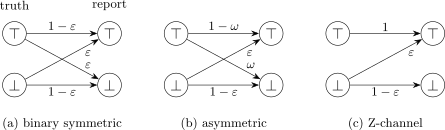
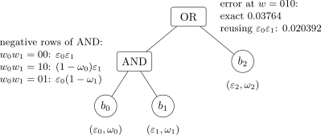
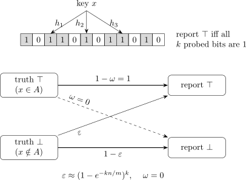
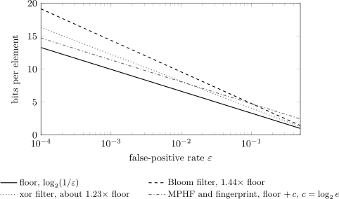
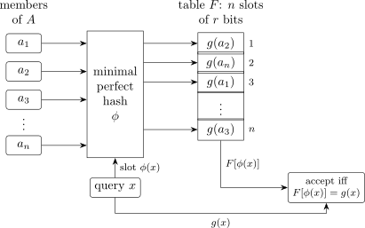

Bernoulli Types
Two-Sided Error in Approximate Membership,
Retrieval, and Computation
Alexander Towell
Southern Illinois University Edwardsville
October 2026
Bernoulli Types: Two-Sided Error in Approximate Membership, Retrieval, and Computation
© 2026 Alexander Towell.
This work is licensed under the Creative Commons Attribution 4.0 International License (CC BY 4.0). You may share and adapt it for any purpose, including commercially, provided you give appropriate credit, link to the license, and indicate if changes were made. License text: https://creativecommons.org/licenses/by/4.0/.
Source code embedded in this work (listings and examples) and the companion Python package bernoulli-types are licensed under the MIT License.
Drafting and verification of this work were assisted by AI tools (Anthropic Claude and OpenAI Codex). The author is responsible for all of its content, including any errors.
This edition: October 2026.
Author: Alexander Towell, lex@metafunctor.com
ORCID: 0000-0001-6443-9897
Web: https://metafunctor.com
Source: https://github.com/queelius/bernoulli/tree/main/book
This book is about one object. A query returns a bit, and the bit is observed through a binary channel: a true negative is reported as positive with probability \(\fprate \) (the false-positive rate) and a true positive is reported as negative with probability \(\fnrate \) (the false-negative rate). A Bloom filter answering a membership query is such a channel, with \(\fnrate = 0\). So is one round of the Miller–Rabin test, a survey respondent answering under randomized response, a noisy classifier, the readout of a qubit, and a keyword lookup in a Bloom-filter-based encrypted index. The book takes the channel as its primitive and follows it outward: to Boolean combinations of noisy bits, to approximate sets, maps, relations and algebraic types, to constructions that meet the space bounds, and finally to the places where the model stops describing the system in front of it.
The contribution is a unification, not a collection of new theorems. Nearly every individual result in these pages has a named predecessor, and several are decades old. The per-element channel is randomized response on an indicator [War65]. The \(\log _2(1/\fprate )\) bits-per-element bound for approximate membership is due to Carter et al. [Car+78], and the case with false negatives was settled to leading order by Pagh and Rodler [PR01]. Forward propagation of error probabilities through logic gates goes back at least to Parker and McCluskey [PM75], and the noisy-parity identity is Lemma 1 of Gallager [Gal62]. The perfect hash filter, a minimal perfect hash function plus short fingerprints, is described by Dietzfelbinger and Pagh [DP08]. Program values that carry a correctness probability through a computation are the subject of Decaf [Bos+15] and its relatives, and a probabilistic relational algebra was given by Fuhr and Rölleke [FR97]. Each chapter ends with a section titled Notes and Lineage that says who established each main result, what the chapter adds (usually a presentation, a unification, or a correction), and what it deliberately leaves out. The intent is that no reader should have to guess whether a result is being claimed.
What the unified treatment does add, I think, is twofold. First, a single vocabulary (the rate pair, model order, the Kronecker factorization of independent queries) for objects that live in communities which rarely cite one another: data structures, databases, survey statistics, diagnostic testing, complexity theory, cryptography, and quantum measurement. Second, an honest map of where that vocabulary fails. The most important entry on the map is in Chapter 3: a rate pair does not propagate through a Boolean formula. The false-positive rate of an AND depends on which negative input assignment occurred, so a gate that receives only a summary pair can be wrong by a factor of two on a three-input formula (Example 3.1). What does propagate exactly is the error conditional on each latent input assignment; prior-averaged rates and worst-case bounds are the honest summaries. Shared inputs, shared intermediate values, adaptive queries and construction-time conditioning each break the independence the model needs, and Part V is devoted to that boundary.
The book grew out of a set of manuscripts on Bernoulli sets, their composition, classification measures, entropy bounds, the Bernoulli hash function, the perfect hash filter, approximate maps, approximate relations, algebraic types, and quantum readout [Tow26b; Tow26f; Tow26c; Tow26g; Tow26j; Tow26m; Tow26i; Tow26h; Tow26k; Tow26a]. Writing the book, and auditing it with exhaustive finite enumeration and exact rational arithmetic, turned up errors in several of them: a claim that the rate pair carries through an arbitrary Boolean tree; a finite order-statistic law for the Bernoulli hash function that fails already at two keys and two slots; an adaptive acceptance threshold presented as saving space when it trades away recall; a closure theorem for composed approximate maps that fails when two inputs share an intermediate value; overbroad closure and independence claims for approximate relations; a scope statement for quantum readout that confused a diagonal measurement with a diagonal state; and a space lower bound with false negatives described as open when it is not. Earlier drafts of this book had their own errors, among them a perfect-hash-addressed fingerprint table presented as meeting the space floor, which no minimal perfect hash permits. Where a chapter departs from a source manuscript, the chapter is the corrected version and supersedes it; Chapter B tabulates the corrections.
The reader I have in mind is a researcher or graduate student who already works with one of these objects (a filter, a sketch, a diagnostic test, a randomized algorithm, a probabilistic database, an encrypted index, a readout model) and wants to see it in relation to the others. The book assumes undergraduate probability, basic linear algebra, and comfort with proofs. Information theory beyond entropy and channel capacity is developed where it is used. The book is not a survey of filter engineering and reports no performance benchmarks; for the current state of practical filters and retrieval structures see Graf and Lemire [GL22] and Dietzfelbinger et al. [Die+26].
Part I (Chapters 1 to 4) builds the atom: the noisy bit, binary channels and model order, Boolean algebra under noise with the latent-assignment caveat, and the two independence axioms with the Kronecker factorization they imply. Everything later depends on it, Chapters 3 and 4 most of all. Part II (Chapters 5 to 8) moves from bits to sets: the Bloom filter read as a channel, set operations and the model order they raise, classification measures as random variables, and the space bounds. Part III (Chapters 9 to 13) generalizes to maps and \(n\)-ary channels, sketches, randomized algorithms, error contracts for approximate relations, and algebraic types. Part IV (Chapters 14 and 15) treats constructions that approach the bounds, read as seed search and as perfect hashing with fingerprints. Part V (Chapters 16 to 19) is the boundary: where the model fails, cipher maps and trapdoor computing, encrypted search, and the operator representation that connects the framework to quantum measurement.
Readers with narrower aims can take shorter paths. For data structures: Part I, Chapters 5, 8 and 9, and Part IV. For databases: Part I, Chapters 6 and 12. For security: Part I, Chapter 5, and Chapters 16 to 18. For quantum readout: Chapters 2 to 4, Chapter 16, and Chapter 19. Chapter A collects the notation, Chapter B restates the framework’s principles together with their scope, and Chapter C indexes the companion code.
The Python package bernoulli-types (import name bernoulli), maintained in the bernoulli-py/ directory of the source repository, is the book’s executable companion. It implements the atom, exact error propagation for Boolean formulas over independent noisy bits, approximate sets, maps, relations and sketches, and the classification measures. Fifteen notebooks reproduce the numerical claims of the chapters they accompany; the chapters without a notebook (Chapters 4, 13, 17 and 19) are theoretical. The package is research software at an alpha stage, not a production library.
“Bernoulli” is overloaded. A Bernoulli filter in target tracking [Ris+13], a Bernoulli factory in simulation [KO94], and the Bernoulli map of dynamical systems are unrelated to the objects here. In this book the name refers only to the Bernoulli-distributed error indicators that the framework attaches to each query.
The text is released under the Creative Commons Attribution 4.0 International License (CC BY 4.0); embedded code and the companion package are under the MIT License. Drafting and verification were assisted by AI tools (Anthropic Claude and OpenAI Codex), used for drafting prose, checking claims by exhaustive enumeration, auditing them against the literature, and writing companion code. That assistance is not a substitute for a reader’s scrutiny: earlier review rounds, human and machine, passed errors that later audits caught. I am responsible for all of its content. Corrections are welcome and will be recorded in the source repository.
Alexander Towell
October 2026
Three systems from different corners of applied probability each produce a single Boolean output that may be wrong, and at the level of input-output behavior they are one object. We introduce them as running examples and extract that object.
Consider a coin whose bias depends on how it is held: palmed “in” it lands heads with probability \(\tau \), palmed “out” with probability \(\epsilon \), where \(\tau \) and \(\epsilon \) are neither equal nor near \(1/2\). Read “in” as a positive condition and “out” as a negative one. The coin reports each with its own reliability: two inputs, one Boolean output, two independent parameters. It returns as an asymmetric channel in Section 2.2 and as the worked instance of the formal definition in Chapter 4.
A single bit crosses a noisy line, a wire, a wireless link, a chip-to-chip trace. For each bit independently the line flips the symbol with crossover probability \(\fprate \) and passes it through otherwise, with the same \(\fprate \) in both directions: a \(\top \) flips to \(\bot \) and a \(\bot \) to \(\top \) with equal probability. This is the binary symmetric channel (BSC), the simplest model of a noisy one-bit line and the most studied channel in information theory; the term channel is Shannon’s, for any single-input, single-output stochastic transmission. The symmetry is a real constraint, since many physical channels are asymmetric and need a separate rate per direction (Section 2.2). Chapter 2 gives the BSC a formal definition and a matrix representation (Section 2.1).
A spam filter emits a verdict on each message, spam (\(\top \)) or ham (\(\bot \)). It flags ham as spam at the false-positive rate \(\fprate \) and misses spam at the false-negative rate \(\fnrate \), and these are generally unequal: a filter that drops legitimate mail at \(1\%\) is a different product from one that leaks \(1\%\) of spam. Here the two parameters are forced by the problem rather than by happenstance, since the two errors are distinct harms with distinct costs. A score-thresholded classifier traces a curve of \((\fprate , \fnrate )\) pairs as its threshold sweeps, the trade-off the ROC curve re-axes; no threshold drives both rates to zero at once.
A coin held in or out, a wire carrying one bit, a filter emitting one verdict: physical, informational, and algorithmic, yet identical in input-output behavior. Each maps a Boolean input to a Boolean output that is correct with some probability and wrong otherwise, and the error behavior is fixed by at most two numbers, the rate of reporting \(\top \) on a \(\bot \)-input and the rate of reporting \(\bot \) on a \(\top \)-input. The BSC carries one parameter because its two rates are constrained equal; the coin and the filter carry two. Two numbers describe everything probabilistic at the single-query level. We call this object a noisy bit. The object is not new: it is the asymmetric binary channel of information theory, the misclassification model of the \(2 \times 2\) table, and, when the noise is added on purpose to protect a respondent, randomized response (see the Notes and Lineage at the end of this chapter). What the book adds is the decision to treat these as one atom and to build everything else from it.
The three faces used three vocabularies because each is natural in its own letters, and they reconcile directly: the coin’s \(\tau \) is the true-positive rate \(\tprate = 1 - \fnrate \) and its \(\epsilon \) is \(\fprate \); the classifier’s \((\fprate , \fnrate )\) are the same quantities; the BSC is the special case \(\fprate = \fnrate \). Three commitments follow and hold throughout Part I. The noisy bit is atomic: one Boolean input slot, one Boolean output slot, nothing smaller, and everything larger (multi-bit channels, repeated-trial algorithms such as Miller-Rabin, classifier ensembles) is built from noisy bits, as chapters 2 and 4 show. It is behavioral: the description fixes the rates and says nothing about mechanism, so a biased coin, a thermal photon detector, and a logistic-regression classifier with the same rates are the same noisy bit. And it is parsimonious: at most two numbers per noisy bit. The rest of Part I is the algebra of how these atoms compose.
A noisy bit is fixed by two conditional error rates. We make “rate” precise through the \(2 \times 2\) contingency table, name the four rates it yields, and relate them to the precision and recall of binary classification.
Run a noisy bit \(n\) times. Each trial has a known true input, \(\top \) or \(\bot \), and an observed output, so the \(n\) trials are ordered pairs (truth, output), each falling into one of four joint states: a true positive (truth \(\top \), output \(\top \)), a false negative (truth \(\top \), output \(\bot \)), a false positive (truth \(\bot \), output \(\top \)), and a true negative (truth \(\bot \), output \(\bot \)). The term “false negative” names the output, not the truth: a \(\bot \) reported when the truth was \(\top \). Writing TP, FN, FP, TN for the counts, so that \(\mathrm {TP} + \mathrm {FN} + \mathrm {FP} + \mathrm {TN} = n\), arrange them by truth (rows) and observed output (columns):
| output \(\top \) | output \(\bot \) | total | |
| truth \(\top \) | TP | FN | TP + FN |
| truth \(\bot \) | FP | TN | FP + TN |
| total | TP + FP | FN + TN | \(n\) |
The two error rates are conditional, each normalized by its truth row: \[ \fprate \;=\; \frac {\mathrm {FP}}{\mathrm {TN} + \mathrm {FP}}, \qquad \fnrate \;=\; \frac {\mathrm {FN}}{\mathrm {TP} + \mathrm {FN}}. \] Dividing by the row total rather than by \(n\) is what makes \(\fprate \) and \(\fnrate \) properties of the noisy bit itself rather than of the input mixture observed. The complementary rates are the true-negative rate \(\tnrate = 1 - \fprate \) (the \(\bot \)-inputs reported correctly, also specificity) and the true-positive rate \(\tprate = 1 - \fnrate \) (also sensitivity, and recall in the vocabulary below). The two free parameters of a noisy bit are \(\fprate \) and \(\fnrate \); the other two are derived. The biased coin’s \((\tau , \epsilon )\) of Section 1.1 is \((\tprate , \fprate )\), and the binary symmetric channel of Section 2.1 is the constrained case \(\fprate = \fnrate \), where one parameter suffices. These four symbols keep these meanings throughout the book.
Remark 1.2.1 (Negation reflects the rate pair). Relabeling the output of a noisy bit, reporting \(\bot \) wherever it reported \(\top \) and conversely, exchanges the two error directions: a noisy bit with rates \((\fprate , \fnrate )\) becomes one with rates \((\fnrate , \fprate )\). Logical negation thus acts on the parameter pair as the reflection \((\fprate , \fnrate ) \mapsto (\fnrate , \fprate )\) across the diagonal of the rate square \([0,1]^2\). This is the atom-level form of the complement operation that Part II lifts to approximate sets (Proposition 6.2.2). \(\triangle \)
A practitioner of binary classification reads Table 1.1 through precision and recall: \[ \mathrm {precision} \;=\; \frac {\mathrm {TP}}{\mathrm {TP} + \mathrm {FP}}, \qquad \mathrm {recall} \;=\; \frac {\mathrm {TP}}{\mathrm {TP} + \mathrm {FN}}. \] Recall coincides with the true-positive rate, \(\mathrm {recall} = \tprate = 1 - \fnrate \). Precision does not reduce to the rates of the noisy bit: its denominator is a column total, which depends on how many \(\top \)- and \(\bot \)-inputs the sample contained. With \(n_\top \) positives and \(n_\bot \) negatives, \(\mathrm {TP} \approx n_\top \tprate \) and \(\mathrm {FP} \approx n_\bot \fprate \), so \[ \mathrm {precision} \;\approx \; \frac {n_\top (1 - \fnrate )}{n_\top (1 - \fnrate ) + n_\bot \fprate }. \] Precision is therefore a function of the prevalence \(n_\top / n_\bot \) as well as the rates, whereas \((\fprate , \fnrate )\) is intrinsic to the noisy bit. The pair \((\fprate , \fnrate )\) describes the noisy bit; the pair (precision, recall) describes the noisy bit together with a workload. This is why the framework takes \((\fprate , \fnrate )\) as the primary description and treats precision and accuracy as derived; Chapter 7 develops the derived measures as random variables.
A filter run on \(n = 100\) messages, 40 spam (\(\top \)) and 60 ham (\(\bot \)), produces the table
| flagged spam | flagged ham | total | |
| true spam | 35 | 5 | 40 |
| true ham | 3 | 57 | 60 |
| total | 38 | 62 | 100 |
with rates \(\fprate = 3/60 = 0.05\) and \(\fnrate = 5/40 = 0.125\), hence \(\tnrate = 0.95\) and \(\tprate = 0.875\). Recall is \(35/40 = 0.875 = \tprate \), while precision is \(35/38 \approx 0.921\), exceeding \(\tprate \) because the column total (38) falls short of the truth row total (40). At a different prevalence the same \((\fprate , \fnrate )\) would yield a different precision.
Remark 1.2.2 (The constant noisy bit and the zero-information line). A noisy bit that ignores its input, reporting \(\top \) with a fixed probability \(p\) regardless of the truth, has \(\fprate = p\) and \(\fnrate = 1 - p\), so \(\fprate + \fnrate = 1\). On this anti-diagonal of the rate square the output is statistically independent of the truth: the report carries no information about the input. A constant rule is thus simultaneously a perfect classifier for one truth class and the worst possible one for the other (at \(p = 1\), \(\fnrate = 0\) but \(\fprate = 1\)). The locus \(\fprate + \fnrate = 1\) is the zero-information case, and it is distinct from the symmetric case \(\fprate = \fnrate \), which remains informative for \(\fprate \neq 1/2\). \(\triangle \)
A noisy bit has two inputs and two outputs, so its single-trial behavior is exhausted by four input-output combinations. Section 1.2 arranged these as a table of counts; abstracted from any particular run they are a table of outcome types, indexed by true input (rows) and observed report (columns):
| report \(\top \) | report \(\bot \) | |
| truth \(\top \) | correct positive | false negative |
| truth \(\bot \) | false positive | correct negative |
The four cells carry the same labels as the contingency table of Section 1.2, TP, FN, FP, TN, seen from a different angle: the contingency table counts how many of \(n\) trials land in each cell, while the outcome matrix names the cells themselves. The empirical table is a sample from the joint distribution over these cells.
The input domain \(\{\top , \bot \}\) has exactly two elements. We call this set the Boolean universe and write it \(\Universe = \{\top , \bot \}\), borrowing universe from set-theoretic usage as the ambient set over which subsets are formed and predicates evaluated. It is the smallest universe that supports a non-trivial predicate: one element admits no discrimination, two already admit the question whether an input is one value or the other. Part I develops the algebra of this universe and nothing larger. Every richer universe (multi- bit inputs, finite enumerations, arbitrary algebraic types) is assembled from Booleans by Kronecker products (Section 4.4) and their lifts in Part III, so the algebra of these four cells governs systems that look more complicated but reduce, on inspection, to compositions of noisy bits. The reduction is exact per input; chapter 3 shows that what a composite inherits is a description indexed by the latent inputs, not a single pair of rates (Section 3.3).
A fully formal description assigns the four cells a joint distribution: given the rates of Section 1.2 and the prevalence of \(\top \) in the input stream, the cells receive four probabilities summing to one. We defer that step. The formal object whose instances are exactly the noisy bits with two free rate parameters is defined in Section 4.5, which earns the joint distribution by first stating the two independence axioms that make the type well-posed and then proving the Kronecker factorization that justifies the parameter economy. Writing the joint mass here would either duplicate that machinery or assert it without support. Definition 4.5.1 gives the joint table, the channel matrix, and the worked biased-coin instance.
For one concrete instance, take the biased coin with \(\fprate = 0.1\) and \(\fnrate = 0.2\). Of its \(\top \)-trials a fraction \(\tprate = 0.8\) land in the correct-positive cell and \(\fnrate = 0.2\) in the false-negative cell; of its \(\bot \)-trials a fraction \(\tnrate = 0.9\) land in the correct-negative cell and \(\fprate = 0.1\) in the false-positive cell. These are conditional shares within each row; converting them to outright cell probabilities requires the prevalence of \(\top \), which is exactly the joint distribution deferred to Section 4.5. The next section estimates the rates from data without waiting for that formalization.
In practice the rates are not given: a classifier arrives without a label stating its false-positive rate, and a channel must be characterized from observed traffic. We state how to estimate \(\fprate \) and \(\fnrate \) from a finite sample and how to quantify the uncertainty. The full theory of these estimators (bias, variance, efficiency, and interval forms) is developed in Chapter 7.
Run a noisy bit \(n\) times, with \(n_0\) trials of truth \(\bot \) and \(n_1 = n - n_0\) of truth \(\top \). Each \(\bot \)-trial reports \(\top \) independently with probability \(\fprate \), so the false-positive count is binomial, \(\mathrm {FP} \sim \mathrm {Binomial}(n_0, \fprate )\), and likewise \(\mathrm {FN} \sim \mathrm {Binomial}(n_1, \fnrate )\). The row-conditional proportions \[ \hat {\fprate } = \frac {\mathrm {FP}}{n_0}, \qquad \hat {\fnrate } = \frac {\mathrm {FN}}{n_1} \] are unbiased, \(\mathbb {E}[\hat {\fprate }] = \fprate \), with variances \[ \mathrm {Var}(\hat {\fprate }) = \frac {\fprate (1 - \fprate )}{n_0}, \qquad \mathrm {Var}(\hat {\fnrate }) = \frac {\fnrate (1 - \fnrate )}{n_1}. \] The variance shrinks as \(1/n_0\), and its numerator \(\fprate (1 - \fprate )\) peaks at \(\fprate = 1/2\), where the noisy bit is hardest to characterize, and vanishes at \(\fprate \in \{0, 1\}\), where one trial settles the matter.
For large \(n_0\) the central limit theorem makes \(\hat {\fprate }\) approximately Normal with mean \(\fprate \) and variance \(\fprate (1 - \fprate )/n_0\). Substituting the estimate into the variance gives the Wald interval at level \(1 - \alpha \), \[ \hat {\fprate } \;\pm \; z_{\alpha /2} \sqrt {\frac {\hat {\fprate }(1 - \hat {\fprate })}{n_0}}, \] with \(z_{\alpha /2}\) the upper-\(\alpha /2\) standard-Normal quantile. The Wald form is asymptotically correct but under-covers at small \(n_0\) when \(\fprate \) is near \(0\) or \(1\), and can even leave \([0,1]\); the Wilson, Clopper-Pearson, and Jeffreys intervals handle the boundary better, and Chapter 7 develops them.
A companion notebook reproduces these claims; it is ch01-noisy-bit.ipynb in the directory bernoulli-py/notebooks/ of the companion package. It estimates \(\fprate \) from a simulated binary symmetric channel across sample sizes spanning several orders of magnitude, exhibiting the \(1/\sqrt {n_0}\) concentration of \(\hat {\fprate }\) about the true rate; and it measures the empirical coverage of the \(95\%\) Wald interval, showing it approach nominal at moderate \(n_0\) and fall below nominal as \(n_0\) shrinks or \(\fprate \) approaches a boundary, the under-coverage noted above.
Remark 1.4.1 (Independence is separate from rate-stability). The binomial model assumes the per-query error events are independent. Independence is a distinct assumption from the stability of the per-input rates: a system can have stable rates \(\fprate \) and \(\fnrate \) yet errors that are correlated across queries. The point estimates \(\hat {\fprate }, \hat {\fnrate }\) remain valid in that case, but the variances above, and every confidence interval and sample-size requirement built on them, misstate the true uncertainty. Independence is named as Axiom 1 in Section 4.2, and chapter 16 takes correlated-error systems as an explicit subject. \(\triangle \)
The noisy bit is atomic in two senses. First, it has no internal Bernoulli structure to decompose: the input is one Boolean value, the output is one Boolean value, and the entire behavior is two numbers, \(\fprate \) and \(\fnrate \). A smaller part would require a sub-Boolean input or output, and there is nothing below a Boolean. The atom is where internal accounting stops and external accounting begins, and every larger object in the book, chained channels, noisy logic gates, randomized algorithms, approximate sets, general algebraic types, is assembled from noisy bits by a specific composition rule. Second, the noisy bit sits at the minimum of the model-order ladder that Section 2.4 defines, the number of distinct error regimes an input domain splits into. A general noisy bit has model order two, the blocks \(\{\top \}\) and \(\{\bot \}\) carrying independent rates; the symmetric case collapses to order one. No noisy system over a Boolean domain has a smaller non-trivial channel matrix.
The claim is a working hypothesis until discharged, and chapters 2 through 4 do so in three directions. Chapter 2 gives the noisy bit a \(2 \times 2\) row-stochastic matrix \(Q\), places the symmetric, asymmetric, and Z-channel cases on the model-order ladder, and shows the atom closed under serial composition (the matrix product of row-stochastic matrices is row-stochastic). Chapter 3 asks what AND, OR, and NOT do to noisy bits. Gate by gate the answer is closed-form, but it is not again a noisy bit: a gate over two distinct latent bits has a single rate on one side and up to three on the other, so a pair of rates does not propagate through a Boolean tree. What does propagate exactly is the error at each latent assignment of the inputs; a single pair survives only as a prior average or as a worst-case bound (Section 3.3), and corner products such as the composition theorem (Section 3.4) are exact only in their stated regimes. One round of the Miller-Rabin primality test is a noisy bit with \(\fnrate = 0\) and \(\fprate \le 1/4\), and because every round reads the same latent value the \(k\)-round bound \(\fprate ^{(k)} \le (1/4)^k\) is the all-negative product rule rather than a separate analysis (Section 3.5). Chapter 4 names the two independence assumptions used silently until then, element-wise independence (Section 4.2) and conditional independence of per-block rates (Section 4.3); proves the Kronecker factorization they purchase (Section 4.4), which is what makes the per-element description sufficient; and writes the formal definition \(\Bernoulli {\BoolType } = (X, Y, Q)\) (Section 4.5), of which every atom in chapters 1 through 3 is an instance.
Beyond Part I the atom is held fixed and its surroundings vary. Part II keeps the Boolean codomain and arranges many noisy bits into a structure: a set \(S\) over a universe induces a membership query per element, an approximate set makes each query a noisy bit (the Bloom filter being the canonical one-sided instance, \(\fnrate = 0\) with tunable \(\fprate \)), and the development is the algebra of how set operations propagate error, how classification measures quantify quality, and how much space a target accuracy demands. Part III replaces the Boolean codomain with an arbitrary algebraic type, lifting the atom to approximate maps, relations, and structured values, where the two-element model order ceases to be a ceiling. The atom is the unit that gets composed; everything that follows is composition, and an honest account of what composition preserves and what it does not.
BF Lineage. Every ingredient of the noisy bit is classical. The channel reading, a conditional distribution of output given input, and the binary symmetric channel are Shannon’s [Sha48]. The \(2 \times 2\) table of sensitivity and specificity comes from diagnostic testing, where Bross [Bro54] studied how misclassification distorts it. The same asymmetric channel applied deliberately to a survey respondent’s true indicator is randomized response [War65], deployed at scale in RAPPOR [EPK14]; there the channel is known and inverted to estimate a prevalence, the reverse of the error-accounting use made of it here. Precision and recall come from information retrieval [MRS08, Ch. 8]. The binomial estimators and intervals of Section 1.4 are standard and are developed, with their sources, in chapter 7; Miller-Rabin is credited in the notes to chapter 3. The framing of these objects as the atom of a framework of approximate types is that of the source manuscripts [Tow26b; Tow26k].
BF What this chapter adds. A presentation: the biased coin, the noisy line, and the classifier verdict are treated as three faces of one atom with two parameters, and the distinction between the intrinsic pair \((\fprate , \fnrate )\) and the workload-dependent pair (precision, recall) is fixed as the book’s convention. No result in the chapter is new.
BF Left out. ROC analysis and threshold selection, cost-sensitive decision rules, and the inversion of a known channel to estimate prevalence (the randomized-response problem) are mentioned only in passing.
The three framings of Section 1.1 share a common structure, and the binary symmetric channel is that structure stripped to its essentials: a single Boolean input, a single Boolean output, and one crossover probability that the output disagrees with the input.
Definition 2.1.1 (Binary Symmetric Channel). A binary symmetric channel (BSC) with crossover probability \(\fprate \in (0, 1)\) is a random map \(\phi : \{\top , \bot \} \to \{\top , \bot \}\) with \[ \Pr \{\phi (x) \neq x\} \;=\; \fprate \quad \text {for every } x \in \{\top , \bot \}. \]
The defining property is that the crossover is the same for both inputs: \(\Pr \{\phi (\top ) \neq \top \} = \Pr \{\phi (\bot ) \neq \bot \} = \fprate \), so a single parameter plays the role of both the false-positive and the false-negative rate, \(\fprate = \fnrate \). The symmetry is a genuine constraint, and most real systems lack it: a spam filter flags legitimate mail far more often than it leaks spam. The BSC is the clean starting point precisely because it isolates bit-flip noise from any question of which direction is noisier; the asymmetric generalization is Section 2.2.
We record a binary channel as a \(2 \times 2\) row-stochastic matrix \(Q\), the channel matrix (Figure 2.1(a) draws the BSC case). The convention, fixed for the rest of the book: rows are indexed by the input block, row 1 for \(B_1 = \{\top \}\) (positives) and row 2 for \(B_2 = \{\bot \}\) (negatives); columns by the output label, \(\top \) then \(\bot \); and the \((i,j)\) entry is the probability of output \(j\) given an input in block \(B_i\). The four entries name the confusion-table rates, so the general order-2 channel and the BSC special case are \[ Q \;=\; \begin {pmatrix} \tprate & \fnrate \\ \fprate & \tnrate \end {pmatrix} \;=\; \begin {pmatrix} 1 - \fnrate & \fnrate \\ \fprate & 1 - \fprate \end {pmatrix}, \qquad Q_{\mathrm {BSC}} \;=\; \begin {pmatrix} 1 - \fprate & \fprate \\ \fprate & 1 - \fprate \end {pmatrix}. \] The BSC matrix is circulant: its two rows are permutations of each other, the matrix expression of symmetry. At \(\fprate = 0.05\), for instance, a positive input reads back correctly with probability \(0.95\) and flips with probability \(0.05\), and likewise for a negative input; under a uniform input prior the marginal error rate is exactly \(\fprate \), independent of the prior because the channel is symmetric.
The BSC’s capacity, the maximum mutual information \(I(X; Y)\) over input priors, is \[ C \;=\; 1 - H_2(\fprate ), \qquad H_2(\fprate ) = -\fprate \log _2 \fprate - (1 - \fprate )\log _2(1 - \fprate ), \] attained at the uniform prior \(p = 1/2\), with \(H_2\) the binary entropy function; both the channel and the formula are Shannon’s [Sha48]. The derivation is short: \(H(Y \mid X) = H_2(\fprate )\) for every prior, while \(H(Y)\) is maximized at \(p = 1/2\), so \(C = \max _p H(Y) - H_2(\fprate ) = 1 - H_2(\fprate )\). Capacity is one bit per use at \(\fprate = 0\) (a perfect channel) and zero at \(\fprate = 1/2\), where the output is independent of the input. The \(\fprate = 1/2\) point is the zero-information case met in Section 1.2; for the BSC it coincides with the symmetric crossover, whereas for an asymmetric channel the zero-information locus is \(\fprate + \fnrate = 1\).
The framings of Section 1.1 are the same matrix \(Q_{\mathrm {BSC}}\) with different labels. The biased coin is a coin with one flip probability \(\fprate \) for both faces; the noisy line is Shannon’s original BSC [Sha48], a bit flipped independently with probability \(\fprate \); the classifier with equal false-positive and false-negative rates is a BSC, though real classifiers rarely satisfy \(\fprate = \fnrate \) and are better modeled by the asymmetric channel of Section 2.2. Composing a BSC with itself makes matters worse, not better: two crossover-\(\fprate \) channels in series give crossover \(2\fprate (1 - \fprate ) > \fprate \) for \(0 < \fprate < 1/2\), derived in Section 2.3.
The source literature uses two phrases for the BSC, “first-order” and “the symmetric special case of the order-2 model,” and they refer to different things. Model order, formalized in Section 2.4, counts the blocks in the partition of the input domain that groups inputs sharing a common error rate. For the BSC both inputs share the crossover \(\fprate \), so they form a single block and the BSC has model order 1; the asymmetric channel, with \(\fprate \neq \fnrate \), keeps them in separate blocks at model order 2. Calling the BSC “the symmetric special case of the order-2 model” refers not to its order but to the family it is embedded in: one may always write the BSC with the two-block discrete partition and impose \(\fprate = \fnrate \), the working frame for chapters 2 through 4. The BSC is genuinely model order 1, studied as a constrained member of the order-2 family; Section 2.4 separates model order from parameter count and proves that no binary channel exceeds order 2.
Throughout, \(\fprate \) is the false-positive rate, \(\fnrate \) the false-negative rate, with \(\tprate = 1 - \fnrate \) and \(\tnrate = 1 - \fprate \) the complementary rates, and for the BSC the single crossover \(\fprate = \fnrate \). The source papers sometimes pair (FPR, TPR) rather than (FPR, FNR); since \(\mathrm {TPR} = 1 - \mathrm {FNR}\) the choice is cosmetic, and this book uses \((\fprate , \fnrate )\).
The BSC’s equal error rates are rarely satisfied in practice: a spam filter, a Bloom filter, and a medical screening test all treat their two error directions differently. Allowing the false-positive rate \(\fprate \) and the false-negative rate \(\fnrate \) to vary independently gives the general binary channel, the atom of two-sided error.
Definition 2.2.1 (General asymmetric binary channel). An asymmetric binary channel with rates \(\fprate , \fnrate \in [0,1)\) is a random map \(\phi : \{\top , \bot \} \to \{\top , \bot \}\) with \(\Pr \{\phi (\top ) \neq \top \} = \fnrate \) and \(\Pr \{\phi (\bot ) \neq \bot \} = \fprate \), and channel matrix \[ Q \;=\; \begin {pmatrix} 1 - \fnrate & \fnrate \\ \fprate & 1 - \fprate \end {pmatrix} \] in the row convention of Section 2.1.
Setting \(\fnrate = \fprate \) recovers the BSC of Definition 2.1.1. Setting \(\fnrate = 0\) makes row 1 equal to \((1, 0)\), so a positive input is always reported correctly: this is the Z-channel. Figure 2.1 draws the three cases. The asymmetric channel is the standard binary channel of information theory. Read as a model of how a recorded indicator departs from the true one, it is also the misclassification model of \(2 \times 2\) tables and, when the noise is introduced deliberately, Warner’s randomized response (see the Notes and Lineage at the end of this chapter).

Definition 2.2.2 (Z-channel). A Z-channel with false-positive rate \(\fprate \in (0,1)\) is an asymmetric binary channel with \(\fnrate = 0\), channel matrix \[ Q_Z \;=\; \begin {pmatrix} 1 & 0 \\ \fprate & 1 - \fprate \end {pmatrix}. \]
The Z-channel makes false negatives impossible while admitting false positives at rate \(\fprate \) (one-sided error), so an output of \(\bot \) is fully reliable and an output of \(\top \) is uncertain.1 This reliable-no, uncertain-yes profile is exactly the Bloom filter: it answers set membership with no false negatives (\(x \in S\) always returns \(\top \)) and a tunable false-positive rate (\(x \notin S\) may still return \(\top \)), so a Bloom filter query is a Z-channel, \(\fnrate = 0\) with \(\fprate \) set by its bit-width and hash count (conditionally on the realized filter; Chapter 5 treats the randomness of the rate itself). The doubly-biased coin, the screening test (small \(\fnrate \), larger \(\fprate \)) and its confirmatory counterpart (the reverse), and any system tuned by a decision threshold are all asymmetric channels; as the threshold sweeps, \((\fprate , \fnrate )\) traces a curve in \([0,1]^2\), each point a distinct channel, which is the ROC curve re-axed.
For one instance, take \(\fprate = 0.05\), \(\fnrate = 0.10\): \[ Q \;=\; \begin {pmatrix} 0.90 & 0.10 \\ 0.05 & 0.95 \end {pmatrix}, \] with false negatives twice as likely as false positives. Under a uniform input prior its accuracy is the diagonal average \(\tfrac {1}{2}(0.90 + 0.95) = 0.925\). A BSC at \(\fprate = \fnrate = 0.075\) achieves the same accuracy with both off-diagonal entries equal, so accuracy alone does not see the asymmetry; the distinction matters once the prior is non-uniform or the two errors carry different costs, which is the subject of Chapter 7.
The asymmetric channel is the general model-order-2 binary channel: the input domain partitions into \(B_1 = \{\top \}\) and \(B_2 = \{\bot \}\), each block carrying its own rate, \(\fnrate \) for \(B_1\) and \(\fprate \) for \(B_2\). The BSC imposes \(\fnrate = \fprate \), which merges the two blocks into one and drops the model order to 1 (Section 2.4); the Z-channel keeps the blocks distinct (\(\fnrate = 0 \neq \fprate \)) and so remains order 2 with a single free parameter, the first sign that model order and parameter count are separate quantities. Section 2.4 makes the distinction precise and proves the Boolean ceiling: with only two input elements, no binary channel exceeds model order 2.
Remark 2.2.1 (The BSC is a measure-zero special case). In the parameter square \([0,1)^2\) of pairs \((\fprate , \fnrate )\), the binary symmetric channels are exactly the diagonal \(\fprate = \fnrate \), a one-dimensional, measure-zero subset. A generic asymmetric channel is not a BSC, and an arbitrarily small perturbation off the diagonal turns a BSC into a two-block, model-order-2 channel. Symmetry is the exception in the space of binary channels, not the rule, which is why the book works in the order-2 frame and treats the BSC as the constrained case rather than the reverse. \(\triangle \)
Many systems chain noisy steps: an amplifier feeds another, a filter feeds a ranker. If an element passes through \(Q_1\) and its output enters \(Q_2\), the end-to-end channel is the matrix product.
Definition 2.3.1 (Serial composition of binary channels). For binary channel matrices \(Q_1\) and \(Q_2\), the serial composition applying \(Q_1\) then \(Q_2\) has channel matrix \(Q_{\mathrm {total}} = Q_1 Q_2\), with \((Q_{\mathrm {total}})_{ij} = \sum _k (Q_1)_{ik}(Q_2)_{kj}\).
The sum is the law of total probability over the intermediate value \(k\): \((Q_1)_{ik}\) carries block \(B_i\) to intermediate output \(k\), and \((Q_2)_{kj}\) carries \(k\) to final output \(j\). Because the matrices are row-stochastic and act on row vectors of input probabilities, the stage applied first is the left factor: an input distribution \(p\) leaves the chain as \(p\,Q_1 Q_2\). This is the two-step Chapman-Kolmogorov relation of a Markov chain, and the cascade of channels of information theory [CT06].
Two BSCs in series produce a third. Multiplying circulant matrices preserves the circulant form, and the off-diagonal entry of \(Q_1 Q_2\) is \begin {equation} \label {eq:bsc-composition} \fprate _{\mathrm {total}} \;=\; \fprate _1(1 - \fprate _2) + (1 - \fprate _1)\fprate _2 \;=\; \fprate _1 + \fprate _2 - 2\fprate _1\fprate _2. \end {equation} The composed error is the exclusive-or of the two individual flips: the input is corrupted exactly when one channel flips and the other does not (if both flip, the errors cancel). For \(0 < \fprate _1, \fprate _2 < 1/2\) this exceeds both operands, so two imperfect symmetric channels in series are noisier than either alone; at \(\fprate _1 = 0.05\), \(\fprate _2 = 0.10\) the composed crossover is \(0.14\). Chaining copies of one BSC drives the crossover toward the stationary \(1/2\), where the channel carries no information.
The general rule is the same matrix product. For \(Q_1, Q_2\) with rates \((\fprate _i, \fnrate _i)\), the \((1,2)\) and \((2,1)\) entries of \(Q_1 Q_2\) give \begin {equation} \label {eq:asym-composition} \fnrate _{\mathrm {total}} = (1 - \fnrate _1)\fnrate _2 + \fnrate _1 (1 - \fprate _2), \qquad \fprate _{\mathrm {total}} = \fprate _1 (1 - \fnrate _2) + (1 - \fprate _1)\fprate _2 . \end {equation} Each term follows one path through the intermediate value: a true \(\top \) ends as \(\bot \) either by surviving stage 1 and being dropped by stage 2, or by being dropped at stage 1 and then not being restored to \(\top \) by stage 2 (which treats the intermediate \(\bot \) as a negative). At \((\fprate _1, \fnrate _1) = (0.05, 0.10)\) and \((\fprate _2, \fnrate _2) = (0.02, 0.20)\) the chain has \(\fnrate _{\mathrm {total}} = 0.278\) and \(\fprate _{\mathrm {total}} = 0.059\). Composition of asymmetric channels is not generally symmetric: the BSC is the special case in which symmetry is preserved because both factors are symmetric, forcing \(\fprate _{\mathrm {total}} = \fnrate _{\mathrm {total}}\).
Serial composition must not be confused with the parallel query structure of Section 4.4 (the Kronecker product). Serial composition feeds one element’s output into the next channel and yields a \(2 \times 2\) matrix, the ordinary product \(Q_1 Q_2\). Parallel querying applies \(m\) independent channels to \(m\) distinct elements and yields a \(2^m \times 2^m\) joint matrix, the Kronecker product \(Q_1 \otimes \cdots \otimes Q_m\), which Theorem 4.4.1 shows is forced by the independence axioms. The two answer different questions, end-to-end error of a pipeline versus joint distribution of simultaneous queries, and combine when \(k\) multi-stage pipelines run in parallel: the Kronecker product across pipelines, the ordinary product within each. The serial product needs only the law of total probability; the Kronecker product needs the axioms (Corollary 4.4.1.1).
Serial composition is associative, since matrix multiplication is, so a chain of channels groups unambiguously. It is not commutative in general: \(Q_1 Q_2 \neq Q_2 Q_1\) unless the factors share a symmetry. Two BSCs do commute, because (2.1) is symmetric in \(\fprate _1\) and \(\fprate _2\); a BSC and an asymmetric channel generally do not, as a direct computation of \(Q_1 Q_2\) and \(Q_2 Q_1\) shows, so the order of stages in a mixed pipeline matters.
For one-sided stages of the same orientation the product simplifies. With \(\fnrate _1 = \fnrate _2 = 0\), (2.2) gives \(\fnrate _{\mathrm {total}} = 0\) and \(\fprate _{\mathrm {total}} = 1 - (1 - \fprate _1)(1 - \fprate _2)\), the form \(\eta _{\mathrm {total}} = 1 - \prod _{i}(1 - \eta _i)\) that Section 3.4 states for chains in which any single stage error is fatal.
The BSC carries one crossover parameter and the asymmetric channel two, one per input. Whether a binary channel could carry more is a question about the input domain, answered by model order.
A partition of a set \(S\) is a collection of non-empty, pairwise disjoint blocks \(B_1, \ldots , B_n\) whose union is \(S\). In the channel model the relevant partition is of the input domain: elements of one block share a per-block error rate, and Axiom 2 (Section 4.3) treats the per-block rates \(\{\alpha _1, \ldots , \alpha _n\}\) as the channel’s free parameters.
Definition 2.4.1 (Model order). Let \(\phi : D \to D\) be a binary channel on input domain \(D\). A partition \(\{B_1, \ldots , B_n\}\) of \(D\) is compatible with \(\phi \) when every element of a block shares one error probability, \[ \Pr \{\phi (x) \neq x\} = \alpha _i \quad \text {for all } x \in B_i. \] The model order of \(\phi \) is the number of blocks in the coarsest compatible partition: distinct error probabilities are placed in distinct blocks, and elements are grouped only when they genuinely share a rate. Model order is a property of the channel, the number of distinct error regimes its input domain carries, independent of any particular parameterization.
The Boolean domain \(D = \{\top , \bot \}\) admits exactly two partitions: the trivial one, \(\{\{\top , \bot \}\}\), with both inputs in a single block sharing one rate; and the discrete one, \(\{\{\top \}, \{\bot \}\}\), with each input carrying its own rate.
Theorem 2.4.1 (Boolean ceiling). Any binary channel with input domain \(\{\top , \bot \}\) has model order at most \(2\).
Proof. A partition of a set of cardinality \(k\) has at most \(k\) blocks, since each block is non-empty and the blocks are disjoint. For \(D = \{\top , \bot \}\) the only partitions are the trivial (one block) and the discrete (two blocks), so the coarsest compatible partition has one or two blocks. □
The BSC realizes order 1: both inputs share the crossover \(\fprate \), so the trivial partition is compatible and is the coarsest such, with channel matrix \(Q_{\mathrm {BSC}}\) from Definition 2.1.1. The asymmetric channel of Definition 2.2.1 realizes order 2: with \(\fprate \neq \fnrate \) the two inputs cannot share a block. The ceiling is tight (order 2 is attained) but not forced (the BSC sits at order 1). Serial composition stays within it: composing binary channels (Section 2.3) yields a binary channel, still of model order at most 2. The ceiling is a statement about a two-element input domain, and it is the reason Boolean gates behave differently: a gate over two distinct latent bits is a channel from the four-element domain of latent pairs, and its output can carry up to four distinct error regimes (Section 3.3). Composition of gates raises model order; serial composition of binary channels does not.
Model order is not the same as the number of free parameters, and conflating them is a common error. Model order counts partition blocks; parameter count counts the real numbers needed to specify the channel. For a single Boolean query an \(n\)-th order channel has \(n\) free parameters, one per block, so the two agree, but they part company in two ways. First, a constraint can reduce the parameter count below the order: the Z-channel of Definition 2.2.2 has model order 2 (its blocks carry the distinct rates \(0\) and \(\fprate \)) yet only one free parameter, since \(\fnrate = 0\) is fixed. Second, in the multi-query setting the parameter count grows with the number of queries while the model order does not: a general order-\(n\) channel on \(m\) joint inputs carries \(n(2^m - 1)\) parameters in the per-source-block convention, which the independence axioms collapse to \(nm\) by Kronecker factorization (Corollary 4.4.1.2), all while the model order stays \(n\). Model order is likewise distinct from \(k\)-fold composition, the number of times an approximate identity is iterated, which changes rates but not the partition.
| Channel | \(\alpha _1\) (\(B_1 = \{\top \}\)) | \(\alpha _2\) (\(B_2 = \{\bot \}\)) | order |
| BSC | \(\fprate \) | \(\fprate \) (\(= \alpha _1\)) | 1 |
| Z-channel | \(0\) | \(\fprate \neq 0\) | 2 |
| Asymmetric | \(\fnrate \) | \(\fprate \) (free) | 2 |
| Perfect channel | \(0\) | \(0\) | 1 |
The BSC and the perfect channel merge their two blocks (equal rates) and sit at order 1; the Z-channel and the asymmetric channel keep distinct rates and sit at order 2. The Z-channel row is the clean separation of the two counts: order 2, one parameter.
The partition-block structure is exactly what Axiom 2 ( Axiom 2) acts on: it asserts that the per-block rates are conditionally independent given the objective set, and the model order is the dimension of that independence claim. In the order-2 Boolean case this is the independence of \(\fprate \) and \(\fnrate \). The Boolean ceiling bounds the claim at two factors, which is what keeps the framework tractable: every Boolean channel is at most two parameters per query, and the Kronecker factorization reduces the \(m\)-query count to \(2m\). The machinery is not special to Booleans. For an input domain of cardinality \(k\) the same partition argument gives a ceiling of \(k\), the subject of Chapter 9; Part I develops the order-2 Boolean case, from which the general theory is the natural lift.
BF Lineage. The channel matrix, the binary symmetric channel, and its capacity \(1 - H_2(\fprate )\) are Shannon’s [Sha48]; the asymmetric binary channel and the Z-channel are standard textbook objects [CT06, Ch. 7]. Serial composition as a product of row-stochastic matrices is the law of total probability, the cascade of channels and the two-step Chapman-Kolmogorov relation. The same \(2 \times 2\) object arose independently in biostatistics, where Bross [Bro54] analyzed misclassification in \(2 \times 2\) tables, and in survey design, where Warner [War65] passed each respondent’s true indicator through a known asymmetric channel and recovered the population rate by inverting it. Model order, the number of blocks in the coarsest partition of the input domain whose elements share an error probability, is the organizing vocabulary of the source manuscripts [Tow26b; Tow26k]; the Boolean ceiling (Theorem 2.4.1) is the elementary fact that a two-element set has at most two blocks.
BF What this chapter adds. A single row convention for \(Q\) used throughout the book, the explicit asymmetric composition formulas (2.2) with the order of factors fixed by that convention, and the separation of model order from parameter count: the Z-channel has order two and one free parameter, and the \(m\)-query count is governed by the axioms of chapter 4, not by the order. The forward link that matters most is negative: serial composition never leaves the order-two ceiling, but Boolean gates over distinct latent bits do (Section 3.3).
BF Left out. Channel coding, capacity-achieving codes, and channels with memory are not treated; Cover and Thomas [CT06] is the reference. The estimation-theoretic use of \(Q\) (inverting a known channel to recover prevalence, as randomized response and readout-error mitigation do) returns only in chapters 7 and 19.
A \(\Bernoulli {\BoolType }\) instance is a noisy bit with rates \((\fprate , \fnrate )\) (Definition 4.5.1). The first question of the chapter is what a Boolean operation does to two of them. AND is the natural start: it is the operation behind a Bloom filter’s \(k\)-hash query and Miller-Rabin’s \(k\)-round test, and OR and NOT follow from it (Section 3.2).
Let \(\tilde {b}_1, \tilde {b}_2\) be independent instances with rates \((\fprate _i, \fnrate _i)\) observing two latent (true) bits \(b_1, b_2\), and apply AND to their observed outputs; the true value is the AND of the latent bits. Two independence assumptions are in play, and the chapter’s purpose is to invoke them deliberately. Axiom 1 ( Axiom 1) makes the error events of the two instances independent given the latent bits, licensing every product below; Axiom 2 ( Axiom 2) makes each instance’s rates stable constants rather than a drifting process. Chapter 4 proves both and shows they are the content of the Kronecker factorization (Section 4.2, Section 4.3).
The AND of the observed outputs is \(\top \) exactly when both report \(\top \), which by Axiom 1 happens with the following probabilities across the four latent pairs:
| \(b_1\) | \(b_2\) | correct AND | \(\Pr [\text {observed AND} = \top ]\) |
| \(\top \) | \(\top \) | \(\top \) | \((1 - \fnrate _1)(1 - \fnrate _2)\) |
| \(\top \) | \(\bot \) | \(\bot \) | \((1 - \fnrate _1)\fprate _2\) |
| \(\bot \) | \(\top \) | \(\bot \) | \(\fprate _1(1 - \fnrate _2)\) |
| \(\bot \) | \(\bot \) | \(\bot \) | \(\fprate _1 \fprate _2\) |
The true AND is \(\top \) only in the first row, so a false negative (true \(\top \), observed \(\bot \)) is the complement of that row’s success: \begin {equation} \label {eq:and-fnr} \fnrate _\wedge \;=\; 1 - (1 - \fnrate _1)(1 - \fnrate _2) \;=\; \fnrate _1 + \fnrate _2 - \fnrate _1 \fnrate _2. \end {equation} This depends only on the input rates, not on the input prior: the true AND is \(\top \) at exactly one latent pair, \((\top , \top )\), so there is exactly one false-negative rate, and the AND succeeds there only if both instances do.
The false-positive rate is different. The true AND is \(\bot \) at three latent pairs, and the observed AND is \(\top \) there with the three conditional probabilities \begin {equation} \label {eq:and-negative-rows} (\top ,\bot ):\ (1 - \fnrate _1)\fprate _2, \qquad (\bot ,\top ):\ \fprate _1(1 - \fnrate _2), \qquad (\bot ,\bot ):\ \fprate _1 \fprate _2 . \end {equation} These are generally three different numbers. Viewed as a channel from the latent pair to the reported bit, the AND output has one positive row and three negative rows, so in the sense of Definition 2.4.1, applied to the four-element domain of latent pairs, it can have model order up to four. No single false-positive rate describes it: the AND of two \(\Bernoulli {\BoolType }\) instances on distinct latent bits is not again a two-rate noisy bit. Section 3.3 develops the consequence for formulas, including a counterexample (Example 3.1) in which reusing a single rate halves the true error.
A single number arises only by averaging. If the two latent bits are independent with common prevalence \(\pi = \Pr [b_i = \top ]\), the probability that a randomly drawn negative pair is reported \(\top \) is the prior-weighted mixture of (3.2), \begin {equation} \label {eq:and-fpr-general} \fprate _\wedge \;=\; \frac {\pi (1 - \pi )\bigl [(1 - \fnrate _1)\fprate _2 + \fprate _1(1 - \fnrate _2)\bigr ] + (1 - \pi )^2 \fprate _1 \fprate _2} {1 - \pi ^2}. \end {equation} This is a prior-averaged rate: an exact statement about the gate under the stated input distribution, and the right number for a workload drawn from it, but not the conditional rate at any particular input, and not a parameter a downstream gate can reuse except in the narrow case of Remark 3.3.2. The two extremes are instructive. When both inputs are negative (the all-negative regime, \(\pi \to 0\) or both inputs known negative) the boundary rows drop out and \[ \fprate _\wedge \;=\; \fprate _1 \fprate _2, \] the product, which drives the false-positive rate down: two noisy bits both have to err for the conjunction to err. When one input is positive, the relevant row contributes \(\approx \fprate \) (only one instance need err), so the mixture lies between \(\fprate _1 \fprate _2\) and \(\max (\fprate _1, \fprate _2)\). The all-negative product regime is the one Miller-Rabin operates in: its \(k\) rounds all test the same composite, so every round observes the same latent value \(\bot \) and the conjunction’s false-positive rate is the clean product \(\prod _i \fprate _i\) (Section 3.5).
AND therefore maps two \(\Bernoulli {\BoolType }\) instances to a channel with a single false-negative rate (3.1) and a false-positive rate that depends on which negative latent pair occurred: the product at \((\bot , \bot )\), the larger boundary values at \((\top , \bot )\) and \((\bot , \top )\). For two independent fair coins read through channels with rates \((0.10, 0.05)\) and \((0.08, 0.12)\), reporting whether both landed heads gives \(\fnrate _\wedge = 0.164\) by (3.1). The three negative rows are \(0.076\), \(0.088\), and \(0.008\), and at \(\pi = 0.5\) their average (3.3) is \(\fprate _\wedge \approx 0.057\), a number that matches none of them. If instead both channels read the same coin, only the latent pairs \((\top , \top )\) and \((\bot , \bot )\) occur and the false-positive rate is exactly the product \(0.008\): this shared-truth reading is the Miller-Rabin regime, and it is the reading under which the companion package’s BernoulliBool conjunction returns \((\fprate _1 \fprate _2, 1 - (1 - \fnrate _1)(1 - \fnrate _2))\). AND trades false-negative accuracy for false-positive suppression, but by an amount that depends on the input.
NOT is immediate and OR follows from it by De Morgan, completing the Boolean basis.
Complementing the output of a \(\Bernoulli {\BoolType }\) instance turns each false negative into a false positive and conversely: a \(\bot \) reported on a true \(\top \) becomes a \(\top \) reported on the complemented true \(\bot \). So NOT swaps the rate pair, \((\fprate , \fnrate ) \mapsto (\fnrate , \fprate )\), which on the channel matrix is the row exchange \begin {equation} \label {eq:not-Q} Q_{\neg } \;=\; \begin {pmatrix} 1 - \fprate & \fprate \\ \fnrate & 1 - \fnrate \end {pmatrix}. \end {equation} NOT is an involution on \(\Bernoulli {\BoolType }\): applying it twice restores the rates, the noisy-bit form of \(\neg \neg b = b\) (at the level of the channel matrix, not of any realized output). Unlike AND and OR, NOT acts on a single latent bit, so it maps a two-rate instance to a two-rate instance exactly.
By De Morgan, \(\tilde {b}_1 \vee \tilde {b}_2 = \neg (\neg \tilde {b}_1 \wedge \neg \tilde {b}_2)\). Negating the inputs swaps their rates, the AND of the negated instances has false-negative rate \(\fprate _1 + \fprate _2 - \fprate _1 \fprate _2\) by (3.1) with rates swapped, and the outer NOT swaps that into the OR’s false-positive rate. The truth table confirms it directly: the observed OR is \(\bot \) only when both instances report \(\bot \), so a false positive (true \(\bot \bot \), observed \(\top \)) is \begin {equation} \label {eq:or-fpr-direct} \fprate _\vee \;=\; 1 - (1 - \fprate _1)(1 - \fprate _2) \;=\; \fprate _1 + \fprate _2 - \fprate _1 \fprate _2, \end {equation} the inclusion-exclusion probability that at least one instance false-positives. There is one negative latent pair, so this rate is single-valued and prior-free. The OR’s false-negative rate, dually, takes three values over the three positive latent pairs, \(\fnrate _1 \fnrate _2\) at \((\top , \top )\), \(\fnrate _1(1 - \fprate _2)\) at \((\top , \bot )\), and \((1 - \fprate _1)\fnrate _2\) at \((\bot , \top )\); it reduces to the product \(\fnrate _1 \fnrate _2\) only in the all-positive regime.
The duality is exact: AND has a single false-negative rate (3.1) and a latent-dependent false-positive rate (3.2), while OR has a single false-positive rate (3.5) and a latent-dependent false-negative rate. AND suppresses false positives and inflates false negatives; OR does the reverse; NOT exchanges the two regimes. In the symmetric case \(\fprate _i = \fnrate _i = \fprate \), the single-valued sides inflate by the same \(2\fprate - \fprate ^2\), and De Morgan’s duality is manifest.
Proposition 3.2.1 (What the Boolean operations preserve). Let \(\tilde {b}_1, \tilde {b}_2\) be \(\Bernoulli {\BoolType }\) instances with rates \((\fprate _i, \fnrate _i)\) on distinct latent bits, independent given those bits.
Consequently the one-sided class \(\{\fnrate = 0\}\) is closed under OR, the class \(\{\fprate = 0\}\) is closed under AND, NOT exchanges the two classes, and the general two-rate type is closed under NOT alone.
Proof. Part 1 is (3.4). For part 2, the rates in (3.2) follow from the truth table by Axiom 1. Equality of \(\fprate _1 \fprate _2\) and \((1 - \fnrate _1)\fprate _2\) holds iff \(\fprate _2 = 0\) or \(\fprate _1 + \fnrate _1 = 1\); equality of \(\fprate _1 \fprate _2\) and \(\fprate _1(1 - \fnrate _2)\) holds iff \(\fprate _1 = 0\) or \(\fprate _2 + \fnrate _2 = 1\). Excluding the zero-information line leaves \(\fprate _1 = \fprate _2 = 0\), at which all three rows vanish. Part 3 follows from part 2 by De Morgan, since NOT swaps \(\fprate \) and \(\fnrate \). The closure statements are the special cases: OR of two instances with \(\fnrate _i = 0\) has false-negative rate \(0\) at every positive latent pair and false-positive rate (3.5), and dually for AND. □
The one-sided closure under OR is the reason the union of two Bloom filters is again a Bloom-type structure with no false negatives (Chapter 6); the failure of closure under AND is the reason their intersection is not, its false-positive rate depending on whether an element lies in one operand or neither. Repeated independent tests of a single latent bit are the other exception: only the latent pairs \((\top , \top )\) and \((\bot , \bot )\) can occur, and the conjunction is a two-rate instance with rates \((\fprate _1 \fprate _2, 1 - (1 - \fnrate _1)(1 - \fnrate _2))\), the structure of Miller-Rabin. For general instances the gate formulas remain exact, but only per latent pair: what a whole formula inherits is the subject of the next section, where a two-rate summary is shown to mislead and two sound replacements are given.
The gate formulas of Section 3.1 and Section 3.2 describe one gate whose inputs observe distinct latent bits. A formula feeds gate outputs into further gates, and the natural hope, that each gate’s output can be summarized by a pair \((\fprate , \fnrate )\) and the summary passed upward, fails. This section states what is exact, shows by example how the two-rate summary fails, and gives the two summaries that are sound.
Definition 3.3.1 (Latent assignment). Let \(\tilde {b}_1, \ldots , \tilde {b}_n\) observe latent bits \(w_1, \ldots , w_n\) through channels with rates \((\fprate _i, \fnrate _i)\), each bit observed once, the observations \(o_i\) independent given \(w\). The vector \(w = (w_1, \ldots , w_n)\) is the latent assignment, written as a word over \(\{0, 1\}\) with \(1\) for \(\top \). For a Boolean formula \(f\) its conditional error is \(e_f(w) = \Pr [f(o) \neq f(w) \mid w]\).
Proposition 3.3.1 (Exact conditional propagation). Under Definition 3.3.1, for every formula \(f\) and every latent assignment \(w\), \[ \Pr [f(o) = \top \mid w] \;=\; \sum _{o \in \{0,1\}^n} f(o) \prod _{i=1}^{n} q_i(o_i \mid w_i), \] where \(q_i(1 \mid 0) = \fprate _i\), \(q_i(0 \mid 0) = 1 - \fprate _i\), \(q_i(1 \mid 1) = 1 - \fnrate _i\), and \(q_i(0 \mid 1) = \fnrate _i\). Hence \(e_f(w)\) is a polynomial in the rates selected by \(w\), of degree at most one in each. If \(f\) is read-once (each variable occurs at most once), the same probabilities are computed bottom-up by the rules \[ p(\neg g) = 1 - p(g), \quad p(g \wedge h) = p(g)\,p(h), \quad p(g \vee h) = 1 - (1 - p(g))(1 - p(h)), \] with leaves \(p(\tilde {b}_i) = \fprate _i\) if \(w_i = 0\) and \(1 - \fnrate _i\) if \(w_i = 1\).
Proof. Given \(w\), the observations are independent with the stated marginals (Proposition 4.2.1), so the law of \(o\) is the product measure and \(f(o)\) is a function of \(o\); summing over \(o\) gives the display. Each factor \(q_i(o_i \mid w_i)\) is affine in the one rate that \(w_i\) selects, so the sum is multilinear in the selected rates. For a read-once formula the two operands of any gate are functions of disjoint sets of observations, hence independent given \(w\), and the three rules are the probabilities of the complement, intersection, and union of independent events. □
The read-once rules are the signal-probability calculus that Parker and McCluskey gave for combinational networks [PM75]; probabilistic transfer matrices are its matrix form for general circuits, including reconvergent fan-out [Kri+08]. A variable that occurs more than once is still one observation feeding several places, so its occurrences are perfectly correlated; conditioning on the observed values of the repeated variables (a Shannon expansion) restores the read-once case at a cost of \(2^r\) passes for \(r\) repeated variables. The companion module bernoulli.formula implements the proposition: its error_probability and error_profile evaluate \(e_f(w)\) at one or all latent assignments.
Remark 3.3.1 (Parity, per latent assignment). For the parity \(f = b_1 \oplus \cdots \oplus b_n\) the proposition gives \[ e_f(w) \;=\; \tfrac {1}{2}\Bigl (1 - \prod _{i=1}^{n}\bigl (1 - 2 q_i(w)\bigr )\Bigr ), \qquad q_i(w) = \begin {cases} \fprate _i & w_i = 0, \\ \fnrate _i & w_i = 1, \end {cases} \] since the parity errs exactly when an odd number of observations flip. The identity \(\Pr [\text {odd number of flips}] = \frac {1}{2}(1 - \prod _i(1 - 2q_i))\) for independent flips is Lemma 1 of Gallager [Gal62], and in cryptanalysis it is Matsui’s piling-up lemma [Mat94]. For BSCs, \(q_i(w) = \fprate _i\) at every \(w\) and \(n = 2\) recovers the serial BSC composition (2.1); for asymmetric channels the parity error depends on how many latent bits are \(\top \), and no single rate describes it. \(\triangle \)
Viewed as a channel from latent assignments to the reported bit, a formula’s output has one row per latent assignment, and its model order in the sense of Definition 2.4.1, applied to the domain \(\{0,1\}^n\), is the number of distinct values \(e_f(w)\) takes. A two-rate description is exact only when that number is at most one per truth class. The AND of two distinct latent bits already has three negative rows (3.2): composition raises the model order. Carrying a single number per gate upward therefore discards which latent assignment occurred, and the error compounds.
Example 3.1 (A two-rate summary halves the error) Take \(f = (b_0 \wedge b_1) \vee b_2\) with every channel at \(\fprate = 0.02\) and \(\fnrate = 0.10\), and the latent assignment \(w = 010\) (\(b_0\) false, \(b_1\) true, \(b_2\) false), at which \(f(w) = \bot \). The AND observes the pair \((\bot , \top )\) and reports \(\top \) with probability \(\fprate (1 - \fnrate ) = 0.018\); the OR reports \(\bot \) only if both of its inputs do, so \[ e_f(010) \;=\; 1 - (1 - 0.018)(1 - 0.02) \;=\; 1 - (0.982)(0.98) \;=\; 0.03764. \] A two-rate summary that carries the AND’s all-negative rate \(\fprate ^2 = 0.0004\) upward gives \(1 - (1 - 0.0004)(0.98) = 0.020392\), about half the true value; it is the exact error at \(w = 000\) only. Exhaustive enumeration of the eight latent assignments gives two distinct false-positive values (\(0.020392\) at \(000\); \(0.03764\) at \(010\) and \(100\)) and four distinct false-negative values (\(0.09996\) at \(001\); \(0.0982\) at \(011\) and \(101\); \(0.1862\) at \(110\); \(0.019\) at \(111\)): six error regimes, model order six on the latent domain, for a formula built from three identical two-rate atoms (Figure 3.1).

When a single pair is wanted anyway, two constructions are sound.
Remark 3.3.2 (Prior-averaged rates). If the latent bits are independent with prevalences \(\pi _i\), the marginal rates \(\bar {\fprate }_f = \Pr [f(o) = \top \mid f(w) = \bot ]\) and \(\bar {\fnrate }_f\) are exact averages of \(e_f\) over each truth class, and (3.3) is the two-input case with \(\pi _1 = \pi _2 = \pi \). For a read-once formula they can be computed bottom-up: if \(g\) and \(h\) read disjoint variables, with truth probabilities \(\pi _g, \pi _h\) and averaged rates \((\bar {\fprate }_g, \bar {\fnrate }_g)\), \((\bar {\fprate }_h, \bar {\fnrate }_h)\), then \[ \bar {\fprate }_{g \wedge h} = \frac {\pi _g(1 - \pi _h)(1 - \bar {\fnrate }_g)\bar {\fprate }_h + (1 - \pi _g)\pi _h \bar {\fprate }_g (1 - \bar {\fnrate }_h) + (1 - \pi _g)(1 - \pi _h)\bar {\fprate }_g \bar {\fprate }_h} {1 - \pi _g \pi _h}, \] because \((g, \text {observed } g)\) and \((h, \text {observed } h)\) are independent pairs. Averages compose in this one setting and only as averages: they are the right numbers for a workload drawn from the prior, never the conditional rate at a given input, and they fail once two subformulas share a variable, since the operand pairs are then dependent. bernoulli.formula.marginal_rates computes them by enumeration. \(\triangle \)
Proposition 3.3.2 (Sound worst-case rate bounds). Suppose formulas \(g\) and \(h\) satisfy \(e_g(w) \le \bar {E}_g\) at every \(w\) with \(g(w) = \bot \) and \(e_g(w) \le \bar {W}_g\) at every \(w\) with \(g(w) = \top \), and likewise for \(h\). Then at every latent assignment:
Applied recursively from the leaves \((\bar {E}, \bar {W}) = (\fprate _i, \fnrate _i)\), these give a pair \((\bar {E}_f, \bar {W}_f)\) that bounds \(e_f(w)\) in each truth class at every latent assignment.
Proof. For AND with \(f(w) = \bot \), at least one operand is false at \(w\), say \(g(w) = \bot \); the event that the observed conjunction is \(\top \) is contained in the event that the observed \(g\) is \(\top \), so its probability is at most \(e_g(w) \le \bar {E}_g\). For \(f(w) = \top \) both operands are true, and the observed conjunction is \(\bot \) iff at least one observed operand is \(\bot \); the union bound gives \(\bar {W}_g + \bar {W}_h\), and when the operands read disjoint variables they are independent given \(w\), so the probability is \(1 - (1 - e_g(w))(1 - e_h(w)) \le 1 - (1 - \bar {W}_g)(1 - \bar {W}_h)\). NOT exchanges the truth classes, which gives part 1, and part 3 follows from parts 1 and 2 by De Morgan. □
On Example 3.1 the recursion gives \((0.02, 0.19)\) for the AND and \((1 - 0.98^2, \max (0.19, 0.10)) = (0.0396, 0.19)\) for the formula, which bounds the exact worst values \(0.03764\) and \(0.1862\). The exact worst pair, the maximum of \(e_f\) over each truth class, is sharper but needs the enumeration of Proposition 3.3.1 (bernoulli.formula.worst_case_rates); the recursive bound costs one pass. Neither is the exact rate at a given input, and the gap between the bound and the corner product is real: in the all-negative regime the AND’s false-positive rate is \(\fprate _g \fprate _h\) (Section 3.4), far below \(\max (\bar {E}_g, \bar {E}_h)\), because there the latent assignment is known. That regime, and the one-sided chains in which a single error is fatal, are where corner products are exact; the next section states them as the composition theorem.
The AND’s false-negative rate (3.1) and the OR’s false-positive rate (3.5) are both instances of one pattern: the probability that a chain produces no error factors as a product. This section states it as a theorem and isolates the regimes where it, and its dual, are exact. The theorem is the elementary product rule for a series system of independent components; its use here is to say precisely which corner of Section 3.3 it describes.
Theorem 3.4.1 (Composition theorem). Let \(\hat {b}_1, \ldots , \hat {b}_k\) be the outputs of \(k\) chained identity-with-error stages, stage \(i\) correct with probability \(1 - \eta _i\), with error events independent across stages. If any single stage error corrupts the end-to-end output (the identity-with-error regime), then the end-to-end correctness probability and error rate are \begin {equation} \label {eq:composition-correctness} \tnrate _{\mathrm {total}} = \prod _{i=1}^{k}(1 - \eta _i), \qquad \eta _{\mathrm {total}} = 1 - \prod _{i=1}^{k}(1 - \eta _i). \end {equation}
Proof. By induction on \(k\). The case \(k = 1\) is immediate. For the step, the chain of \(k\) stages is correct iff the first \(k - 1\) are correct (probability \(\prod _{i<k}(1 - \eta _i)\), by hypothesis) and stage \(k\) is correct (probability \(1 - \eta _k\)); by independence these multiply, giving \(\prod _{i \le k}(1 - \eta _i)\). Complementation gives \(\eta _{\mathrm {total}}\). □
The inductive step uses “if and only if both,” which holds only when any single error is fatal. If a later stage can accidentally undo an earlier error, the formula overcounts; this is the BSC caveat below.
The theorem applies to the error direction in which a single stage error propagates. For the conjunction of \(k\) instances (report \(\top \) iff all do), a true \(\top \), which for an AND means the single latent assignment with every input \(\top \), survives only if every stage reports \(\top \), so correctness multiplies and the false-negative rate is \[ \fnrate _{\wedge ,k} = 1 - \prod _{i=1}^{k}(1 - \fnrate _i), \] the theorem with \(\eta _i = \fnrate _i\). Dually, the disjunction’s false-positive rate is \(\fprate _{\vee ,k} = 1 - \prod _i (1 - \fprate _i)\).
The opposite direction is the dual: the conjunction false-positives on an all-negative input only if every stage false-positives, so errors multiply and \begin {equation} \label {eq:composition-theorem} \fprate _{\wedge ,k} = \prod _{i=1}^{k} \fprate _i \end {equation} in the all-negative regime, that is, at the one latent assignment with every input \(\bot \). This is the mechanism behind Miller-Rabin: its \(k\) rounds all test the same composite, the only latent value is \(\bot \), and the false-positive rate is the product \(\prod _i \fprate _i \le (1/4)^k\) (Section 3.5). The two formulas are not interchangeable: the conjunction’s false-negative rate is \(1 - \prod (1 - \fnrate _i)\), but its false-positive rate in the all-negative regime is the product \(\prod \fprate _i\), not \(1 - \prod (1 - \fprate _i)\). At any other negative latent assignment the false-positive rate is larger, a product in which each \(\top \) input contributes a factor \(1 - \fnrate _i\) rather than \(\fprate _i\) (3.2); carrying the all-negative product into a context where the latent assignment is not all-negative is the error of Example 3.1.
The theorem computes the probability that at least one stage errs. For the identity-with-error and one-sided cases this equals the end-to-end error rate, but the BSC violates the “single error is fatal” premise: two flips cancel. Two BSCs of crossover \(\fprate \) in series have end-to-end crossover \(2\fprate - 2\fprate ^2\) (the odd-flip probability, Equation (2.1)), whereas the theorem’s \(1 - (1 - \fprate )^2 = 2\fprate - \fprate ^2\) counts the both-flip event as an error even though it returns the correct value; the exact rate is the parity of the flips (Remark 3.3.1). The two agree only when cancellation is impossible: one-sided channels (\(\fnrate = 0\) or \(\fprate = 0\)), and the AND and OR gates in their respective monotone directions. For the BSC, the matrix product of Section 2.3 is the correct tool, not this theorem. The two formulas answer different questions about different models.
Take \(k\) one-sided instances (\(\fnrate _i = 0\)), the Bloom-filter and Miller-Rabin setting, queried in the all-negative regime, with false-positive rates \(\fprate _i\). The conjunction has \(\fnrate _{\wedge ,k} = 0\) (no stage ever suppresses a true \(\top \)), and its false-positive rate is the product (3.7). For \(\fprate = (0.20, 0.15, 0.10, 0.25)\), \[ \fprate _{\wedge ,4} = 0.20 \cdot 0.15 \cdot 0.10 \cdot 0.25 = 7.5 \times 10^{-4}, \] far below any single stage: every stage must independently false-positive for the conjunction to. With all four at \(\fprate = 1/4\) the product is \((1/4)^4 \approx 3.9 \times 10^{-3}\), the Miller-Rabin bound at \(k = 4\). The conjunction of one-sided tests drives the false-positive rate down geometrically, which is exactly the mechanism Miller-Rabin exploits.
Remark 3.4.1 (Independence is required). The product factorizations rest on independence across stages. If the stages are perfectly correlated, so that all err together or none do, the end-to-end error rate is the single-stage rate \(\eta \) regardless of \(k\), not \(1 - (1 - \eta )^k\) or \(\eta ^k\). Repeated queries of the same deterministic predicate on the same element are the extreme case: they are perfectly correlated, not independent, and neither the theorem nor its dual applies. Chain-stage independence is a structural property of the pipeline, supplied in the Miller-Rabin analysis by drawing distinct witnesses (Section 3.5); chapter 16 takes correlated stages as an explicit subject. It is distinct from Axiom 1 ( Axiom 1), which governs independence across input elements rather than across pipeline stages, though in well-formed pipelines where each stage queries a distinct element the former follows from the latter. \(\triangle \)
The parallel counterpart to this serial result is the Kronecker factorization (Theorem 4.4.1): correctness multiplies along a chain, while the joint confusion matrix of \(m\) parallel queries factors as \(Q_1 \otimes \cdots \otimes Q_m\). The serial product needs only chain-stage independence; the Kronecker product needs Axiom 1.
Miller-Rabin primality testing is a \(k\)-fold one-sided \(\Bernoulli {\BoolType }\) conjunction over a single latent bit, the primality of \(n\). Number theory contributes one fact, the per-round bound \(\fprate \le 1/4\); everything else is the composition machinery of Section 3.1 through Section 3.4.
Fix an odd \(n > 3\) and write \(n - 1 = 2^r d\) with \(d\) odd. A witness \(a \in \{2, \ldots , n-2\}\) certifies compositeness if the sequence \(a^d, a^{2d}, \ldots , a^{2^r d} \pmod {n}\) reaches \(1\) without passing through \(-1\) and without starting at \(\pm 1\); otherwise the test reports “probably prime.” Identify “probably prime” with \(\top \) and “composite” with \(\bot \), and let the true value be whether \(n\) is prime. Then a prime always passes (by Fermat’s little theorem and the fact that the only square roots of \(1\) modulo a prime are \(\pm 1\)), so the test has no false negatives, \(\fnrate = 0\). A composite passes only when \(a\) lies in its strong-liar set, the complement of its witnesses, and Rabin’s theorem bounds that set at \((n-3)/4\), so a uniform witness gives \begin {equation} \label {eq:mr-fpr} \fprate \;\le \; \frac {1}{4}. \end {equation} A single round is therefore a \(\Bernoulli {\BoolType }\) instance with \(\fnrate = 0\) and \(\fprate \le 1/4\).
To bring the \(k\)-round test under Axiom 1 ( Axiom 1), recast it as a predicate on the witness pool: \(\tilde {P}(a)\) is the verdict for witness \(a\), the pool \(\{2, \ldots , n-2\}\) is the universe, and distinct witnesses are distinct input elements. The \(k\)-round test is the conjunction \(\tilde {P}(a_1) \wedge \cdots \wedge \tilde {P}(a_k)\) over \(k\) independently drawn witnesses, exactly the operation of Section 3.1. Because every round reads the same latent value, this is the shared-truth conjunction discussed after Proposition 3.2.1, which is a two-rate instance; the latent-assignment dependence of Section 3.3 does not arise.
Each round is one-sided with \(\fnrate _i = 0\), so the conjunction has \(\fnrate _k = 0\): the test never calls a prime composite. All \(k\) rounds test the same \(n\), so the only true input is \(\bot \) (for a composite), and the false-positive rate is the all-negative dual of the composition theorem, (3.7): the conjunction false-positives only if every witness is a strong liar, so \begin {equation} \label {eq:mr-k-round} \fprate _k \;=\; \prod _{i=1}^{k} \fprate _i \;\le \; \left (\frac {1}{4}\right )^k. \end {equation} The equality is the product over the independently drawn witnesses (membership of a uniform draw in the strong-liar set is independent across draws); the inequality bounds each round by the Monier-Rabin value \(\fprate _i \le 1/4\). Both ingredients are needed: the size bound \(|L_n| \le (n-3)/4\) from number theory and the independent sampling that makes Axiom 1 apply. At \(k = 5\) the bound is below \(10^{-3}\), and at \(k = 20\) below \(10^{-12}\), effectively definitive.
The number \(341 = 11 \times 31\) is a Fermat pseudoprime to base \(2\) (\(2^{340} \equiv 1 \pmod {341}\)), so the Fermat test passes it, but Miller-Rabin does not. With \(n - 1 = 2^2 \cdot 85\), take \(a = 2\): \(2^{85} \equiv 32 \pmod {341}\) with \(32 \neq \pm 1\), and \(32^2 \equiv 1 \pmod {341}\). A non-trivial square root of \(1\) has appeared, which a prime modulus forbids, so the witness \(a = 2\) certifies \(341\) composite. Miller-Rabin is stronger than Fermat precisely because it inspects the square roots of \(1\) along the way to \(a^{n-1}\), not just the endpoint.
Miller-Rabin is not a separate technique. The single round is a \(\Bernoulli {\BoolType }\) instance with \(\fnrate = 0\) and \(\fprate \le 1/4\); the \(k\)-round test is the conjunction of Section 3.1; the bound \(\fprate _k \le (1/4)^k\) is (3.9); and the design rule, choose \(k \ge \tfrac {1}{2}\log _2(1/\epsilon ) = \log _4(1/\epsilon )\) to reach false-positive target \(\epsilon \), is that bound solved for \(k\) (\(k = 5\) reaches \(10^{-3}\) and \(k = 20\) reaches \(10^{-12}\), the rounds quoted above). The number theory supplies the per-round \(1/4\); the rest is Boolean algebra over noisy bits. The broader theory of randomized algorithms, including the Las Vegas versus Monte Carlo distinction, is Chapter 11; the companion one-sided example, the Bloom filter, is Section 3.6.
The Boolean algebra of \(\Bernoulli {\BoolType }\) is the foundation for the richer types of Parts II and III, and three concrete bridges carry it there.
BF Bloom filters are \(m\)-fold conjunctions. A Bloom filter reports membership by checking that all \(m\) hash positions are set, an \(m\)-fold AND of one-sided lookups. Each lookup has \(\fnrate = 0\) (a member sets every position) and per-hash false-positive rate \(\fprate _i\). In the all-negative regime of a non-member, the conjunction false-positives only if every probe lands on a set bit, so by the dual (3.9) of the composition theorem the filter’s false-positive rate is \(\prod _{i=1}^{m} \fprate _i\); conditionally on a realized array with a fraction \(p\) of bits set and independent uniform probes it is exactly \(p^m\). Averaged over the random array this conditional rate gives the classical Bloom formula only approximately, since the fill fraction is itself random [Bos+08; CRJ10]; Chapter 5 treats the distinction. The structure is identical to Miller-Rabin; only the source of the per-stage rate differs, a design parameter here, a number-theoretic theorem there. Chapter 5 develops the filter and its parameter selection in full.
BF Set operations are Boolean operations on membership. For approximate sets \(\tilde {A}, \tilde {B}\), membership \(x \in \tilde {A}\) is a \(\Bernoulli {\BoolType }\) instance, and the set operations are pointwise Boolean operations on these: intersection is AND, union is OR, complement is NOT. The rate formulas of Section 3.1 and Section 3.2 therefore give, per element and per latent pair of memberships, \[ \fnrate _\cap = 1 - (1 - \fnrate _A)(1 - \fnrate _B), \quad \fprate _\cup = \fprate _A + \fprate _B - \fprate _A \fprate _B, \quad (\fprate _{A^c}, \fnrate _{A^c}) = (\fnrate _A, \fprate _A). \] The intersection’s false-positive rate is the product \(\fprate _A \fprate _B\) for elements outside both sets (the bulk regime), and is boundary-dependent for elements in exactly one set, exactly the latent-pair dependence of the AND in (3.2): an approximate intersection has more than one false-positive rate, while an approximate union of one-sided sets keeps a single one (Proposition 3.2.1). Chapter 6 carries the general case, including the rate-uniformity conditions an approximate set must satisfy for these per-element rates to define a single \(\Bernoulli {\Set {S}}\) instance, conditions that chapter 16 (Chapter 16) shows can fail.
BF The Boolean case is a fiber of the map algebra. Replacing the Boolean codomain with an arbitrary type \(Y\) lifts the same composition law: an approximate map \(\tilde {f} : X \to Y\) has a channel matrix that grows from \(2 \times 2\) to \(|Y| \times |Y|\), and for a single input the end-to-end channel of a composition is still the matrix product. The joint behavior across inputs is another matter: when the exact inner map sends two inputs to one intermediate value, a frozen error of the outer map at that value is shared by both composed outputs, so their errors are dependent even though each marginal is right. The Boolean algebra of this chapter is the \(Y = \BoolType \) fiber of the map algebra that Chapter 9 develops, and the latent-assignment caveat of Section 3.3 carries over to it.
The Notes and Lineage follow. Chapter 4 formalizes the independence axioms these derivations assumed, and Part II builds the full algebra of approximate sets and maps on both chapters.
BF Lineage. Forward propagation of error probabilities through AND, OR, and NOT is old. The read-once rules of Proposition 3.3.1 are the signal-probability calculus of Parker and McCluskey [PM75], which already handled asymmetric inputs; probabilistic transfer matrices [Kri+08] give the matrix form for whole circuits, including reconvergent fan-out. Reliable computation from noisy gates goes back to Neumann [Neu56], with sharp formula-size results by Pippenger [Pip88] and Evans and Schulman [ES99]. The parity identity of Remark 3.3.1 is Lemma 1 of Gallager [Gal62] and Matsui’s piling-up lemma [Mat94]. The composition theorem is the product rule for a series system. Miller-Rabin has two parents: Miller [Mil76] gave the witness structure under the Extended Riemann Hypothesis, and Rabin [Rab80] randomized the witness and proved the unconditional \(1/4\) bound; Cormen et al. [Cor+09, Ch. 31] and Mitzenmacher and Upfal [MU17] give textbook treatments.
BF What this chapter adds. A uniform reading of these gates as operations on two-rate atoms, and a correction. The quantum-readout manuscript of this program [Tow26a] asserted that the pair \((\fprate , \fnrate )\) is carried exactly through any Boolean tree. It is not: a gate over distinct latent bits has one rate on one side and up to three on the other (Proposition 3.2.1), and Example 3.1 shows the summary halving the true error. What survives is exact per-latent-assignment propagation, prior-averaged rates that compose only for read-once formulas, and the recursive worst-case bounds of Proposition 3.3.2. The composition paper of the program [Tow26f] handles the set-level version correctly, by letting composition raise the model order.
BF Left out. Fault-tolerant constructions, threshold results for noisy formulas, and the complexity of exact evaluation for formulas with many repeated variables (where the Shannon expansion is exponential) are not treated; the references above cover them. Correlated gate errors are deferred to chapter 16.
Chapters 1 through 3 derived the gate rates, the per-latent-assignment propagation of Proposition 3.3.1, the composition theorem (Section 3.4), and the Miller-Rabin bound, and at two points they used independence without naming it. This chapter names the two assumptions, states them precisely, and proves what their conjunction buys: the Kronecker factorization that collapses the parameter count of an \(m\)-query analysis from exponential to linear, and the formal definition of the type the first three chapters circled.
The first assumption is element-wise independence: error events at distinct inputs are independent. Every product of probabilities in chapters 1 through 3, the composition theorem’s chain, Miller-Rabin’s \(k\) independent witnesses (Section 3.5), the AND and OR truth tables of Section 3.1, rested on it. When it fails, as for two classifiers trained on shared data whose errors correlate, the product formulas become bounds at best. We call it Axiom 1 (Section 4.2).
The second is rate stability: each block’s error rate is a fixed property, the same on the hundredth query as the first. The AND derivation treated \(\fprate \) and \(\fnrate \) as constants, assuming the channel does not drift, warm up, or adapt. We call it Axiom 2 (Section 4.3). It rules out fatigue, history-dependence, and adversarial adaptation, and it is a real restriction, not a triviality. Together the two axioms force the joint confusion matrix of \(m\) queries to factor as a Kronecker product of \(m\) small per-query matrices (Section 4.4), after which the formal definition of Section 4.5 writes itself: a triple \((X, Y, Q)\) satisfying the two axioms, of which every example in chapters 1 through 3 is an instance.
The first axiom governs the spatial structure of error: how the outcomes at distinct inputs relate. For an objective set \(A \subseteq U\) and the approximate predicate \(\tilde {A}\), write the error indicator \(E_x = \mathbf {1}[ \tilde {A}(x) \neq \mathbf {1}_A(x)]\) at each \(x \in U\).
Axiom 1 (Element-wise independence). Given the objective set \(A\) and the error rates, the family \(\{E_x : x \in U\}\) is mutually independent, and within each partition block the indicators are identically distributed.
This is a property of the process generating the answers, not of any particular implementation, and its immediate consequence is that joint query distributions factor.
Proposition 4.2.1 (Factored joint distribution). Under Axiom 1, for any distinct \(x_1, \ldots , x_n\) the joint distribution of the responses factors, \[ \Prob {\tilde {A}(x_1) = s_1, \ldots , \tilde {A}(x_n) = s_n \Given A} \;=\; \prod _{i=1}^{n} \Prob {\tilde {A}(x_i) = s_i \Given A}, \] each factor being one of \(\fprate , \tnrate , \tprate , \fnrate \) according to \(x_i\)’s block and the correctness of \(s_i\).
Proof. Mutual independence of \(\{E_x\}\) gives independence of any finite subfamily, so the joint over \(\{x_1, \ldots , x_n\}\) factors; each \(\tilde {A}(x_i)\) is a deterministic function of \(E_{x_i}\) and the exact answer \(\mathbf {1}_A(x_i)\), which \(A\) fixes, so the factored form transfers to the responses. □
This proposition is the engine behind every multi-query formula in the book: a joint probability over distinct inputs written as a product of marginals is an application of it. It is also what the Bloom filter’s analysis assumes (distinct non-members are independent false positives) and what Miller-Rabin’s \(k\)-round bound needs (distinct witnesses are independent error events, Section 3.5). For the Bloom filter the axiom holds conditionally on the realized bit array, under the random-oracle model (Chapter 5); unconditionally, distinct non-members are positively correlated through the shared fill of the array, the Jensen gap of Corollary 4.4.1.1. The conditioning is part of the axiom: it is stated given the error rates.
Axiom 1 is a genuine modeling assumption, not an automatic consequence of each marginal being well-formed. Two classifiers trained on shared data are each a \(\Bernoulli {\BoolType }\), but their errors on a single negative input correlate. If their error indicators have correlation \(\rho \), the joint false-positive probability is \[ \Prob {E^{(1)} = 1, E^{(2)} = 1} = \fprate _1 \fprate _2 + \rho \sqrt {\fprate _1(1 - \fprate _1)\,\fprate _2(1 - \fprate _2)}, \] which for \(\fprate _1 = \fprate _2 = 0.10\) and \(\rho = 0.60\) is \(0.064\), a factor of \(6.4\) above the product \(0.01\) that independence would predict. The marginals can be perfectly calibrated while the joint fails to factor; correlated errors are worse than independent ones in this precise, quantifiable sense. (The two-classifiers-on-one-input case is one step removed from Axiom 1, which governs distinct inputs to one predicate, but the arithmetic of the violation is identical.) The Kronecker theorem of Section 4.4 makes this exact at the level of the joint confusion matrix: with Axiom 1 the matrix has a structured product form, and without it the parameter count explodes.
Axiom 1 governs error across distinct elements; Axiom 2 governs the random per-block rates. The model partitions the input domain into blocks \(B_1, \ldots , B_n\) sharing a rate each (Section 2.4); for the Boolean domain the blocks are \(B_1 = \{\top \}\), carrying \(\fnrate \), and \(B_2 = \{\bot \}\), carrying \(\fprate \).
Axiom 2 (Conditional independence of block error rates). The random per-block rates \(\alpha _1, \ldots , \alpha _n\), conditional on the objective set \(A\), are mutually independent: \(f(\alpha _1, \ldots , \alpha _n \mid A) = \prod _i f(\alpha _i \mid A)\).
Knowing the error rate on one block tells you nothing about another’s. In the order-2 Boolean case this is the single statement that \(\fprate \) and \(\fnrate \) are conditionally independent given \(A\), the instance that arises throughout the book. The rates are random in the sense that they may vary across realizations of the data structure (a Bloom filter’s false-positive rate depends on which elements were inserted); Axiom 2 constrains how those rates relate across blocks, not across elements within a block, which is Axiom 1’s identically- distributed clause.
Proposition 4.3.1 (Stable channel matrices). Under Axiom 2 (with Axiom 1), the channel row for block \(B_i\) is the same at every query of an element of \(B_i\), independent of the order or history of prior queries.
Proof. The output distribution for an element of \(B_i\) depends only on the realized rate \(\alpha _i\), which Axiom 2 makes independent of the other blocks’ rates and which is drawn once for the structure; by Axiom 1 the per-element error events are conditionally independent given \(\alpha _i\). The row of \(Q\) for \(B_i\) is therefore a fixed function of \(\alpha _i\) at every query, with no dependence on prior outcomes, so it is stable across the sequence. □
This is the precise sense of “one channel matrix \(Q\) per block”: the entry \(Q_{ij}\) does not drift or warm up, and a single \(Q\) describes an entire query sequence. A channel that violates this is a Markov-correlated one, where the rate after an error rises from a base \(\fprate _0\) to an elevated \(\fprate _1\). With \(\fprate _0 = 0.05\) and \(\fprate _1 = 0.30\), two consecutive negatives are both reported \(\top \) with probability \(0.05 \times 0.30 = 0.015\), six times the \(\fprate _0^2 = 0.0025\) that a stable rate predicts. Error clustering of this kind is invisible to the factored model and is exactly what Axiom 2 forbids; a Markov channel must be handled by augmenting the state, after which the standard machinery applies to the augmented model.
Stability is what makes the Kronecker factorization possible (Section 4.4): the \(m\)-query joint matrix is a product of copies of one stable \(Q\). The payoff is parametric. A general order-\(n\) channel on \(m\) joint queries needs \(n(2^m - 1)\) parameters in the per-source-block convention; under the two axioms the Kronecker structure forces \(nm\), with no cross-query terms. For the order-2 Boolean channel at \(m = 50\) that is \(2m = 100\) parameters rather than \(2(2^{50} - 1) \approx 2.25 \times 10^{15}\). (One subtlety, taken up in Section 4.4: this count is exact for the rate-conditional matrix always, and for the unconditional matrix when rates are deterministic or no block is queried twice, Corollary 4.4.1.1; same-block queries on genuinely random rates incur a Jensen gap.)
The two axioms together force a precise structure on the joint behavior of many queries. Index the \(m\) queries by position \(\ell \), with query \(\ell \) on an element of block \(B_{j_\ell }\) producing output \(k_\ell \). The Kronecker product \(P \otimes Q\) replaces each entry \(P_{ij}\) by the scaled block \(P_{ij} Q\); it is associative. The theorem below is the familiar fact that independent components form a product channel, a memoryless channel in information theory and a tensor-product noise model in quantum readout; it is stated here with the conditioning on random rates made explicit, because the structures of later chapters have random rates.
Theorem 4.4.1 (Kronecker factorization, conditional form). Let \(\tilde {A}\) be an \(n\)-th order Bernoulli predicate satisfying Axiom 1 and Axiom 2. For any realization \(\alpha \) of the per-block rates, let \(Q^*_\ell (\alpha )\) be the per-query channel matrix at position \(\ell \). Then the rate-conditional joint confusion matrix of \(m\) queries on \(m\) distinct elements factors as \[ Q^{(m)*}(\alpha ) \;=\; Q^*_1(\alpha ) \otimes \cdots \otimes Q^*_m(\alpha ). \]
Proof. Fix the rates \(\alpha \). By Proposition 4.3.1 the row of \(Q^*_\ell (\alpha )\) for block \(B_{j_\ell }\) is determined by \(\alpha _{j_\ell }\) alone, independent of other positions. Conditional on \(\alpha \), the outputs are deterministic functions of the per-element error events, which are mutually independent by Axiom 1, so the joint entry factors, \[ \Prob {\tilde {A}(x_1) = k_1, \ldots \Given \alpha } = \prod _{\ell =1}^{m} (Q^*_\ell (\alpha ))_{j_\ell , k_\ell }, \] which is by definition the corresponding entry of \(Q^*_1(\alpha ) \otimes \cdots \otimes Q^*_m(\alpha )\). □
Corollary 4.4.1.1 (Unconditional factorization, distinct blocks). If the queried blocks \(j_1, \ldots , j_m\) are pairwise distinct, the unconditional matrix factors as \(Q^{(m)} = Q_1 \otimes \cdots \otimes Q_m\) with \(Q_\ell = \Expect {Q^*_\ell (\alpha )}\).
The conditional factorization holds always; the unconditional one needs the distinct-block hypothesis because taking the expectation through the product requires independent factors. When two queries hit the same block \(B_j\), both involve the same random \(\alpha _j\), and \(\Expect {\alpha _j^2} > (\Expect \alpha _j)^2\) opens a Jensen gap, so the unconditional joint exceeds the Kronecker prediction: a mixture of product laws is not a product law. Two regimes avoid this: deterministic rates (where \(Q^*_\ell = Q_\ell \) and the conditional and unconditional forms coincide, the case of every worked example in this book) and pairwise-distinct queried blocks.
Corollary 4.4.1.2 (Parameter reduction). Under the two axioms, the rate-conditional \(m\)-query matrix needs \(nm\) parameters, against \(n(2^m - 1)\) for an unconstrained \(m\)-query channel in the per-source-block convention; for the order-2 Boolean predicate, \(2m\) against \(2(2^m - 1)\). The same count holds for the unconditional matrix in the two regimes above.
Proof. Each per-query matrix \(Q^*_\ell \) is \(n \times 2\) row-stochastic, contributing one free parameter per row, so \(n\) per query and \(nm\) across \(m\) queries with no shared parameters (Axiom 2). The unconstrained per-source-block matrix assigns each of the \(n\) blocks a free distribution over \(2^m\) output patterns, \(2^m - 1\) parameters each. At \(m = 50\), \(n = 2\): \(100\) against \(\approx 2.25 \times 10^{15}\). □
The bound is tight: \(m\) queries with independently chosen rates \((\fprate _\ell , \fnrate _\ell )\) satisfy both axioms, and distinct parameter tuples give distinct joint matrices, so no reparameterization beats \(2m\). None of this is deep: the conditional form is the definition of conditional independence, the unconditional corollary is the expectation of a product of independent factors, and the Jensen gap is the positive correlation of any mixture of independent trials. The source manuscript [Tow26b] records the factorization as a remark for deterministic or conditioned rates; the book separates the conditional and unconditional statements because the distinction decides whether a Bloom filter’s false positives on distinct non-members can be multiplied (Section 4.2).
The binary symmetric channel of Section 2.1 is the cleanest instance. It has one crossover parameter \(\fprate = \fnrate \), so its two inputs share a rate and merge into a single block: the BSC is model order 1 (Section 2.4), studied as the symmetric constrained member of the order-2 family. In the deterministic-rates regime, \(m\) independent queries through it have joint matrix \(Q^{\otimes m}\). For \(m = 2\), \[ Q^{\otimes 2} = \begin {pmatrix} (1-\fprate )^2 & (1-\fprate )\fprate & \fprate (1-\fprate ) & \fprate ^2 \\ (1-\fprate )\fprate & (1-\fprate )^2 & \fprate ^2 & \fprate (1-\fprate ) \\ \fprate (1-\fprate ) & \fprate ^2 & (1-\fprate )^2 & (1-\fprate )\fprate \\ \fprate ^2 & \fprate (1-\fprate ) & (1-\fprate )\fprate & (1-\fprate )^2 \end {pmatrix}, \] each entry a product of two transition probabilities. The general order-2 channel \(Q = \left (\begin {smallmatrix} 1-\fnrate & \fnrate \\ \fprate & 1-\fprate \end {smallmatrix}\right )\) verifies the same way: the \((B_1 B_1, {++})\) entry of \(Q \otimes Q\) is \(\tprate ^2\), which is \(\Prob {\text {both } \top \mid \text {both positive}} = \tprate \cdot \tprate \) by Axiom 1, with each \(\tprate \) the same stable value by Axiom 2. The two-query joint thus carries \(4\) parameters, not the \(2(2^2 - 1) = 6\) a general channel would.
This is the theorem the AND derivation of Section 3.1 tacitly used: the two operands’ joint channel is \(Q_1 \otimes Q_2\), and the AND output is a deterministic function of that joint, with Axiom 1 supplying the factorization and Axiom 2 the stable rates. It also explains the caveat of Section 3.3: the joint channel has four rows, one per latent pair, and a deterministic function of it inherits four rows, not two. Serial composition (matrix product) and this Kronecker factorization (tensor product) answer different questions in different geometries: serial composition threads one element through a chain and needs only the law of total probability, while the Kronecker product queries \(m\) elements in parallel and needs the axioms. With the theorem in hand, the formal definition of Section 4.5 is parametrized by finitely many numbers, two in the Boolean case, rather than an exponential family of joint distributions.
The two axioms and the Kronecker theorem earn the formal definition the first three chapters circled.
Definition 4.5.1 (\(\Bernoulli {\BoolType }\)). A \(\Bernoulli {\BoolType }\) instance is a triple \((X, Y, Q)\) with input and output domains \(X = Y = \{\top , \bot \}\), blocks \(B_1 = \{\top \}\) and \(B_2 = \{\bot \}\), and a \(2 \times 2\) row-stochastic channel matrix \[ Q \;=\; \begin {pmatrix} \tprate & \fnrate \\ \fprate & \tnrate \end {pmatrix} \;=\; \begin {pmatrix} 1 - \fnrate & \fnrate \\ \fprate & 1 - \fprate \end {pmatrix}, \] row \(i\) governing block \(B_i\), with \(\fprate \) the false-positive rate, \(\fnrate \) the false-negative rate, and \(\tprate = 1 - \fnrate \), \(\tnrate = 1 - \fprate \). The triple satisfies Axiom 1 (Axiom 1) and Axiom 2 (Axiom 2).
We write \(\Bernoulli {\BoolType }\) for the type, the collection of all such triples; a predicate or data structure is an instance when its behavior matches the definition. The pair \((\fprate , \fnrate )\) identifies \(Q\) within the type. Axiom 1 is what lets \(Q\) be read as a per-element description (without it, cross-input correlation needs a richer object), and Axiom 2 is what makes \(Q\) time-invariant; together they are the content of Corollary 4.4.1.2. The definition is for the Boolean case; the extension to \(\Bernoulli {T}\) for general \(T\) is Part III.
Example 4.1 (Biased coin) A coin lands heads (\(\top \)) with prior \(p\), observed through a channel with rates \((\fprate , \fnrate )\). The joint distribution over (truth, report) pairs is \(p\,\tprate \), \(p\,\fnrate \), \((1-p)\,\fprate \), \((1-p)\,\tnrate \) for TP, FN, FP, TN, summing to one. The type characterizes the channel, not the source: the prior \(p\) is not part of \((X, Y, Q)\), though it enters when computing outcome probabilities. At \(p = 0.6\), \(\fprate = 0.05\), \(\fnrate = 0.10\) the four outcomes are \(0.540, 0.060, 0.020, 0.380\), and \(Q = \left (\begin {smallmatrix} 0.90 & 0.10 \\ 0.05 & 0.95 \end {smallmatrix}\right )\) is a well-formed \(\Bernoulli {\BoolType }\) instance. Axiom 1 is vacuous for a single query; Axiom 2 is consistent with choosing \(\fprate \) and \(\fnrate \) without coupling.
The definition names what the first three chapters were doing. The three faces of Section 1.1 are all \(\Bernoulli {\BoolType }\): the biased coin above, the binary symmetric channel of Section 2.1 with \(\fprate = \fnrate \), and the classifier verdict with rates set by its decision boundary. The asymmetric channel of Section 2.2 is the general \(Q\); the Z-channel and the Bloom filter are the one-sided instance \(\fnrate = 0\).
Only NOT among the gates of chapter 3 is an operation on the type: it is the unary \(\Bernoulli {\BoolType } \to \Bernoulli {\BoolType }\) that swaps \((\fprate , \fnrate )\). AND and OR over distinct latent bits do not return an instance. The AND output has the single false-negative rate \(1 - (1 - \fnrate _1)(1 - \fnrate _2)\) but three negative rows, \(\fprate _1\fprate _2\), \((1 - \fnrate _1)\fprate _2\), and \(\fprate _1(1 - \fnrate _2)\), so as a channel from the latent pair it has more than two blocks and is not a triple \((X, Y, Q)\) of the definition above (Proposition 3.2.1); OR is dual. A two-rate description of a gate or formula output exists in three restricted senses only: when all operands read one latent bit (the Miller-Rabin regime), when the operands are one-sided in the direction the gate preserves (OR of \(\fnrate = 0\) instances, AND of \(\fprate = 0\) instances), or as a summary that is either a prior average or a worst-case bound (Remark 3.3.2, Proposition 3.3.2). The exact object is the error at each latent assignment (Proposition 3.3.1). Serial composition of channels (matrix product) and the Kronecker factorization (parallel, tensor product) are different constructions: the first needs only the law of total probability, the second needs the axioms.
The atom-outward order was deliberate: examples first, axioms next, the formal definition last, so that it arrives already supported by intuition. The reader who followed chapters 1 through 3 has watched it emerge. Section 4.6 looks ahead to Part II.
Part I is complete. The two axioms are stated (Section 4.2, Section 4.3), the Kronecker theorem shows what they license (Theorem 4.4.1), and Definition 4.5.1 gives \(\Bernoulli {\BoolType }\) a rigorous identity, of which every example in chapters 1 through 3 is an instance. Three of the framework’s organizing principles are now in view, each with its scope: the two axioms; closure of binary channels under serial composition and Kronecker factorization of parallel queries, but not closure of the two-rate type under Boolean formulas, where the exact description is per latent assignment (Section 3.3); and the Boolean thread that ran from the noisy bit to the formal definition without leaving \(\{\top , \bot \}\). Two more arrive in Part II: parametric parsimony, already counted in Corollary 4.4.1.2 and priced in bits by the entropy bounds of chapter 8, and space-accuracy duality, the trade-off between a structure’s size and its error rates, which is Part II’s central concern.
Part II asks what a set-membership predicate built from atoms looks like. A set \(S\) over a universe induces a Boolean query per element; an approximate set makes each query a \(\Bernoulli {\BoolType }\) instance, mutually independent by Axiom 1 given the realized rates. The canonical construction is the Bloom filter, a mechanism for manufacturing one-sided instances (\(\fnrate = 0\)) with a tunable false-positive rate, developed in Chapter 5; chapter 6 then propagates error through set operations, chapter 7 develops the classification measures, and chapter 8 derives the lower bounds that make space-accuracy duality precise. The Boolean thread becomes the foundation, one \(\Bernoulli {\BoolType }\) instance at a time.
BF Lineage. The Kronecker product and its algebra (mixed products, vectorization) are standard [HJ91, Ch. 4]. That independent components form a product channel, whose transition matrix is the tensor product of the per-component matrices, is the memoryless (extension) channel of information theory [CT06, Ch. 7], and it is the tensor-product noise model of quantum readout-error mitigation, where per-qubit \(2 \times 2\) response matrices are combined by Kronecker products [Bra+21; Smi+21]. The Jensen gap for random rates is the positive correlation of a mixture of independent trials. The two-axiom formulation, and the counting that calls the collapse from an exponential to a linear number of parameters “parametric parsimony,” come from the source manuscripts [Tow26b; Tow26k].
BF What this chapter adds. Presentation and scope. The axioms are separated and stated conditionally on the realized rates, the conditional and unconditional forms of the factorization are distinguished (Theorem 4.4.1, Corollary 4.4.1.1), and the distinction is tied to the structures that need it: a Bloom filter satisfies Axiom 1 only given its array. The formal type is defined so that its scope is visible: NOT is an operation on it, while AND and OR over distinct latent bits leave it (Proposition 3.2.1, Section 3.3).
BF Left out. Dependent errors are not modeled here; Markov-correlated channels are mentioned only to show what Axiom 2 excludes, and chapter 16 treats correlated and adaptive errors. Identifiability and estimation of the \(2m\) parameters from data are not developed beyond the single-query estimators of chapter 1.
Part I studied a single noisy bit. Part II takes many of them, arranges them into a structure, and studies the algebra of that structure. The first such structure is the approximate set, and it is forced rather than invented.
A classical set \(A \subseteq \Universe \) is characterized entirely by its membership predicate \(\SetIndicator {A} : \Universe \to \{\top , \bot \}\), which returns \(\top \) on members and \(\bot \) elsewhere; two sets are equal exactly when their predicates agree everywhere. The predicate is the set, and set-builder notation \(\{x : \SetIndicator {A}(x) = \top \}\) is the predicate read backwards. Replace the exact predicate with a noisy one and each query \(\ASet {A}(x)\) becomes an instance of the formal type \(\Bernoulli {\BoolType }\) of Definition 4.5.1: a Boolean that is usually, but not always, the correct verdict. There is nowhere else for the noise to live, because the membership test is the only behavioral handle on a set.
Definition 5.1.1 (Approximate set). Let \(\Universe \) be a fixed universe and \(A \subseteq \Universe \) an objective set. An approximate set of \(A\) is a function \(\ASet {A} : \Universe \to \Bernoulli {\BoolType }\) whose evaluation \(\ASet {A}(x) \in \{\top , \bot \}\) is the structure’s report on whether \(x \in A\).
The objective set \(A\) is the truth; \(\ASet {A}\) is its noisy report. The model never loses \(A\): the rates of \(\ASet {A}\) are defined against it. What a query loses is the ability to read \(A\) off directly. The structure may be a Bloom filter, a perfect hash filter, or a thresholded classifier; what makes it an approximate set in the sense of this book (a Bernoulli set) is that, under the axioms of chapter 4, each query is governed by one \(2 \times 2\) channel matrix, two rates of error and nothing else. Read element by element, this is the misclassification model of a binary measurement and, for an indicator, the randomized-response channel; Section 5.6 traces that lineage.
BF The two rates. Every query is one of two kinds. For \(x \notin A\) the correct verdict is \(\bot \), and the only error is reporting \(\top \); for \(x \in A\) the correct verdict is \(\top \), and the only error is reporting \(\bot \). These define the false-positive and false-negative rates, \[ \fprate = \Prob {\ASet {A}(x) = \top \Given x \notin A}, \qquad \fnrate = \Prob {\ASet {A}(x) = \bot \Given x \in A}, \] the same two rates a single noisy bit carried in Section 1.1, now read at the level of a set. The description does not grow with the set: one \(\fprate \) governs every non-member query and one \(\fnrate \) every member query, no matter how large \(|A|\) or \(|\Universe |\).
BF The block structure. That collapse from \(2|\Universe |\) potential per-element rates to two is not automatic; it is Axiom 2 (Axiom 2) at work. Membership partitions the universe into the in-set block \(B_1 = A\) and the out-of-set block \(B_2 = \Universe \setminus A\), and the axiom forces one rate per block. An approximate set is thus a \(\Bernoulli {\BoolType }\) instance whose input domain is \(\Universe \) rather than \(\{\top , \bot \}\), with the membership partition standing in for the Boolean one. The governing matrix is the chapter-4 channel, \[ Q \;=\; \begin {pmatrix} 1 - \fnrate & \fnrate \\ \fprate & 1 - \fprate \end {pmatrix}, \] row \(1\) for the in-set block, row \(2\) for the out-of-set block. Many queries inherit the chapter-4 machinery wholesale: Theorem 4.4.1 factors the joint behavior of \(n\) distinct queries as the Kronecker product of their per-query channels, using Axiom 1 ( Axiom 1) for cross-element independence and Axiom 2 for the shared per-block rate. The full joint description of an \(n\)-query workload costs two numbers, not \(2^n\). Section 5.3 makes the transfer precise; Section 5.2 first builds the canonical instance, the Bloom filter, in closed form, and Section 5.4 draws the line between approximate sets with one structural zero rate and those with two positive rates.
Section 5.1 defined the approximate set abstractly and said nothing about building one in finite space. The Bloom filter is the canonical construction: a bit array plus \(k\) hash functions, with a false-negative rate that is structurally zero, a false-positive rate in closed form, and a design knob whose optimal setting we derive. Every later chapter of Part II returns to it.
Fix a universe \(\Universe \), a bit count \(m\), and a hash count \(k\). The structure is a bit array \(b[1\,..\,m]\), initialized to zero, with \(k\) hash functions \(h_1, \ldots , h_k : \Universe \to \{1, \ldots , m\}\). The analysis treats each \(h_i\) as a uniform random function and the \(k\) of them as mutually independent; real implementations approximate this with families such as double hashing over a single digest, which Kirsch and Mitzenmacher [KM08] show leaves the asymptotic false-positive rate unchanged, so the divergence is ignored here.
Definition 5.2.1 (Bloom filter). The Bloom filter of parameters \((m, k)\) is the structure \((b, h_1, \ldots , h_k)\) with two operations:
After inserting the \(n\) elements of \(A \subseteq \Universe \), the predicate \(x \mapsto \textsc {Query}(x)\) is the membership report of \(\ASet {A}\).
Both operations run in \(O(k)\) time, independent of \(|A|\) and \(|\Universe |\), and the array is the only state. We follow the literature’s \((m, k, n)\) convention, with \(n = |A|\) the item count; where a later chapter risks confusing this with a workload size we write \(n_{\text {items}}\).
If \(x \in A\) was inserted, the bits \(b[h_1(x)], \ldots , b[h_k(x)]\) were set to \(1\) at insertion, and no operation ever resets a bit. Every later Query\((x)\) therefore reads \(k\) ones and returns \(\top \). The argument is structural: it uses only the monotonicity of the array, not the hash family, the load, or the workload. So \[ \fnrate \;=\; \Prob {\textsc {Query}(x) = \bot \Given x \in A} \;=\; 0 \] for every parameter setting. A Bloom filter is one-sided (Section 5.4): one of its two rates is driven to zero by construction rather than by tuning. The remaining question is the size of the other.
A query for \(x \notin A\) returns \(\top \) iff all \(k\) bits \(b[h_i(x)]\) are \(1\). Fix a position \(j\). Each of the \(kn\) hash values produced during insertion misses \(j\) with probability \(1 - 1/m\), so \[ \Prob {b[j] = 0} \;=\; \left (1 - \tfrac {1}{m}\right )^{kn} \;\approx \; e^{-kn/m}, \] using \(\ln (1 - 1/m) \approx -1/m\), with error of order \(1/m^2\) per insertion. Write \(p = 1 - e^{-kn/m}\) for the resulting bit-occupancy probability; the load \(kn/m\) is the average number of hash hits per bit. A query reads \(k\) bits, each \(1\) with marginal probability \(p\). Treating the \(k\) reads as independent gives the standard approximation, the working formula of the literature, \begin {equation} \fprate \;\approx \; \left (1 - e^{-kn/m}\right )^k. \label {eq:bloom-fpr} \end {equation}
Remark 5.2.1 (The bit-independence approximation). The \(k\) queried bits lie in the same array populated by the same \(n\) insertions, so their occupancy events are not independent, as Bose et al. [Bos+08] pointed out (an exact expression is given by Christensen, Roginsky, and Jimeno [CRJ10]): a collision \(h_i(x) = h_{i'}(x)\) between two query hashes makes two of the reads literally the same event, and conditioning on one queried bit being set raises the posterior on the others. The dependence is positive and small, so (5.1) slightly under-estimates the true rate. The smallest witness takes \(m = 4\), \(n = 1\), \(k = 2\): the inserted element sets one bit with probability \(\tfrac 14\) (when its two hashes collide) and two bits otherwise, and averaging \(\bigl (\tfrac {|S|}{4}\bigr )^2\) over those cases gives an exact false-positive rate of \(\tfrac 14 \cdot \tfrac {1}{16} + \tfrac 34 \cdot \tfrac 14 = \tfrac {13}{64} \approx 0.203\), against \((1 - e^{-1/2})^2 \approx 0.155\) from (5.1). Both the gap and the collision probability vanish as \(m\) grows; at the practical load \(kn/m \approx \ln 2\) derived below the deviation is well under a percent of the rate, and we use (5.1) throughout. Figure 5.1 summarizes the filter as the channel it induces. \(\triangle \)

The bit count \(m\) is the space budget and \(n\) is fixed by the application; the hash count \(k\) is the design knob. Let \(f(k) = (1 - e^{-kn/m})^k\), minimized over \(k > 0\) as a continuous variable. Taking logarithms and differentiating, \[ \frac {d}{dk}\ln f(k) \;=\; \ln (1 - e^{-kn/m}) \;+\; \frac {kn}{m}\cdot \frac {e^{-kn/m}}{1 - e^{-kn/m}}. \] Writing \(u = e^{-kn/m}\), so that \(kn/m = -\ln u\), the first-order condition \(\ln (1-u) - (\ln u)\,\tfrac {u}{1-u} = 0\) becomes, after multiplying by \((1-u)\), \begin {equation} (1 - u)\ln (1 - u) \;=\; u \ln u. \label {eq:bloom-foc} \end {equation} By inspection \(u = \tfrac 12\) solves (5.2), both sides equal \(-\tfrac 12\ln 2\). It is the only interior solution. Set \(\phi (u) = (1-u)\ln (1-u) - u\ln u\) on \((0,1)\); it is antisymmetric about \(\tfrac 12\), \(\phi (1-u) = -\phi (u)\), so \(\phi (\tfrac 12) = 0\) and \(\phi \to 0\) at both endpoints. Its derivative \(\phi '(u) = -\ln \!\big (u(1-u)\big ) - 2\) is symmetric about \(\tfrac 12\), diverges to \(+\infty \) at the endpoints, and dips to \(\phi '(\tfrac 12) = 2\ln 2 - 2 < 0\), so \(\phi '\) changes sign exactly twice. Hence \(\phi > 0\) on \((0, \tfrac 12)\) and \(\phi < 0\) on \((\tfrac 12, 1)\), vanishing only at \(u = \tfrac 12\). The boundary behavior pins this critical point as the minimum: \(f \in (0,1)\) in the interior and \(f \to 1\) at both endpoints (as \(k \to 0^+\), \(\ln f \approx k\ln (kn/m) \to 0\); as \(k \to \infty \), \(\ln f \approx -k\,e^{-kn/m} \to 0\)), and the second-derivative check at \(u = \tfrac 12\) gives \(\tfrac {d^2 \ln f}{dk^2} = 2(n/m)(1 - \ln 2) > 0\). Substituting \(u = \tfrac 12\) into \(kn/m = -\ln u\), \begin {equation} k^* \;=\; \frac {m}{n}\ln 2, \label {eq:bloom-optimal-k} \end {equation} at which each bit is occupied with probability exactly \(\tfrac 12\) and \begin {equation} \fprate ^* \;\approx \; \left (\tfrac 12\right )^{k^*} \;=\; 2^{-(m/n)\ln 2} \;=\; (0.6185\ldots )^{m/n}. \label {eq:bloom-optimal-fpr} \end {equation}
Theorem 5.2.1 (Optimal \(k\) for the Bloom filter). For fixed \(m\) and \(n\), the false-positive rate (5.1) is minimized at \(k^* = (m/n)\ln 2\), where the array is half-occupied in expectation and \(\fprate ^* \approx (1/2)^{k^*} = 2^{-(m/n)\ln 2}\).
The bit-per-item ratio \(m/n\) is the right measure of a Bloom filter’s space budget: at the optimal \(k\) the rate decays exponentially in \(m/n\) with base \(0.6185\), so each additional bit per item divides the rate by about \(1.62\), and halving the rate costs \(\log _2 e \approx 1.44\) bits per item. Chapter 8 compares this to the information-theoretic floor and finds a fixed gap of \(\log _2 e \approx 1.44\); the half-full array at the optimum is the striking signature of the construction, most accurate not when sparse but when exactly half its bits are set.
Take \(m = 10000\), \(n = 1000\), a comfortable \(m/n = 10\) bits per item. Then \(k^* = 10\ln 2 \approx 6.93\), rounded to \(k = 7\), giving \(\fprate ^* \approx 0.6185^{10} \approx 0.0082\), about one false positive per \(120\) negative queries. Evaluating (5.1) around the optimum confirms the rounding and shows how shallow the minimum is:
| \(k\) | \(1 - e^{-kn/m}\) | \(\fprate \approx (1 - e^{-kn/m})^k\) |
| \(5\) | \(0.3935\) | \(0.00943\) |
| \(6\) | \(0.4512\) | \(0.00844\) |
| \(7\) | \(0.5034\) | \(0.00819\) |
| \(8\) | \(0.5507\) | \(0.00846\) |
| \(9\) | \(0.5934\) | \(0.00913\) |
The rates at \(k = 6, 7, 8\) agree to the third significant figure, and the occupancy at \(k = 7\) is \(0.5034\), half-full as predicted. The minimum sits where two pressures balance: raising \(k\) widens the conjunction the query must satisfy (pushing the rate down) but fills the array faster (pushing it up), and the two cancel at half occupancy. Off the optimum the penalty is real, \(k = 1\) at \(m/n = 10\) gives \(\fprate \approx 0.095\), twelve times the optimum, and the rate depends on \(m\) and \(n\) only through \(m/n\) once \(k\) is optimized.
The Bloom filter is one row of the general predicate algebra: \(\fnrate = 0\) structurally, \(\fprate \) in closed form, the same \(\Bernoulli {\BoolType }\) channel and chapter-4 axioms as any other approximate set. Section 5.3 develops that algebra in generality; Section 5.4 takes up the one-sided property \(\fnrate = 0\) this construction enjoys.
Section 5.1 described an approximate set’s rates informally and Section 5.2 built one instance. This section places the abstraction inside the chapter-4 machinery at the matrix level: the per-element channel, the Axiom-2 collapse to two per-block rates, and the Kronecker factorization over many queries. The payoff is the chapter’s first formal statement of parametric parsimony, that an approximate set’s entire joint behavior is fixed by two numbers.
For each \(x \in \Universe \) the query \(\ASet {A}(x)\) is a \(\Bernoulli {\BoolType }\) instance. In the most general setting each \(x\) carries its own rate, \(\fnrate (x)\) if \(x \in A\) and \(\fprate (x)\) if \(x \notin A\), assembling into a per-element channel \[ Q_x \;=\; \begin {pmatrix} 1 - \fnrate (x) & \fnrate (x) \\ \fprate (x) & 1 - \fprate (x) \end {pmatrix}, \] row \(1\) for the in-set case, row \(2\) for the out-of-set case, matching the convention of Definition 4.5.1. Unconstrained, the family \(\{Q_x\}\) carries up to \(2|\Universe |\) parameters. Axiom 2 collapses it.
Proposition 5.3.1 (Block-stability of per-element rates). Let \(\ASet {A} : \Universe \to \Bernoulli {\BoolType }\) satisfy Axiom 2 (Axiom 2) over the partition \(\{A,\, \Universe \setminus A\}\). Then there exist scalars \(\fprate , \fnrate \in [0,1]\) with \(\fnrate (x) = \fnrate \) for all \(x \in A\) and \(\fprate (x) = \fprate \) for all \(x \notin A\), so the per-element channel is one fixed matrix \(Q\) for every query, and the rate description collapses from \(2|\Universe |\) parameters to the pair \((\fprate , \fnrate )\).
Proof. Axiom 2 assigns each block \(B_i\) a single rate \(\alpha _i\). Proposition 4.3.1 then makes \(Q_x\) depend on \(x\) only through its block, with row \(i\) determined by \(\alpha _i\). For the two-block partition this gives \(\fnrate \) on row \(1\) (every \(x \in A\)) and \(\fprate \) on row \(2\) (every \(x \notin A\)); the off-diagonal entries follow from row-stochasticity. Since the block fixes the row and the two rows are the whole matrix, \(Q_x = Q\) for every \(x\). □
Throughout Part II we work in the deterministic-rates regime of Chapter 4, where \(\fprate \) and \(\fnrate \) are fixed parameters rather than random variables; the conditional and unconditional Kronecker forms then coincide and we write a single \(Q\) for \(\ASet {A}\). What varies across queries is the row a query reads, not the matrix.
Remark 5.3.1 (Heterogeneous blocks). The collapse is exactly as strong as Axiom 2. A construction whose error rate genuinely varies within a block escapes it. A learned classifier used as a membership oracle might answer far-from-boundary out-of-set queries at \(\fprate _{\text {easy}} = 0.01\) but near-boundary ones at \(\fprate _{\text {hard}} = 0.30\), so \(\fprate (x)\) depends on \(x\) inside \(B_2\) and no single block rate fits. Corollary 5.3.0.1 below then fails in its two-parameter form: the joint distribution must carry per-element rates and is no longer universe-size-independent. The gap is workload-dependent. A workload sampling uniformly from \(B_2\) averages over the heterogeneity and looks single-rate; an adversarial workload concentrating on near-boundary elements exposes it. This is the boundary between the clean theory and the classifiers of Chapter 7. \(\triangle \)
A workload of \(m\) queries on distinct elements \(x_1, \ldots , x_m\), with \(x_\ell \) in block \(j_\ell \) and report \(k_\ell \), has joint behavior governed by Theorem 4.4.1. Its hypotheses are the two axioms: Axiom 1 ( Axiom 1) for cross-element independence and Axiom 2 for the block-stability just established. Since every per-query matrix is the same \(Q\), the joint confusion matrix is the \(m\)-fold Kronecker power.
Corollary 5.3.0.1 (Kronecker factorization for approximate sets). Let \(\ASet {A}\) satisfy Axioms 1 and 2 over \(\{A,\, \Universe \setminus A\}\) in the deterministic-rates regime. The joint confusion matrix of \(m\) queries on \(m\) distinct elements is \[ Q^{(m)} \;=\; Q^{\otimes m}, \qquad Q \;=\; \begin {pmatrix} 1 - \fnrate & \fnrate \\ \fprate & 1 - \fprate \end {pmatrix}, \] so the full joint description of \(\ASet {A}\) requires only \((\fprate , \fnrate )\), independent of \(|\Universe |\) and \(|A|\).
Proof. Proposition 5.3.1 makes every per-element matrix the same \(Q\). Theorem 4.4.1 factors \(Q^{(m)} = Q_1 \otimes \cdots \otimes Q_m\), and in the deterministic-rates regime the conditional and unconditional forms agree with every factor equal to \(Q\), so \(Q^{(m)} = Q^{\otimes m}\). The two scalars fixing \(Q\) fix the whole power. □
This earns at the joint level the informal claim of Section 5.1: two scalars fix \(Q\), \(Q\) fixes the Kronecker power, and the power fixes the behavior of arbitrarily many queries. To see it concretely, take \(\Universe = \{1, \ldots , 10\}\), \(A = \{1, 2, 3\}\), \(\fprate = 0.1\), \(\fnrate = 0.05\), so \(Q = \left (\begin {smallmatrix} 0.95 & 0.05 \\ 0.10 & 0.90 \end {smallmatrix}\right )\). The probability that two in-set queries and two out-of-set queries all report \(\top \) (two true positives, two false positives) is the product of the corresponding cells, \[ Q_{1,1}^2\, Q_{2,1}^2 \;=\; (1 - \fnrate )^2 \fprate ^2 \;=\; 0.95^2 \cdot 0.10^2 \;=\; 0.009025, \] while the all-correct outcome has probability \((1-\fnrate )^2(1-\fprate )^2 = 0.731\). Doubling the universe leaves these unchanged; doubling the workload grows the Kronecker power but keeps each entry a product of two-rate factors, one per query. The Bloom filter is the special case \(\fnrate = 0\); any other construction supplies a different \(Q\) but the same algebra. The distinction Section 5.4 draws next is what happens when one of the two parameters is structurally zero.
The Bloom filter has one error rate exactly zero, by construction rather than tuning. That is one shape an approximate set can take; others force the false-positive rate to zero on a designated set, or allow both rates to be positive. The shapes are not interchangeable, and the distinction organizes the constructions of Chapter 6, Chapter 14, and Chapter 15.
Definition 5.4.1 (One-sided and two-sided approximate sets). An approximate set \(\ASet {A}\) with rates \((\fprate , \fnrate )\) is one-sided in FNR (FNR-zero) if \(\fnrate = 0 < \fprate \); one-sided in FPR (FPR-zero) if \(\fprate = 0 < \fnrate \); and two-sided if both rates are positive. The Bloom filter (Definition 5.2.1) is FNR-zero, and so is a minimal perfect hash with one stored fingerprint per element (the perfect hash filter of Definition 14.3.1); the rank-table filter of Chapter 15 is FPR-zero, but only in a restricted query model.
The name tracks the rate that is zero. A one-sided set sits on a coordinate axis of the rate square \([0,1]^2\); a two-sided set in its interior; the origin \(\fprate = \fnrate = 0\) is the exact set, excluded as not approximate. The Z-channel of Definition 2.2.2 is the per-query analog, and the one-sided property is its per-set lift.
The Bloom filter’s FNR-zero property came for free from monotonicity: the insert primitive only sets bits, so a query for an inserted item always reads ones. Any structure on a monotone insert-only primitive shares it, which is why summaries over append-only logs and hash-keyed sketches are FNR-zero for the same structural reason. Forcing the opposite asymmetry is harder. Making \(\fprate = 0\) requires the structure to reject every non-member, that is, to certify membership; a stored copy of the set does this, at a cost of about \(\log _2 |\Universe |\) bits per element, which is the space an approximate set exists to save. A perfect hash with one fingerprint per element does not certify: a member always finds its own fingerprint (the structure is FNR-zero, like the Bloom filter), while a non-member may still collide with the fingerprint stored at its slot. Chapter 15 reaches \(\fprate = 0\) only by restricting the query model so that a non-member cannot present the value it would need to collide. The set must be known up front and updates are expensive; those costs buy certainty in the positive direction.
One-sidedness is valuable because one direction of the answer is exact: a Bloom filter’s \(\bot \) is certain (the element is definitely absent), so a cache can skip a lookup or a spell-checker can pass a known word without follow-up. An FPR-zero filter has the dual guarantee, a certain \(\top \). Two-sided sets give up the certain direction. Sometimes this is a side effect rather than a goal: a counting Bloom filter [Fan+00] replaces bits with small counters to support deletion, at roughly four times the space, and a counter overflow, or the deletion of an item that was never inserted, can later zero a counter a member still needs, introducing a positive \(\fnrate \) [Guo+10]. Other designs trade false positives for false negatives on purpose: the retouched Bloom filter clears selected bits to remove chosen false positives [DBF06], and the generalized Bloom filter sets and resets bits so that both rates are positive by design [LVD11].
The size of the trade is calculable. By Equation (5.3) a Bloom filter at \(\fprate = 0.01\), \(\fnrate = 0\) needs \(m \approx 1.44\,n \log _2(1/\fprate ) \approx 9.6\,n\) bits. Chapter 8 gives the classical floor for any FNR-zero set at the same \(\fprate \), about \(n\log _2(1/\fprate ) \approx 6.64\,n\) bits, so the Bloom filter pays the familiar factor \(\log _2 e \approx 1.44\). Static constructions from the retrieval literature close most of that gap efficiently (Section 8.4); the Bernoulli Hash Function of Chapter 14 meets the floor in space, but only at a construction cost exponential in \(n\). A two-sided set does not escape the floor by much: tolerating false negatives on a fraction \(\fnrate \) of the members lowers the leading-order cost only to about \((1 - \fnrate )\,n\log _2(1/\fprate )\) bits (Proposition 8.3.1, after Pagh and Rodler [PR01]), so giving up the certain \(\bot \) saves at most about \(\fnrate \log _2(1/\fprate )\) bits per element.
The rate plane \((\fprate , \fnrate ) \in [0,1]^2\) parameterizes every approximate set. The one-sided sets occupy the two axes, \(\{\fnrate = 0\}\) and \(\{\fprate = 0\}\); we call their union the perfect filter line, each axis a one-dimensional locus with one rate-degree of freedom. Two-sided sets fill the interior; the exact set is the origin.
The line constrains composition. Chapter 6 derives the union, intersection, complement, and difference of Bernoulli sets and shows:
By the complement symmetry the FPR-zero axis obeys the same rules, so the algebra of the line is symmetric. The asymmetry between the two axes is constructive, not algebraic: FNR-zero comes for free from monotone insertion, while FPR-zero needs a certificate. Section 3.6 previewed the per-element union and intersection rates; Chapter 6 derives them in full. Chapter 8 and Chapter 14 then take up the FNR-zero axis (its floor and a construction at it), and Chapter 15 the FPR-zero axis and the price of certifying a subset exactly.
The chapter lifted the noisy bit to a function \(\ASet {A} : \Universe \to \Bernoulli {\BoolType }\) (Section 5.1), built the Bloom filter as its canonical realization (Section 5.2), placed both inside the chapter-4 axioms so that two rates fix the entire joint behavior (Section 5.3), and separated the rate shapes an approximate set can take (Section 5.4). The rest of Part II develops the algebra and bounds the construction underwrites. Chapter 6 derives the rates of unions, intersections, complements, and differences from the gate rules of Chapter 3 applied to the predicate algebra, region by region, and asks which subfamilies, the perfect filter line among them, are closed under each operation. Chapter 7 turns the two intrinsic rates into the workload-dependent measures practitioners report, positive and negative predictive value, recall, \(F_1\), and supplies the proper interval estimators that Section 1.4 deferred. Chapter 8 presents the classical floor of \(-\log _2 \fprate \) bits per element for an FNR-zero set, its two-sided form, and the standard Bloom filter’s \(1.44\times \) overhead against it. The two constructions that take the perfect filter line as their subject, Chapter 14 on the FNR-zero axis and Chapter 15 on the FPR-zero side, arrive in Part IV once the intervening theory is in place.
BF Lineage. The Bloom filter is due to Bloom [Blo70]. Its approximate false-positive formula and the optimal \(k = (m/n)\ln 2\) are standard in the survey and textbook literature [BM04; MU17]; Bose et al. [Bos+08] showed that the formula neglects the dependence between probed bits, Christensen, Roginsky, and Jimeno [CRJ10] gave an exact expression, and Kirsch and Mitzenmacher [KM08] justified double hashing. The space question the filter answers was posed and bounded by Carter et al. [Car+78]. The object the chapter calls an approximate set is older than the filter. A per-element noisy indicator with one false-positive and one false-negative rate is the misclassification model of Bross [Bro54] and, applied to a sensitive indicator, the randomized-response channel of Warner [War65]; Hirota [Hir81] studied probabilistic sets as mathematical objects. Filters with false negatives also exist as constructions: the retouched [DBF06] and generalized [LVD11] Bloom filters are two-sided by design, and the counting filter of Fan et al. [Fan+00] acquires false negatives under counter overflow [Guo+10].
BF What this chapter adds. A presentation rather than a new structure. The Bloom filter is read as one realization of a function \(\Universe \to \Bernoulli {\BoolType }\) and placed under the two axioms, so that the Kronecker factorization of chapter 4 fixes its joint behavior; the one-sided and two-sided vocabulary then organizes chapters 6, 14, and 15. The set-as-predicate reading follows Towell [Tow26b], and the \(\Bernoulli {\BoolType }\) type follows Towell [Tow26k]. The chapter is explicit that a perfect hash with fingerprints is FNR-zero, like the Bloom filter, and that the two axes of the perfect filter line obey the same composition rules.
BF Left out. Dynamic variants beyond the counting filter (scalable, stable [DR06], and deletable filters); cuckoo [Fan+14] and quotient [Ben+12] filters; blocked, cache-efficient layouts; finite-\(m\) exact analysis beyond the smallest example; and adversarially chosen queries, which chapter 16 takes up.
Chapter 5 framed an approximate set as a noisy membership predicate with two per-block rates \((\fprate , \fnrate )\). The first compositional step asks what the union of two such sets is and what rates it inherits. The answer is the composition theorem of Theorem 3.4.1 applied to the OR gate of Section 3.2, lifted from the per-bit level to the per-set level.
Definition 6.1.1 (Union of approximate sets). For approximate sets \(\ASet {A}, \ASet {B} : \Universe \to \Bernoulli {\BoolType }\) over a common universe, their union \(\ASet {A} \cup \ASet {B}\) is the approximate set whose predicate is the Boolean OR of the operand predicates, \((\ASet {A} \cup \ASet {B})(x) = \ASet {A}(x) \lor \ASet {B}(x)\), approximating the objective set \(A \cup B\).
To evaluate the union at \(x\), query both operands and OR the verdicts; the rates follow from the operand rates and the OR-gate analysis of Chapter 3.
Proposition 6.1.1 (Union rate formulas). Let \(\ASet {A}, \ASet {B}\) approximate \(A, B \subseteq \Universe \) with rates \((\fprate _A, \fnrate _A)\), \((\fprate _B, \fnrate _B)\), and assume the operand error events at each query point are mutually independent. Then the union has false-positive rate \begin {equation} \label {eq:union-fpr} \fprate _\cup \;=\; 1 - (1 - \fprate _A)(1 - \fprate _B), \end {equation} and, for a query distribution drawing \(x\) from the regions \(A \setminus B\), \(B \setminus A\), \(A \cap B\) of \(A \cup B\) with weights \(w_1, w_2, w_3\), false-negative rate \begin {equation} \label {eq:union-fnr} \fnrate _\cup \;=\; w_1 \fnrate _A (1 - \fprate _B) + w_2 \fnrate _B (1 - \fprate _A) + w_3 \fnrate _A \fnrate _B. \end {equation}
Proof. For \(x \notin A \cup B\), the union reports \(\top \) iff at least one operand false-positives; the complementary event factors by independence, giving \(\fprate _\cup = 1 - (1 - \fprate _A)(1 - \fprate _B)\), the same for every negative of \(A \cup B\). A false negative needs both operands to report \(\bot \), and the per-region probability depends on the operands’ truth there: on \(A \setminus B\) the first must miss a member while the second correctly rejects, \(\fnrate _A(1 - \fprate _B)\); on \(B \setminus A\) symmetrically \(\fnrate _B(1 - \fprate _A)\); on \(A \cap B\) both must miss, \(\fnrate _A \fnrate _B\). The law of total probability over the three regions gives (6.2). □
The asymmetry between the two rates is structural and recurs for every operation in this chapter. The union FPR is a closed-form polynomial in the operand FPRs alone, requiring no prior, because every negative of \(A \cup B\) lies in the single region \(\Universe \setminus (A \cup B)\). The union FNR mixes three per-region rates, because the positives of \(A \cup B\) split into three blocks where the operands play different roles; the composed set is higher-order, and (6.2) reports its marginal FNR over a query distribution. When the operands are FNR-zero (\(\fnrate _A = \fnrate _B = 0\)) every term vanishes and the union stays FNR-zero, the first closure fact of Section 6.4.
In the vocabulary of chapter 2, the union is a fourth-order Bernoulli set: its error rate is constant on each of the four blocks \(A \setminus B\), \(B \setminus A\), \(A \cap B\), and \(\Universe \setminus (A \cup B)\) of the partition the operands generate, and those four block rates, \(\fnrate _A(1 - \fprate _B)\), \(\fnrate _B(1 - \fprate _A)\), \(\fnrate _A\fnrate _B\), and \(1 - (1 - \fprate _A)(1 - \fprate _B)\), are exact. The pair \((\fprate _\cup , \fnrate _\cup )\) is a summary of them. Its first coordinate is exact because the union has a single negative block; its second is a workload-weighted average of three block rates, valid for the stated weights and for no particular element.
BF Two realizations on Bloom filters. Definition 6.1.1 is a predicate-level operation, predicate-OR: keep both filters, query each, OR the outputs; its FPR is (6.1). When both operands are Bloom filters with the same parameters and hash family, a tempting shortcut is bit-OR-Bloom: OR the two bit arrays into one bitmap and query it once. This is a different operation. Bit-OR-Bloom is exactly a Bloom filter holding the union of the inserted items, so its rate is the chapter-5 formula at the combined count, \begin {equation} \label {eq:bit-or-bloom-fpr} \fprate _{\text {bit-OR}} \;\approx \; \bigl (1 - e^{-k(n_A + n_B)/m}\bigr )^k, \end {equation} materially larger than (6.1): at \(m = 5000\), \(k = 7\), \(n_A = n_B = 500\) the operand rate is \(\fprate \approx 0.0082\), predicate-OR gives \(\approx 0.0163\), and bit-OR-Bloom gives \(\approx 0.137\). Both preserve FNR-zero, but they ask different questions. Predicate-OR requires one filter to have all \(k\) bits set; bit-OR-Bloom requires only that at each queried position some filter’s bit is set, with the responsible filter free to vary by position, so it is the more permissive operation and carries the larger FPR. Predicate-OR is the union of Definition 6.1.1; bit-OR-Bloom is a representation choice that trades a higher FPR for one bitmap and one lookup, and it further requires a shared hash family.
For two FNR-zero Bloom filters at \(\fprate _A = 0.01\), \(\fprate _B = 0.02\) the predicate-OR union has \(\fprate _\cup = 1 - (1 - 0.01)(1 - 0.02) = 0.0298\) and \(\fnrate _\cup = 0\). The second-order term \(\fprate _A \fprate _B = 0.0002\) is small, so for small rates the union FPR is nearly additive, \(\fprate _\cup \approx \fprate _A + \fprate _B\), bracketed by \(\max (\fprate _A, \fprate _B) \le \fprate _\cup \le \fprate _A + \fprate _B\).
(6.1) is the composition theorem of Theorem 3.4.1 applied to the OR gate with \(\eta _i = \fprate _i\), the lift to sets that Section 3.6 previewed: the same Boolean operation, the same algebra, with \(\fprate _i\) reread from a per-bit crossover to a per-block set rate. The \(n\)-ary union is the same theorem folded, \(\fprate _\cup = 1 - \prod _i (1 - \fprate _i)\): OR is associative and commutative with identity \(\ASet {\EmptySet }\), so at the level of predicates the union is a monoidal fold, and its false-positive rate folds exactly. Its false-negative rate does not fold as a single number; it must be carried block by block.
Remark 6.1.1 (Composing a composed set). Because the union is higher order, its summary pair is not a valid operand for a further composition. Feeding \((\fprate _\cup , \fnrate _\cup )\) into a second operation as though the union were a second-order set gives wrong answers on particular elements, for the reason Example 3.1 isolates for Boolean gates: the composed rate at an element depends on which block the element occupies, not only on its truth value. Two honest summaries remain. The block rates propagate exactly through any further Boolean combination of independently built operands (Proposition 3.3.1), and per-direction worst cases propagate soundly (Proposition 3.3.2): for the union, every positive block has false-negative rate at most \(\max (\fnrate _A, \fnrate _B)\), and the false-positive rate is exact. An operand that occurs twice in an expression, such as \(\ASet {A}\) in \((\ASet {A} \cup \ASet {B}) \cap (\ASet {A} \cup \ASet {C})\), is one source of error, not two: the block computation over the base operands stays exact, but the operation-by-operation formulas of this chapter, which assume independent operands, no longer apply. \(\triangle \)
Remark 6.1.2 (Cross-set independence). Proposition 6.1.1 assumes the operand error events are independent at each point, and the conclusion is exactly as good as that assumption. Two Bloom filters built on the same hash family and bit array over the same stored set are not independent but identical, \(\ASet {A}(x) = \ASet {B}(x)\) everywhere, so their predicate-OR is a single filter with FPR \(\fprate \), not the \(1 - (1 - \fprate )^2 = 2\fprate - \fprate ^2\) the formula predicts; (6.1) over-states the rate. Independence is what the product of marginals encodes, and constructions that share randomness across operands fall outside it, the cross-query analog of the within-query dependence Remark 5.2.1 flagged for a single filter. This is why Definition 6.1.1 keeps the operands as separate objects. \(\triangle \)
Section 6.2 takes up intersection, complement, and difference; Section 6.3 the regimes in which a composition leaves the perfect filter line; Section 6.4 the operations under which each axis of the line is closed.
The union of Section 6.1 lifts the OR gate to sets; the remaining Boolean operations lift the same way. Each composed predicate is a Boolean combination of the operand predicates, and its rates follow from the gate analysis of Chapter 3 and cross-set independence. The recurring structure of Proposition 6.1.1 persists: one rate is a clean product over a homogeneous truth-region, the other is a partition-weighted sum over regions where the operands play different roles.
Definition 6.2.1 (Intersection of approximate sets). For \(\ASet {A}, \ASet {B}\) over \(\Universe \), the intersection \(\ASet {A} \cap \ASet {B}\) has predicate \((\ASet {A} \cap \ASet {B})(x) = \ASet {A}(x) \land \ASet {B}(x)\), approximating \(A \cap B\).
Proposition 6.2.1 (Intersection rate formulas). Under the cross-set independence of Proposition 6.1.1, the intersection has false-negative rate \begin {equation} \label {eq:intersection-fnr} \fnrate _\cap \;=\; 1 - (1 - \fnrate _A)(1 - \fnrate _B), \end {equation} and, for a query distribution drawing \(x\) from the negatives of \(A \cap B\) in the regions \(A \setminus B\), \(B \setminus A\), \(\Universe \setminus (A \cup B)\) with weights \(w_1, w_2, w_3\), false-positive rate \begin {equation} \label {eq:intersection-fpr} \fprate _\cap \;=\; w_1 (1 - \fnrate _A)\fprate _B + w_2 \fprate _A (1 - \fnrate _B) + w_3 \fprate _A \fprate _B. \end {equation}
Proof. For \(x \in A \cap B\), the intersection reports \(\bot \) (a false negative) iff at least one operand misses; the complementary joint event factors by independence, giving (6.4), the De Morgan dual of the union FPR (6.1). A false positive needs both operands to report \(\top \) at an \(x \notin A \cap B\), and the per-region probability depends on the operands’ truth there: on \(A \setminus B\) the first correctly accepts a member while the second false-positives, \((1 - \fnrate _A)\fprate _B\); on \(B \setminus A\) symmetrically \(\fprate _A(1 - \fnrate _B)\); on \(\Universe \setminus (A \cup B)\) both false-positive, \(\fprate _A \fprate _B\). Total probability over the three regions gives (6.5). □
The FPR is the dual of the union FNR (6.2), with the same three-region structure: the intersection of two approximate sets is a higher-order Bernoulli set, and (6.5) is its marginal FPR. The bare product \(\fprate _A \fprate _B\) is only the third term, the both-outside region. It is exact when the two operands approximate the same objective set (\(A = B\), so \(A \setminus B = B \setminus A = \varnothing \) and \(w_1 = w_2 = 0\)), and it is the limit when the universe dwarfs both sets (\(w_3 \to 1\)). Outside those regimes the first two terms dominate, and they are linear in a single operand rate, not quadratic: a query landing in \(A \setminus B\) false-positives at rate \(\fprate _B\) alone, because \(\ASet {A}\) accepts the genuine member. The widely quoted “intersection multiplies false-positive rates” holds for filters of one set: intersecting \(k\) independent FNR-zero filters of a common \(A\) drives the FPR to \(\prod _i \fprate _i \to 0\), since on the dominant outside region a negative survives only if every filter false-positives.
Definition 6.2.2 (Complement of an approximate set). The complement \(\complement \ASet {A}\) has predicate \((\complement \ASet {A})(x) = \lnot \ASet {A}(x)\), approximating \(\complement A = \Universe \setminus A\).
Proposition 6.2.2 (Complement swaps the rates). If \(\ASet {A}\) has rates \((\fprate _A, \fnrate _A)\), then \(\complement \ASet {A}\) has rates \begin {equation} \label {eq:complement-swap} \fprate _\complement = \fnrate _A, \qquad \fnrate _\complement = \fprate _A. \end {equation}
Proof. A false positive of \(\complement \ASet {A}\) is the event \(x \in A\) (a negative of \(\complement A\)) with \(\ASet {A}(x) = \bot \), a false negative of \(\ASet {A}\) at rate \(\fnrate _A\). A false negative is \(x \notin A\) with \(\ASet {A}(x) = \top \), a false positive of \(\ASet {A}\) at rate \(\fprate _A\). The rates swap. □
This is the set-level reading of NOT-under-noise from Section 3.2. Complement is an involution exchanging the two coordinate axes of the rate plane; unlike intersection and difference, it needs no partition, because NOT acts pointwise and reclassifies every element by the same rule.
Definition 6.2.3 (Difference of approximate sets). The difference \(\ASet {A} \setminus \ASet {B} = \ASet {A} \cap \complement \ASet {B}\) has predicate \(\ASet {A}(x) \land \lnot \ASet {B}(x)\), approximating \(A \setminus B = A \cap \complement B\).
Proposition 6.2.3 (Difference rate formulas). Under the same independence, the difference has false-negative rate \begin {equation} \label {eq:difference-fnr} \fnrate _\setminus \;=\; 1 - (1 - \fnrate _A)(1 - \fprate _B), \end {equation} and, over the negatives of \(A \setminus B\) in the regions \(A \cap B\), \(\Universe \setminus (A \cup B)\), \(B \setminus A\) with weights \(w_1, w_2, w_3\), false-positive rate \begin {equation} \label {eq:difference-fpr} \fprate _\setminus \;=\; w_1 (1 - \fnrate _A)\fnrate _B + w_2 \fprate _A (1 - \fprate _B) + w_3 \fprate _A \fnrate _B. \end {equation}
Proof. Write \(\ASet {A} \setminus \ASet {B} = \ASet {A} \cap \complement \ASet {B}\) and apply Proposition 6.2.1 with \(\complement \ASet {B}\) carrying rates \((\fnrate _B, \fprate _B)\) by Proposition 6.2.2. The FNR is \(1 - (1 - \fnrate _A)(1 - \fprate _B)\), which is (6.7). The FPR substitutes the swapped second-operand rates into the three-region sum, with the regions relabeled for the objective set \(A \cap \complement B\): on \(A \cap B\), \(\ASet {A}\) accepts and \(\complement \ASet {B}\) false-positives (rate \(\fnrate _B\)); on \(\Universe \setminus (A \cup B)\), \(\ASet {A}\) false-positives and \(\complement \ASet {B}\) accepts (rate \(1 - \fprate _B\)); on \(B \setminus A\), \(\ASet {A}\) false-positives and \(\complement \ASet {B}\) false-positives (rate \(\fnrate _B\)). This is (6.8). □
Both operands’ both rates appear in the difference. The consequence is sharp and is the reason the difference matters for the perfect filter line: even an FNR-zero \(\ASet {A}\) inherits false negatives at rate \(\fprate _B\), because a member of \(A \setminus B\) that \(\ASet {B}\) false-positives is wrongly excluded; and even FNR-zero operands leave a positive difference FPR through the \(w_2 \fprate _A(1 - \fprate _B)\) term, because a point outside both sets that \(\ASet {A}\) false-positives passes the difference (the complemented \(\ASet {B}\) correctly accepts it). The difference of two one-sided sets is therefore two-sided, a fact the worked example makes concrete and Section 6.3 reads as an escape from the line.
Take two FNR-zero Bloom filters with \(\fprate _A = 0.01\), \(\fnrate _A = 0\) and \(\fprate _B = 0.02\), \(\fnrate _B = 0\), in a universe large enough that the region outside both sets dominates each partition (\(w_3 \to 1\) for the intersection, \(w_2 \to 1\) for the difference).
Intersection. The FNR is \(1 - (1 - 0)(1 - 0) = 0\): the intersection of two FNR-zero sets stays FNR-zero. The FPR is (6.5), dominated by the outside-both term, \(\fprate _\cap \approx \fprate _A \fprate _B = 0.01 \times 0.02 = 0.0002\), an order of magnitude below either operand. (Were the two sets distinct enough that a query could land in \(A \setminus B\) or \(B \setminus A\), the linear terms \(w_1 \fprate _B + w_2 \fprate _A\) would lift the rate well above the product.) Intersection of same-set filters drives the FPR down; union inflates it; the two are exact duals.
Complement. \(\complement \ASet {A}\) has rates \((\fnrate _A, \fprate _A) = (0, 0.01)\): the FNR-zero false-positive machine becomes an FPR-zero false-negative machine, moved from the horizontal axis to the vertical one.
Difference. Here the products mislead. Naively pairing \(\fprate _A\) with \(\fnrate _B = 0\) would suggest \(\fprate _\setminus = 0\); but that is only the \(w_3\) term of (6.8). The dominant \(w_2\) term survives, \[ \fprate _\setminus \approx \fprate _A (1 - \fprate _B) = 0.01 \times 0.98 = 0.0098, \qquad \fnrate _\setminus = 1 - (1 - 0)(1 - 0.02) = 0.02. \] The difference of two FNR-zero Bloom filters is two-sided, at approximately \((0.0098, 0.02)\), not the FPR-zero point \((0, 0.02)\) the bare product would give. Both failure modes are real: \(\ASet {B}\)’s false positives become wrongful exclusions (the FNR \(= \fprate _B\)), and \(\ASet {A}\)’s false positives on points outside both sets survive the difference (the FPR \(\approx \fprate _A\)). This two-sidedness is the cancellation phenomenon Section 6.3 scrutinizes.
Definition 6.2.1 is a predicate operation: query both filters and AND the verdicts. For two Bloom filters of equal length built with the same hash family, the bitwise AND of the two arrays answers every query exactly as the predicate AND does, since all \(k\) probed bits are set in the AND array iff they are set in both arrays. It is nevertheless not a Bloom filter for \(A \cap B\): a bit set in one array by an element of \(A \setminus B\) and in the other by an element of \(B \setminus A\) survives the AND, so the AND array contains, and is generally fuller than, the array that inserting \(A \cap B\) directly would produce, and its false-positive rate is correspondingly higher. The shared hash family also violates the cross-set independence that Proposition 6.2.1 assumes (Remark 6.1.2), so the proposition describes independently hashed operands, not the bitwise construction; the chapter notebook measures the discrepancy.
The operands of Section 6.1 and Section 6.2 were drawn from one-sided sets on the perfect filter line. Some compositions kept the result on the operands’ axis; others did not. This section classifies the three behaviors: a composition can stay on the operands’ axis, walk to the other axis, or leave the line entirely into the two-sided interior. The complement and the mixed-axis intersection drive the last two, and Section 6.4 rereads the classification as a closure question.
Proposition 6.3.1 (Complement swaps the perfect-filter axis). If \(\ASet {A}\) is one-sided, so is \(\complement \ASet {A}\), on the other axis: FNR-zero maps to FPR-zero and vice versa.
Proof. By Proposition 6.2.2 the complement sends \((\fprate _A, \fnrate _A)\) to \((\fnrate _A, \fprate _A)\). If \(\fnrate _A = 0 < \fprate _A\) then the image is \((0, \fprate _A)\) with \(\fprate _\complement = 0 < \fnrate _\complement \), which is FPR-zero. The FPR-zero case is symmetric. □
A Bloom filter at \((0.01, 0)\) on the FNR-zero axis has complement \((0, 0.01)\) on the FPR-zero axis: the same information read dually, certain about absence becoming certain about presence. The complement is a discrete reflection across the rate plane, not a continuous deformation; it walks the line from one arm to the other in a single step. Composing union with complement illustrates this without leaving the line. Two FNR-zero filters at \(\fprate _A = 0.01\), \(\fprate _B = 0.02\) have union \((0.0298, 0)\) by Proposition 6.1.1, still FNR-zero, and complementing the union swaps its rates to \((0, 0.0298)\) on the FPR-zero axis. The composed structure stays one-sided; only the certain direction flips, from “is \(x\) in \(A\) or \(B\)?” answered with a sure \(\bot \) to “is \(x\) outside both?” answered with a sure \(\top \).
The complement enters destructively the moment it sits inside an intersection. Let \(\ASet {A}\) be FNR-zero at \((0.01, 0)\) and \(\ASet {B}\) FNR-zero at \((0.02, 0)\), and form the difference \(\ASet {A} \setminus \ASet {B} = \ASet {A} \cap \complement \ASet {B}\). The complement \(\complement \ASet {B}\) sits at \((0, 0.02)\) on the FPR-zero axis, so the intersection pairs one operand from each axis. By the corrected intersection formula (6.5), the false-positive rate is not the bare product: with \(\ASet {A} = (0.01, 0)\) and \(\complement \ASet {B} = (0, 0.02)\), the outside-both region survives, \[ \fprate _\cap \approx \fprate _A (1 - \fnrate _{\complement B}) = 0.01 \times 0.98 = 0.0098, \qquad \fnrate _\cap = 1 - (1 - 0)(1 - 0.02) = 0.02. \] The composition lands at \(\approx (0.0098, 0.02)\), in the two-sided interior, not on either operand’s axis. This is the same two-sidedness Section 6.2 found for the difference directly, as it must be, since the two are the same set.
Proposition 6.3.2 (Mixed-axis intersection escapes the line). Let \(\ASet {A}\) be FNR-zero (\(\fprate _A > 0\), \(\fnrate _A = 0\)) and \(\ASet {B}\) FPR-zero (\(\fprate _B = 0\), \(\fnrate _B > 0\)). Then \(\ASet {A} \cap \ASet {B}\) is two-sided: by (6.5) its FPR is \(w_2 \fprate _A(1 - \fnrate _B) > 0\), contributed by the region outside both sets where \(\ASet {A}\) false-positives and \(\ASet {B}\) accepts, and by (6.4) its FNR is \(\fnrate _B > 0\). The line is not preserved.
Proof. Substitute \((\fprate _A, 0)\) and \((0, \fnrate _B)\) into Proposition 6.2.1. The FNR is \(1 - (1 - 0)(1 - \fnrate _B) = \fnrate _B\). In the FPR sum (6.5) the first and third terms carry a factor \(\fprate _B = 0\) and vanish, leaving \(w_2 \fprate _A(1 - \fnrate _B)\), strictly positive whenever the outside-both region has positive weight. Both output rates are positive, so the result is off both axes. □
The older intuition that this intersection “lands on the FPR-zero axis” is an artifact of approximating \(\fprate _\cap \) by the product \(\fprate _A \fprate _B = 0\); the linear term is what makes the escape immediate, with no need for a leak in either operand’s one-sidedness.
The chapter-6 operations fall into three classes by their action on the perfect filter line.
Axis-preserving. Union and intersection of two FNR-zero sets stay FNR-zero: \(\fnrate = 0\) is preserved (Equation (6.2), Equation (6.4) vanish), even though the surviving FPR is the full three-region rate of §6.2. The FPR-zero side is symmetric.
Axis-swapping. Complement of a one-sided set is one-sided on the other axis (Proposition 6.3.1): the result leaves each axis individually but stays on the line as a whole.
Axis-leaving. Mixed-axis intersection is two-sided (Proposition 6.3.2). Difference \(\ASet {A} \setminus \ASet {B} = \ASet {A} \cap \complement \ASet {B}\) is two-sided exactly when \(\ASet {A}\) and \(\ASet {B}\) lie on the same axis (so the complement sends \(\ASet {B}\) to the opposite axis and the intersection is mixed); it stays one-sided only when the operands lie on opposite axes to begin with. These are the compositions that exit the line into the interior, where both directions of report are uncertain.
Whether a composed set sits on the line governs the three later chapters that take the line as their subject. Chapter 7 simplifies for a one-sided structure (an FNR-zero set has \(\NPV = 1\) and one nonzero rate to estimate) and exercises the full machinery for a two-sided one. Chapter 8 presents the classical floor \(-\log _2 \fprate \) for FNR-zero sets and its two-sided form, and Chapter 14 constructs a structure at the floor; a chain that leaves the axis is priced by the two-sided form instead. Chapter 15 builds on the FPR-zero axis, and a mixed-axis intersection with a Bloom filter destroys its certain \(\top \). Composition discipline, keeping a chain on one axis, is the price of staying near the floor; Section 6.4 states the discipline as a closure result.
Section 5.4 named the perfect filter line as the union of the two coordinate axes of the rate plane. The composition formulas of this chapter, with the cancellation classification of Section 6.3, let us read the line as an algebraic object: a distinguished subset of \([0,1]^2\) that some operations preserve, some map to itself, and some exit.
Definition 6.4.1 (The perfect filter line). The perfect filter line is \(\mathcal {L} = \mathcal {L}_{\fnrate } \cup \mathcal {L}_{\fprate }\), where the FNR-zero axis is \(\mathcal {L}_{\fnrate } = \{(\fprate , 0) : 0 < \fprate \le 1\}\) and the FPR-zero axis is \(\mathcal {L}_{\fprate } = \{(0, \fnrate ) : 0 < \fnrate \le 1\}\). An approximate set lies on the line when its rate point \((\fprate , \fnrate )\) belongs to \(\mathcal {L}\).
The axes meet only at the origin \((0,0)\), the exact set, excluded by the strict inequalities: a set on the line achieves certainty in exactly one direction of report, and the origin achieves it in both at the cost of the space approximate sets exist to save. We draw \(\fprate \) horizontal and \(\fnrate \) vertical, so \(\mathcal {L}_{\fnrate }\) is the horizontal arm and \(\mathcal {L}_{\fprate }\) the vertical one; Chapter 14 builds on the horizontal arm and Chapter 15 on the vertical.
Proposition 6.4.1 (FNR-zero axis closure). Let \(\ASet {A}, \ASet {B}\) be FNR-zero, so \(\fnrate _A = \fnrate _B = 0\). Then:
So \(\mathcal {L}_{\fnrate }\) is closed under union and intersection, mapped to \(\mathcal {L}_{\fprate }\) by complement, and not closed under difference.
Proof. Parts (1) and (2) set \(\fnrate _A = \fnrate _B = 0\) in Proposition 6.1.1 and Proposition 6.2.1: the union FNR (6.2) and intersection FNR (6.4) both vanish, while the FPR formulas are unaffected by the operand FNRs. Part (3) is Proposition 6.2.2 at \(\fnrate _A = 0\). For part (4), the difference is \(\ASet {A} \cap \complement \ASet {B}\); with \(\ASet {B}\) FNR-zero its complement is FPR-zero at \((0, \fprate _B)\), so the intersection is mixed-axis and Proposition 6.3.2 applies, giving \(\fnrate _\setminus = \fprate _B\) and a strictly positive \(\fprate _\setminus = w_2 \fprate _A(1 - \fprate _B)\) on the region outside both sets. □
Part (4) is the difference’s signature: two FNR-zero operands compose to a two-sided set, because the intermediate complement sends \(\ASet {B}\) to the opposite axis and the intersection then mixes axes. The difference stays one-sided only across axes, when \(\ASet {A}\) and \(\ASet {B}\) start on opposite arms so the complement aligns them; same-axis operands always produce a two-sided difference.
Proposition 6.4.2 (FPR-zero axis closure). Dually, if \(\ASet {A}, \ASet {B}\) are FPR-zero then \(\ASet {A} \cup \ASet {B}\) and \(\ASet {A} \cap \ASet {B}\) are FPR-zero, \(\complement \ASet {A}\) is FNR-zero, and \(\ASet {A} \setminus \ASet {B}\) is two-sided.
Proof. By complement-swap from Proposition 6.4.1: an FPR-zero set is the complement of an FNR-zero set, and the rate-plane algebra is symmetric under coordinate exchange, so each conclusion transposes. □
BF The shape of the line. \(\mathcal {L}\) is non-convex: the midpoint of a segment from \((\fprate , 0)\) to \((0, \fnrate )\) is \((\fprate /2, \fnrate /2)\), interior to the square and on neither axis, so even a random choice between one structure from each arm is two-sided. The two arms meet only at the excised origin, so \(\mathcal {L}\) is a wedge of two open segments rather than a connected curve. Algebraically, each axis is closed under union and intersection, complement exchanges the two axes, and mixed-axis intersection and same-axis difference leave the line. The line is therefore not closed under the full set algebra; it is a pair of union-and-intersection-closed families exchanged by complement. Same-axis chains built from union and intersection compose freely and stay one-sided; chains that mix axes leave the line, and the one-sided space accounting of Chapter 8 and Chapter 14 no longer prices the result.
Remark 6.4.1 (The two-pass skeleton). A natural design pairs a cheap FNR-zero filter \(\ASet {A}_-\) at \((\fprate _-, 0)\) with a precise FPR-zero perfect filter \(\ASet {A}_+\) at \((0, \fnrate _+)\) for the same \(A\), accepting only when both accept. By Proposition 6.3.2 this predicate-intersection is mixed-axis and hence two-sided, with FNR \(\fnrate _+\) and a residual FPR \(w_2 \fprate _-(1 - \fnrate _+)\) on inputs outside the perfect filter’s certainty region. The cheap filter discards most non-members and the precise filter certifies the rest. Chapter 15 obtains a genuinely one-sided FPR-zero construction rather than this two-sided approximation, and only in a restricted query model. \(\triangle \)
Chapter 14 builds two structures on \(\mathcal {L}_{\fnrate }\): the perfect hash filter, which pays a minimal perfect hash’s overhead above the floor, and the Bernoulli Hash Function, which meets the floor in space at an exponential construction cost; the retrieval-based filters of Section 8.4 remove most of the standard Bloom filter’s \(\log _2 e \approx 1.44\) factor efficiently. By Proposition 6.4.1 unions and intersections of such structures stay on the axis at predictable rates. Chapter 15 builds its rank-table filter on \(\mathcal {L}_{\fprate }\); mixed-axis composition with a Bloom filter leaves the line and forfeits the FPR-zero certainty, so the designer must respect the closure constraints to keep either chapter’s guarantees.
The chapter fixed the algebra of set operations: closed-form block rates for union, intersection, complement, and difference (Section 6.1, Section 6.2), with the caveat that a composed set is higher order and its summary pair does not compose further (Remark 6.1.1); the classification of which compositions leave the perfect filter line (Section 6.3); and the operations under which each axis of the line is closed (Section 6.4). Two questions remain for the rest of Part II: how good an approximate set is against a workload, and how small it can be made. Chapter 7 turns the per-block rates into the workload-dependent measures practitioners report, positive and negative predictive value, \(F_1\), recall and precision, feeding the composition rates directly into them (a union of FNR-zero filters is FNR-zero by Proposition 6.4.1, so its PPV follows with no extra work), and it retires the interval-estimator deferral of Section 1.4 with the Wilson, Clopper-Pearson, and Jeffreys constructions. Chapter 8 gives the rates a space-cost analog, the classical floor of \(-\log _2 \fprate \) bits per element for an FNR-zero set and its two-sided form, against which the closure results bound what a composition can cost; Chapter 14 then constructs FNR-zero structures near the floor, the perfect hash filter and the Bernoulli Hash Function, the latter meeting it in space at an exponential construction cost.
BF Lineage. The rate formulas of Sections 6.1 and 6.2 are the gate rules of chapter 3 applied pointwise to membership, and that computation is old. Forward propagation of signal probabilities through AND, OR, and NOT gates with independent inputs is due to Parker and McCluskey [PM75], and probabilistic transfer matrices [Kri+08] carry the same calculus, asymmetric rates included, through whole circuits. In databases the same rules are the independent-or and independent-and of probabilistic relational algebra [FR97] and of query evaluation on probabilistic databases [DS07]. Bitwise union and intersection of Bloom filters are folklore surveyed by Broder and Mitzenmacher [BM04], and Papapetrou, Siberski, and Nejdl [PSN10] estimate the sizes of unions and intersections from filters. The region-weighted forms used here follow the composition manuscript Towell [Tow26f].
BF What this chapter adds. Two things, both modest. First, the perfect-filter-line classification of Sections 6.3 and 6.4: each one-sided axis is closed under union and intersection, complement exchanges the axes, and same-axis difference leaves the line. These facts are elementary once the region rates are written down; their use is organizational, for chapters 14 and 15. Second, the explicit caveat that a composed set is higher order, so its summary pair is not a valid operand for further composition (Remark 6.1.1); exact propagation is block by block, and the honest two-number summary is a worst-case bound.
BF Left out. Symmetric difference and the propagation of uncertain rates as intervals, both treated in the composition manuscript; operands that share hash functions or storage, beyond Remark 6.1.2, which chapter 16 takes up as correlated noise; and estimation of the cardinality of a composed set from its operands.
Section 1.4 posed the estimation problem and stopped short of the theory. An approximate set \(\ASet {A} : \Universe \to \Bernoulli {\BoolType }\) arrives with two unknown rates: \(\fprate \), the chance it reports \(\top \) on a \(\bot \)-input, and \(\fnrate \), the chance it reports \(\bot \) on a \(\top \)-input. Query it on \(n\) labelled inputs, split them into the \(n_0\) trials whose truth is \(\bot \) and the \(n_1 = n - n_0\) whose truth is \(\top \), count false positives and false negatives, and report \(\hat {\fprate } = \mathrm {FP}/n_0\), \(\hat {\fnrate } = \mathrm {FN}/n_1\). Chapter 1 stated the binomial form, the unbiasedness, and a Wald confidence interval, all without proof, and deferred four things: the estimator’s exact properties (bias, variance, the MLE identity, efficiency); proper confidence intervals to replace the Wald form; the cause of the sawtooth under-coverage its notebook displayed; and the derived measures, precision and the predictive values, that depend on the workload as the rates do not. This chapter supplies all four, in that order, and closes with a deployed Bloom filter run through the whole toolkit.
BF Notation. The rates of Section 1.2 carry their usual symbols: \(\fprate \) and \(\fnrate \) for the two error rates, \(\tprate = 1 - \fnrate \) for the true-positive rate (recall or sensitivity), and \(\tnrate = 1 - \fprate \) for the true-negative rate (specificity); the hatted forms are their empirical estimators. Sample sizes are \(n_0\) (truth \(\bot \)) and \(n_1\) (truth \(\top \)), so \(\hat {\fprate } = \mathrm {FP}/n_0\) and \(\hat {\fnrate } = \mathrm {FN}/n_1\), and \(z_{\alpha /2}\) is the upper-\(\alpha /2\) standard-Normal quantile. The workload prevalence \(\pi = \Prob {X = \top }\) is the fraction of \(\top \)-inputs in the inference sample; PPV, NPV, and \(\Fone \) depend on it and \(\fprate , \fnrate \) do not.
The estimator \(\hat {\fprate } = \mathrm {FP}/n_0\) that Section 1.4 reported without proof is unbiased for \(\fprate \), has variance \(\fprate (1 - \fprate )/n_0\), equals the maximum-likelihood estimator, and attains the Cramér–Rao lower bound. Five short propositions settle these claims. Of the \(n\) trials, the \(n_0\) with truth \(\bot \) are the only ones a false positive can come from; for each, let \(X_i = 1\) if the noisy bit reports \(\top \). Axiom 1 makes the \(X_i\) i.i.d. \(\mathrm {Bernoulli} (\fprate )\), so \(\mathrm {FP} = \sum _{i=1}^{n_0} X_i \sim \mathrm {Binomial}(n_0, \fprate )\) and \(\hat {\fprate } = \mathrm {FP}/n_0\). The arguments for \(\hat {\fnrate } = \mathrm {FN}/n_1\) are identical under \(\fprate \to \fnrate \), \(n_0 \to n_1\).
Proof. By linearity, \(\Expect {\mathrm {FP}} = \sum _{i=1}^{n_0} \Expect {X_i} = n_0 \fprate \), and dividing by the constant \(n_0\) gives \(\Expect {\hat {\fprate }} = \fprate \). □
The bias is zero at every \(\fprate \) and every \(n_0 \ge 1\), not merely in the limit.
Proof. Each \(X_i\) has \(\mathrm {Var}(X_i) = \fprate - \fprate ^2 = \fprate (1 - \fprate )\); independence makes \(\mathrm {Var}(\mathrm {FP}) = n_0 \fprate (1 - \fprate )\), and the scaling rule \(\mathrm {Var}(\mathrm {FP}/n_0) = \mathrm {Var}(\mathrm {FP})/n_0^2\) gives the result. □
The standard error shrinks as \(1/\sqrt {n_0}\), and the numerator \(\fprate (1 - \fprate )\) peaks at \(\fprate = 1/2\) and vanishes at the boundaries: the rate is hardest to pin down when the classifier is maximally noisy, the fact that returns in Section 7.3 as the reason Wald intervals deform near \(0\) and \(1\).
Proposition 7.2.3 (The MLE is the empirical estimator). The maximum-likelihood estimator of \(\fprate \) from \(\mathrm {FP} \sim \mathrm {Binomial}(n_0, \fprate )\) is \(\hat {\fprate }_{\mathrm {MLE}} = \mathrm {FP}/n_0 = \hat {\fprate }\).
Proof. The log-likelihood \(\log L(\fprate ) = \mathrm {const} + \mathrm {FP} \log \fprate + (n_0 - \mathrm {FP}) \log (1 - \fprate )\) has derivative \(\mathrm {FP}/\fprate - (n_0 - \mathrm {FP})/(1 - \fprate )\), whose zero solves \(\mathrm {FP}(1 - \fprate ) = (n_0 - \mathrm {FP})\fprate \), i.e. \(\fprate = \mathrm {FP}/n_0\). The second derivative \(-\mathrm {FP}/\fprate ^2 - (n_0 - \mathrm {FP})/(1 - \fprate )^2\) is negative on \((0,1)\), so the critical point is the unique interior maximum; the boundary counts \(\mathrm {FP} \in \{0, n_0\}\) give \(\hat \fprate _{\mathrm {MLE}} \in \{0, 1\}\), again \(\mathrm {FP}/n_0\). □
The empirical estimator is what likelihood theory asks for, not merely a convenient choice. It also equals the first-moment method-of-moments estimator (equate \(\Expect {\mathrm {FP}} = n_0 \fprate \) to the observed count). The coincidence is special to one-parameter exponential families like the binomial, whose variance is fixed by the mean; in a two-parameter model such as \(\mathrm {Beta}(a, b)\) the first moment is one equation in two unknowns, the moment hierarchy must reach the second moment to identify both parameters, and maximum likelihood and the method of moments generally diverge.
Proposition 7.2.4 (Fisher information and the Cramér–Rao bound). The Fisher information is \(I(\fprate ) = n_0 / [\fprate (1 - \fprate )]\), so every unbiased estimator \(T\) of \(\fprate \) satisfies \(\mathrm {Var}(T) \ge 1/I(\fprate ) = \fprate (1 - \fprate )/n_0\).
Proof. The second derivative from Proposition 7.2.3, in expectation under \(\mathrm {FP} \sim \mathrm {Binomial}(n_0, \fprate )\) with \(\Expect {\mathrm {FP}} = n_0 \fprate \), gives \[ I(\fprate ) = -\Expect {\frac {\partial ^2 \log L}{\partial \fprate ^2}} = \frac {n_0}{\fprate } + \frac {n_0}{1 - \fprate } = \frac {n_0}{\fprate (1 - \fprate )}. \] The binomial family is regular: its support is fixed and its log-likelihood is twice differentiable on \((0,1)\). The Cramér–Rao inequality therefore applies, and \(\mathrm {Var}(T) \ge 1/I(\fprate )\). □
Proposition 7.2.5 (Efficiency). \(\hat {\fprate } = \mathrm {FP}/n_0\) attains the Cramér–Rao bound and is an efficient unbiased estimator of \(\fprate \).
Proof. Proposition 7.2.2 gives \(\mathrm {Var}(\hat {\fprate }) = \fprate (1 - \fprate )/n_0\), which equals the bound \(1/I(\fprate )\) of Proposition 7.2.4. □
No unbiased estimator of \(\fprate \) does better in mean-squared error within the binomial model: a candidate reporting a lower variance is biased, trading bias for variance. What remains is to turn the point estimate into a confidence statement that holds at every \(n_0\), not only asymptotically, which Section 7.3 takes up.
Section 7.2 fixed \(\hat {\fprate } = \mathrm {FP}/n_0\) as the unbiased, efficient MLE. A point estimate is not a confidence statement, and the Wald interval of Section 1.4 fails in exactly the regime a practitioner most needs it. This section diagnoses the failure and derives three alternatives.
Definition 7.3.1 (Wald confidence interval). At level \(1 - \alpha \), the Wald interval for \(\fprate \) is \(\hat {\fprate } \pm z_{\alpha /2}\sqrt {\hat {\fprate }(1 - \hat {\fprate })/n_0}\).
It reads the central-limit Normal \(\hat {\fprate } \sim \mathrm {Normal}(\fprate , \fprate (1 - \fprate )/n_0)\) off the sampling distribution and plugs \(\hat {\fprate }\) in for \(\fprate \) in the variance. Correct as \(n_0 \to \infty \), it fails at finite \(n_0\) near a boundary for two reasons. Boundary: the symmetric radius can push the lower endpoint below \(0\) or the upper above \(1\), assigning probability to impossible rates and needing ad hoc clipping. At \(\hat {\fprate } = 0\) it collapses to the degenerate point \([0,0]\). Skew: \(\mathrm {Binomial}(n_0, \fprate )\) is symmetric only at \(\fprate = 1/2\); near a boundary the central limit theorem has not overcome the binomial skew, and the symmetric interval miscalibrates, dropping below nominal coverage (near \(0.88\) at \(n_0 = 100\), \(\fprate = 0.05\) rather than \(0.95\)). A third, finer effect is the sawtooth: coverage as a function of \(n_0\) oscillates jaggedly because the interval is continuous while \(\mathrm {FP}\) is integer-valued, so the cover/miss boundary shifts in discrete jumps. The sawtooth afflicts every interval on a discrete distribution; Wald is unusual only in how far its dips fall below nominal.
Wilson inverts the score statistic, which keeps the true \(\fprate \) in the variance rather than its estimate. The confidence set \(\{\fprate : |Z(\fprate )| \le z\}\) with \(Z(\fprate ) = (\hat {\fprate } - \fprate )/ \sqrt {\fprate (1 - \fprate )/n_0}\) and \(z = z_{\alpha /2}\) squares to the quadratic \[ \fprate ^2\Bigl (1 + \tfrac {z^2}{n_0}\Bigr ) - 2\fprate \Bigl (\hat {\fprate } + \tfrac {z^2}{2 n_0}\Bigr ) + \hat {\fprate }^2 \le 0, \] whose two roots are the interval endpoints.
Definition 7.3.2 (Wilson confidence interval). At level \(1 - \alpha \) with \(z = z_{\alpha /2}\), \[ \frac {\hat {\fprate } + z^2/(2 n_0)}{1 + z^2/n_0} \;\pm \; \frac {z}{1 + z^2/n_0} \sqrt {\frac {\hat {\fprate }(1 - \hat {\fprate })}{n_0} + \frac {z^2}{4 n_0^2}}. \]
The center is \(\hat {\fprate }\) shrunk toward \(1/2\), and the radius carries a correction \(z^2/(4 n_0^2)\) that keeps the interval non-degenerate at \(\hat {\fprate } \in \{0, 1\}\): at \(\hat {\fprate } = 0\) it gives \([0, z^2/(n_0 + z^2)]\), admitting small positive rates. Both endpoints lie in \([0,1]\) by construction, killing the boundary problem, and the shift toward \(1/2\) corrects the direction the symmetric Wald interval got wrong.
Clopper–Pearson abandons the Normal approximation and inverts the exact binomial test: \(\fprate \) is included iff the observed \(\mathrm {FP}\) is consistent with \(\mathrm {Binomial}(n_0, \fprate )\) at level \(\alpha \). The endpoints are Beta quantiles, via the binomial–Beta identity \(\Prob {\mathrm {Binomial}(n_0, \fprate ) \ge k} = \Prob {\mathrm {Beta}(k, n_0 - k + 1) \le \fprate }\).
Definition 7.3.3 (Clopper–Pearson confidence interval). At level \(1 - \alpha \), the endpoints are \(L = F^{-1}_{\mathrm {Beta} (\mathrm {FP},\, n_0 - \mathrm {FP} + 1)}(\alpha /2)\) and \(U = F^{-1}_{\mathrm {Beta} (\mathrm {FP} + 1,\, n_0 - \mathrm {FP})}(1 - \alpha /2)\), with \(L = 0\) if \(\mathrm {FP} = 0\) and \(U = 1\) if \(\mathrm {FP} = n_0\).
Called exact for using the exact binomial CDF, it guarantees coverage at least \(1 - \alpha \) but, because the binomial is discrete, over-covers at most \(\fprate \), sometimes substantially. Conservatism is the price of the guarantee.
Jeffreys reports a posterior credible interval under the invariant prior of Jeffreys [Jef46], \(\pi _J(\fprate ) \propto \sqrt {I(\fprate )} \propto \fprate ^{-1/2}(1 - \fprate )^{-1/2}\), the \(\mathrm {Beta}(1/2, 1/2)\) kernel; by conjugacy the posterior is \(\mathrm {Beta}(\mathrm {FP} + 1/2, n_0 - \mathrm {FP} + 1/2)\).
Definition 7.3.4 (Jeffreys credible interval). The central \(1 - \alpha \) quantile interval of \(\mathrm {Beta}(\mathrm {FP} + 1/2,\, n_0 - \mathrm {FP} + 1/2)\).
It resembles Clopper–Pearson with a half-integer shift but treats the endpoints symmetrically and is non-degenerate at the boundaries; its frequentist coverage is close to nominal at small \(n_0\) without Clopper–Pearson’s heavy conservatism.
Remark 7.3.1 (The log-odds scale). A fourth boundary-robust route transforms before forming a symmetric interval. The logit \(g(\fprate ) = \log [\fprate /(1 - \fprate )]\) has \(g'(\fprate ) = 1/[\fprate (1 - \fprate )]\), so by the delta method \(\mathrm {Var}[g(\hat {\fprate })] \approx 1/[n_0\,\fprate (1 - \fprate )]\). The transform sends the boundaries to \(\pm \infty \), where the raw estimator’s variance collapses to zero and the Wald interval degenerates; a symmetric interval built on the logit scale and mapped back by the inverse logit stays strictly inside \((0,1)\) and is asymmetric in \(\fprate \). This is the re-parametrization behind logistic-regression intervals. \(\triangle \)
| Coverage at | Interval at | Endpoints | |||
| Interval | \(n_0 = 100\) | \(n_0 = 1000\) | \(\hat {\fprate } = 0\) | in \([0, 1]\) | Basis |
| Wald | \(0.878\) | \(0.942\) | \([0, 0]\) | no | Normal |
| Wilson | \(0.966\) | \(0.950\) | \([0,\, z^2/(n_0 + z^2)]\) | yes | score |
| Clopper–Pearson | \(0.983\) | \(0.958\) | \([0,\, U_{\mathrm {CP}}]\) | yes | exact |
| Jeffreys | \(0.935\) | \(0.950\) | \([L_J,\, U_J]\) | yes | posterior |
The Wilson interval is this book’s default and is what Section 7.4 feeds into the delta method: it corrects the Wald boundary failure without Clopper–Pearson’s conservatism and needs only a Normal-quantile table. Jeffreys is the Bayesian alternative with excellent frequentist coverage; Clopper–Pearson is the conservative choice when an absolute coverage floor is required; Wald is acceptable only at large \(n_0\) away from the boundaries, where all four agree. Section 7.4 now takes up the derived measures and the delta-method translation of these intervals.
The fourth deferred item is the derived measures. Precision, recall, \(\Fone \), and the two predictive values appear throughout binary classification and information retrieval, and Section 1.2 noted that precision depends on a quantity the noisy bit does not control: the workload’s prevalence of \(\top \). This section makes that precise, writing each measure as a function of \((\fprate , \fnrate , \pi )\) and propagating the binomial confidence intervals through the delta method.
Apply a noisy bit with rates \(\fprate , \fnrate \) to a workload of \(n\) inputs whose truth is i.i.d. \(\mathrm {Bernoulli}(\pi )\) with \(\pi = \Prob {X = \top }\). The expected contingency-table counts are \[ \begin {aligned} \Expect {\TP } &= n\pi (1 - \fnrate ), & \qquad \Expect {\FN } &= n\pi \fnrate , \\ \Expect {\FP } &= n(1 - \pi )\fprate , & \qquad \Expect {\TN } &= n(1 - \pi )(1 - \fprate ), \end {aligned} \] the true-\(\top \) counts summing to \(n\pi \), the true-\(\bot \) counts to \(n(1 - \pi )\). Recall is the row-conditional rate \(\Recall = \tprate = 1 - \fnrate \), with \(\pi \) cancelling: recall is a property of the noisy bit alone. The predictive values and \(\Fone \) are column quantities, and \(\pi \) does not cancel.
Definition 7.4.1 (Positive predictive value). At workload prevalence \(\pi \), \[ \PPV = \Precision = \frac {\pi (1 - \fnrate )}{\pi (1 - \fnrate ) + (1 - \pi )\fprate }, \] the ratio of \(\Expect {\TP }\) to the \(\top \)-output column total \(\Expect {\TP + \FP }\).
Definition 7.4.2 (Negative predictive value). At workload prevalence \(\pi \), \[ \NPV = \frac {(1 - \pi )(1 - \fprate )}{(1 - \pi )(1 - \fprate ) + \pi \fnrate }, \] the mirror of PPV on the \(\bot \)-output column.
Definition 7.4.3 (\(\Fone \)-score). \(\Fone \) is the harmonic mean of precision and recall, \[ \Fone = \frac {2\Precision \cdot \Recall }{\Precision + \Recall } = \frac {2\pi (1 - \fnrate )}{\pi (1 - \fnrate ) + \pi + (1 - \pi )\fprate }, \] the second form using \(\pi (1 - \fnrate ) + \pi \fnrate = \pi \).
\(\Fone \) weights precision and recall equally; the weighted family \(F_\beta = (1 + \beta ^2)\Precision \Recall /(\beta ^2\Precision + \Recall )\) tilts toward recall for \(\beta > 1\) and precision for \(\beta < 1\), recovering \(\Fone \) at \(\beta = 1\). Replacing the parameters by their estimates turns each formula into a point estimator.
Read PPV as a function of \(\pi \) at fixed rates. At \(\pi = 0\) the numerator vanishes, so \(\PPV (0) = 0\) when \(\fprate > 0\): a workload with no genuine positives reports only false positives. At \(\pi = 1\) the denominator collapses to the numerator and \(\PPV (1) = 1\). Between, PPV rises monotonically, steeply near \(\pi = 0\) when \(\fprate \) is appreciable; NPV runs the mirror story, \(\NPV (0) = 1\), \(\NPV (1) = 0\). The framing is the point. The pair \((\fprate , \fnrate )\) is intrinsic to the classifier; precision is a joint property of classifier and workload, and a vendor who reports only precision is reporting what their evaluation workload happened to look like; reading a high \(\tprate \) and \(\tnrate \) as a high PPV on a low-prevalence workload is the base-rate fallacy. The book uses \((\fprate , \fnrate )\) as the primary description for exactly this reason.
Not every scalar summary depends on the workload. Youden’s index [You50], \[ J \;=\; \tprate + \tnrate - 1 \;=\; 1 - \fprate - \fnrate , \] uses only the two intrinsic rates. It is zero exactly when the report is independent of the truth (\(1 - \fnrate = \fprate \)), and it is the height of the operating point above the chance diagonal of the receiver-operating-characteristic plane. Accuracy, \(\pi (1 - \fnrate ) + (1 - \pi )(1 - \fprate )\), is by contrast a workload quantity, a prevalence-weighted average of \(\tprate \) and \(\tnrate \).
The estimator \(\widehat {\PPV } = \TP /(\TP + \FP )\) is a ratio of two independent binomial counts. Conditioning on the row totals \(n_\top \) and \(n_\bot \), \[ \TP \sim \mathrm {Binomial}(n_\top , \tprate ), \qquad \FP \sim \mathrm {Binomial}(n_\bot , \fprate ), \] independent by Axiom 1. A ratio’s expectation is not the ratio of expectations, so \(\widehat {\PPV }\) is biased (small when both means are large, and consistent as \(n \to \infty \)), and its variance is read off by the delta method rather than directly.
Theorem 7.4.1 (Delta method). Let \(g\) be differentiable at \(\theta \) with \(g'(\theta ) \neq 0\). If \(\sqrt {n}\,(\hat \theta - \theta )\) converges in distribution to \(\mathrm {Normal}(0, \sigma ^2(\theta ))\), then \[ \sqrt {n}\,\bigl (g(\hat \theta ) - g(\theta )\bigr ) \xrightarrow {d} \mathrm {Normal}\bigl (0, [g'(\theta )]^2\sigma ^2(\theta )\bigr ). \]
This is the first-order Taylor expansion \(g(\hat \theta ) \approx g(\theta ) + g'(\theta )(\hat \theta - \theta )\) with Slutsky’s lemma; a proof is in Casella and Berger [CB02, Ch. 5]. The multivariate form replaces \(g'(\theta )\) by the gradient and \(\sigma ^2\) by a covariance matrix, giving the quadratic form \(\nabla g^\top \Sigma \, \nabla g\).
Proposition 7.4.1 (Delta-method variance of \(\widehat {\PPV }\)). With \(\bar t = n_\top \tprate \), \(\bar f = n_\bot \fprate \), \(\sigma _t^2 = n_\top \tprate (1 - \tprate )\), \(\sigma _f^2 = n_\bot \fprate (1 - \fprate )\), \[ \Var [\widehat {\PPV }] \approx \frac {\bar f^{\,2}\sigma _t^2 + \bar t^{\,2}\sigma _f^2}{(\bar t + \bar f)^4}. \]
Proof. For \(g(t, f) = t/(t + f)\), the gradient is \(\nabla g = (t + f)^{-2}(f, -t)\). The covariance of \((\TP , \FP )\) is \(\mathrm {diag}(\sigma _t^2, \sigma _f^2)\) by independence, and the quadratic form \(\nabla g^\top \mathrm {diag}(\sigma _t^2, \sigma _f^2)\nabla g\) at the mean \((\bar t, \bar f)\) gives the stated formula. □
A Wald-style PPV interval is \(\widehat {\PPV } \pm z_{\alpha /2} \sqrt {\widehat {\Var [\widehat {\PPV }]}}\), which inherits the boundary and skew failures of the Wald rate interval; the remedy is a Wilson-style score interval on the column-conditional binomial \(\TP \mid \TP + \FP \sim \mathrm {Binomial}(\TP + \FP , \PPV )\), which stays inside \([0,1]\) by construction, or a bootstrap over the contingency table.
Writing \(\Fone = 2\TP /(\TP + \FP + n_\top )\) (using \(\FN = n_\top - \TP \)) and applying Theorem 7.4.1 to \(h(t, f) = 2t/(t + f + n_\top )\) gives \[ \Var [\Fone ] \approx \frac {4(\bar f + n_\top )^2\sigma _t^2 + 4\bar t^{\,2}\sigma _f^2}{(\bar t + \bar f + n_\top )^4}, \] differing from the PPV variance only by the \(n_\top \) added to the \(\TP \)-gradient component.
Example 7.1 (\(\Fone \) with delta-method CI) Take \(\fprate = 0.05\), \(\fnrate = 0.10\), \(\pi = 0.1\), \(n = 1000\), so \(n_\top = 100\), \(n_\bot = 900\). Then \(\Recall = 0.90\) and \[ \Precision = \frac {0.1 \cdot 0.9}{0.1 \cdot 0.9 + 0.9 \cdot 0.05} = \frac {0.09}{0.135} = \frac {2}{3}, \] and \[ \Fone = \frac {2 \cdot (2/3) \cdot 0.9}{2/3 + 0.9} \approx 0.766. \] With \(\bar t = 90\), \(\bar f = 45\), \(\sigma _t^2 = 100 \cdot 0.9 \cdot 0.1 = 9\), \(\sigma _f^2 = 900 \cdot 0.05 \cdot 0.95 = 42.75\), and \(s = 90 + 45 + 100 = 235\), \[ \Var [\Fone ] \approx \frac {4 \cdot 145^2 \cdot 9 + 4 \cdot 90^2 \cdot 42.75}{235^4} = \frac {756900 + 1385100}{3{,}049{,}800{,}625} \approx 7.02 \times 10^{-4}, \] a standard deviation of \(0.0265\), so the \(95\%\) interval is \(0.766 \pm 1.96 \cdot 0.0265 \approx [0.714, 0.818]\). The interval is narrower than the analogous PPV interval because the \(n_\top \) in the \(\Fone \) denominator damps the response to a change in either count.
The prevalence dependence is sharp enough to drive a concrete case. Take a Bloom filter (Definition 5.2.1, Section 5.2) with \(\fnrate = 0\) and \(\fprate = 0.01\), deployed on two workloads. At prevalence \(\pi = 0.01\), \[ \PPV = \frac {0.01 \cdot 1}{0.01 \cdot 1 + 0.99 \cdot 0.01} = \frac {0.01}{0.0199} \approx 0.503, \] so half of all positive reports are false: the filter is right on every \(\top \) (by \(\fnrate = 0\)) but wrong on \(1\%\) of the much larger \(\bot \) population, and the two roughly match at the column total. At \(\pi = 0.5\), \[ \PPV = \frac {0.5 \cdot 1}{0.5 \cdot 1 + 0.5 \cdot 0.01} = \frac {0.5}{0.505} \approx 0.990. \] Same filter, same \((\fprate , \fnrate )\), PPV moving by nearly a factor of two across workloads. “The Bloom filter has precision \(0.99\)” is uninformative without the workload; the \((\fprate , \fnrate )\) claim is workload-free. Section 7.5 runs the inverse problem, recovering a PPV interval from an observed false-positive count at known prevalence.
One deployment problem exercises the whole toolkit: a spam filter implemented as a Bloom filter, with a question, is the filter precise enough on this workload, and if not, what to change.
The filter (Definition 5.2.1, Section 5.2) has \(m = 50000\) bits, \(k = 7\) hashes, and \(n = 5000\) items. The ratio \(m/n = 10\) with \(k = 7\) puts it in the optimal regime of Theorem 5.2.1, and (5.1) at load \(kn/m = 0.7\) predicts \[ \fprate \approx (1 - e^{-0.7})^7 \approx 0.0082, \] with \(\fnrate = 0\) by construction. A workload of \(N = 10000\) messages arrives, \(n_\top = 1000\) spam and \(n_\bot = 9000\) not; the filter reports \(\top \) on all spam and on \(\mathrm {FP} = 92\) of the non-spam, so \[ \hat {\fprate } = \frac {92}{9000} \approx 0.01022, \] about \(25\%\) above the design value. The Wilson \(95\%\) interval (Definition 7.3.2) at \(z = 1.96\) has center \((0.01022 + 1.96^2/18000)/(1 + 1.96^2/9000) \approx 0.01043\) and half-width \[ \frac {1.96}{1.000427}\sqrt {\frac {0.01022 \cdot 0.98978}{9000} + \frac {1.96^2}{4 \cdot 9000^2}} \approx 0.00209, \] giving \([0.00834, 0.01252]\). The design \(\fprate = 0.0082\) sits just below the lower endpoint: at \(n_\bot = 9000\) the interval is narrow enough to detect the \(25\%\) deviation, plausibly from hash collisions that mildly violate the uniform-hash assumption or an item count above the design \(n\). The deployment \(\fprate \) is an empirical quantity to measure, not a design parameter to trust; we carry \(\hat {\fprate } = 0.0102\) forward.
With \(\hat \pi = n_\top /N = 0.1\), Definition 7.4.1 gives \[ \widehat {\PPV } = \frac {0.1 \cdot 1}{0.1 \cdot 1 + 0.9 \cdot 0.01022} = \frac {0.1}{0.10920} \approx 0.9158, \] so about \(92\%\) of flagged messages are spam. The delta-method variance (Proposition 7.4.1) simplifies because \(\fnrate = 0\) kills the \(\sigma _t^2\) term: with \(\bar t = 1000\), \(\bar f = 92\), \(\sigma _f^2 = 9000 \cdot 0.01022 \cdot 0.98978 \approx 91.06\), \[ \Var [\widehat {\PPV }] \approx \frac {1000^2 \cdot 91.06}{1092^4} \approx 6.40 \times 10^{-5}, \] a standard error of \(0.0080\), so the \(95\%\) interval is \(0.9158 \pm 1.96 \cdot 0.0080 \approx [0.900, 0.932]\). The boundary concern of Section 7.3 does not bite (\(\widehat {\PPV }\) is far from \(0\) and \(1\), the conditional samples are large). All uncertainty here comes from the false-positive count; were \(\fnrate > 0\), recall would be random and both variance terms would contribute.
Suppose the requirement is \(\PPV > 0.95\). The estimate \(0.9158\) falls short and the interval \([0.900, 0.932]\) excludes \(0.95\): a fix is needed, and the interval, not the point, is what establishes it. A point estimate of \(0.9158\) alone would have suggested the target was nearly met; the interval rules out \(0.95\) at \(95\%\) confidence. Definition 7.4.1 has three knobs, and \(\fnrate = 0\) already, leaving two routes.
Route A, re-tune. Lower \(\fprate \). Solving \(0.95 = 0.1/(0.1 + 0.9 \fprate )\) gives \(\fprate \approx 0.00585\); at \(\fprate = 0.005\) the PPV is \(0.1/(0.1 + 0.9 \cdot 0.005) \approx 0.957\), above target. Reaching \(0.005\) from \(0.0102\) by (5.1) costs about \(16\%\) more bits at fixed \(k\), a one-time hardware decision that buys an \(\fprate \) surviving the worst-case workload.
Route B, wait. Keep the filter and bound the acceptable workload. Solving \(0.95 = \pi /(\pi + (1 - \pi ) \cdot 0.01022)\) gives \(\pi \approx 0.163\); at \(\pi = 0.2\) the PPV is \(\approx 0.961\). Doing nothing structural is acceptable once the spam rate rises above about one in six, but it trades capital cost for the assumption that the workload mix will shift, which the deployment does not control.
The choice is operational, not statistical. Both routes used the same three tools, (5.1) for the design rate, the Wilson interval for its empirical estimate, and Definition 7.4.1 for the translation into precision at prevalence. What the chapter added beyond the chapter-5 design formulas is the honest accounting of uncertainty that turns “nearly met” into “ruled out.”
BF Lineage. Every tool in the chapter is standard. The predictive values and their dependence on prevalence are the core of diagnostic-test epidemiology, where sensitivity and specificity play the roles of \(\tprate \) and \(\tnrate \), and the prevalence-free index \(J = 1 - \fprate - \fnrate \) is due to Youden [You50]; Goutte and Gaussier [GG05] give a probabilistic treatment of precision, recall, and \(\Fone \) with posterior distributions. The score interval is due to Wilson [Wil27], the exact test-inversion interval to Clopper and Pearson [CP34], and the invariant prior behind the Jeffreys interval to Jeffreys [Jef46]. The failure of the Wald interval and the coverage sawtooth are documented by Agresti and Coull [AC98] and Brown, Cai, and DasGupta [BCD01], whose recommendations the chapter follows; the delta method is textbook material [CB02, Ch. 5]. The chapter’s derivations follow the classification-measures manuscript Towell [Tow26c].
BF What this chapter adds. No new statistics. The chapter places these tools inside the channel model, separating the two intrinsic rates of an approximate set from the workload-dependent measures computed from them, and works a deployed Bloom filter through the full chain from design rate to interval to decision (Section 7.5).
BF Left out. Receiver-operating-characteristic analysis and threshold selection; multi-class confusion matrices, which chapter 9 treats as \(n\)-ary channels; and a caveat on sampling units. The binomial model treats the queries of one built structure as independent trials, which they are only conditionally on that build. An interval computed from one filter therefore estimates that filter’s rate, not the mean rate of the construction; estimating the latter requires independent builds, a point chapter 16 develops under correlated noise.
The chapter’s two results, the BSC capacity (Section 8.2) and the entropy floor for approximate sets (Section 8.3), rest on a small slice of Shannon’s information theory: the entropy of a random variable, its binary special case, and mutual information. We collect them and fix notation; Cover and Thomas [CT06] is the depth reference.
BF Entropy. For a discrete \(X\) on a finite alphabet \(\mathcal {X}\), the Shannon entropy is \begin {equation} \label {eq:entropy} H(X) \;=\; -\sum _{x \in \mathcal {X}} \Prob {X = x}\,\log _2 \Prob {X = x}, \end {equation} with \(0 \log _2 0 = 0\), measured in bits. Operationally \(H(X)\) is the average number of yes/no questions an optimal binary search needs to identify a draw: \(0\) for a constant, \(\log _2|\mathcal {X}|\) for the uniform distribution. By Shannon’s source-coding theorem it is also the tight lower bound on the expected length of any prefix-free code for \(X\). Section 8.3 uses the counting form of the same idea: singling out one of \(K\) equally possible objects takes \(\log _2 K\) bits.
BF Binary entropy. For \(X \sim \mathrm {Bernoulli}(p)\), (8.1) collapses to the binary entropy function \begin {equation} \label {eq:binary-entropy} H(p) \;=\; -p \log _2 p - (1 - p)\log _2(1 - p), \qquad p \in [0, 1], \end {equation} overloading \(H\) (a random variable in \(H(X)\), a scalar in \(H(p)\); context disambiguates). Three properties recur in this chapter and chapter 14: \(H\) is strictly concave (\(H''(p) = -1/[p(1-p)\ln 2] < 0\)); it peaks at \(H(1/2) = 1\) (a fair coin is the most uncertain bit); and \(H(0) = H(1) = 0\). It is symmetric, \(H(p) = H(1-p)\), with \(H(0.01) \approx 0.081\), \(H(0.1) \approx 0.469\). Distinct from \(H(\fprate )\) is the self-information (surprisal) \(-\log _2 \fprate \) of a single event of probability \(\fprate \): the floor of Section 8.3 is \(-\log _2 \fprate \) bits per element, the cost of one such event, not the indicator entropy \(H(\fprate ) \approx -\fprate \log _2 \fprate \) that weights it by \(\fprate \).
BF Mutual information and capacity. For jointly distributed \(X, Y\), the mutual information \begin {equation} \label {eq:mutual-info} I(X; Y) \;=\; H(X) - H(X \mid Y) \;=\; H(Y) - H(Y \mid X) \end {equation} measures how much observing one reduces uncertainty about the other, with \(H(X \mid Y) = \sum _y \Prob {Y = y}\,H(X \mid Y = y)\) the conditional entropy. Equivalently \begin {equation} \label {eq:mutual-info-joint} I(X; Y) \;=\; \sum _{x, y} \Prob {X = x, Y = y} \log _2 \frac {\Prob {X = x, Y = y}}{\Prob {X = x}\Prob {Y = y}}, \end {equation} a Kullback–Leibler divergence between the joint and the product of marginals, hence nonnegative and zero iff \(X, Y\) are independent. For a channel with fixed \(\Prob {Y \mid X}\), \(I(X; Y)\) depends on the input distribution, and the capacity is the maximum, \begin {equation} \label {eq:capacity-def} C \;=\; \max _{\Prob {X}} I(X; Y), \end {equation} the most information one channel use can convey. Section 8.2 evaluates it for the BSC of Section 2.1 and gets \(C = 1 - H(\fprate )\); Section 8.3 applies the counting reading to approximate-set representations and gets the \(-\log _2 \fprate \) floor; Section 8.4 measures the standard Bloom filter’s \(\log _2 e \approx 1.443\) overhead above it.
The binary symmetric channel of Section 2.1 reproduces its Boolean input with probability \(1 - \fprate \) and flips it with probability \(\fprate \) regardless of the value sent, the channel matrix being \(Q = \left (\begin {smallmatrix} 1 - \fprate & \fprate \\ \fprate & 1 - \fprate \end {smallmatrix}\right )\) (Definition 2.1.1). Its capacity is the quantitative information-theoretic summary chapter 2 left implicit.
Proposition 8.2.1 (BSC capacity). The capacity of the BSC with crossover \(\fprate \in (0, 1)\) is \begin {equation} \label {eq:bsc-capacity} C \;=\; 1 - H(\fprate ) \;=\; 1 + \fprate \log _2 \fprate + (1 - \fprate )\log _2(1 - \fprate ) \quad \text {bits per use,} \end {equation} attained by the uniform input \(\Prob {X = \top } = \Prob {X = \bot } = 1/2\).
Proof. Compute \(I(X; Y) = H(Y) - H(Y \mid X)\) (the second form of (8.3)), with input distribution \(\Prob {X = \top } = q\). Given \(X = \top \), the output is \(\mathrm {Bernoulli}(\fprate )\) with entropy \(H(\fprate )\) by (8.2); the same holds for \(X = \bot \) since the rows of \(Q\) are permutations, so \(H(Y \mid X) = q H(\fprate ) + (1 - q) H(\fprate ) = H(\fprate )\), independent of \(q\). The output marginal is \(\Prob {Y = \top } = q(1 - \fprate ) + (1 - q)\fprate = \fprate + q(1 - 2\fprate )\), which equals \(1/2\) at \(q = 1/2\), where \(H(Y) = H(1/2) = 1\) is maximal; for any other \(q\) strict concavity gives \(H(Y) < 1\). Hence \(I(X; Y) = H(\fprate + q(1 - 2\fprate )) - H(\fprate )\) is maximized at \(q = 1/2\), giving \(C = 1 - H(\fprate )\). □
Once \(\fprate \) is fixed the channel admits at most \(C\) bits per use, and by Shannon’s noisy-channel coding theorem this ceiling is asymptotically achievable: for any rate \(R < C\) there are long block codes with decoding error below any \(\varepsilon \). The closed form has a sharp shape. At \(\fprate = 0\) the channel is noiseless, \(H(0) = 0\) and \(C = 1\). At \(\fprate = 1/2\) the output is a fair coin independent of the input, \(H(1/2) = 1\) and \(C = 0\). At \(\fprate = 1\) the channel always flips, which a receiver undoes by relabeling \(\top \leftrightarrow \bot \), so \(H(1) = 0\) and \(C = 1\) again; \(C(\fprate )\) is symmetric about \(\fprate = 1/2\). The curve is steep near \(0\) (the first crossover noise costs little: \(C(0.01) \approx 0.919\)) and shallow near \(1/2\) (the last noise costs almost everything: \(C(0.1) \approx 0.531\), \(C(0.4) \approx 0.029\)).
The rest of the chapter asks a different question with the same currency: how many bits must represent an approximate set at target \(\fprate \)? Capacity bounds what a noisy channel can carry per use; the floor of Section 8.3 bounds what a representation must store, by counting how many target sets each stored string can stand for. The answer, \(-\log _2 \fprate \) bits per element for any FNR-zero representation, is a self-information rather than an entropy \(H(\fprate )\), and the counting argument that gives it needs no channel coding.
The bit-budget comparison of Section 5.4 placed the Bloom filter at roughly \(9.6\) bits per item at \(\fprate = 0.01\) against a floor near \(6.64\). This section states that floor as a theorem, the classical counting bound of Carter et al. [Car+78]: any approximate set with \(\fnrate = 0\) and false-positive rate at most \(\fprate \), in any representation whatever, must store about \(\log _2(1/\fprate )\) bits per element. It then gives the two-sided form, due to Pagh and Rodler [PR01], and the constructive picture.
Fix a universe \(\Universe \) with \(|\Universe | = N\) and a target \(A \subseteq \Universe \) with \(|A| = n\). An approximate-set representation is a pair \((R, \mathrm {query})\) with \(R \in \{0,1\}^L\) a bit string and \(\mathrm {query}(R, \cdot ) : \Universe \to \{\top , \bot \}\) a deterministic membership algorithm; \(L\) is the cost to bound. Following Definition 5.4.1 we restrict to the FNR-zero family containing the Bloom filter: \(\mathrm {query}(R, x) = \top \) for every \(x \in A\) (no inserted element is missed), and at most a \(\fprate \) fraction of the \(N - n\) non-members is accepted. The accepted set \(A_R = \{x : \mathrm {query}(R, x) = \top \}\) then satisfies \(A \subseteq A_R\) and \(|A_R \setminus A| \le \fprate (N - n)\), so \begin {equation} \label {eq:accepted-size} |A_R| \;\le \; M \;:=\; n + \fprate (N - n). \end {equation} The verdict on \(x\) depends on \(R\) only through which side of \(A_R\) the query lands, so \(A_R\) is the representation-independent object that does the work.
Theorem 8.3.1 (Entropy floor for FNR-zero approximate sets). Suppose that an FNR-zero representation scheme \((R, \mathrm {query})\) of bit length \(L\) produces, for every \(n\)-element set \(A \subseteq \Universe \), an accepted set \(A_R \supseteq A\) with \(|A_R \setminus A| \le \fprate (N - n)\). Then \begin {equation} \label {eq:entropy-floor} L \;\ge \; n \log _2 \frac {1}{\fprate + n/N}, \qquad \text {so}\qquad \frac {L}{n} \;\ge \; \log _2 \frac {1}{\fprate } - o(1) \quad \text {as } \frac {n}{\fprate N} \to 0. \end {equation}
Proof. The argument is a pigeonhole count. Fix a representation \(R\) and its accepted set \(A_R\). By FNR-zero \(A \subseteq A_R\), and by (8.7) \(|A_R| \le M\), so the true set is one of at most \(\binom {\lfloor M \rfloor }{n}\) \(n\)-subsets of \(A_R\), all of which \(R\) reports identically. Every one of the \(\binom {N}{n}\) possible targets needs some \(R \in \{0,1\}^L\) whose accepted set contains it, and each of the \(2^L\) strings covers at most \(\binom {\lfloor M \rfloor }{n}\) targets, so \begin {equation} \label {eq:pigeonhole} 2^L \binom {\lfloor M \rfloor }{n} \;\ge \; \binom {N}{n}. \end {equation} The ratio of the binomial coefficients is a product, \[ \frac {\binom {N}{n}}{\binom {\lfloor M \rfloor }{n}} \;=\; \prod _{i=0}^{n-1} \frac {N - i}{\lfloor M \rfloor - i} \;\ge \; \Bigl (\frac {N}{M}\Bigr )^{n}, \] because \((N - i)/(K - i) \ge N/K\) whenever \(N \ge K > i\). Taking logarithms, \(L \ge n \log _2(N/M)\), and \(M/N = \fprate + (1 - \fprate )\,n/N \le \fprate + n/N\), which gives (8.8). The per-element form follows from \(\log _2(1/(\fprate + n/N)) = \log _2(1/\fprate ) - \log _2(1 + n/(\fprate N))\). □
The condition \(n/(\fprate N) \to 0\) is the deployment regime: \(\fprate \) fixed and the target embedded in a much larger universe. There the floor is sharp; when \(\Universe \) is barely larger than \(A\), the \(n/N\) term matters and the per-element reading degrades, and at \(\fprate = 1\) the bound is vacuous, met by the trivial always-accept structure that stores nothing. The standard formulation of the bound also allows the accepted superset to be random [PPR05]; the deterministic statement above is its core.
The bound has no parameters to tune: the per-element cost is a logarithm of the inverse error rate, independent of how the representation is built.
| \(\fprate \) | \(-\log _2 \fprate \) (bits/element) | bits for \(n = 10^6\) |
| \(10^{-1}\) | \(\approx 3.32\) | \(\approx 0.42\) MB |
| \(10^{-2}\) | \(\approx 6.64\) | \(\approx 0.83\) MB |
| \(10^{-3}\) | \(\approx 9.97\) | \(\approx 1.25\) MB |
| \(10^{-6}\) | \(\approx 19.93\) | \(\approx 2.49\) MB |
| \(10^{-9}\) | \(\approx 29.90\) | \(\approx 3.74\) MB |
A million-element FNR-zero set at one-in-a-billion false-positive rate cannot fit in less than about \(3.74\) megabytes, whatever the encoding. The cost grows additively, by \(\log _2 10 \approx 3.32\) bits per element for each order of magnitude in \(1/\fprate \), not geometrically. The universe size \(N\) does not enter the leading term: one might have expected the \(\log _2\binom {N}{n}\) cost of identifying \(A\) exactly, but the FPR budget buys back precisely that universe-dependent excess, leaving the residual \(n\log _2(1/\fprate )\).
The proof of Theorem 8.3.1 uses FNR-zero to force \(A \subseteq A_R\), and that containment is what makes \(\binom {\lfloor M \rfloor }{n}\) the right count. If members may be rejected, \(A\) need not sit inside \(A_R\) and the count changes. The answer is nevertheless known to leading order.
Proposition 8.3.1 (Two-sided floor; Pagh and Rodler). Let a representation of \(n\)-element subsets of a universe of size \(N\) reject at most \(\gamma n\) of the members of each set and accept at most a fraction \(\fprate \) of its non-members. Then its length satisfies \[ L \;\ge \; (1 - \gamma )\, n \log _2 \frac {1}{\fprate + n/N} \;-\; O(n). \]
This is Proposition 1 of Pagh and Rodler [PR01], stated there for the lossy dictionaries they introduce; we do not reprove it. The bound is matched to leading order in \(\log (1/\fprate )\) by the obvious construction: keep any \((1 - \gamma )n\) members in a space-optimal FNR-zero structure and drop the rest. In the per-element model of this book a false-negative rate \(\fnrate \) rejects each member independently, so the number rejected concentrates near \(\fnrate n\), and up to that concentration step the proposition applies with \(\gamma \approx \fnrate \). Tolerating false negatives therefore buys space only linearly: the saving is about \(\fnrate \log _2(1/\fprate )\) bits per element, the cost of the members one chooses not to store. To leading order, no two-sided representation blurs the identity of \(A\) more cheaply than by forgetting part of it.
Theorem 8.3.1 forbids: no FNR-zero scheme beats \(-\log _2 \fprate \) bits per element. That the floor can be met, up to lower-order terms, is also established. Pagh, Pagh, and Rao [PPR05] gave an optimal replacement for the Bloom filter, and Dietzfelbinger and Pagh [DP08] reduced approximate membership to retrieval, storing a \(\log _2(1/\fprate )\)-bit fingerprint function in near-optimal space. Practical descendants come close: xor filters are within about \(23\%\) of the bound and binary fuse filters within about \(13\%\) [GL20; GL22], and ribbon filters [Die+26] closer still. For structures that must accept insertions one at a time, as the Bloom filter does, Lovett and Porat [LP10] prove a lower bound strictly above the static floor at constant \(\fprate \). The standard Bloom filter pays a factor of about \(1.44\) (Section 8.4). Chapter 14 (Chapter 14) presents the static perfect hash filter, a minimal perfect hash plus fingerprints at \(\log _2(1/\fprate ) + c\) bits per element with \(c \ge \log _2 e\), and a seed-search construction, the Bernoulli Hash Function, which meets the floor in space but needs on the order of \(\fprate ^{-n}\) trials to build; it is a reference point rather than a practical structure.
The standard Bloom filter is FNR-zero (Definition 5.2.1), so Theorem 8.3.1 governs it. How far above the floor does it sit? The answer is a single constant, \(\log _2 e \approx 1.443\), the same at every \(\fprate \).
By Theorem 5.2.1 the optimal Bloom filter is half-occupied with \begin {equation} \label {eq:bloom-optimal-fpr-recall} \fprate ^* \;=\; 2^{-(m/n)\ln 2}. \end {equation} Inverting at \(\fprate ^* = \fprate \), \(\log _2 \fprate = -(m/n)\ln 2\), so \begin {equation} \label {eq:bloom-bits-per-element} \frac {m}{n} \;=\; \frac {\log _2(1/\fprate )}{\ln 2} \;=\; \log _2(1/\fprate )\cdot \log _2 e, \end {equation} using \(1/\ln 2 = \log _2 e\). The Bloom budget is thus a constant multiple \(\log _2 e\) of the floor cost \(\log _2(1/\fprate )\) of Theorem 8.3.1, so the ratio is \(\log _2 e = 1/\ln 2 \approx 1.4427\), independent of \(\fprate \).
Proposition 8.4.1 (Bloom filter overhead). At every \(\fprate \in (0,1)\) the optimal standard Bloom filter uses \(m/n = \log _2(1/\fprate )\cdot \log _2 e\) bits per element, which is \(\log _2 e \approx 1.4427\) times the floor of Theorem 8.3.1. The relative overhead is constant.
The factor is classical: it follows from the optimal-\(k\) analysis of the filter and the floor of Carter et al. [Car+78], and it is the standard benchmark in the literature [BM04].
The constant is the chapter-5 half-occupancy result read dually: \(\ln 2 = 1/\log _2 e\) is the optimal load that maximizes per-bit entropy, and the same \(\log _2 e\) is the gap to the floor. Half-occupancy is information-theoretically the wrong target, but it is the best a representation built from \(k\) independent hashes and a flat bit array can do.
A constant factor on a function that grows like \(\log _2(1/\fprate )\) produces an absolute gap that grows with it:
| \(\fprate \) | floor (bits/el) | Bloom (bits/el) | gap (bits/el) |
| \(10^{-2}\) | \(6.64\) | \(9.59\) | \(2.95\) |
| \(10^{-3}\) | \(9.97\) | \(14.38\) | \(4.41\) |
| \(10^{-6}\) | \(19.93\) | \(28.76\) | \(8.83\) |
| \(10^{-9}\) | \(29.90\) | \(43.14\) | \(13.25\) |
At one-percent FPR the filter pays about three extra bits per element; at one-in-a-million, about nine. For a million-element set at \(\fprate = 10^{-6}\) the gap is \(8.83\) megabits, about \(1.10\) megabytes, that the standard construction cannot recover. A constant factor on an already-small quantity is acceptable in many settings, and Bloom filters dominate the ecosystem for good reason; the point of Proposition 8.4.1 is to quantify the slack, not to condemn the construction, and to ask which design choice forces it. Figure 8.1 draws the comparison over the whole range of rates.

The Bloom filter pays its overhead because of how it is built: \(k\) independent hashes write into a single flat bit array, and a query accepts iff all \(k\) read bits are \(1\). The optimal-\(k\) analysis sets the per-bit fill to \(p = 1/2\), where the array carries one full bit of Shannon entropy per array bit and the encoding is maximally dense at the bit level. But the floor is set by the membership problem, not by the encoding’s internal density. The Bloom filter maximizes per-bit entropy and takes the \(k\)th power of it, getting a clean optimum at half-occupancy while spending bits on the array’s internal balance rather than on the discrimination it was meant to perform.
Remark 8.4.1 (Compressed Bloom filters). Half-occupancy is exactly what makes the optimal array incompressible: at \(p = 1/2\) each bit carries a full bit of entropy, so arithmetic coding of the optimal-\(k\) array recovers nothing. Mitzenmacher [Mit02] therefore goes the other way, using a sparser array (fewer hashes, fill \(p \neq 1/2\)) whose low per-bit entropy compresses well, trading a larger in-memory array and the loss of in-place random-access queries for a smaller transmitted size. The compressed cost per element is \(\log _2(1/\fprate )\cdot g(p)\) with \(g(p) = \frac {-p\ln p - (1-p)\ln (1-p)}{\ln p\,\ln (1-p)}\): at \(p = 1/2\), \(g = 1/\ln 2 \approx 1.44\) (the uncompressed overhead, no gain), while \(g(p) \to 1\) as \(p \to 0\), so the sparse limit approaches the floor as \(\fprate \to 0\) without reaching it at finite \(\fprate \). Compression recovers the per-bit redundancy of a non-half-full array; the residual gap is structural, and closing it requires abandoning the flat-array-with-\(k\)-hashes representation entirely. \(\triangle \)
The retrieval literature does exactly that. A perfect hash gives each element a location, and a fingerprint of \(\log _2(1/\fprate )\) bits is stored there, so fingerprint coincidences are the only source of false positives. The perfect hash costs a constant \(c \ge \log _2 e\) bits per element, so the multiplicative \(\log _2 e\) factor disappears and the relative overhead vanishes as \(\fprate \to 0\); at a fixed rate the construction beats an optimal Bloom filter only when \((\log _2 e - 1)\log _2(1/\fprate ) > c\). Dietzfelbinger and Pagh [DP08] describe this construction, noting that its origin is unknown to them, and reduce approximate membership to retrieval in general; xor, binary fuse, and ribbon filters are its engineered descendants (Section 8.3). Chapter 14 presents it as the perfect hash filter (Definition 14.3.1), alongside the Bernoulli Hash Function of Definition 14.2.1, a single-salt search that meets the floor in space but needs on the order of \(\fprate ^{-n}\) trials to build. The gap is not a deficiency of analysis but a consequence of a specific structural choice, and a different choice closes it.
Part II is complete. From the approximate set as a noisy bit per universe element (Chapter 5) it developed the algebra of unions, intersections, and complements (Chapter 6), the estimation and diagnostic discipline for the two rates (Chapter 7), and the information-theoretic floor that pins the per-element space cost of any FNR-zero representation (this chapter). The atom is now fully described: its rates are estimable, its compositions predictable, its space cost bounded below by \(-\log _2 \fprate \) (Theorem 8.3.1), and the standard Bloom filter sits a known \(\log _2 e\) above that floor (Section 8.4).
Part III generalizes from sets to maps: Chapter 9 lifts \(\Bernoulli {\BoolType }\) to \(\Bernoulli {T}\) for arbitrary algebraic types, where an approximate map into a \(k\)-element output is a \(k \times k\) channel rather than a single \((\fprate , \fnrate )\) pair, and chapters 10 through 13 develop sketches, randomized algorithms, approximate relations, and the formal type framework. Part IV builds the constructive payoff: Chapter 14 abandons the flat bit array for perfect hashing, presenting the perfect hash filter and the Bernoulli Hash Function, which meets the floor in space at an exponential construction cost, and Chapter 15 builds the FPR-zero counterpart on the other one-sided axis. Part V draws the boundary: Chapter 16 catalogues the systems that are not Bernoulli, where errors correlate across inputs, rates drift, or adversarial queries defeat uniform sampling, and the closing chapters turn the model’s controlled error into a cryptographic resource. The thread is one throughout: an atom of controlled error, its algebra, its floor, its optimal constructions, and the boundary that fences off what the atom cannot describe.
BF Lineage. The floor of Theorem 8.3.1 is the counting bound of Carter et al. [Car+78], who introduced approximate membership testers and proved that about \(n\log _2(1/\fprate )\) bits are necessary. Its two-sided form, Proposition 8.3.1, is Proposition 1 of Pagh and Rodler [PR01]; the false-negative case is therefore not open. That the floor is attainable up to lower-order terms is due to Pagh, Pagh, and Rao [PPR05] and, through the reduction to retrieval, to Dietzfelbinger and Pagh [DP08]; Lovett and Porat [LP10] show that structures supporting insertions cannot reach it at constant \(\fprate \). The Bloom filter’s factor of \(\log _2 e\) is the classical benchmark [BM04], and the compressed filter of Remark 8.4.1 is due to Mitzenmacher [Mit02]. Entropy, mutual information, and the BSC capacity are from Shannon [Sha48]; Cover and Thomas [CT06] is the reference treatment.
BF What this chapter adds. Presentation. The pigeonhole count is written in the exact form \(L \ge n\log _2(1/(\fprate + n/N))\); the floor is read as a self-information \(-\log _2\fprate \) per element rather than an entropy \(H(\fprate )\); and the two-sided bound is interpreted in the book’s per-element model, where it says that false negatives buy space only linearly. The computations in the program’s notation, including the joint entropy of the error counts, are in Towell [Tow26g]; its earlier statement that the two-sided case is open is superseded by Proposition 8.3.1.
BF Left out. Lower-order terms and the precise constants of near-optimal constructions; dynamic constructions and their time-space tradeoffs; the joint entropy of the false-positive and false-negative counts; and adaptive query sequences, for which the guarantees change [Ben+18] and which chapter 16 takes up.
Part II read a classical set as its membership predicate \(\SetIndicator {A} : \Universe \to \{\top , \bot \}\) and made the predicate noisy: each evaluation \(\ASet {A}(x)\) is a \(\Bernoulli {\BoolType }\) instance, and the chapter-4 axioms collapse the per-element rates to a single pair \((\fprate , \fnrate )\). The framing pinned the codomain to \(\{\top , \bot \}\). Nothing in it requires two values, only that each evaluation draws from a distribution on the codomain fixed by the input’s block. Replacing \(\{\top , \bot \}\) with any type \(T\) gives the approximate function \[ \tilde {f} : \Universe \longrightarrow T, \] whose evaluation \(\tilde {f}(x)\) is an instance of the lifted type \(\Bernoulli {T}\), the \(T\)-valued analogue of the noisy bit. For \(T = \BoolType \) this is exactly the membership predicate of an approximate set, so Part II is the special case; for \(T = \{1, \ldots , K\}\) it is a \(K\)-way classifier; for \(T = \mathbb {N}\) it is a counter or frequency estimator. The two-rate description gives way to a full per-block output distribution, and the \(2 \times 2\) channel matrix of Part II becomes a \(K \times L\) matrix with \(K\) input blocks, \(L = |T|\) output values, rows summing to one, and \((i,j)\)-entry the probability that block \(i\) produces output \(j\).
BF Two examples. A 3-class classifier on \(T = \{\text {cat}, \text {dog}, \text {bird}\}\) has its input domain split into three blocks by true class, with per-block behavior a \(3 \times 3\) confusion matrix: diagonal entries the per-class accuracies, off-diagonals the confusion rates, six free parameters once rows are normalized. A counter on \(T = \mathbb {N}\) has input blocks \(B_n\) indexed by true count \(n\), and row \(n\) is a distribution on \(\mathbb {N}\) concentrated near \(n\) with a tail width that records the counter’s precision; the matrix is countably infinite but each row is still a probability distribution. In both cases the structure is the same: a function from inputs to a typed codomain, with the per-query distribution fixed by the input’s block.
BF What transfers. The two chapter-4 axioms carry over unchanged, since both are independence claims indifferent to alphabet size: Axiom 1 keeps error events at distinct inputs independent, Axiom 2 keeps each per-block distribution stable. The parameter count grows from \(2\) to \(K(L-1)\) (each of \(K\) rows is a distribution on \(L\) outputs). Two structural results scale accordingly. The Kronecker factorization of Theorem 4.4.1 (Section 4.4), which factored the joint of \(m\) Boolean queries as a tensor product of \(2 \times 2\) matrices, holds with \(K \times L\) matrices in their place (Section 9.3). The BSC capacity \(C = 1 - H(\fprate )\) of Proposition 8.2.1 (Section 8.2) is specific to the binary case, but capacity as the maximum mutual information over input distributions generalizes, with closed forms for the symmetric sub-family and numerical recipes otherwise (Section 9.4). Section 9.2 gives the formal definition first.
Section 9.1 described an approximate function \(\tilde {f} : \Universe \to T\) whose per-block behavior is a distribution on \(T\). This section gives the formal object: a row-stochastic matrix, with the binary \(2\) of Part II replaced by the number of input blocks \(K\) and the output cardinality \(L = |T|\).
Definition 9.2.1 (n-ary channel). An n-ary channel is a triple \((X, Y, Q)\) where \(X\) is an input domain partitioned into \(K\) blocks \(B_1, \ldots , B_K\) (inputs with the same output distribution share a block, one per row of \(Q\)), \(Y\) is an output domain with \(|Y| = L\), and \(Q\) is a \(K \times L\) row-stochastic matrix with \(Q_{ij} \ge 0\), \(\sum _j Q_{ij} = 1\), and \[ Q_{ij} \;=\; \Prob {\text {output} = j \Given \text {input} \in B_i}. \] The triple satisfies Axiom 1 (Axiom 1: error events at distinct inputs are independent) and Axiom 2 (Axiom 2: the per-block output distributions are conditionally independent given the objective function). Setting \(K = L = 2\) recovers Definition 4.5.1.
BF Model order versus row count. The integer \(K\) counts the rows of \(Q\), one per input block. The model order of Definition 2.4.1 is a different and generally smaller count: the number of blocks under the coarsest partition that merges inputs sharing a common equality-error rate \(\varepsilon (x) = \Prob {\tilde {f}(x) \neq x}\). The two coincide when every block has a distinct error rate, and the model order is strictly smaller when blocks share one. The distinction matters at the very first example. The binary symmetric channel writes as a \(2 \times 2\) matrix (\(K = 2\) rows) but is model order one: both inputs flip at the common rate \(\fprate \), so they form a single error-rate block (the first-order Bernoulli model of Section 2.4). The binary asymmetric channel is also \(2 \times 2\) but model order two, since its inputs carry different error rates \(\fnrate \neq \fprate \). Throughout this chapter \(K\) is the matrix row count; we name the model order only where the distinction is in play.
BF Notation: \(K\) uppercase, \(k\) lowercase. The uppercase \(K\) (input-block count) and \(L\) (output cardinality) are structural parameters of the channel. The lowercase \(k\) is reserved for the tuning knobs of Parts I and II, the Bloom-filter hash count (Section 5.2) and the Miller-Rabin round count (Section 3.5); the case distinction keeps the structural from the tunable. A Bloom filter has \(K = 2\) input blocks (members and non-members) and hash count \(k\); both blocks of a Bloom filter or a Miller-Rabin test carry different error rates (members never miss, non-members false-positive at \(\fprate \)), so these are genuinely model order two, while their lowercase \(k\) is a design choice.
BF Binary, symmetric and asymmetric. The BSC of Definition 2.1.1 is \(Q_{\mathrm {BSC}} = \left (\begin {smallmatrix} 1 - \fprate & \fprate \\ \fprate & 1 - \fprate \end {smallmatrix}\right )\): \(K = 2\) rows, \(L = 2\), model order one. Dropping the symmetry recovers the asymmetric channel of Definition 2.2.1, \(Q_{\mathrm {asym}} = \left (\begin {smallmatrix} 1 - \fnrate & \fnrate \\ \fprate & 1 - \fprate \end {smallmatrix}\right )\), with two independent rates and model order two; the Z-channel is the one-sided specialization \(\fnrate = 0\).
BF A 3-class classifier (\(K = L = 3\)). A confusion matrix is an n-ary channel. A classifier over \(\{\text {cat}, \text {dog}, \text {bird}\}\) has input blocks by true class and \[ Q \;=\; \begin {pmatrix} 0.90 & 0.05 & 0.05 \\ 0.05 & 0.90 & 0.05 \\ 0.05 & 0.05 & 0.90 \end {pmatrix}, \] rows summing to one, diagonal the per-class accuracies, off-diagonals the confusion rates. A generic 3-class classifier has three distinct per-class error profiles, model order three, and \(K(L - 1) = 3 \cdot 2 = 6\) free parameters. The displayed matrix is more constrained: all three classes share the equality-error rate \(0.10\) with an even off-diagonal split, so it is model order one, specified by the single number \(0.90\). The matrix dimension (\(3 \times 3\)) and the model order (\(1\)) are again different counts.
BF A counter (\(K = L = \infty \)). A frequency estimator on \(T = \mathbb {N}\) has input blocks \(B_n\) indexed by true count \(n\) and an infinite channel matrix whose row \(n\) is a distribution on \(\mathbb {N}\) concentrated near \(n\). CountMin gives a one-sided tail (it over-counts but never under-counts), HyperLogLog a relative-error tail; chapter 10 builds the constructions.
BF A physical instance: quantum readout. The n-ary channel has a direct physical realization in quantum computing. Measuring \(n\) qubits in the computational basis is a channel whose \(2^n \times 2^n\) row-stochastic matrix \(A_{tb} = \Prob {\text {observed bitstring } b \Given \text {basis state } t}\) is the assignment (or response) matrix that readout-error mitigation calibrates and inverts [Bra+21; Nat+21; MZO20]. When per-qubit readout errors are independent, \(A\) factors as a Kronecker product of \(2 \times 2\) single-qubit matrices, the tensor-product noise model of that literature and the n-ary Kronecker factorization of Section 9.3; each single-qubit matrix is asymmetric in practice (relaxation makes \(|1\rangle \to |0\rangle \) misreads likelier than the reverse), the Z-channel-skewed asymmetric channel above [Smi+21]. The scope of this classical description is wider than classical inputs. If the detector POVM \(\{M_b\}\) is diagonal in the computational basis, \(M_b = \sum _t A(b \mid t)\, |t\rangle \langle t|\), then for any state \(\rho \) the outcome law is \[ \operatorname {Tr}(M_b \rho ) \;=\; \sum _t A(b \mid t)\, \rho _{tt}, \] so the channel applied to the diagonal of \(\rho \) gives the exact outcome statistics whatever the off-diagonal coherences are. What the channel does not describe is the coherence itself, which matters for measurements in other bases and for operations applied before readout, not for the computational-basis outcome law. Section 16.5 marks where a classical channel description stops sufficing.
Both chapter-4 axioms lift unchanged, being independence claims indifferent to alphabet size: Axiom 1 keeps the events \(\{\text {output on } x_1 = j_1\}\) and \(\{\text {output on } x_2 = j_2\}\) independent for \(x_1 \neq x_2\), and Axiom 2 keeps the \(K\) row distributions of \(Q\) conditionally independent given the objective function. Together they make \(Q\) a sufficient summary, as \((\fprate , \fnrate )\) was in the Boolean case.
A \(K \times L\) row-stochastic matrix has \(KL\) entries and \(K\) row-sum constraints, leaving \[ K(L - 1) \] free parameters, each row a distribution on \(L\) outputs with \(L - 1\) degrees of freedom. This is the n-ary generalization of Corollary 4.4.1.2, recovering the \((\fprate , \fnrate )\) pair at \(K = L = 2\). The count is an upper bound: symmetric structure cuts it further (the BSC’s shared rate drops it from \(2\) to \(1\), the symmetric 3-class matrix above from \(6\) to \(1\)). The contrast with an unconstrained joint over \(K \times L\) outcomes, which carries \(KL - 1\) parameters, is the same parsimony Axioms 1 and 2 bought in chapter 4. Section 9.3 lifts the Kronecker theorem and Section 9.4 the capacity formula, both with the binary \(2\) replaced by \(L\).
At model order two, chapter 4 proved that the joint confusion matrix of \(m\) queries on a Bernoulli predicate factors as the Kronecker product of the \(m\) per-query matrices (Theorem 4.4.1), with the unconditional form holding in the deterministic-rates regime (Corollary 4.4.1.1) that every worked example in the book inhabits. The same factorization holds for n-ary channels, with the binary output alphabet replaced by one of size \(L\). We drop the conditional star and write \(Q\) for the deterministic per-query matrix.
Theorem 9.3.1 (n-ary Kronecker factorization). Let \((X, Y, Q)\) be an n-ary channel with \(K\) input blocks and output cardinality \(L\), satisfying Axiom 1 and Axiom 2 in the deterministic-rates regime. For \(m\) queries on distinct inputs \(X_1, \ldots , X_m\) with \(X_i \in B_{j_i}\) and outputs \(Y_1, \ldots , Y_m\), \[ \Prob {Y_1, \ldots , Y_m \Given X_1 \in B_{j_1}, \ldots , X_m \in B_{j_m}} \;=\; \prod _{i=1}^{m} Q_{j_i,\, Y_i}, \] so the \(K^m \times L^m\) joint channel matrix factors as the \(m\)-fold Kronecker power \(Q^{(m)} = Q^{\otimes m}\).
Proof. The deterministic-rates regime fixes each per-block output distribution as a row of \(Q\), and Axiom 2 makes the distribution of \(Y_i\) given \(X_i \in B_{j_i}\) equal to row \(j_i\) regardless of the other queries. The outputs are deterministic functions of the per-input error events, which Axiom 1 makes mutually independent across distinct inputs, so the joint factors as \begin {align*} \Prob {Y_1 = y_1, \ldots , Y_m = y_m \Given X_i \in B_{j_i} \text { for each } i} &= \prod _{i=1}^{m} \Prob {Y_i = y_i \Given X_i \in B_{j_i}} \\ &= \prod _{i=1}^{m} Q_{j_i,\, y_i}, \end {align*}
which is by definition the \((j_1 \cdots j_m,\, y_1 \cdots y_m)\) entry of \(Q^{\otimes m}\). The only binary-specific step in chapter 4 was reading each row as a \((\fprate , \fnrate )\) pair; here each row is a length-\(L\) probability vector and the rest is identical. □
Queries on different elements that fall in the same block stay independent under Axiom 1; only the row of \(Q\) they consult is shared.
Corollary 9.3.1.1 (Parameter count for joint n-ary queries). The joint matrix \(Q^{(m)}\) is fixed by the single \(K \times L\) matrix \(Q\), which carries \(K(L - 1)\) free parameters; adding queries adds no parameters. An unconstrained \(m\)-query joint channel carries \(K(L^m - 1)\) parameters, growing exponentially in \(m\).
Proof. \(Q^{\otimes m}\) is determined entirely by \(Q\), whose rows are \(K\) distributions on \(L\) outputs (\(K(L-1)\) free parameters). A new query position appends another factor of the same \(Q\) to the product. The unconstrained channel assigns each of the \(K\) source blocks a free distribution on the \(L^m\) joint outputs, \(L^m - 1\) parameters each; the ratio \(\frac {K(L^m-1)}{K(L-1)} = \frac {L^m-1}{L-1}\) grows exponentially in \(m\). □
At \(K = L = 2\) this recovers Corollary 4.4.1.2: \(K(L-1) = 2\) and \(K(L^m-1) = 2(2^m-1)\). The reduction sharpens at larger \(L\): a 10-output channel queried 50 times is fixed by \(K \cdot 9\) numbers rather than \(K(10^{50}-1)\).
Remark 9.3.1 (Serial composition: one query sees the matrix product). The Kronecker power composes \(m\) parallel queries of one channel. Two stages in series compose differently. If \(Q_1\) is \(K_1 \times L_1\) (input blocks to an intermediate alphabet), \(Q_2\) is \(L_1 \times L_2\) (intermediate to output), and the second stage’s randomness is independent of the first’s, then a single query passes through the pipeline with the matrix product as its channel, \[ Q \;=\; Q_1 Q_2, \qquad Q_{ik} \;=\; \sum _{j} (Q_1)_{ij}(Q_2)_{jk}, \] the probability that input block \(i\) produces output \(k\) after both stages. Each row of \(Q\) sums to one (\(\sum _k \sum _j (Q_1)_{ij}(Q_2)_{jk} = \sum _j (Q_1)_{ij} \cdot 1 = 1\)), so the per-query law of a multi-stage pipeline, a coarse classifier feeding a fine one, is again a row-stochastic matrix.
That is a statement about marginals, and it is all the product gives. Axiom 1 for the composite, independence of the errors at distinct inputs, does not follow from Axiom 1 for the stages. It holds when the second stage draws fresh randomness on every query, or when distinct queried inputs reach distinct intermediate values. It fails for a stored (frozen) second stage reached twice at the same intermediate value. Let \(g\) be a stored approximate map whose value at each point is wrong with probability \(\eta \), independently across points but fixed once built, and let an exact \(f\) send \(x_1 \neq x_2\) to the same \(y\). Each composed output \(g(f(x_i))\) is wrong with probability \(\eta \), exactly as \(Q_1 Q_2\) predicts, but the two are wrong together with probability \(\eta \), not the \(\eta ^2\) that independence would give: they read the same realized error of \(g\) at \(y\). The composite has the right marginals and the wrong joint law, so Theorem 9.3.1 does not apply to it across such inputs, and joint quantities (two-query conjunctions, error counts, the binomial laws of chapter 7) must be computed from the shared structure. The same failure afflicts the composition-closure claim for approximate maps in the source manuscript [Tow26i], which assumes independent per-input correctness for the composite. Serial composition is the matrix product for one query; parallel querying is the Kronecker product only under Axiom 1, which serial composition through a frozen stage does not preserve. \(\triangle \)
Take the 3-class matrix \(Q\) above and three queries on blocks \((B_1, B_2, B_1)\). The all-correct output \((1, 2, 1)\) has joint probability \[ Q_{1,1} Q_{2,2} Q_{1,1} = 0.9 \cdot 0.9 \cdot 0.9 = 0.729, \] the n-ary analogue of the BSC’s \((1 - \fprate )^m\) joint success. Misclassifying the first query, output \((2, 2, 1)\), gives \[ Q_{1,2} Q_{2,2} Q_{1,1} = 0.05 \cdot 0.9 \cdot 0.9 = 0.0405. \] The joint matrix \(Q^{(3)}\) has shape \(27 \times 27\); the unconstrained joint parameter count \(K(L^m - 1) = 3(27 - 1) = 78\) collapses to the \(K(L-1) = 6\) that specifies \(Q\), and at \(m = 10\) the gap is \(3(3^{10}-1) \approx 1.77 \times 10^5\) against the same \(6\). Section 9.4 turns from structure to the per-use information bound.
The BSC capacity \(C = 1 - H(\fprate )\) of Proposition 8.2.1 is the \(K = L = 2\) case of a definition that lifts to any \(K \times L\) channel. The lift is mostly definitional; what changes is that the optimization no longer has a single closed form except for a symmetric sub-family.
For an n-ary channel (Definition 9.2.1), an input distribution \(P_X\) on the \(K\) blocks induces \(P_Y(j) = \sum _{i} P_X(B_i) Q_{ij}\), and the capacity (8.5) is \begin {equation} \label {eq:n-ary-capacity-def} C \;=\; \max _{P_X}\, \bigl [ H(Y) - H(Y \mid X) \bigr ], \qquad H(Y \mid X) = \sum _{i=1}^{K} P_X(B_i)\, H(Q_{i\,\cdot }), \end {equation} the same object as the BSC’s, now over the \((K-1)\)-simplex rather than the interval \([0,1]\). The mutual information is concave in \(P_X\), so the maximum exists, but the maximizer satisfies implicit stationarity conditions with no closed form in general. The Blahut–Arimoto algorithm, an alternating fixed-point iteration over \(P_X\) and the posterior \(\Prob {X \mid Y}\), converges geometrically to the capacity-achieving distribution (Cover and Thomas [CT06, Ch. 10]), making the general n-ary capacity computable to any precision.
Remark 9.4.1 (The output-entropy ceiling). Every n-ary channel obeys \(C \le \log _2 L\): since \(H(Y \mid X) \ge 0\), \(C \le \max _{P_X} H(Y) \le \log _2 L\), the maximum entropy of an \(L\)-symbol alphabet. Equality requires both \(H(Y \mid X) = 0\) (the channel is a noise-free function of the input) and an input distribution making \(P_Y\) uniform, that is, a deterministic surjection from input blocks onto the \(L\) outputs. This is the n-ary ceiling that \(\log _2 2 = 1\) bit was for the BSC. \(\triangle \)
The BSC’s closed form rested on two facts: its rows are permutations of one another (so \(H(Y \mid X)\) is input-independent) and its columns are too (so uniform input gives uniform output). Lifting both gives a sub-family with a closed-form capacity.
Call a channel weakly symmetric if every row of \(Q\) is a permutation of a common multiset \(\mathbf {r} = (r_1, \ldots , r_L)\) and every column has the same sum. The first condition makes \(H(Y \mid X) = H(\mathbf {r})\) input-independent; the second makes the uniform input \(P_X(B_i) = 1/K\) produce the uniform output \(P_Y(j) = 1/L\), attaining \(H(Y) = \log _2 L\). (Rows being permutations of one another does not alone uniformize the output: the column sums must match.) Hence \begin {equation} \label {eq:symmetric-capacity} C \;=\; \log _2 L \;-\; H(\mathbf {r}), \end {equation} the n-ary analogue of \(C = 1 - H(\fprate )\): the ceiling \(\log _2 L\) less the irreducible per-use row uncertainty \(H(\mathbf {r})\).
A strongly symmetric channel has, in addition, columns that are permutations of one another. The clean parametrization spreads a single error probability \(p_e\) uniformly over the \(L - 1\) wrong outputs, \[ Q_{ij} = \begin {cases} 1 - p_e & j = i, \\ p_e/(L - 1) & j \neq i, \end {cases} \] a square \(K = L\) matrix with the BSC as its \(L = 2\), \(p_e = \fprate \) instance.
Proposition 9.4.1 (Strongly symmetric n-ary capacity). A strongly symmetric channel with output size \(L\) and per-input error \(p_e \in [0, 1)\) has capacity \begin {equation} \label {eq:strongly-symmetric-capacity} C \;=\; \log _2 L \;-\; H\!\left (1 - p_e,\; \tfrac {p_e}{L-1},\; \ldots ,\; \tfrac {p_e}{L-1}\right ) \quad \text {bits per use,} \end {equation} attained at the uniform input.
At \(L = 2\), \(p_e = \fprate \), the row \((1 - \fprate , \fprate )\) has entropy \(H(\fprate )\) and \(C = 1 - H(\fprate )\), recovering (8.6). The endpoints carry over: \(p_e = 0\) gives \(C = \log _2 L\) (noiseless \(L\)-ary channel), and \(p_e = (L-1)/L\) gives the uniform row and \(C = 0\).
Take \(L = 4\), \(p_e = 0.1\), so each off-diagonal entry is \(0.1/3 \approx 0.0333\) and the channel is strongly symmetric. The ceiling is \(\log _2 4 = 2\) bits. The row entropy is \[ H(\mathbf {r}) = -0.9 \log _2 0.9 - 3 \cdot \tfrac {0.1}{3} \log _2 \tfrac {0.1}{3} \approx 0.137 + 0.490 = 0.627 \text { bits,} \] so \(C = 2 - 0.627 \approx 1.373\) bits per use, well below the noiseless ceiling of \(2\) and well above the BSC’s \(0.531\) at the same per-symbol error \(0.1\). As \(L\) grows at fixed \(p_e\) the error mass spreads more thinly over the wrong outputs. In absolute terms the gap \(H(\mathbf {r}) = H(p_e) + p_e \log _2(L-1)\) (with \(H(p_e)\) the binary entropy) grows with \(L\), but only logarithmically, so the relative capacity \(C/\log _2 L\) tends to \(1 - p_e\). Section 9.5 previews how concrete sketches can each be read as an n-ary channel with its own \(Q\) and its own symmetry.
A sketch maps a stream or multiset to a compact summary, often sublinear in the input size, from which a query routine reconstructs an answer with error bounded by an analytic expression in the summary size: the user trades a known accuracy for a known space budget. What distinguishes a sketch from lossy compression is that bounded, calculable error. The three canonical sketches, CountMin for frequency, HyperLogLog for cardinality, and MinHash for similarity, can each be read as a \(\Bernoulli {T}\) value in the sense of this chapter.
The reading summarizes each sketch’s per-query error law as a channel in the sense of Definition 9.2.1, one row per true value. CountMin is a counter (\(T = \mathbb {N}\)) whose one-sided overestimation puts all of \(Q\)’s mass at or above the diagonal; HyperLogLog is a counter whose mass concentrates in a multiplicative band around the diagonal (relative rather than one-sided error); MinHash is a similarity estimator (\(T = [0,1]\)) whose \(Q\) is a binomial kernel with output concentrated in a band of width \(O(1/\sqrt {k})\) at signature length \(k\). Two limits of the reading should be stated before it is used. First, it is a vocabulary, not a new analysis: the constructions and their bounds are those of their authors, cited in Chapter 10. Second, the rows are per-query marginals. Answers to several queries against one stored sketch share its hash functions and counters, so Axiom 1 ( Axiom 1) does not hold across them and the Kronecker factorization of Theorem 9.3.1 does not describe their joint law; the merge rules are sketch-specific monoid operations, not channel compositions. Chapter 10 builds the three from scratch, the first non-Boolean instances of \(\Bernoulli {T}\) the book treats in detail.
BF Lineage. The n-ary channel is Shannon’s discrete channel with its transition matrix [Sha48]. Capacity as maximal mutual information, the closed forms for symmetric and weakly symmetric channels, and the Blahut–Arimoto iteration are standard [CT06, Chs. 7 and 10], and the Kronecker law for queries on distinct inputs is the product (memoryless) channel. Multi-class confusion matrices and the assignment matrices of quantum readout mitigation [Bra+21; Nat+21] are instances. On the data-structure side, the map-valued counterpart of approximate membership is retrieval: a static function that returns the stored value on keys and an arbitrary value elsewhere, as in the Bloomier filter [Cha+04] and the succinct retrieval structures of Dietzfelbinger and Pagh [DP08], who also reduce approximate membership to retrieval.
BF What this chapter adds. The type-general reading of the noisy bit as \(\Bernoulli {T}\), and the separation of matrix row count from model order, follow the approximate-maps manuscript Towell [Tow26i]. The chapter’s contribution is organizational: classifiers, counters, sketches, and readout share one channel vocabulary. It also corrects that manuscript. Serial composition through a stored stage preserves per-query marginals but not Axiom 1 (Remark 9.3.1), so composition closure of approximate maps holds for marginal rates, and for the joint law only when distinct inputs reach distinct intermediate values or the later stage is re-randomized per query.
BF Left out. Retrieval constructions and their space bounds (the membership side returns in chapters 14 and 15), coding theorems beyond capacity, and the estimation of \(Q\) from data. The source manuscript and Chapter 19 call this object a Bernoulli map; the same name denotes the doubling map \(x \mapsto 2x \bmod 1\) of dynamical systems, so the term is best paired with “approximate” when searching the literature.
A sketch maps a stream or multiset over a universe \(\Universe \) to a compact summary, with a query routine that reconstructs an estimate \(\hat \theta \) of some quantity \(\theta \) of the stream from the summary alone. What makes it a sketch, rather than a compressed representation, is that the summary grows sublinearly (often poly-logarithmically) in the stream length, the per-item update is near-constant, and the error \(\hat \theta - \theta \) is bounded by a clean function of the design parameters (Section 9.5). This chapter builds three, distinguished by what they estimate, which is to say by their output type.
CountMin (Section 10.2) estimates per-item frequency \(f_a\), with \(T = \mathbb {N}\) and one-sided error: the construction guarantees \(\hat f_a \ge f_a\) deterministically, the multiset analogue of the Bloom filter’s one-sided membership report (Chapter 5). HyperLogLog (Section 10.3) estimates distinct-item cardinality \(n\), again with \(T = \mathbb {N}\) but with two-sided relative error of order \(1/\sqrt {m}\) in the register count \(m\). MinHash (Section 10.4) estimates Jaccard similarity \(J(A,B)\), with \(T = [0,1]\) and symmetric error of variance \(J(1-J)/k\) in the signature length \(k\).
The chapter-9 vocabulary gives all three the same shape. Each is a function \(s : \Universe ^* \to T\) whose per-query error can be summarized by a row-stochastic channel \(Q\) (Definition 9.2.1) with rows indexed by the true value \(\theta \) and columns by the report \(\hat \theta \): CountMin’s \(Q\) is upper triangular (one-sided), HyperLogLog’s concentrates in a multiplicative band (relative error), MinHash’s is binomial along each row. This is a reading of known constructions, not a new analysis of them, and it has a definite scope. A row is a per-query marginal, and for CountMin it is conditional on the rest of the stream, since the collision mass depends on the other items’ frequencies. Several queries against one stored sketch share its hash functions and counters, so their errors are dependent: Axiom 1 ( Axiom 1) fails across them, and the Kronecker factorization of Theorem 9.3.1 does not give their joint law. Each of the next three sections follows one template: construction, error bound, \(\Bernoulli {T}\) reading, merge. Section 10.5 records what the three merge rules have in common.
A data stream presents items \(x_1, \ldots , x_n\) from a universe \(\Universe \) with repetition. For \(a \in \Universe \), write \(f_a = |\{i : x_i = a\}|\) for its true frequency and \(F = \sum _b f_b = n\) for the stream length. The frequency-estimation query reports an estimate \(\hat f_a\) of \(f_a\) in a small structure of size polylogarithmic in \(F\), with a tunable error bound.
Fix a width \(w\) and depth \(d\) and pick \(d\) hash functions \(h_1, \ldots , h_d : \Universe \to \{1, \ldots , w\}\) from a pairwise-independent family (\(\Prob {h_i(a) = u,\, h_i(b) = v} = 1/w^2\) for distinct \(a, b\)), which is cheaper than the full independence the Bloom filter assumed (Definition 5.2.1).
Definition 10.2.1 (CountMin sketch). The CountMin sketch of parameters \((w, d)\) is a \(d \times w\) integer table \(C\), initialized to zero, with \(d\) hashes, and two operations: Update\((a)\) increments \(C[i][h_i(a)]\) for each \(i\), and Query\((a)\) returns \(\hat f_a = \min _i C[i][h_i(a)]\).
Both operations run in \(O(d)\) time, independent of \(F\) and \(|\Universe |\), in \(d \cdot w\) counters. Each cell \(C[i][h_i(a)]\) holds \(f_a\) plus a non-negative collision mass from other items hashing to the same cell, so \(C[i][h_i(a)] \ge f_a\) for every \(i\) and \(\hat f_a = \min _i C[i][h_i(a)] \ge f_a\). The estimate never under-shoots, the count-valued analogue of the Bloom filter’s deterministic no-false-negatives property; the minimum across \(d\) independent rows attenuates the collision noise, since the estimate exceeds the truth only when every row collides with a heavy item.
Theorem 10.2.1 (CountMin bound). With width \(w = \lceil e/\epsilon \rceil \) and depth \(d = \lceil \ln (1/\delta ) \rceil \), for any \(a\) the estimate satisfies \(f_a \le \hat f_a \le f_a + \epsilon F\) with probability at least \(1 - \delta \).
Proof. Fix \(a\) and a row \(i\). Write the collision mass \(X_i = \sum _{b \neq a} f_b\, \mathbf {1}[h_i(b) = h_i(a)] \ge 0\), so \(C[i][h_i(a)] = f_a + X_i\). By pairwise independence each \(b\) collides with probability \(1/w\), so \(\Expect {X_i} = (F - f_a)/w \le F/w\). Markov’s inequality gives \(\Prob {X_i \ge \epsilon F} \le \Expect {X_i}/(\epsilon F) \le 1/(\epsilon w) \le 1/e\), the last step using \(w \ge e/\epsilon \). The \(d\) rows use independent hashes, and \(\hat f_a > f_a + \epsilon F\) only if every row overshoots, so \(\Prob {\hat f_a > f_a + \epsilon F} \le (1/e)^d \le \delta \) since \(d \ge \ln (1/\delta )\). The lower bound is the deterministic argument above. □
The bound is additive in \(F\), not in \(f_a\): heavy hitters with \(f_a\) comparable to \(F\) are estimated at small relative error, while light items with \(f_a \ll \epsilon F\) are washed out. CountMin is the sketch for finding which items are heavy, not for the counts of light ones. The space is \(d \cdot w = \lceil \ln (1/\delta ) \rceil \lceil e/\epsilon \rceil = O\big ((1/\epsilon ) \ln (1/\delta )\big )\) counters, logarithmic in the failure probability and inverse in the additive error (Cormode and Muthukrishnan [CM05]).
Remark 10.2.1 (Expected overshoot). The high-probability bound has a tighter expectation behind it. A single row’s overshoot has mean \(\Expect {X_i} = (F - f_a)/w\), and at the design width \(w = \lceil e/\epsilon \rceil \) this is \(\le F/w = \epsilon F / e\), a factor \(e\) below the headline slack \(\epsilon F\). The factor \(e\) is exactly the Markov slack the proof pays to turn a mean into a tail bound; the reported minimum sits below even this per-row mean. \(\triangle \)
Read through Chapter 9, CountMin is a \(\Bernoulli {T}\) value with \(T = \mathbb {N}\): its channel \(Q\) (Definition 9.2.1) has rows indexed by the true count, and the deterministic \(\hat f_a \ge f_a\) makes \(Q\) upper triangular, the count-valued analogue of the Bloom filter’s one-sided membership matrix. Each row concentrates near the diagonal, with at most a \(\delta \) fraction of mass more than \(\epsilon F\) columns to the right. The row is a marginal for one queried item, conditional on the rest of the stream: the collision mass \(X_i\) depends on the other frequencies, and two queried items that share a cell share its collision mass, so their overestimates are positively dependent. Two sketches built on disjoint substreams with the same parameters and hashes merge by entry-wise addition, \((C_1 \oplus C_2)[i][j] = C_1[i][j] + C_2[i][j]\), which is exactly the sketch of the concatenated stream because Update only increments and addition commutes; the same \((\epsilon , \delta )\) bound holds at the combined \(F\). Sharing the hash family is what makes the merge a single correct sketch rather than two sketches whose failure probabilities add. This is the linearity of the sketch, a property of the construction rather than a channel composition.
Take \(w = 10\), \(d = 5\), so the achieved parameters are \(\epsilon = e/w \approx 0.272\) (additive bound \(\epsilon F = 0.272\,F\)) and \(\delta = e^{-d} \approx 0.0067\). On a stream of \(F = 1000\) items with a heavy item \(f_{a_1} = 410\), the expected per-row overshoot is \((F - f_{a_1})/w = 590/10 = 59\), so each row reports near \(469\) and the minimum across five rows falls below it; a typical realization returns \(\hat f_{a_1} = 432\), an overshoot of \(22\), well inside the bound \(\epsilon F = 272\). For a light item with \(f = 4\), the expected per-row overshoot is \(99.6\), and the estimate, though correctly bounded by \(4 + 272\), is uninformative about the true count. This is the heavy-hitter design point: heavy items tight relative to their own count, light items only up to the additive slack. Section 10.3 turns to the complementary question of how many distinct items a stream contains.
The complementary streaming question is cardinality: estimate the number \(n\) of distinct items among \(x_1, \ldots , x_N\), ignoring multiplicity. Exact counting needs \(\Theta (n)\) bits in the worst case; HyperLogLog returns an estimate with relative error of order \(1/\sqrt {m}\) using \(m\) small registers, at space doubly logarithmic in \(n\), so a few kilobytes estimate cardinalities into the billions.
Let \(h : \Universe \to [0,1]\) be a uniform hash, read as a binary fraction \(0.b_1 b_2 \cdots \), and let \(\rho (x)\) be the position of its first \(1\) bit (leading zeros plus one). For uniform \(h(a)\) the bits are fair coins, so \(\Prob {\rho \ge k} = 2^{-(k-1)}\), and the maximum of \(\rho \) over \(n\) distinct items grows as \(\log _2 n\) with \(O(1)\) spread. Tracking only the running maximum of \(\rho (h(a))\) and reporting \(2^{\max }\) therefore estimates \(n\) from a single small integer (the probabilistic counting of Flajolet and Martin [FM85]), but the multiplicative standard deviation is a factor of roughly two: an order-of-magnitude check, useless quantitatively. The fix is averaging.
HyperLogLog averages without a second hash by stochastic averaging: the first \(\log _2 m\) bits of each item’s hash route it to one of \(m\) buckets, and the remaining bits feed that bucket’s leading-zero count. The \(m\) registers act as independent observations of the single-register estimator on streams of expected length \(n/m\).
Definition 10.3.1 (HyperLogLog sketch). Fix \(m = 2^p\) registers (\(p \ge 4\)) and a hash \(h : \Universe \to \{0,1\}^{32}\). The sketch is a register array \(M[0..m-1]\), initialized to zero, with Update\((a)\) splitting \(h(a)\) into a \(p\)-bit bucket index \(j\) and a remainder \(w\) and setting \(M[j] \gets \max (M[j], \rho (w))\), and Estimate\(()\) returning \[ \hat n = \alpha _m \cdot \frac {m^2}{\sum _{j=0}^{m-1} 2^{-M[j]}}, \] with \(\alpha _{16} = 0.673\), \(\alpha _{32} = 0.697\), \(\alpha _{64} = 0.709\), and \(\alpha _m = 0.7213/(1 + 1.079/m)\) for \(m \ge 128\).
The sum \(Z = \sum _j 2^{-M[j]}\) is the harmonic mean of the per-bucket estimates \(2^{M[j]}\) (up to a factor \(m\)), which suppresses an outlier register that drew an unlucky run of leading zeros; the \(m^2\) rescales \(n/m\) per bucket to \(n\) total, and \(\alpha _m\) removes the constant bias of the harmonic mean and the discrete \(\rho \), an integral Flajolet et al. [Fla+07] evaluate. For a 32-bit hash with \(p = 8\) (\(m = 256\)), each \(M[j] \in \{0, \ldots , 24\}\) fits in \(5\) bits, so the sketch is \(256 \cdot 5 = 1280\) bits (\(160\) bytes) regardless of stream length.
Proposition 10.3.1 (HyperLogLog standard error). For \(m \ge 128\) registers and \(n\) large relative to \(m\), the relative standard error of the estimate is \(\sigma (\hat n)/n \approx 1.04/\sqrt {m}\); at \(m = 2048\) this is about \(2.3\%\).
The \(1.04\) is the asymptotic per-register factor of Flajolet et al. [Fla+07], from an exact generating-function calculation we do not reproduce. The \(1/\sqrt {m}\) dependence is the central-limit scaling of \(m\) near-independent observations, and doubling the accuracy quadruples the register count. When \(n\) is small relative to \(m\) (many registers still zero) the algorithm switches to a linear-counting correction \(\hat n = m \ln (m/V)\) with \(V\) the count of zero registers; a saturation correction handles the high-cardinality end.
Read through Chapter 9, HyperLogLog is a \(\Bernoulli {T}\) value with \(T = \mathbb {N}\), as CountMin is, but its channel \(Q\) (Definition 9.2.1) is not triangular: it errs both ways. The limiting distribution of \(\log \hat n - \log n\) is approximately normal with standard deviation \(1.04/\sqrt {m}\) [Fla+07], so each row of \(Q\) concentrates on a geometric interval around \(n\), symmetric on a multiplicative rather than additive scale, the qualitative contrast with CountMin’s one-sided additive error. Two sketches on the same hash and register count merge by entry-wise maximum, \((M^{(1)} \sqcup M^{(2)})[j] = \max (M^{(1)}[j], M^{(2)}[j])\), which is exactly the sketch of the union stream because each bucket stores a maximum and the max over a union is the max of the per-stream maxima. As with CountMin, sharing the hash is what makes the merge exact; it is a property of the max-register construction, not a channel composition.
Take \(m = 256\) and a stream of \(n = 10000\) distinct items. The relative standard error from Proposition 10.3.1 is \(1.04/\sqrt {256} = 0.065\), so a single sketch typically lands within about \(\pm 650\) of \(10000\), with each register holding the maximum \(\rho \) of the \(\approx 10000/256 \approx 39\) items in its bucket. The estimate is nearly unbiased in this regime but high-variance on one seed: averaging \(100\) independent seeds returns an empirical mean of \(9970\) with relative standard deviation \(0.063\), both matching the proposition. The headline figure is a standard error, not a deterministic bound; the value of the sketch is that the spread shrinks as \(1/\sqrt {m}\). Section 10.4 turns to similarity: estimating the Jaccard overlap of two sets from compact signatures.
The third primitive estimates the Jaccard similarity \(J(A, B) = |A \cap B|/|A \cup B| \in [0,1]\) of two sets. Exact computation needs space linear in the set sizes, a deal-breaker across a corpus of millions of documents over a vocabulary of millions of shingles. MinHash (Broder [Bro97]) reduces each set to a signature of \(k\) integers and estimates \(J\) from two signatures in \(O(k)\) time.
Fix a hash \(h : \Universe \to [0,1]\) that is injective on \(A \cup B\) and min-wise independent there (every element of any subset is equally likely to attain its minimum, as for a uniformly random permutation; Broder et al. [Bro+00]), and write \(\min h(S) = \min _{a \in S} h(a)\).
Proposition 10.4.1 (MinHash collision probability). Under the hypotheses above, \[ \Prob {\min h(A) = \min h(B)} = J(A, B). \]
Proof. The minimum of \(h\) over \(A \cup B\) is attained at a unique \(a^*\). The minima of \(A\) and \(B\) coincide iff \(a^* \in A \cap B\) (otherwise the set not containing \(a^*\) has a strictly larger minimum). By min-wise independence every element of \(A \cup B\) is equally likely to be \(a^*\), so \(\Prob {a^* \in A \cap B} = |A \cap B|/|A \cup B| = J(A, B)\). □
The minimum hash over a union is a uniform sample from the union, and the chance it falls in a subset is the subset’s proportion. One hash converts the similarity question into a Bernoulli coin of bias \(J\); estimating \(J\) is repetition.
Definition 10.4.1 (MinHash sketch). Let \(h_1, \ldots , h_k\) be independent hashes of the kind above. The signature of a set \(A \subseteq \Universe \) is \[ \sigma (A) = \bigl (\sigma _1(A), \ldots , \sigma _k(A)\bigr ), \qquad \sigma _i(A) = \min _{a \in A} h_i(a), \] and the estimator of \(J(A, B)\) is \[ \hat J = \frac {1}{k}\,\bigl |\{i : \sigma _i(A) = \sigma _i(B)\}\bigr |, \] the fraction of agreeing components.
The signature costs \(O(k)\) space and updates in \(O(1)\) per inserted item via \(\sigma _i \gets \min (\sigma _i, h_i(a))\) (deletion is unsupported, the price of a min-summary).
Proposition 10.4.2 (MinHash error bound). The estimator satisfies \(\Expect {\hat J} = J\), \(\mathrm {Var}[\hat J] = J(1 - J)/k\), and, by Hoeffding’s inequality, \(\Prob {|\hat J - J| \ge \epsilon } \le 2 \exp (-2 k \epsilon ^2)\) for every \(\epsilon > 0\).
Proof. For each \(i\) let \(Y_i\) indicate the event \(\sigma _i(A) = \sigma _i(B)\). Each \(Y_i\) is \(\mathrm {Bernoulli}(J)\) by Proposition 10.4.1, and the \(Y_i\) are independent across \(i\) since the \(h_i\) are. Then \(\hat J = \frac 1k \sum Y_i\) has mean \(J\) and variance \(J(1-J)/k\), and Hoeffding’s bound for a mean of \(k\) variables in \([0,1]\) gives the tail. □
The error is two-sided and symmetric, like HyperLogLog’s (Proposition 10.3.1) and unlike CountMin’s. Inverting the tail for a target \(\delta \) gives accuracy \(\epsilon = \sqrt {\ln (2/\delta )/(2k)}\), so the signature length grows linearly in \(\ln (1/\delta )\) and quadratically in \(1/\epsilon \).
Read through Chapter 9, MinHash is a \(\Bernoulli {T}\) value with \(T = [0,1]\). Since \(k\hat J\) is a sum of \(k\) independent \(\mathrm {Bernoulli}(J)\) variables, each row of the channel \(Q\) (Definition 9.2.1) is a \(\mathrm {Binomial}(k, J)\) distribution on \(\{0, 1/k, \ldots , 1\}\), \[ Q_{J,\, j/k} = \binom {k}{j} J^j (1 - J)^{k-j}, \] symmetric under \(\hat J \mapsto 1 - \hat J\), \(J \mapsto 1 - J\), the contrast with CountMin’s triangular and HyperLogLog’s log-normal rows. The Proposition 10.4.2 concentration is the channel-matrix view of the Binomial’s concentration around its mean. The independence here is across the \(k\) hash functions for one pair of sets; estimates for different pairs that share a set share its signature and are dependent.
Estimating \(J\) for every pair in a corpus of \(N\) documents costs \(O(kN^2)\). Locality-sensitive hashing (Indyk and Motwani [IM98]) uses signatures as bucket keys so that similar pairs collide. Partition the length-\(k\) signature into \(b\) bands of \(r\) rows (\(k = br\)); two sets are candidates if they agree on all \(r\) rows of at least one band. A band agrees with probability \(J^r\), so the candidate probability is the S-curve \[ p(J) = 1 - (1 - J^r)^b, \] with a sharp transition near \(J^* \approx (1/b)^{1/r}\): larger \(r\) steepens and selects, larger \(b\) raises and admits. Tuning \((b, r)\) to a target \(J^*\) and building the \(b\) band tables once turns the \(O(N^2)\) comparison into a sub-linear bucket lookup, with an exact pass filtering the small candidate set.
Take \(|A| = |B| = 100\), \(|A \cap B| = 30\), so \(|A \cup B| = 170\) and \(J = 30/170 \approx 0.176\). With \(k = 200\), \[ \mathrm {Var}[\hat J] = \frac {0.176 \cdot 0.824}{200} \approx 7.26 \times 10^{-4}, \] a standard error of \(0.027\). The Hoeffding bound at \(\epsilon = 0.05\) is \(2e^{-2 \cdot 200 \cdot 0.0025}\), that is \(2e^{-1} \approx 0.74\), loose here because Hoeffding ignores the \(J(1-J)\) factor that shrinks the variance for small \(J\); the exact binomial standard error \(0.027\) is the relevant figure. A single sketch returns, say, \(\hat J = 0.185\), within one standard error of \(0.176\). Halving the error to \(0.013\) quadruples the signature to \(k = 800\), the same \(1/\sqrt {k}\) scaling as HyperLogLog. Section 10.5 recaps the common pattern and hands the three sketches to the type algebra of Part III’s close.
Three sketches, one skeleton, differing in output type and channel shape. CountMin (Section 10.2) is the frequency sketch: \(T = \mathbb {N}\), one-sided, an upper-triangular \(Q\) with tail \(\Prob {\hat f_a \ge f_a + \epsilon F} \le \delta \) (Theorem 10.2.1). HyperLogLog (Section 10.3) is the cardinality sketch: \(T = \mathbb {N}\), two-sided and log-normal, with relative error \(1.04/\sqrt {m}\) (Proposition 10.3.1) setting the band width. MinHash (Section 10.4) is the similarity sketch: \(T = [0,1]\), binomial rows, Hoeffding-controlled at signature length \(k\) (Proposition 10.4.2). Each comes with a construction, a row-by-row error bound on \(Q\), and a merge rule.
The merge rules share a structure this chapter notes but does not axiomatize. Merging CountMin tables is entry-wise addition, HyperLogLog registers entry-wise maximum, MinHash signatures (forming the union signature) entry-wise minimum; each is associative, commutative, and has an identity (the zero table, the zero register bank, the all-\(\infty \) signature), and each merge of sketches built with shared hashes equals the sketch of the combined input. That is the mergeability property studied systematically by Agarwal et al. [Aga+13]. It is a property of each construction, a commutative monoid on summaries, and it does not follow from the channel reading: the channel describes one query’s error, while a merge acts on the stored summary. Chapter 13 places the sketches in the same type vocabulary as the rest of Part III without deriving their merge rules from it. Before that, Chapter 11 turns from streaming summaries to randomized algorithms, where a one-sided Monte Carlo procedure is a \(\Bernoulli {\{\text {accept}, \text {reject}\}}\) value and amplification by repetition is independent runs on one input followed by an aggregator (AND, OR, or majority), and Chapter 12 lifts the framework from functions to relations for join and multi-attribute queries.
BF Lineage. Every construction and bound in the chapter is its authors’. Probabilistic counting from hashed bit patterns is Flajolet and Martin [FM85], and the streaming model with its space lower bounds is Alon, Matias, and Szegedy [AMS99]. CountMin, its \(d \times w\) table of pairwise-independent rows, and the bound of Theorem 10.2.1 at \(w = \lceil e/\epsilon \rceil \), \(d = \lceil \ln (1/\delta ) \rceil \) are Cormode and Muthukrishnan [CM05]. HyperLogLog, the constant \(\alpha _m\), the \(1.04/\sqrt {m}\) error of Proposition 10.3.1, and the limiting log-normal shape are Flajolet et al. [Fla+07]. The MinHash identity \(\Prob {\min h(A) = \min h(B)} = J(A,B)\) and the \(k\)-hash estimator are Broder [Bro97], with the hashing requirement made precise by min-wise independence [Bro+00]; locality-sensitive hashing is Indyk and Motwani [IM98]. That merges of sketches with shared hashes equal sketches of the combined input is the mergeable-summaries property of Agarwal et al. [Aga+13].
BF What this chapter adds. A common reading of the three sketches as \(\Bernoulli {T}\) values whose per-query error law is a row of a channel matrix (triangular, multiplicative-band, binomial), and an explicit statement of where that reading stops: rows are marginals, CountMin’s are conditional on the rest of the stream, and queries against one stored sketch are dependent, so the Kronecker factorization of chapter 9 does not describe them.
BF Left out. Heavy-hitter, quantile, and inner-product applications; Count-Sketch and other linear sketches; bias corrections and sparse representations of HyperLogLog; lower bounds for the three problems; and the generating-function analysis behind \(\alpha _m\) and \(1.04\), which is quoted rather than reproduced.
Chapter 3 §3.4 (Section 3.5) walked through the Miller-Rabin primality test as a \(\Bernoulli {\BoolType }\) instance, stating the per-round bound \(\fprate \le 1/4\) as a fact and applying it. This section closes that deferral, restating the walkthrough as one formal theorem with the per-round bound credited to Rabin and the \(k\)-round bound derived from the composition theorem.
Fix an odd \(n > 3\), write \(n - 1 = 2^r d\) with \(d\) odd, and let \(W_n(a)\) be the single-round witness test on \(a \in \{2, \ldots , n-2\}\), returning \(\top \) (probably-prime) or \(\bot \) (composite), with the predicate “\(n\) is prime.”
Theorem 11.1.1 (Miller-Rabin as a \(\Bernoulli {\BoolType }\)). For \(a\) drawn uniformly from \(\{2, \ldots , n-2\}\), \(W_n(a)\) is a \(\Bernoulli {\BoolType }\) instance (Definition 4.5.1) with \begin {equation} \label {eq:mr-formal-fnr} \fnrate = 0 \end {equation} for every \(n\), and \begin {equation} \label {eq:mr-formal-fpr} \fprate \le \tfrac 14 \end {equation} for every odd composite \(n > 3\). If \(k\) independent witnesses are drawn with replacement and the test declares probably-prime only when every round does, then \begin {equation} \label {eq:mr-formal-k-round} \fnrate ^{(k)} = 0 \quad \text {and}\quad \fprate ^{(k)} \le \left (\tfrac 14\right )^{\!k} \end {equation} for every odd composite \(n > 3\).
Proof. Zero false-negative rate. If \(n\) is prime, Fermat’s little theorem gives \(a^{n-1} \equiv 1\), and in the field \(\mathbb {Z}/n\mathbb {Z}\) the only square roots of \(1\) are \(\pm 1\), so tracing \(a^d, a^{2d}, \ldots , a^{2^r d} = 1\) backwards reaches \(\pm 1\) and the witness test passes. Every witness yields \(\top \), so \(\fnrate = 0\).
Per-round bound. For odd composite \(n\), let \(L_n = \{a \in \{2, \ldots , n-2\} : W_n(a) = \top \}\) be the strong-liar set. Rabin’s theorem [Rab80], sharpening the conditional analysis of Miller [Mil76], gives \(|L_n| \le (n-3)/4\) via the Chinese remainder structure of \(\mathbb {Z}/n\mathbb {Z}\). With \(a\) uniform over the pool of size \(n - 3\), \(\fprate = |L_n|/(n-3) \le 1/4\). (A base outside \(L_n\) is a witness to compositeness.)
The \(k\)-round bound. The bases \(a_1, \ldots , a_k\) are independent uniform draws, so the events \(\{a_i \in L_n\}\) are independent; this is independence across stages (Remark 3.4.1), supplied by the sampling, and it holds whether or not a base repeats. The \(k\)-round test is the \(k\)-fold AND of \(W_n(a_1), \ldots , W_n(a_k)\), an FNR-zero chain with \(\fnrate _i = 0\) and \(\fprate _i \le 1/4\), and every round sees the same latent truth (the fixed \(n\) is prime or composite), the regime in which the corner products of chapter 3 are exact. By the composition theorem (Theorem 3.4.1) the false-negative rate is \(\fnrate ^{(k)} = 1 - \prod _i(1 - \fnrate _i) = 0\), and the dual all-error direction gives the false-positive rate as the product (a composite survives only if every round is fooled), \[ \fprate ^{(k)} = \prod _{i=1}^{k} \fprate _i \le \left (\tfrac 14\right )^{\!k}, \] uniform over odd composite \(n > 3\). □
The division of labor is the one chapter 3 promised: number theory supplies the strong-liar bound, the framework supplies the rest. The two error directions take the two faces of the composition theorem, \(1 - \prod (1 - \omega _i)\) for the monotone false-negative direction and \(\prod \varepsilon _i\) for the all-error false-positive direction, exactly as §3.3 distinguishes them. Choosing \(k\) to drive \(\fprate ^{(k)}\) below a target \(\delta \) is the sample-complexity question of Section 11.4.
Randomized algorithms divide by where the randomness surfaces: in the runtime, with the output exactly correct, or in the output, with the runtime predictably bounded.
Definition 11.2.1 (Las Vegas algorithm). A Las Vegas algorithm has output that is deterministically correct on every input and coin sequence (when it halts), and a random runtime \(T_A(x)\). It is expected-polynomial-time when \(\Expect {T_A(x)}\) is polynomial in \(|x|\).
Definition 11.2.2 (Monte Carlo algorithm). A Monte Carlo algorithm has runtime deterministically bounded on every coin sequence and output that agrees with the truth only with bounded probability. A one-sided Monte Carlo decision algorithm has \(\fprate \le \alpha \), \(\fnrate = 0\) (or the mirror); a two-sided one has \(\fprate , \fnrate \le \alpha \) for some \(\alpha < 1/2\).
The two are exhaustive of the useful regimes: an algorithm that is both deterministically correct and worst-case bounded is just deterministic, and one that is neither offers nothing. They are the two faces of one trade-off, since a worst-case runtime bound over all coin sequences leaves no room to keep flipping until the answer is right: if every sequence halts by step \(T(|x|)\) and the answer in hand at that step is wrong, the algorithm must return it. Each regime gives up one guarantee. Las Vegas keeps the output exact and pays in the runtime tail; Monte Carlo keeps the runtime fixed and pays in the output. Which to pay on is an application question, exact-but-eventually versus fast-but-occasionally-wrong.
BF Three examples. Randomized quicksort (Las Vegas) sorts by partitioning around a uniform random pivot: the output is always correctly sorted, while the runtime is \(O(n\log n)\) in expectation with a \(\Theta (n^2)\) tail of probability \(n^{-\Omega (c)}\) at \(cn\log n\) comparisons. Karger min-cut (Monte Carlo) contracts uniform random edges until two super-vertices remain, in deterministic \(O(n^2)\) time, returning a fixed min-cut with probability only \(\ge 2/[n(n-1)]\); running it \(r\) times and keeping the smallest cut fails with probability \(\le (1 - 2/[n(n-1)])^r \le \exp (-2r/[n(n-1)])\), so \(r \ge \tfrac {n(n-1)}{2}\ln (1/\delta )\) trials suffice, a cubic-in-\(n\) cost that is the price of a per-trial signal as weak as \(1/n^2\). Miller-Rabin (Monte Carlo, Section 11.1) runs in \(O(k\log ^3 n)\) and errs only on composites, at rate \(\le (1/4)^k\) by Theorem 11.1.1; its per-round signal \(1/4\) is independent of input size, so amplification needs only \(O(\log (1/\delta ))\) rounds, the opposite extreme from Karger.
BF Conversion. The regimes interconvert at a cost. A Las Vegas algorithm with expected runtime \(\mu (|x|)\) becomes Monte Carlo by running for \(c\,\mu (|x|)\) steps and reporting failure on timeout: by Markov the failure probability is \(\le 1/c\), so \(c = 10\) gives error \(\le 0.1\) at worst-case runtime \(10\mu (|x|)\). This is why expected polynomial time is essentially worst-case polynomial time with bounded error. The reverse needs a verifier: a Monte Carlo algorithm with a deterministic polynomial-time check of candidate outputs becomes Las Vegas by repeating until a verified result appears, in expected \(1/(1-\fprate )\) trials. The verifier is a nontrivial assumption, which is why \(\mathrm {ZPP} = \mathrm {RP} \cap \mathrm {coRP}\) (Section 11.3) but the directions are not symmetric.
BF The \(\Bernoulli {\BoolType }\) correspondence. A Monte Carlo decision algorithm returns a Boolean \(A(x)\) guessing a predicate \(P(x)\), with error structure exactly the \(2 \times 2\) channel of Definition 4.5.1, \(\fprate = \Prob {A(x) = \top \mid P(x) = \bot }\) and \(\fnrate = \Prob {A(x) = \bot \mid P(x) = \top }\), with one qualification: the error probability of a randomized algorithm depends on the input \(x\), not only on the truth value \(P(x)\), so the rates are per input and the class definitions of Section 11.3 bound them uniformly. Read with that qualification, as a worst-case pair in the sense of Proposition 3.3.2 (see also Section 16.2), it is a \(\Bernoulli {\BoolType }\) instance; the \(k\)-fold amplification of Theorem 11.1.1 is the composition theorem (Theorem 3.4.1) on independent runs over one fixed input; and chapter 7’s PPV and NPV apply with prevalence the base rate of true positives. A Las Vegas algorithm has no error to rate, its output being deterministically correct and its randomness living in the runtime; its analysis belongs to runtime tail bounds (Markov, Chebyshev, Chernoff of Section 11.4), not to the Bernoulli channel. From here, “randomized algorithm” means a Monte Carlo decision algorithm, read as a \(\Bernoulli {\BoolType }\) instance.
The Monte Carlo decision problems (Definition 11.2.2) carve into the classes RP, coRP, ZPP, and BPP by where the error is allowed to land, the one-sided and two-sided classification of Gill [Gil77]. Each is a location on the chapter-6 rate plane: RP and coRP on the two axes of the perfect filter line, ZPP at the origin, BPP in the interior. The rate-plane picture restates Gill’s classification in the coordinates of this book; the class definitions bound the per-input rates uniformly over inputs.
Definition 11.3.1 (Randomized Polynomial Time, RP). A language \(L\) is in RP when a polynomial-time randomized \(A\) satisfies \(x \in L \Rightarrow \Prob {A(x) = 1} \ge 1/2\) and \(x \notin L \Rightarrow \Prob {A(x) = 1} = 0\), the probability over \(A\)’s coins.
Read \(A(x) = 1\) as the report in-\(L\). The second line says the algorithm never accepts a non-member, \(\fprate = \Prob {A(x) = 1 \mid x \notin L} = 0\); the first says it accepts a member with probability \(\ge 1/2\), \(\fnrate = \Prob {A(x) = 0 \mid x \in L} \le 1/2\). An RP algorithm is a \(\Bernoulli {\BoolType }\) instance with \(\fprate = 0\), \(\fnrate \le 1/2\): it sits on the FPR-zero axis of the perfect filter line (Definition 6.4.1). An accept is certain, a witness seen is a witness believed, and the only failure is missing a witness that exists. This is the certain-accept shape, the decision-algorithm kin of the perfect hash filter of Chapter 15, not the Bloom filter, whose certainty is on the reject side.
The canonical RP problem is Non-Zero Polynomial: given a circuit for a polynomial \(f\) over a finite field, decide whether \(f \not \equiv 0\). By Schwartz–Zippel, a random assignment makes a non-zero \(f\) evaluate non-zero with probability \(\ge 1 - d/|F|\) (degree \(d\), field size \(|F|\)), while a zero \(f\) always evaluates zero. Reporting non-zero on a non-zero evaluation is the RP shape: silent on zero polynomials (\(\fprate = 0\)), occasionally missing a non-zero one (\(\fnrate \le d/|F|\)).
Definition 11.3.2 (coRP and ZPP). \(L \in \emph {coRP}\) when \(\bar L \in \mathrm {RP}\): equivalently \(x \in L \Rightarrow \Prob {A(x) = 1} = 1\) and \(x \notin L \Rightarrow \Prob {A(x) = 1} \le 1/2\). \(L \in \emph {ZPP}\) when \(L \in \mathrm {RP} \cap \mathrm {coRP}\).
A coRP algorithm has \(\fnrate = 0\), \(\fprate \le 1/2\): it sits on the FNR-zero axis, the certain-reject shape, the decision-algorithm kin of the Bloom filter (Definition 5.2.1), whose \(\bot \) report is certain. Miller-Rabin (Theorem 11.1.1) is the canonical example: a composite witness certifies compositeness, so on the language Primes a reject is certain (\(\fnrate = 0\), a prime is never rejected) while a composite is occasionally accepted as prime (\(\fprate \le 1/4\)). Thus \(\textsc {Primes} \in \mathrm {coRP}\), and dually \(\textsc {Composites} \in \mathrm {RP}\) via the same algorithm, where instead a composite-witness is a certain accept of compositeness. (This was the textbook RP/coRP example until the deterministic AKS test placed Primes in P [AKS04].) ZPP, at \(\fprate = \fnrate = 0\), is the origin: exact decisions paid for in the runtime tail, equivalently the expected-polynomial-time Las Vegas class.
Definition 11.3.3 (Bounded-error Probabilistic Polynomial Time, BPP). \(L \in \emph {BPP}\) when a polynomial-time randomized \(A\) satisfies \[ x \in L \Rightarrow \Prob {A(x) = 1} \ge 2/3 \qquad \text {and}\qquad x \notin L \Rightarrow \Prob {A(x) = 1} \le 1/3. \]
Read as a channel, \(\fnrate , \fprate \le 1/3\): BPP sits in the interior of the rate plane, off both axes, the two-sided case. The chapter-7 vocabulary applies directly. At prevalence \(\pi = \Prob {x \in L}\) the positive predictive value (Definition 7.4.1) is \[ \PPV = \frac {\pi (1 - \fnrate )}{\pi (1 - \fnrate ) + (1 - \pi )\fprate } \ge \frac {\pi \cdot 2/3}{\pi \cdot 2/3 + (1 - \pi )\cdot 1/3} = \frac {2\pi }{\pi + 1}, \] which at \(\pi = 0.01\) is only \(\approx 0.0198\): despite \(2/3\)-versus-\(1/3\) per-class accuracy, \(98\%\) of accept reports are false at low prevalence, the same prevalence-dependence Definition 7.4.2 and chapter 7 record. The \(2/3\)-versus- \(1/3\) gap is conventional but load-bearing: it forces a signal in both directions so amplification can drive both errors down, where the gap-closed class PP cannot.
Theorem 11.3.1 (RP amplification). For an RP algorithm with \(\fnrate \le 1/2\), running \(k\) independent times and accepting if any run accepts gives an RP algorithm with \(\fnrate \le 2^{-k}\), \(\fprate = 0\).
This is the composition theorem (Theorem 3.4.1) with the OR aggregator: the certain-accept property (\(\fprate = 0\)) is preserved (any accept is true), and, since every run sees the same member \(x \in L\), \(\fnrate \) at the OR is the product of the per-run rates by independence of the runs’ coins (independence across stages, Remark 3.4.1, not Axiom 1). It is the FPR-zero mirror of the \(k\)-round Miller-Rabin bound, which drives the coRP rate \(\fprate \) down via AND; coRP amplifies dually. Bringing \(\fnrate \) to \(2^{-30}\) costs \(30\) runs.
Theorem 11.3.2 (BPP amplification). For a BPP algorithm with \(\fnrate , \fprate \le 1/3\), the majority of \(k\) independent runs gives \(\fnrate , \fprate \le \exp (-\Omega (k))\).
The exponent is no longer the per-run rate but the Chernoff exponent for a majority of independent draws; the proof, via the Chernoff bound (Theorem 11.4.1), is in Section 11.4. BPP error decays exponentially in the repetition count even though no single coin sequence drives either error to zero.
Remark 11.3.1 (The quantum sibling: amplitude amplification). The amplification theorems above compose probabilities across independent runs: the OR aggregator drives \(\fnrate \) to \(2^{-k}\) (Theorem 11.3.1), the majority aggregator gives Chernoff decay (Theorem 11.3.2). The quantum class BQP has a sibling operation, amplitude amplification (Grover [Gro96] search is its special case; the general form is [Bra+02]), that composes amplitudes instead, and the comparison is quantitative. Take a one-sided routine that succeeds with probability \(p\). Classical OR-amplification reaches near-certainty in \(k \propto 1/p\) runs, since the found-probability \(1 - (1 - p)^k \approx kp\) grows linearly in \(k\). Amplitude amplification rotates the success amplitude by a fixed angle \(\theta \) per step, \(\sin \theta = \sqrt {p}\), so after \(k\) steps the success probability is \(\sin ^2\!\big ((2k+1)\theta \big )\), the square of an amplitude that grows linearly in \(k\), reaching near-certainty in \(k \propto 1/\sqrt {p}\) steps. The quadratic speedup is exactly probability equals amplitude squared, applied to a quantity that accumulates linearly: the Born-rule square is the entire \(\sqrt {\cdot }\).
Two caveats keep this an analogy rather than an identity, and both trace to the latent-value question of Section 16.5. First, the classical theorems presuppose a stable latent value to resample: the repeated looks are independent draws on one fixed truth. A superposition has no such value; measuring collapses it, and re-measuring in the same basis returns the collapsed outcome, not a fresh sample. Repetition is still available by re-preparing the state and running the whole routine again, which is how bounded-error quantum algorithms are amplified classically; what amplitude amplification adds is coherent accumulation before a single measurement. Second, classical amplification is monotone, more runs never hurt and the error tends to zero, whereas amplitude amplification is oscillatory: rotating past \((2k+1)\theta \approx \pi /2\) drives the success probability back down. The same Born square that buys the speedup forbids the monotonicity. \(\triangle \)
| Class | \(\fprate \) bound | \(\fnrate \) bound |
| RP | \(= 0\) | \(\le 1/2\) |
| coRP | \(\le 1/2\) | \(= 0\) |
| ZPP | \(= 0\) | \(= 0\) |
| BPP | \(\le 1/3\) | \(\le 1/3\) |
The first three rows trace the perfect filter line of Definition 6.4.1: RP the FPR-zero axis, coRP the FNR-zero axis, ZPP their intersection at the origin. BPP is the interior below \(1/3\). The chapter-6 classification of approximate sets by axis and the randomized complexity taxonomy apply one distinction to two families, arbitrary \(\Bernoulli {\BoolType }\) instances there and polynomially constrained decision algorithms here; the one-sided-versus-two-sided distinction of Section 5.4 is what separates RP and coRP from BPP. Amplification is what the two families share when, and only when, independent re-randomization is available: any instance with per-trial error bounded away from \(1/2\) on both inputs is driven to negligible error by independent repetition on the same input and the right aggregator (OR or AND on an axis, majority in the interior). A stored approximate set cannot be amplified this way, since re-querying it returns the same answer; it must be rebuilt with fresh randomness.
Every algorithm of this chapter has a knob \(k\), the round or repetition count, that drives a per-trial error below a target \(\delta \). The sample-complexity question is how to set it, and the answer rests on one theorem about sums of independent Bernoulli variables.
Theorem 11.4.1 (Multiplicative Chernoff bound; Chernoff [Che52]). Let \(X_1, \ldots , X_n\) be independent with \(\Prob {X_i = 1} = p\), and let \(X = \sum _i X_i\) and \(\mu = np\). For every \(\epsilon \in (0, 1]\), \[ \Prob {X \ge (1 + \epsilon )\mu } \le \exp \!\left (-\tfrac {\mu \epsilon ^2}{3}\right ), \qquad \Prob {X \le (1 - \epsilon )\mu } \le \exp \!\left (-\tfrac {\mu \epsilon ^2}{2}\right ). \]
Proof. For \(t > 0\), Markov on \(e^{tX}\) gives \(\Prob {X \ge a} \le e^{-ta}\Expect {e^{tX}}\), and independence factors the moment-generating function, \(\Expect {e^{tX}} = \prod _i(1 - p + pe^t) = (1 + p(e^t - 1))^n \le \exp (\mu (e^t - 1))\) by \(1 + x \le e^x\). At \(a = (1 + \epsilon )\mu \) the exponent \(-t(1 + \epsilon )\mu + \mu (e^t - 1)\) is minimized at \(t = \ln (1 + \epsilon )\), giving \(-\mu [(1 + \epsilon )\ln (1 + \epsilon ) - \epsilon ]\), and \((1 + \epsilon )\ln (1 + \epsilon ) - \epsilon \ge \epsilon ^2/3\) on \((0,1]\) yields the upper tail. The lower tail follows with \(t < 0\) and the matching \(\ge \epsilon ^2/2\) estimate. □
The upper tail’s \(\mu \epsilon ^2/3\) is looser than the lower tail’s \(\mu \epsilon ^2/2\) (deviations above the mean are harder against the \(\{0,1\}\) ceiling); a two-sided union gives \(\Prob {|X - \mu | \ge \epsilon \mu } \le 2\exp (-\mu \epsilon ^2/3)\).
BF Miller-Rabin round count. Miller-Rabin sits on the FNR-zero axis (\(\fnrate = 0\), \(\fprate \le 1/4\)), so the Chernoff bound is not needed: a single fooled round suffices for a false positive, and the composition theorem reduces \(\fprate ^{(k)}\) to the product \(\le (1/4)^k\) (Theorem 11.1.1). Driving this below \(\delta \) requires \(k \ge \log _4(1/\delta ) = \tfrac 12\log _2(1/\delta )\): about \(10\) rounds for \(\delta = 10^{-6}\), \(20\) for \(10^{-12}\), \(64\) for \(2^{-128}\). Each bit of confidence costs a constant number of rounds, not a constant factor, because the error is one-sided and a single witness collapses the chain.
BF BPP amplification. The deferred proof of Theorem 11.3.2 is a Chernoff calculation. Let \(A\) accept correctly with probability \(\ge 1/2 + \epsilon _0\) (\(\epsilon _0 = 1/6\) for the \(2/3\)-versus-\(1/3\) gap of Definition 11.3.3), let \(X_i = 1\) when run \(i\) is correct, independent across runs because the runs use independent coins on the same input, and let \(X = \sum _{i=1}^k X_i\) with \(\mu = k(1/2 + \epsilon _0)\). The majority is wrong when \(X < k/2 = (1 - \epsilon ')\mu \) with \(\epsilon ' = \epsilon _0/(1/2 + \epsilon _0)\), so the lower tail gives \[ \Prob {X < k/2} \le \exp \!\left (-\tfrac {\mu (\epsilon ')^2}{2}\right ) = \exp \!\left (-\tfrac {k\epsilon _0^2}{2(1/2 + \epsilon _0)}\right ) \le \exp \!\left (-\tfrac {k\epsilon _0^2}{3}\right ), \] the last step since \(1/[2(1/2 + \epsilon _0)] \ge 1/3\) for \(\epsilon _0 \le 1\). Asking this be \(\le \delta \) gives \(k \ge 3\ln (1/\delta )/\epsilon _0^2\), so the \(\epsilon _0 = 1/6\) gap costs \(108\ln (1/\delta )\) rounds (the constant tightens with the sharper lower-tail exponent). The point is the shape: BPP amplification is \(O((1/\epsilon _0^2)\log (1/\delta ))\), exponential decay in \(k\) with the exponent the squared margin above \(1/2\). Against RP amplification’s bit-per-round (\(\fnrate \) from \(1/2\) to \(2^{-k}\) in \(k\) rounds), the two-sided contract pays a \(\Theta (1/\epsilon _0^2)\) overhead per bit, the price of needing a vote rather than a single witness.
BF Chernoff versus the variance interval. The Chernoff bound and the variance interval of Section 7.2 are two tails of the same binomial estimator \(\hat p = X/n\). Chebyshev on the variance \(p(1-p)/n\) (Proposition 7.2.2) gives \(\Prob {|\hat p - p| \ge \epsilon } \le p(1-p)/(n\epsilon ^2) \le 1/(4n\epsilon ^2)\), polynomial in \(n\epsilon ^2\); Hoeffding, the additive cousin of Theorem 11.4.1, gives \(\le 2\exp (-2n\epsilon ^2)\) [Hoe63], exponential. Chebyshev needs only the variance, the quantity chapter 7’s estimator analysis computes; Chernoff and Hoeffding need the full moment-generating function and give sample complexity. At a common accuracy \(\epsilon \) the requirement is \(n \ge 1/(4\epsilon ^2\delta )\) from Chebyshev against \(n \ge \ln (2/\delta )/(2\epsilon ^2)\) from Hoeffding. At \(\delta = 10^{-6}\) that is about \(2.5 \times 10^5/\epsilon ^2\) samples against about \(7.3/\epsilon ^2\). This is why exponential tail bounds, not Chebyshev, are the workhorse of randomized-algorithm analysis.
The chapter traced one figure from four angles. Section 11.1 closed the chapter-3 deferral, making Miller-Rabin a formal \(\Bernoulli {\BoolType }\) with \(\fnrate = 0\) and \(\fprate \le 1/4\) per round (Theorem 11.1.1). Section 11.2 separated the Monte Carlo regime, where \(\Bernoulli {\BoolType }\) analysis applies, from its exact-output Las Vegas sibling. Section 11.3 read the Monte Carlo classes as locations on the rate plane of Definition 6.4.1: RP (Definition 11.3.1) on the FPR-zero axis (certain accept), coRP on the FNR-zero axis (certain reject, the Bloom-filter shape), ZPP at the origin, BPP in the interior, with the one-sided-versus-two-sided split of Section 5.4 separating RP and coRP from BPP. Section 11.4 quantified the repetition count, the Chernoff bound (Theorem 11.4.1) giving the \(k = \Theta (\log (1/\delta ))\) that makes randomized algorithms practical and sharpening the chapter-7 variance interval (Section 7.2) from polynomial to exponential decay.
The picture extends in two directions before Part III closes. Chapter 12 lifts the analysis to binary relations, where the question is whether \(x\) and \(y\) stand in a relation rather than whether \(x\) belongs to a set, the setting for joins and pair predicates; a Monte Carlo relation test is a \(\Bernoulli {\BoolType }\) value per pair, and amplification by independent runs on one pair carries over, while a stored approximate relation, like a stored approximate set, must be rebuilt rather than re-queried to gain independence. Chapter 13 closes Part III by placing the chapter-10 sketches, this chapter’s randomized algorithms, and the chapter-12 relations in one type vocabulary over \(\Bernoulli {T}\), and by recording which independence hypotheses make their joint error laws factor.
BF Lineage. The witness test and its conditional deterministic form are Miller [Mil76]; the unconditional strong-liar bound \(\fprate \le 1/4\) behind Theorem 11.1.1 is Rabin [Rab80], and Agrawal, Kayal, and Saxena [AKS04] later placed primality in P. The classes RP, coRP, ZPP, and BPP, their one-sided and two-sided error conditions, and ZPP \(=\) RP \(\cap \) coRP are Gill [Gil77]. The exponential tail bounds are Chernoff [Che52] and Hoeffding [Hoe63]; the forms used here, and the majority-vote amplification of BPP, follow Mitzenmacher and Upfal [MU17, Ch. 4], with Motwani and Raghavan [MR95] the standard treatment of Las Vegas and Monte Carlo algorithms and Cormen et al. [Cor+09, Ch. 31] for the number theory. The contraction algorithm is Karger [Kar93]. Amplitude amplification is Grover [Gro96] for search and Brassard et al. [Bra+02] in general.
BF What this chapter adds. Nothing in the chapter is a new theorem. It restates the classical taxonomy in the rate coordinates of the rest of the book (RP and coRP on the two axes of the perfect filter line, BPP in the interior), with two clarifications that matter for the framework: the rates of a randomized algorithm are per input, so the class definitions supply worst-case pairs rather than constant rates, and the independence that amplification uses is independence across runs on one input, not Axiom 1 across elements. The comparison of OR-amplification with amplitude amplification is an exposition of the \(1/p\) versus \(1/\sqrt {p}\) scaling.
BF Left out. Derandomization, the relations among BPP, the polynomial hierarchy, and BQP, pseudorandom generators, and the number theory of the strong-liar bound, which is cited rather than proved.
A binary relation \(R \subseteq T \times U\) is a set whose elements are ordered pairs, so the chapter-5 construction (Chapter 5) applies with the universe \(T \times U\) in place of \(\Universe \); relations of higher arity live the same way on a product of attribute domains. We use finite relations with set semantics in the sense of Codd [Cod70]: no duplicate rows, no nulls, and no approximate comparison of attribute values. A relation is its membership predicate \(\SetIndicator {R}\) (Section 5.1), and an approximate relation is a noisy version of that predicate, \(\tilde R : T \times U \to \Bernoulli {\BoolType }\), with the two rates of Definition 4.5.1.
What the set-level chapters could leave implicit must now be said explicitly, because relational operators reuse their inputs. Three things are kept apart: the exact relation, which is fixed and carries no prior; the construction randomness, sampled once when the structure is built; and the source identity of each probe, the stored random outcome that the probe reads.
Definition 12.1.1 (Approximate relation). Fix a finite tuple universe \(\mathcal {D}\) and an exact relation \(R \subseteq \mathcal {D}\). An approximate relation is a family of membership functions \(\tilde R_\vartheta : \mathcal {D} \to \{\top , \bot \}\) indexed by a construction seed \(\vartheta \). The seed is drawn once, and every later probe reads the resulting frozen representation. For a fixed \(t \notin R\) the false-positive rate is \(\Prob {\tilde R_\vartheta (t) = \top }\), and for a fixed \(t \in R\) the false-negative rate is \(\Prob {\tilde R_\vartheta (t) = \bot }\), both over \(\vartheta \).
These are pointwise construction probabilities with the relation and the query held fixed. They are not the probability that an observed positive is false (that is the predictive value of Chapter 7), and repeating one probe \(N\) times supplies one outcome, not \(N\) trials.
Definition 12.1.2 (Source model). A source map \(\kappa : \mathcal {D} \to I\) names the stored outcome each tuple reads, with exact source bits \(x_i\) satisfying \(\SetIndicator {R}(t) = x_{\kappa (t)}\); tuples sharing a source (aliases) must share their exact truth value. Under the independent-source model the random source bits \(X_i\) are mutually independent, with \(\Prob {X_i = 1} = \fprate _i\) when \(x_i = 0\) and \(1 - \fnrate _i\) when \(x_i = 1\), and \(\tilde R(t) = X_{\kappa (t)}\). The independent-tuple model is the special case in which \(\kappa \) is injective and the rates are constant on each truth class, \((\fprate _i, \fnrate _i) = (\fprate , \fnrate )\), which is Axiom 1 on the tuple universe.
Every occurrence of a source reads the same bit, and distinct relations may share sources. A symmetry-preserving structure that answers \(R(a, b)\) and \(R(b, a)\) from one canonical key is the motivating case: the query \(R(a, b) \land R(b, a)\) then has the single source \(X_{\{a, b\}}\) as its lineage, not a conjunction of two independent bits. The independent-tuple model is an idealized channel, not a consequence of storing pairs in a Bloom filter: shared bit arrays and finite hash families introduce dependence (Chapter 16). Shared storage is also different from shared outcomes. In the perfect-hash-plus-fingerprint construction (Chapter 15), with an ideal fingerprint function independent of the placement, two absent keys that land in the same slot still match it independently, each with probability \(2^{-M}\); a repeated canonical key, by contrast, reads one outcome twice.
Two examples fix the picture. The friend-of relation \(F \subseteq P \times P\) on a population \(P\) stores known friend pairs in a Bloom-style structure: a probe \(\tilde F(\text {Alice}, \text {Bob})\) reads the hashed positions for the pair, with \(\fnrate = 0\) and a tunable \(\fprate \), the chapter-5 analysis applied to pairs. Conditional on the filter’s occupancy, distinct absent pairs test positive independently at a common rate; unconditionally they are dependent through that occupancy, a distinction Section 12.4 turns into a usable bound. The word-in-document relation \(W \times D\), the inverted index of information retrieval, holds \((w, d)\) when word \(w\) occurs in document \(d\), representable as one Bloom filter per document.
The chapter-9 view (Chapter 9, Section 9.2) is equivalent: \(\SetIndicator {R}\) is a binary function \(T \times U \to \BoolType \) whose channel has one row per input pair, collapsing under Axiom 2 to model order two (in the relation or not), exactly as chapter 5 collapsed the per-element rates of an approximate set. Section 12.2 adds the relational operators; Section 12.3 asks which structural invariants an approximation can keep; Section 12.4 states what error guarantee a whole query inherits from its sources; and Section 12.5 reads the MinHash similarity join of chapter 10 in the same vocabulary.
Selection, projection, and join build new relations from old ones. Applied to approximate operands, each operator induces a derived approximate relation whose membership test is a Boolean function, its lineage, of the operand tests. Every operator raises two questions: what are the derived marginal rates, and are the derived tuples still independent? The answers depend on which sources the outputs read (Definition 12.1.2). Unless stated otherwise, the two operands of a binary operator are built independently of each other (cross-relation independence), each satisfies the independent-tuple model, and every predicate in an operator (the selection condition, the join condition on attribute values) is exact: the only randomness is inherited from the operand tests.
Selection \(\sigma _P(R) = \{t \in R : P(t)\}\) with an exact predicate \(P\) is the operand read on the smaller universe \(\{t : P(t)\}\). It keeps the rates within each existing truth class and keeps independence under the independent-tuple model; for a source-sharing input it keeps whatever dependence the selected tuples already had. Selection preserves the rate partition: it does not turn a two-rate model into a one-rate model. Viewed over the original universe, the tuples outside \(\{t : P(t)\}\) are deterministic negatives. When \(P\) is itself approximate, the selection is the AND of two noisy tests at the same tuple and falls under the join analysis below.
The projection \(\pi _Y\) onto an attribute subset \(Y\) collapses the remaining attributes by an existential quantifier. The fiber \(\phi (s)\) of a projected tuple \(s\) is the set of candidate tuples projecting to it, its size \(k(s)\) is the fan-in, and \(j(s) = \Card {\phi (s) \cap R}\) counts its true members. The target universe is the image of the candidate universe, so every fiber is nonempty. Projection is a logical OR over the fiber.
Theorem 12.2.1 (Projection). Under the independent-tuple model with rates \((\fprate , \tprate )\), the approximate projection accepts \(s\) with probability \[ 1 - (1 - \tprate )^{j(s)} (1 - \fprate )^{k(s) - j(s)}. \] A negative projected tuple (\(j(s) = 0\)) therefore has false-positive rate \(1 - (1 - \fprate )^{k(s)} \ge \fprate \), and a positive one has true-positive rate at least \(\tprate \). Distinct projected tuples have mutually independent indicators, and the attained pairs \((k(s), j(s))\) give a sufficient partition into homogeneous rate blocks.
Proof. The projection rejects \(s\) exactly when every fiber trial rejects. The fiber holds \(j(s)\) members, each rejecting with probability \(1 - \tprate \), and \(k(s) - j(s)\) nonmembers, each rejecting with probability \(1 - \fprate \); independence of distinct tuples multiplies these. Distinct projected tuples have disjoint fibers, so their indicators are functions of disjoint independent trial sets. □
The false-positive side amplifies with the fan-in, and the true-positive side is boosted, because a nonmember fiber tuple can false-positive and so rescue a genuine projected tuple. On a full Cartesian candidate universe a coordinate projection has constant fan-in, the product of the discarded domain sizes, but the true-member count still varies: at \((\fprate , \tprate ) = (0.05, 0.90)\), fibers with \((k, j) = (3, 1)\) and \((3, 2)\) have true-positive rates \(0.90975\) and \(0.9905\). Uniform fan-in alone does not give a common true-positive rate. In the book’s vocabulary the projection raises the model order, one rate block per attained profile (several profiles may share a rate), while independence is a separate question.
That question has a different answer once sources are shared. Let \(A_s\) be the set of distinct sources read by the fiber of \(s\), so that \(Y_s = \bigvee _{i \in A_s} X_i\).
Theorem 12.2.2 (Projection with shared sources). Under the independent-source model, let \(\Prob {X_i = 1} = p_i\) and put \(q_C = \prod _{i \in C}(1 - p_i)\), with \(q_\emptyset = 1\). Then \(\Prob {Y_s = 1} = 1 - q_{A_s}\) and \[ \operatorname {Cov}(Y_s, Y_t) = q_{A_s \setminus A_t}\, q_{A_t \setminus A_s}\, q_{A_s \cap A_t} \bigl (1 - q_{A_s \cap A_t}\bigr ). \] If every participating source has \(0 < p_i < 1\), the projected indicators are mutually independent exactly when their nonempty source supports are pairwise disjoint.
Proof. \(Y_s = 0\) exactly when all of its sources are \(0\), which gives the marginal. Complementing both indicators preserves covariance, so \[ \operatorname {Cov}(Y_s, Y_t) = q_{A_s \cup A_t} - q_{A_s} q_{A_t}, \] and factoring over the disjoint sets \(A_s \setminus A_t\), \(A_t \setminus A_s\), and \(A_s \cap A_t\) gives the formula. At interior rates a shared source makes it strictly positive; disjoint supports give functions of disjoint independent sources. □
At boundary rates an overlapping support can still give zero covariance; the formula holds, but the disjointness criterion needs interior rates. The smallest case shows that distinct tuples need not be distinct trials: on the candidate universe \(\{(a, b), (b, a)\}\) with \(a \ne b\), a canonical symmetric test reads one source \(Z\) for both tuples, projection onto the first coordinate has disjoint tuple fibers, and yet both outputs equal \(Z\), with covariance \(p(1 - p)\).
The natural join of \(R_1 \subseteq T \times U\) and \(R_2 \subseteq U \times V\) is \(R_1 \bowtie R_2 = \{(t, u, v) : (t, u) \in R_1,\, (u, v) \in R_2\}\), and its approximate version is the AND of two noisy tests, \((\tilde R_1 \bowtie \tilde R_2)(t, u, v) = \tilde R_1(t, u) \land \tilde R_2(u, v)\), the object of Section 3.1.
Theorem 12.2.3 (Join error rates). Let \(\tilde R_1, \tilde R_2\) have rates \((\fprate _i, \tprate _i)\) and be cross-relation independent. A candidate triple in the join has false-negative rate \(1 - \tprate _1 \tprate _2\). A candidate triple outside the join is accepted with probability \(\fprate _1 \tprate _2\) if only its \(R_1\)-pair is absent, \(\tprate _1 \fprate _2\) if only its \(R_2\)-pair is absent, and \(\fprate _1 \fprate _2\) if both are absent. Under a specified distribution on out-of-join triples with region weights \((w_1, w_2, w_3)\) for (\(R_1\)-pair present, \(R_2\)-pair present, neither), the average false-positive rate is \[ w_1 \tprate _1 \fprate _2 + w_2 \fprate _1 \tprate _2 + w_3 \fprate _1 \fprate _2, \] which for FNR-zero operands is \(w_1 \fprate _2 + w_2 \fprate _1 + w_3 \fprate _1 \fprate _2\).
Proof. The triple is reported exactly when both component tests fire, and the two tests are independent. A true triple has both pairs present, giving acceptance \(\tprate _1 \tprate _2\). An out-of-join triple has at least one pair absent; an absent pair fires with probability \(\fprate _i\) and a present one with probability \(\tprate _i\), which gives the three pointwise rates and, by total probability, the weighted average. This is the intersection rule of Proposition 6.2.1 on the triple universe. □
Without a distribution on queries, or counts of the three regions, the three pointwise regimes remain distinct: a join output is not a two-rate tuple. The bare product \(\fprate _1 \fprate _2\) is only the both-absent corner. It is a good summary when out-of-join triples are dominated by that corner (both relations sparse in a large triple universe), and it understates the error wherever half-matched triples carry weight, since there the surviving single rate applies.
Theorem 12.2.3 describes one output triple. Output triples that share an operand tuple read the same trial.
Theorem 12.2.4 (Shared-component dependence). Let two output triples share their \(R_1\)-pair, \((t, u, v_1)\) and \((t, u, v_2)\) with \(v_1 \ne v_2\), and put \[ a = \Prob {\tilde R_1(t, u) = \top }, \qquad b_i = \Prob {\tilde R_2(u, v_i) = \top }. \] Under cross-relation independence their indicators have covariance \(a(1 - a)\, b_1 b_2\), strictly positive when \(0 < a < 1\) and \(b_1 b_2 > 0\). A join whose output tuples read pairwise disjoint input trials preserves independence.
Proof. Let \(A\) and \(B_i\) be the independent events that \(\tilde R_1(t, u)\) and \(\tilde R_2(u, v_i)\) report \(\top \). The two outputs are accepted together with probability \[ \Prob {A \cap B_1 \cap B_2} = a b_1 b_2, \] while the product of their marginals is \(a^2 b_1 b_2\); the difference is the stated covariance. Outputs reading disjoint trial sets are functions of independent variables. □
At \(a \in \{0, 1\}\), or when a partner never fires, the covariance vanishes: the theorem identifies a source-reuse mechanism, not a claim that every join produces dependence. As a concrete reading, take two true triples sharing their \(R_1\)-pair, with every operand true-positive rate \(0.9\). They are accepted together with probability \(0.9^3 = 0.729\), while an independence assumption predicts \(0.9^4 = 0.6561\); the covariance is \(0.0729\) and the joint probability is \(1/0.9 \approx 1.11\) times the product of marginals. A planner that multiplied per-row survival probabilities would understate the chance that both rows survive. The marginal rate of any single output is still exact, and an expected false-positive count over a join still adds tuple by tuple, since linearity of expectation needs no independence; the higher moments and any all-correct probability computed as a product over output tuples are what the correlation affects.
Let \(\tilde F\) be a friend-of relation with \(\fnrate _F = 0\), \(\fprate _F = 0.05\), and \(\tilde C\) a coworker relation with \(\fnrate _C = 0\), \(\fprate _C = 0.02\), built and queried independently. The join returns triples \((p_1, p_2, p_3)\) with \(p_1\) reported a friend of \(p_2\) and \(p_2\) reported a coworker of \(p_3\). A triple with both pairs absent is accepted with probability \(\fprate _F \fprate _C = 0.001\), three orders below either operand, the relational face of the intersection gain of chapter 6. A triple in which \(p_1\) truly is a friend of \(p_2\) but \(p_2\) is not a coworker of \(p_3\) is accepted with probability \(\fprate _C = 0.02\), so where such half-matched triples are common the average sits nearer to \(\max (\fprate _F, \fprate _C)\) than to the product. The gain rests on cross-relation independence (a shared hash family breaks the product) and on sparsity.
A query built from selection, projection, join, and union assigns each candidate answer a monotone Boolean lineage over source bits, conjunction combining the facts one witness needs and disjunction combining alternative witnesses. This is established provenance machinery [GKT07; Suc+11]. With the exact truth profile fixed and aliases identified, the answer’s marginal probability under the independent-source model is a polynomial in the source rates read off that lineage, the relational form of the per-latent-assignment propagation of Proposition 3.3.1.
What does not work is chaining a two-rate update per operator up the expression tree. Three failures recur. First, a join output is not a two-rate tuple (Theorem 12.2.3): feeding one summary rate into a downstream operator reproduces the error of Example 3.1. Second, in join-then-project the fiber of a projected tuple consists of join outputs that share operand tuples, so its OR is not over independent trials and \(1 - (1 - \fprate )^k\) does not apply; the source supports of Theorem 12.2.2 must be carried instead. Third, repeated sources are not fresh trials: a conjunction reading one absent source eight times at rate \(0.05\) fires with probability \(0.05\), whereas treating the occurrences as independent gives \(0.05^8 \approx 3.9 \times 10^{-11}\). What survives is exact lineage evaluation for a fixed profile, linearity of expectation for counts, the union bound over a fixed finite workload without any independence, and the truth-uniform contracts of Section 12.4. The probability that a whole result is error-free does not factor over output tuples once they share sources. The projection penalty of a large fan-in is also what motivates the sketch-based similarity join of Section 12.5.
A relation may be required to be reflexive, symmetric, single-valued, or transitive in every realization. Per-tuple rates alone do not secure such global properties. We first compute preservation probabilities under the independent-tuple model, then compare three ways to enforce a constraint: sharing a canonical source, adding reported tuples, and deleting them. The three have different rate and dependence consequences; they are specific constructions, not a classification of all repairs. Throughout, \(R \subseteq A \times A\) (or \(X \times Y\)) is fixed and has the named property, and \(\tilde R\) has rates \((\fprate , \tprate )\) with \(\tprate = 1 - \fnrate \).
Theorem 12.3.1 (Reflexivity). If \(R\) is reflexive, \(\tilde R\) is reflexive with probability \(\tprate ^{|A|}\), which tends to \(0\) as \(|A| \to \infty \) for fixed \(\tprate < 1\).
Proof. The \(|A|\) diagonal pairs are distinct true members, and reflexivity requires all of their independent trials to accept. □
When reflexivity is known in advance, answering \(\top \) on the diagonal enforces it exactly, with diagonal true-positive rate one and no false positive there. That is a rule for known forced tuples, not an OR over a singleton trial.
For \(a \ne b\), symmetry requires the ordered bits of \((a, b)\) and \((b, a)\) to agree; diagonal pairs impose no constraint.
Theorem 12.3.2 (Symmetry). Let \(P\) and \(N\) count the positive and negative unordered off-diagonal pairs of a symmetric \(R\). Then \(\tilde R\) is symmetric with probability \[ (\tprate ^2 + \fnrate ^2)^P \bigl ((1 - \fprate )^2 + \fprate ^2\bigr )^N, \] which tends to \(0\) as \(P + N\) grows when \(0 < \tprate < 1\) and \(0 < \fprate < 1\).
Proof. A positive pair agrees when both trials accept or both reject, a negative pair when both reject or both accept; distinct unordered pairs use disjoint trials. □
The symmetric closure forces agreement by admitting a pair when either ordered trial fires.
Theorem 12.3.3 (Symmetric closure). For symmetric \(R\), the closure \(\tilde R^{s}\), which admits \((x, y)\) when \((x, y) \in \tilde R\) or \((y, x) \in \tilde R\), is symmetric in every realization. Off the diagonal its false-positive and true-positive rates are \(1 - (1 - \fprate )^2\) and \(1 - (1 - \tprate )^2\); on the diagonal they remain \(\fprate \) and \(\tprate \).
Proof. For \(x \ne y\) the two trials are independent and, by symmetry of \(R\), in the same truth class, so the OR rejects exactly when both reject. For \(x = y\) there is one trial, and reading it twice does not create a second one. □
At \(\tprate = 0.9\) the off-diagonal true-positive rate becomes \(0.99\), paid for by a false-positive rate of \(1 - 0.95^2 = 0.0975\) at \(\fprate = 0.05\). The two repaired ordered bits within a pair are identical, hence dependent whenever their common acceptance probability is interior; independence remains only between distinct unordered pairs, and a later operator must use these shared source identities (Theorem 12.2.2).
A relation \(f \subseteq X \times Y\) is single-valued when each key has at most one reported value. Having no spurious value is sufficient but not necessary: if the true value is missed, one spurious value still leaves a single-valued row. Keys without a true value must be counted too.
Theorem 12.3.4 (Single-valuedness). Let \(v = |Y| \ge 2\), let \(d\) keys have a defined value and \(u\) keys none, and put \[ q_1 = (1 - \fprate )^{v - 1} + \fnrate (v - 1) \fprate (1 - \fprate )^{v - 2}, \qquad q_0 = (1 - \fprate )^{v} + v \fprate (1 - \fprate )^{v - 1}. \] Under the independent-tuple model \(\tilde f\) is single-valued with probability \(q_1^{d} q_0^{u}\), which tends to \(0\) as the number of keys grows for fixed \(v \ge 2\), \(0 < \fprate < 1\), and \(\tprate > 0\).
Proof. At a defined key the true-value indicator \(T\) (mean \(\tprate \)) is independent of the spurious count \(K \sim \mathrm {Binomial}(v - 1, \fprate )\), and the row is single-valued exactly when \(T + K \le 1\), with probability \(\Prob {K = 0} + \fnrate \Prob {K = 1} = q_1\). At an undefined key the reported count is \(\mathrm {Binomial}(v, \fprate )\), and at most one report has probability \(q_0\). Distinct rows use disjoint trials. □
The familiar factor \((1 - \fprate )^{v - 1}\) is the probability of no spurious report at a defined key; it equals that row’s single-valuedness probability only when \(\fnrate = 0\).
Transitivity requires every reported two-step path to have a reported shortcut. The premises are reported pairs, not merely true ones, and the triple constraints overlap, so their probabilities cannot be multiplied in general. A disjoint subfamily still gives a clean bound.
Theorem 12.3.5 (A sufficient regime for vanishing transitivity). Let \(0 < \fprate , \tprate < 1\), \(p_- = \min \{\fprate , \tprate \}\), \(p_+ = \max \{\fprate , \tprate \}\), and \(n = |A|\). Then \[ \Prob {\tilde R \text { transitive}} \le \bigl (1 - p_-^2 (1 - p_+)\bigr )^{\lfloor n/3 \rfloor } \longrightarrow 0 . \]
Proof. Take \(\lfloor n/3 \rfloor \) vertex-disjoint triples \((a, b, c)\). On each, reporting \((a, b)\) and \((b, c)\) while rejecting \((a, c)\) violates transitivity, an event of probability at least \(p_-^2 (1 - p_+)\) over three distinct independent trials; the events on disjoint triples are independent, and transitivity excludes all of them. □
The interior-rate hypothesis matters: an empty exact relation with \(\fprate = 0\) stays empty and transitive surely. There is no universal ordering of the four invariants by preservation probability, and the bound implies nothing about the cost of repairing transitivity.
Fix an equivalence on the tuple universe and call a constraint class-induced when its satisfying relations are exactly the unions of equivalence classes (orbits). Every orbit of an admissible exact relation is then homogeneous, wholly inside or wholly outside \(R\). Symmetry is class-induced, with orbits \(\{(a, b), (b, a)\}\) off the diagonal and singletons on it. Reflexivity is not (it forces specified tuples), and single-valuedness is a cardinality cap per row; both are handled separately.
Theorem 12.3.6 (Orbitwise OR-closure). For a class-induced constraint, admit a whole orbit \(O\) whenever one of its \(h(O) = |O|\) independent trials accepts. The result satisfies the constraint in every realization, is idempotent, and has orbit rates \[ \fprate _O = 1 - (1 - \fprate )^{h(O)}, \qquad \tprate _O = 1 - (1 - \tprate )^{h(O)}. \]
Proof. An orbit is rejected exactly when its \(h(O)\) homogeneous independent trials all reject; filling a reported orbit touches no other orbit, so a second application changes nothing. □
A bound \(h(O) \le m\) gives only bounds on the orbit rates; equality holds at the actual orbit size. The bits within an orbit coincide, so tuple independence is lost except on singleton or deterministic orbits.
Theorem 12.3.7 (Canonical test). For a class-induced constraint, answer a query \(t\) with the single frozen trial on a fixed representative of its orbit. The resulting \(\tilde R^{c}\) satisfies the constraint surely, keeps the per-tuple rates \((\fprate , \tprate )\), and under the independent-tuple model has independent trials across orbits.
Proof. All tuples of an orbit receive one answer, so each realization is a union of orbits; homogeneity makes the representative a member exactly when the queried tuple is; representatives of distinct orbits are distinct tuples. □
The invariant therefore costs nothing in marginal rates. Building the structure over the quotient universe also reduces the stored keys, to \(|R|/2\) for a symmetric relation with empty diagonal, although encoding and fixed overheads keep that from being a guaranteed halving of bytes. The price moves elsewhere: the common orbit answer is a shared source in the sense of Definition 12.1.2, so later operators see dependent tuples, and Section 12.4 shows the effect on query error and on the cost of exact inference. The OR-closure has a different purpose, raising recall at a fixed raw rate while raising the false-positive rate too, and its increase can be budgeted.
Corollary 12.3.7.1 (Rate budget, with conditional space accounting). If every orbit has size at most \(m\), the raw rate \(\fprate = 1 - (1 - \fprate ')^{1/m}\) keeps every negative orbit’s closure rate at most \(\fprate '\), with equality at size \(m\). As \(\fprate ' \to 0\) for fixed \(m\), \(\fprate = \fprate '/m + O(\fprate '^2)\) and \(\log _2(\fprate '/\fprate ) = \log _2 m + O(\fprate ')\).
An accounting model that charges \(-\log _2 \fprate \) bits per stored key, other costs fixed, therefore assigns an asymptotic surcharge of \(\log _2 m\) bits per key. This is conditional accounting, not a memory lower bound for two-sided channels: the one-sided membership bound of Chapter 8 has \(\tprate = 1\) and cannot price a recall improvement.
Deletion enforces single-valuedness instead: keep at most one reported value per key, breaking ties uniformly with randomness independent of the trials, sampled once per row and reused. A defined key then retains its true value with probability \[ \tprate \, \Expect {(1 + K)^{-1}} = \tprate \, \frac {1 - (1 - \fprate )^{v}}{v \fprate }, \qquad K \sim \mathrm {Binomial}(v - 1, \fprate ),\ \fprate > 0, \] with continuous extension \(\tprate \) at \(\fprate = 0\), using \(\Expect {1/(1 + K)} = \int _0^1 (1 - \fprate + \fprate x)^{v - 1}\, dx\). The retained rate decays as \(v\) grows; deletion never raises a false-positive probability but can discard the true value. A map representation enforces single-valuedness by its output type instead (Chapter 9).
Transitivity is outside the orbit construction altogether.
Lemma 12.3.1 (No equivalence induces transitivity). For \(|A| \ge 2\), no fixed equivalence on \(A \times A\) has the transitive relations as exactly its unions of classes.
Proof. Unions of classes are closed under union, but \(\{(a, b)\}\) and \(\{(b, a)\}\) are transitive while their union, lacking \((a, a)\), is not. □
The lemma excludes this particular canonical-source construction; it excludes neither other encodings, nor restricted subclasses, nor repairs that add or delete tuples. One such addition rule is easy to analyze exactly.
Theorem 12.3.8 (Simultaneous transitive completion of a path). For \(R_0 = \{(1, 2), \ldots , (k, k + 1)\}\) with \(k \ge 1\), the iteration \(R_{j+1} = R_j \cup (R_j \circ R_j)\) first reaches the transitive closure at index \(\lceil \log _2 k \rceil \), and the closure has \(\binom {k+1}{2}\) pairs, adding \(\binom {k+1}{2} - k\) to the path.
Proof. By induction \(R_j\) holds exactly the forward pairs at distance at most \(\min \{2^j, k\}\), since composing doubles the maximal distance and every shorter distance splits into two available ones; the forward pairs on \(k + 1\) elements form the full strict order. □
The iteration thus has no universe-independent bound on its rounds and can add \(\Theta (k^2)\) pairs, a statement about this simultaneous addition rule only. Other closure algorithms and repair objectives behave differently; deleting every pair, for instance, yields a transitive relation at the cost of every true answer. The dependence of repair problems on the constraint class is studied at length in database repair and consistent query answering [Ber11].
The constructions expose how a representation choice moves error between three places: the marginal rates, the stored-key count, and the dependence structure. A finer marginal-rate partition does not restore tuple independence: symmetry enforced by a canonical source has few rate blocks but perfect dependence within each orbit. Model order counts rate blocks; it says nothing about the joint law, and the query-level consequences of shared sources are the subject of the next section.
Tuple rates do not determine a query’s error. The lineage fixes which sources a query reads, and the exact truth profile fixes which of them can err in each direction. Since no prior over exact databases is assumed, the natural guarantee is a contract: a bound valid for every exact truth profile with the given answer. It uses the same lineage as exact probability evaluation for one profile, but answers a different question.
Fix a nonconstant monotone Boolean function \(F : \{0, 1\}^n \to \{0, 1\}\) on distinct sources (the lineage after aliases are identified). In the one-sided false-positive model each source reports \(Y_i^{+}(x) = x_i \lor E_i\) with independent \(E_i \sim \mathrm {Bernoulli}(\fprate _i)\); in the separate one-sided false-negative model it reports \(Y_i^{-}(x) = x_i \land \lnot E_i'\) with independent \(E_i' \sim \mathrm {Bernoulli}(\fnrate _i)\). The contracts are \[ \mathcal {E}_0(F) = \max _{x : F(x) = 0} \Prob {F(Y^{+}(x)) = 1}, \qquad \mathcal {E}_1(F) = \max _{x : F(x) = 1} \Prob {F(Y^{-}(x)) = 0}. \] Let \(\mathcal {B}_0\) be the inclusion-maximal false inputs and \(\mathcal {B}_1\) the inclusion-minimal true inputs, and let the one-sided sensitivities be \(s_b(F) = \max _{x : F(x) = b} \Card {\{i : F(x \oplus e_i) \ne F(x)\}}\). For monotone functions sensitivity equals certificate complexity, a fact due to Nisan [Nis91].
Theorem 12.4.1 (Independent-source boundary contract). For the one-sided models above, \[ \mathcal {E}_0(F) = \max _{b \in \mathcal {B}_0} \Bigl [1 - \prod _{i : b_i = 0} (1 - \fprate _i)\Bigr ], \qquad \mathcal {E}_1(F) = \max _{b \in \mathcal {B}_1} \Bigl [1 - \prod _{i : b_i = 1} (1 - \fnrate _i)\Bigr ], \] and for homogeneous rates \[ \mathcal {E}_0(F) = 1 - (1 - \fprate )^{s_0(F)}, \qquad \mathcal {E}_1(F) = 1 - (1 - \fnrate )^{s_1(F)}. \]
Proof. Couple all truth profiles through the same error variables. If \(x \le x'\) then \(Y^{+}(x) \le Y^{+}(x')\) pointwise, so monotonicity reduces the maximum to the maximal false inputs. At such a \(b\), setting any remaining zero to one makes \(F\) true, so the query stays false exactly when all those zeros stay zero. Every zero of a maximal false input is pivotal, and a pivotal zero of any false input stays pivotal at every maximal false extension, so \(s_0\) is the largest number of zeros on \(\mathcal {B}_0\). The false-negative statement is dual. □
These identities are elementary consequences of monotone boundary certificates, not a new inference algorithm; sensitivity-based noise bounds for Boolean functions are established [Gop+16]. In a two-sided channel the same expressions are upper bounds, not equalities: for \(F = X_1 \land X_2\) with \(\fprate \le 1 - \fnrate \) the worst two-sided false-positive rate is \(\fprate (1 - \fnrate )\), while the one-sided formula gives \(\fprate \). This is the query-level counterpart of the worst-case rate bounds of Proposition 3.3.2.
Theorem 12.4.2 (Marginal-only bound). Without independence, with only per-source marginal bounds \(\fprate _i\), the sharp envelope over exact false profiles and all couplings is \(\max _{b \in \mathcal {B}_0} \min \{1, \sum _{i : b_i = 0} \fprate _i\}\), which for homogeneous bounds is \(\min \{1, \fprate \, s_0(F)\}\). The false-negative statement is dual.
Proof. An error requires at least one zero of a maximal false extension to flip, so the union bound applies. Events of prescribed probabilities can be placed as disjoint intervals (or consecutive arcs of a circle, when their sum exceeds one), which attains the bound at a maximizing profile. □
Shared construction randomness, such as a Bloom filter’s occupancy, is a structured middle ground between the two theorems.
Corollary 12.4.2.1 (A shared random rate). Fix an exact false input. Suppose that, conditional on a construction statistic \(C\), the distinct absent sources are independent with common false-positive rate \(P(C)\), and true sources are always reported. Then \[ \Prob {F(Y) = 1} \le \Expect {1 - (1 - P(C))^{s_0(F)}} \le 1 - \bigl (1 - \Expect {P(C)}\bigr )^{s_0(F)}. \]
Proof. Apply Theorem 12.4.1 conditionally on \(C\) and average; the map \(p \mapsto 1 - (1 - p)^{s}\) is concave for integer \(s \ge 1\), so Jensen’s inequality gives the second bound. □
The conditional model allows marginal dependence (two absent sources fire together with probability \(\Expect {P^2} \ge (\Expect {P})^2\)), but it is one specific dependence model and does not stand in for arbitrary correlation.
Write the lineage in normalized positive disjunctive normal form \[ F = \bigvee _j \bigwedge _{i \in S_j} X_i, \] with aliases identified, duplicates removed, and absorbed witnesses dropped. Then \(s_1 = \max _j |S_j|\), while \(s_0\) is the size of the largest inclusion-minimal hitting set of the witness family, not of the minimum one. For binary witnesses, let \(G\) be the graph whose edges are the supports \(S_j\): false inputs are independent sets, maximal false inputs are maximal independent sets, and \(s_0(F_G) = |V(G)| - i(G)\), with \(i(G)\) the independent domination number. Computing \(i(G)\) is hard already on restricted cubic graphs [LPL15], so limiting witnesses to size two is not enough.
Theorem 12.4.3 (Witnesses of width and source occurrence at most two). If the normalized witnesses have width at most two and every source occurs in at most two of them, let \(U_1\) be the singleton witnesses and \(G_c\) the remaining path or cycle components, of orders \(n_c\). Then \[ s_0 = |U_1| + \sum _c \bigl (n_c - \lceil n_c / 3 \rceil \bigr ), \qquad s_1 = \max _j |S_j|, \] computable with a linear number of graph operations after normalization.
Proof. The graph has maximum degree two, and an independent dominating vertex covers at most three vertices, so \(i(G_c) \ge \lceil n_c / 3 \rceil \). Every third vertex, started suitably, attains this on a path; on a cycle, \(r = \lceil n_c/3 \rceil \) selected vertices with cyclic gaps of two or three summing to \(n_c\) exist because \(2r \le n_c \le 3r\). Components add, and every singleton witness must be hit. □
For a target query false-positive rate \(\delta \in (0, 1)\), homogeneous independent one-sided sources sized as \begin {equation} \label {eq:query-calibration} \fprate \le 1 - (1 - \delta )^{1/s_0} \end {equation} suffice when \(s_0 > 0\); under arbitrary dependence \(\fprate \le \delta / s_0\) suffices instead. The 12-cycle of binary witnesses shows why the contract, not a convenient test profile, is the right target. It has \(s_0 = 8\) and \(s_1 = 2\), so a per-source rate of \(0.05\) permits a worst-case query false-positive rate of \(1 - 0.95^8 \approx 0.337\), attained at the false profile with true sources at positions \(\{0, 3, 6, 9\}\) and all others false. The all-false profile, which needs two adjacent false positives, errs far less often, so validating a structure on the all-false profile alone does not validate the contract.
The relations manuscript tests the contract on a concrete structure [Tow26h, Sec. 7]. The structure is a frozen partitioned Bloom filter representing a symmetric relation: \(k\) partitions of \(m\) bits, one hash per partition, queried from the serialized bit array alone. Canonical mode stores unordered keys (Theorem 12.3.7); ordered mode stores both orientations and ORs the two probes (Theorem 12.3.3). Both are symmetric and FNR-zero by construction. Under ideal independent hashing and conditional on the hashes of the inserted keys, an absent key tests positive with probability \(p(C) = \prod _{j=1}^{k} o_j / m\), where \(o_j\) is the occupied count of partition \(j\), which is exactly the shared-rate setting of Corollary 12.4.2.1. Construction retries salts until \(p(C) \le \fprate \), an acceptance test that inspects inserted-key hashes only.
The workload is the 12-cycle query, \(128\) fixed bundles for each of three profiles (all sources absent; the extremal false profile above; a true profile with an adjacent pair) over an exact relation of \(2{,}816\) member orbits, with query target \(\delta = 0.05\). Three sizings were built \(160\) times each, with independent seeds: canonical storage sized per tuple (\(\fprate = \delta \)); canonical storage sized by (12.1) (\(\fprate = 1 - 0.95^{1/8}\)); and ordered storage with OR repair, sized for its \(16\) directed sources (\(\fprate = 1 - 0.95^{1/16}\), \(5{,}632\) ordered keys). Table 12.1 reports the results.
| Sizing | Bytes | All-false | Boundary | 95% interval |
| Canonical, per tuple | 2,250 | 0.02646 | 0.32915 | [0.32264, 0.33566] |
| Canonical, per query | 3,752 | 0.00049 | 0.04907 | [0.04594, 0.05220] |
| Ordered OR, per query | 8,482 | 0.00039 | 0.05103 | [0.04815, 0.05390] |
Sizing each source at the tuple target passes an all-false check against \(0.05\) (measured \(0.02646\)) while its boundary-profile error is about \(0.329\); calibrated sizing restores about \(0.05\) in both representations. The mean ideal-model predictions (\(0.33224\), \(0.04900\), \(0.04919\)) fall inside the measured intervals, and an exact rational audit of the recorded occupancies confirms that all \(320\) calibrated builds meet the ideal-model target. The ordered method’s observed mean slightly exceeds \(0.05\) while its interval covers the prediction: the experiment demonstrates compatibility with the ideal model, not a certificate that the concrete keyed hash (BLAKE2b) attains it. At equal ideal query targets, canonical storage used \(55.8\%\) fewer bytes than ordered storage, mainly from representative deduplication and the rate cost of OR repair. The sharp contract itself buys little here: sizing by the conservative union bound (\(\fprate = \delta / 8\)) would allocate \(3{,}768\) bytes against \(3{,}752\), a \(0.425\%\) difference. The limits are equally explicit: one synthetic query family, one size and target, one hash implementation, and one-sided errors.
Canonical symmetry preserves every tuple rate yet can change the cost of exact query inference. For a simple cubic graph \(G\), let an exact relation \(D(v, a, b, c)\) list each vertex’s three neighbors and consider \(\exists v, a, b, c : D(v, a, b, c) \land R(v, a) \land R(v, b) \land R(v, c)\) with every queried \(R\) tuple an exact nonmember of rate \(p\). With independent directed sources the query false-positive rate is \(1 - (1 - p^3)^{|V|}\). Once symmetry identifies opposite orientations, each undirected edge is one bit used twice; each tuple still has rate \(p\) and each witness probability \(p^3\), but the query is false exactly when the zero edges form an edge cover, so at \(p = 1/2\) its false-positive rate is \(1 - \#\mathrm {EdgeCovers}(G)/2^{|E|}\). Counting edge covers is #P-hard on planar cubic graphs [CLX12], and the refinement to simple graphs is stated by Amarilli and Monet [AM22]; the example is an application of that known hardness. A compact worst-case contract and a fixed-profile exact probability are different objectives, and dissociation bounds [GS14] are the established tool for the second when sources repeat.
Section 12.2 treated the join algebraically. This section reads the database similarity join in the same vocabulary: the standard MinHash-LSH analysis supplies the rates of a sketch-based approximate relation, and the chapter’s main caution, that tests reading the same randomness are not independent, applies inside the pipeline itself.
For relations \(R_1, R_2\) whose rows are token sets, the similarity join at threshold \(\theta \) is \(R_1 \bowtie _\theta R_2 = \{(r_1, r_2) : J(r_1, r_2) \ge \theta \}\), the cross-relation pairs whose Jaccard overlap is at least \(\theta \). Record linkage, near-duplicate detection, and entity resolution reduce to it. The naive evaluation computes \(|R_1| \cdot |R_2|\) Jaccard values; the sketch evaluation is an approximate relation \(\tilde S_\theta (r_1, r_2) = [\hat J(r_1, r_2) \ge \theta ]\).
The MinHash sketch (Definition 10.4.1) supplies \(\hat J\): the fraction of agreeing signature coordinates is an unbiased estimate of \(J\) (Proposition 10.4.1). With length-\(k\) signatures, a false positive needs \(\hat J\) to overshoot a sub-threshold truth and a false negative needs it to undershoot a super-threshold one, and the Hoeffding bound of Proposition 10.4.2 gives \(\Prob {|\hat J - J| \ge t} \le 2 \exp (-2kt^2)\) with \(t\) the gap to \(\theta \), so both rates fall exponentially in \(k\) away from the threshold. These are pointwise rates for a fixed pair; pairs sharing a row share that row’s signature and are not independent, exactly as join outputs sharing an operand tuple are not (Theorem 12.2.4).
The remaining quadratic factor is candidate enumeration, which locality-sensitive hashing (Section 10.4) prunes. Partition the signature into \(b\) bands of \(r\) rows (\(k = br\)), hash each band, and call \((r_1, r_2)\) a candidate if any band collides. A band collides with probability \(J^r\), so a pair survives with probability \(1 - (1 - J^r)^b\), an S-curve with transition near \(J^* \approx (1/b)^{1/r}\). The pipeline reports a pair when it is a candidate and passes the threshold test. Both tests read the same signature, so they are dependent and the product rules of Theorem 12.2.3 and chapter 3 do not apply. Sound statements remain: the pipeline’s false-positive rate is at most that of either stage, and its false-negative rate is at most the sum of the two stages’ false-negative rates, by the union bound, whatever the dependence.
Remark 12.5.1 (The Bloom equijoin). For an equijoin on a shared key, build a Bloom filter over \(R_2\)’s keys, scan \(R_1\), and look up in \(R_2\) only those rows whose key hits the filter: the Bloom semijoin of distributed query processing [Mul90]. The candidate relation “\(r_1\)’s key hits the filter” is an FNR-zero approximate relation (Definition 5.2.1); exact verification of each candidate removes the residual false positives, so the final join is exact and the filter serves only as a pruner. This is the certain-reject structure of Chapter 5 deployed as a join accelerator. \(\triangle \)
Take \(|R_1| = |R_2| = 1000\) (\(10^6\) candidate pairs), \(\theta = 0.5\), and \(k = 200\) as \(b = 20\) bands of \(r = 10\). The threshold test is sharp: a pair at \(J = 0.3\) is emitted with probability at most \(\exp (-2 \cdot 200 \cdot 0.2^2) = e^{-16} \approx 1.1 \times 10^{-7}\), a pair at \(J = 0.7\) is missed with the same bound, and at \(J = \theta \) the test is a coin flip.
The banding dominates, and its tuning needs care. The transition sits at \(J^* = (1/20)^{1/10} \approx 0.74\), above the threshold, an aggressive precision-favoring choice: the survival probability \(1 - (1 - J^{10})^{20}\) is about \(0.436\) at \(J = 0.7\), \(0.0194\) at \(J = 0.5\), and \(1.18 \times 10^{-4}\) at \(J = 0.3\). Suppose \(0.1\%\) of pairs have \(J \ge 0.5\), \(1\%\) lie in \([0.3, 0.5)\), and the rest lie below \(0.3\), and take \(J = 0.7\), \(0.5\), and \(0.3\) as representative of the three bands (the last two are upper ends, so their counts are upper estimates). The candidate set is then about \[ 1000 \cdot 0.436 + 10000 \cdot 0.0194 + 989000 \cdot 1.18 \times 10^{-4} \approx 436 + 194 + 117 \approx 747 \] pairs, three orders of magnitude below the all-pairs scan, verified with about \(1.5 \times 10^5\) signature comparisons against \(2 \times 10^8\) for the naive scan. The cost is recall: fewer than half of the strongly similar pairs and about \(2\%\) of threshold pairs survive. Centering \(J^*\) on \(\theta \) (the standard tuning \((1/b)^{1/r} = \theta \), here with more bands) admits more candidates in exchange for higher recall. This precision and recall trade through \((b, r)\) is the standard operating regime of MinHash-LSH similarity joins. Section 12.6 closes the chapter.
The chapter read the approximate relation through its operators, its invariants, and its queries, and one distinction carried all three: a tuple’s rate is a property of one probe, while a query’s error depends on which stored outcomes its probes share. Section 12.1 separated exact truth, construction randomness, and source identity. Section 12.2 found selection rate-transparent, projection amplifying false positives with rates indexed by the fiber profile \((k, j)\), and the join correct per tuple but correlating outputs that share an operand tuple; composing operators requires the lineage over sources, not a chain of per-operator rate updates. Section 12.3 showed every invariant fragile under independent tuples, and showed that the constructions which enforce one (canonical sources, OR-closure, deletion) move error into the stored-key count and the dependence structure rather than removing it. Section 12.4 turned the source view into truth-uniform contracts, \(1 - (1 - \fprate )^{s_0}\) and \(1 - (1 - \fnrate )^{s_1}\) under independent one-sided sources, and showed in a stored-filter experiment that sizing sources at the tuple target can miss a query target by a factor of more than six, while calibrated sizing meets it. Section 12.5 read the MinHash-LSH similarity join in the same terms.
Remark 12.6.1 (Scope of an encrypted-search reading). Approximate relations can model the functionality of a private search index, with tuples encoding document-term incidence or candidate matches and a positive query combining approximate probes; subject to a justified construction law, the contracts above describe its false matches and missed answers. They do not describe its confidentiality. Two structures with identical false-positive and false-negative rates can expose different sizes, access patterns, query-equality patterns, or stored representations, and a secret salt alone does not establish a security theorem. A security claim needs a construction, an adversary, an experiment, and a declared leakage, including what repeated and adaptive queries reveal. Chapter 17 and Chapter 18 take up that analysis separately. \(\triangle \)
Chapter 13 closes Part III with the type algebra that organizes approximate sets, functions, relations, and sketches as \(\Bernoulli {T}\) constructors. An approximate relation is \(\Bernoulli {\BoolType }\) on a product universe, and the type view supplies its marginal rates. The lesson of this chapter travels with it: marginals compose cleanly, but joint behavior is fixed by shared sources, which a type signature alone does not record.
BF Lineage. The relational model and its operators are due to Codd [Cod70]. A probabilistic relational algebra, whose tuples carry event expressions evaluated under independence of basic events, goes back to Fuhr and Rölleke [FR97]; tuple-independent query evaluation [DS07], its dichotomy [DS12], and the survey of Suciu et al. [Suc+11] followed, with Trio and ULDB [Wid05; Ben+08] and MayBMS [Hua+09] as systems. Boolean lineage and provenance semirings [GKT07] already record how tuples contribute to an answer; once a truth profile and a construction law are fixed, every query probability in this chapter is an instance of probabilistic inference over such lineage, and the fact that the uncertainty originates in a compact representation rather than in the data does not evade that prior art. Conditioning probabilistic databases [KO08] and dissociation bounds for repeated sources [GS14] are the established tools for the two situations Section 12.4 touches. The contracts themselves are elementary consequences of monotone certificates (sensitivity equals certificate complexity for monotone functions, Nisan [Nis91]; sensitivity-based noise bounds, Gopalan et al. [Gop+16]). Constraint repair is the subject of consistent query answering [Ber11]. Approximating a relation with a Bloom filter [Blo70] in query processing goes back at least to Bloom-filter semijoins [Mul90], and the similarity join combines MinHash [Bro97] with locality-sensitive hashing [IM98], systematized as a set-similarity operator by Sarawagi and Kirpal [SK04].
BF What this chapter adds. The chapter is a re-synchronized presentation of Towell [Tow26h], revised in October 2026 after an audit retracted several earlier claims. It contributes explicit source semantics in the book’s notation, audited operator and invariant formulas, the separation of marginal rates from shared-source dependence, and a reproducible calibration study whose finding (tuple-sized sources at \(0.05\) give a boundary-profile query error near \(0.33\); calibrated sizing restores about \(0.05\)) is a design lesson rather than a new theorem. A targeted search did not locate the identical query-calibration formulation, which does not establish originality.
BF Left out. Negation, aggregates, adaptive query selection, approximate attribute comparisons, weighted model counting beyond the path and cycle class, construction-specific guarantees for concrete hash families, and any confidentiality claim (see the scope remark in Section 12.6).
Twelve chapters in, the same calculations keep recurring. The Kronecker product of channel matrices that organized \(m\) Boolean queries in chapter 4 returned for the n-ary channels of chapter 9 and the relational products of chapter 12; the set-composition rules of chapter 6 lined up with chapter 9’s; CountMin and HyperLogLog were noisy counters, a different output type under the same two axioms. The thread is that each structure is a \(\Bernoulli {T}\) for some algebraic type \(T\). This chapter organizes the structures by type. The organization has direct predecessors in approximate and probabilistic programming, where type qualifiers carry a correctness probability through a program (see the Notes and Lineage at the end of the chapter); what follows records which constructors make the error law of a composite value factor, under which independence hypotheses, and where factorization fails.
BF The four constructors. Algebraic data types are built from four constructors: the product \(T \times U\) (pairs, records, structs; cardinality \(|T||U|\)), the sum \(T + U\) (tagged unions, variants, enums; cardinality \(|T| + |U|\), with a tag recording which summand), the list \(L T\) (finite sequences of any length), and the function \(T \to U\) (the most general, into which the others embed). They close under composition, so any type built from primitives and these four has a clear structural decomposition.
Each approximate structure so far lives at one constructor. An approximate set (Chapter 5) is a noisy predicate \(\Bernoulli {T \to \BoolType }\), with the chapter-6 composition rules (Chapter 6) the rules for composing such predicates. An approximate map or channel (Chapter 9) is a \(\Bernoulli {T \to U}\) for finite \(T, U\), the n-ary channel. A sketch (Chapter 10) is a noisy value of an aggregate type, CountMin and HyperLogLog as \(\Bernoulli {\mathbb {N}}\), MinHash as \(\Bernoulli {[0,1]}\). An approximate relation (Chapter 12) is a noisy predicate on a product, \(\Bernoulli {T \times U \to \BoolType }\). The type tells how the joint error law of a composite value factors when the components’ noise is independent; it does not by itself give the error of a computation on such values (Section 13.3).
BF The lift. Write \(\Bernoulli {-}\) as a type-level operation: \(\Bernoulli {T}\) is the type of random approximate values over \(T\), with the atom \(\Bernoulli {\BoolType }\) the noisy bit of Part I. The substantive content of the chapter is how \(\Bernoulli {-}\) behaves on each constructor. Section 13.2 shows it factors through three of the four when the relevant noise is independent: the product (a tensor of factor lifts), the list (a per-position lift), and the function (a per-input lift), each by the Kronecker factorization of chapters 4 and 9. The sum is the exception: a sum value’s tag can itself err, coupling the two components, and there the factorization breaks even with independent noise. Section 13.3 collects the rules, states what they do and do not give, and identifies the sum’s tag error with the membership error of approximate sets.
This section gives the lift \(\Bernoulli {-}\) on each constructor. Three of the four factor when the relevant noise is independent; the sum is the exception.
A noisy pair is a pair of noisy values. If \(\tilde t\) has channel \(Q_T\) and \(\tilde u\) has channel \(Q_U\), with independent noise, the joint channel at each \((t, u)\) is the product of the marginals, so the joint matrix is the Kronecker product \(Q_T \otimes Q_U\), the chapter-4 and chapter-9 factorization (Theorem 4.4.1, Theorem 9.3.1) read at the type level.
Theorem 13.2.1 (Product-type isomorphism). For types \(T, U\) with independent noise channels, \(\Bernoulli {T \times U} \cong \Bernoulli {T} \otimes \Bernoulli {U}\), the Kronecker product of the component channels: a \(K_T K_U \times L_T L_U\) matrix with \((Q_T \otimes Q_U)_{(j_T, j_U), (\ell _T, \ell _U)} = (Q_T)_{j_T, \ell _T}(Q_U)_{j_U, \ell _U}\).
Independence of the two components’ noise, the hypothesis of the theorem and the type-level analogue of Axiom 1, factors the joint into a product across components, and Axiom 2 keeps each row stable, so the proof is the chapter-9 calculation with the two factors now of different dimensions. The parameter count is additive: without independence the joint would need \(K_T K_U(L_T L_U - 1)\) parameters, but under it only \(K_T(L_T - 1) + K_U(L_U - 1)\), the parameters of \(Q_T\) plus those of \(Q_U\). Products are the well-behaved case, where approximation distributes and parameters grow additively.
A sum \(T + U\) tags each value \(\mathrm {Left}(t)\) or \(\mathrm {Right}(u)\). An approximate sum value errs in two ways: a tag error flips the tag with probability \(\delta \), and a payload error corrupts the value within the correct component at rate \(\fprate _T\) or \(\fprate _U\). For a latent \(\mathrm {Left}(t)\), \begin {gather*} \Prob {\widetilde {\mathrm {Left}(t)}} = (1 - \delta )(1 - \fprate _T), \qquad \Prob {\mathrm {Left}(t'\!\neq t)} = (1 - \delta )\tfrac {\fprate _T}{|T| - 1}, \\ \Prob {\mathrm {Right}(\cdot )} = \delta , \end {gather*} the last spread over the wrong component.
Proposition 13.2.1 (Sum types do not factor). In general \[ \Bernoulli {T + U} \not \cong \Bernoulli {T} \oplus \Bernoulli {U}: \] the confusion matrix of an approximate sum does not factor as a direct sum of per-component channels.
The reason is structural and is the heart of the product-versus-sum distinction. In a product, both components are always active and independent, so the channel tensors. In a sum, the tag error couples the components: when the tag is correct only one component’s payload channel applies, and when it is wrong the value is drawn from the other component entirely. The block-diagonal form \(\Bernoulli {T} \oplus \Bernoulli {U}\) (one payload channel per summand, zero off-diagonal) is only the \(\delta = 0\) degenerate case, a sum with an exact tag; any tag noise puts mass in the off-diagonal blocks and no factorization recovers it. This is Core Principle 2: products preserve parametric parsimony, sums break it.
The break is not a peripheral failure. The optional type \(\mathrm {Maybe}(T) = T + \Unit \) adds a “nothing” case, and its tag error is approximate set membership: a tag flip on \(\mathrm {Just}(t)\) produces \(\mathrm {Nothing}\), a false negative, and a flip on \(\mathrm {Nothing}\) produces some \(\mathrm {Just}(t)\), a false positive, with \(\delta = \fprate \) for negatives and \(\delta = \fnrate \) for positives. The sum’s tag error is exactly the atomic membership error the whole framework rests on, which is why the sum constructor cannot be made to factor: factoring it away would factor away the framework’s irreducible rate.
A list of known length \(n\) is the product \(T^n\), so \(\Bernoulli {T^n} \cong \Bernoulli {T}^{\otimes n}\), the Kronecker power of the per-position channel, with parameter count \(K_T(L_T - 1)\) independent of \(n\). A variable-length list, however, is a sum over lengths, \(L T \cong \sum _{n \ge 0} T^n\), so a noisy length is a sum-type tag error over the length index: \(\Bernoulli {L T}\) is a mixture over the noisy length (a \(\Bernoulli {\mathbb {N}}\)), each component a per-position Kronecker product, and it does not reduce to a single clean product. A HyperLogLog cardinality estimate plays the role of this noisy length, and it combines with per-element noise by the mixture rule, not by a simple per-element product.
A noisily approximated function \(f : T \to U\) produces one \(\Bernoulli {U}\) per input, so \(\Bernoulli {T \to U} \cong T \to \Bernoulli {U} \cong \prod _{t \in T} \Bernoulli {U}\), the chapter-9 framework: the channel is a function from input blocks to output distributions. Under Axiom 1 across inputs this factors over inputs as a Kronecker product of \(|T|\) per-input channels, with parameter count \(|T|(L_U - 1)\), growing with the domain. Approximate sets (\(U = \BoolType \)) and relations (\(T\) a product) are sub-cases. Structures whose answers share stored state, such as a CountMin sketch read as \(\Bernoulli {T \to \mathbb {N}}\), satisfy the per-input marginal form but not the Kronecker product across inputs (Section 10.1).
| Constructor | Lift | Factorization holds when |
| \(T \times U\) | \(\Bernoulli {T} \otimes \Bernoulli {U}\) | independent components |
| \(L T\) (length \(n\)) | \(\Bernoulli {T}^{\otimes n}\) | independent positions |
| \(L T\) (noisy length) | mixture of \(\Bernoulli {T}^{\otimes n}\) | the same, per length |
| \(T \to U\) | per-input Kronecker product | Axiom 1 across inputs |
| \(T + U\) | no factorization (tag coupling) | only for an exact tag (\(\delta = 0\)) |
The first rows hold under the independence hypotheses in the last column; the last row records where factorization fails even when the noise is independent. Section 13.3 collects the rules.
A 3-class classifier reporting a class label and a times-seen count has output type \(\{\text {cat}, \text {dog}, \text {bird}\} \times \mathbb {N}\), a product of a 3-element enumeration (governed by a \(3 \times 3\) confusion matrix \(Q_{\text {class}}\)) and a count (a CountMin-style \(\Bernoulli {\mathbb {N}}\), \(Q_{\text {count}}\)). Under independence the joint factors as \(\Bernoulli {\{\text {cat}, \text {dog}, \text {bird}\}} \otimes \Bernoulli {\mathbb {N}}\), the Kronecker product \(Q_{\text {class}} \otimes Q_{\text {count}}\), with additive parameter count \(3 \cdot 2 + K_{\mathbb {N}} (L_{\mathbb {N}} - 1)\). The factorization describes the joint law of the reported pair. It does not by itself give the error of a computation on such pairs. A test such as “the label is cat and the count exceeds \(10\)” is a Boolean formula over two noisy components, and its error depends on the latent pair, not only on whether the test is truly satisfied: a true dog seen \(12\) times and a true cat seen \(3\) times are both negatives, with different false-positive probabilities. Exact propagation is per latent assignment (Proposition 3.3.1), and a single rate pair for the output exists only as a prior average or a worst-case bound (Example 3.1, Proposition 3.3.2). The type structure says which factors are independent; the computation still has to be analyzed.
Section 13.2 gave the lift on each constructor. This section collects the rules, states what they give, and marks where they stop.
Under the independence hypotheses of the table in Section 13.2, the lift \(\Bernoulli {-}\) takes a type-level operation to a channel-level one. The product becomes a Kronecker product (Theorem 13.2.1), the list a Kronecker power, the function a per-input Kronecker product. A map that takes operations to corresponding operations is structure-preserving; the categorical name is functor, and the Kronecker product is the tensor of the monoidal category of finite stochastic matrices. In summary:
| Type level | Channel level | Reading |
| \(T \times U\) | \(\Bernoulli {T} \otimes \Bernoulli {U}\) | Kronecker product |
| \(L T\) | \(L\, \Bernoulli {T}\), or a mixture over lengths | per-position lift |
| \(T \to U\) | \(T \to \Bernoulli {U}\) | per-input lift |
| \(T + U\) | does not factor | tag coupling |
Within their hypotheses the first three rows are isomorphisms: the type and the channel specify the same \(\Bernoulli {-}\) value up to relabeling. The fourth row is the exception, the sum, where the tag error couples the components and no factorization recovers the channel (Proposition 13.2.1); the mixture in the list row arises when the length itself is noisy. That exception is where the framework’s atom sits: the optional type’s tag error is the membership error of an approximate set (§13.2).
Remark 13.3.1 (The probability monad). Noise-introducing functions \(f : T \to \Bernoulli {U}\) are the Kleisli arrows of the probability monad of Giry [Gir82]. Two arrows \(f : T \to \Bernoulli {U}\) and \(g : U \to \Bernoulli {V}\) compose into \(T \to \Bernoulli {V}\) by feeding \(f\)’s output through \(g\) and averaging over the intermediate value (the bind), and a pure value embeds as the point distribution on it (the unit); for finite types the composite’s matrix is the matrix product of the serial-composition remark in Section 9.3. This is the standard semantics of probabilistic programs [Koz81; RP02], and Wadler [Wad92] gives the programming-language reading of monads. Kleisli composition describes one evaluation with fresh randomness at every stage. It does not describe a stored approximate function queried at several inputs, whose randomness was drawn once at construction: two inputs that meet at the same intermediate value share the stored stage’s realized error (Remark 9.3.1), a dependence the per-evaluation semantics does not represent. \(\triangle \)
The table states how the joint error law of a composite value factors when its components’ noise is independent, and how many parameters that law needs. That is useful bookkeeping: a structure built from the three factoring constructors with independent noise has a joint law fixed by its components’ channels, and the sum marks where a tag error couples components even then.
It is not a composition calculus for computations on approximate values, for three reasons the earlier chapters make concrete. First, an operation applied to noisy components produces an output whose error depends on the latent input, not only on the output’s truth value: the AND of two noisy bits already has three distinct negative-case rates, so a two-rate pair does not propagate exactly through a program (Example 3.1). Exact propagation is per latent assignment (Proposition 3.3.1), and a single pair survives only as a prior average or a worst-case bound (Proposition 3.3.2). Second, programs that use a value twice, and stages that are stored rather than re-randomized, break the independence the table assumes (Remark 9.3.1). Third, some structures do not meet the function row’s hypothesis at all: a CountMin sketch read as \(\Bernoulli {T \to \mathbb {N}}\) answers different items from shared counters, so its per-item errors are dependent and the per-input Kronecker product does not describe them (Section 10.1).
With those limits stated, the earlier structures fit the vocabulary as follows. An approximate set (Chapter 6) is \(\Bernoulli {T \to \BoolType }\), its Axiom 1 being the function row’s hypothesis, and the chapter-6 operation rates are per-latent-assignment calculations of the kind Proposition 3.3.1 makes general. An approximate relation (Chapter 12) is \(\Bernoulli {T \times U \to \BoolType }\), a predicate on a product domain, whose query errors chapter 12 bounds query by query rather than reading them off the table. Sketches (Chapter 10) are noisy values of aggregate types whose per-query marginals fit the table and whose joint laws do not. The n-ary channel of Chapter 9 is the building block \(X \to Y\) underneath them all.
There is one underlying object across the book. The atom is the noisy bit \(\Bernoulli {\BoolType }\), and the other structures are \(\Bernoulli {T}\) values for algebraic types built from \(\BoolType \) and the constructors. The type algebra organizes where independence makes their error laws factor and where it does not; the error of computations over them is analyzed per latent assignment, or bounded. The remaining chapters use this organization rather than extend it: chapter 14 analyzes a seed-search construction near the entropy floor, chapter 15 the perfect hash filters, chapter 16 catalogues where the independence assumptions break, and chapters 17 and 18 turn the same rates to cryptographic use.
Three parts are now in place. Part I built the atom: the noisy bit, a \(\Bernoulli {\BoolType }\) value with a \(2 \times 2\) channel and rates \((\fprate , \fnrate )\). Part II specialized it one direction, to predicates on a universe, and worked out the algebra of approximate sets, their composition (chapter 6), classification measures (chapter 7), and information-theoretic floor (chapter 8). Part III specialized it a second direction, to maps and types: Chapter 9 lifted the binary channel to \(K \times L\) channels, Chapter 10 read streaming counters and estimators as such channels, chapter 11 placed randomized deciders on the same rate plane, Chapter 12 turned to predicates on pairs, and this chapter organized the four by type.
Each part widens the type structure. Part I fixes the codomain to \(\BoolType \) and studies the atom; Part II keeps the codomain \(\BoolType \) and studies functions \(T \to \BoolType \); Part III releases both domain and codomain to range over the algebraic types built from \(\BoolType \) and the four constructors. The two rates of Part I become the channel matrix of Part III. Under independent noise, products go to Kronecker products, lists to per-position lifts, functions to per-input lifts; the sum is the exception, where the tag error couples the components, the same tag error that is the membership error of an approximate set. Part III also recorded two limits that the rest of the book keeps in view: rates do not propagate as a single pair through computations, and stored stages or shared inputs break the independence that factorization needs.
Three parts remain. Part IV turns to constructions near the chapter-8 floor, a bound that is classical and is met to within lower-order terms by known retrieval-based filters (chapter 14’s notes give the lineage). Chapter 14 analyzes the Bernoulli Hash Function, a seed-search construction that addresses a fingerprint table through a perfect hash, and Chapter 15 the perfect hash filters built from minimal perfect hashing. Part V draws the boundary and turns the algebra to cryptographic use: Chapter 16 catalogues where the independent-error model fails (correlated errors, drifting rates, adversarial queries), and chapters 17 and 18 read the algebra in reverse, the salt of a Bernoulli hash function as a key and the acceptance predicate as a cipher map. Chapter 19 then closes the book by re-reading the framework in operator form, elements as basis vectors and noise as a stochastic matrix, where the Kronecker products of Section 13.3 become the tensor factorization of an independent set’s noise.
BF Lineage. Values that are correct with a tracked probability, composed through programs, have a direct predecessor in approximate programming. Decaf [Bos+15] gives each value a type qualifier @Approx(p), the probability that it is correct, and infers the qualifier of an expression as the product \(p_a\, p_b\, p_{\mathrm {op}}\) of its operands’ and operator’s probabilities; Rely [CMR13] verifies such reliability bounds for programs on unreliable hardware, Chisel [Mis+14] optimizes against them, EnerJ [Sam+11] separates approximate from precise data by type, and \(\mathtt {Uncertain}\langle T\rangle \) [BMM14] makes a distribution over \(T\) a first-class value. The probability monad behind Remark 13.3.1 is Giry [Gir82]; its use as a semantics of probabilistic programs is Kozen [Koz81] and Ramsey and Pfeffer [RP02], with Wadler [Wad92] for monads in programming and Mac Lane [Mac98] for the categorical machinery. The four-constructor view of algebraic data types is standard [Hud89].
BF What this chapter adds. The constructor table follows the data-type manuscript Towell [Tow26k]. Relative to Decaf’s single correctness probability, the lift tracks a confusion matrix per type, so the false-positive and false-negative directions stay separate, and the chapter records which constructors make a composite value’s error law factor (products, lists, and functions under independence) and which do not (sums, through the tag error, identified with approximate-set membership error). It also corrects earlier statements of the table as a composition calculus: the table describes values, not computations, and two-rate pairs do not compose exactly through programs.
BF Left out. A type system. A sound two-rate (confusion-matrix) qualifier discipline over sum, product, and function types, with inference and with the per-latent-assignment and dependence issues above handled soundly, would extend Decaf’s single-probability qualifiers; it is an open research direction, not a result of this book. Recursive types beyond lists, higher-order functions, and dependence tracking across shared subterms are also left out.
Chapter 8 closed Part II with a contrast it could not resolve. The entropy floor (Theorem 8.3.1) certified that some FNR-zero representation could in principle reach \(-\log _2 \fprate \) bits per element, but it exhibited none; the standard Bloom filter, the only concrete FNR-zero scheme on the table, sat a fixed multiplicative factor above that floor. The bound was diagnostic, not constructive. This chapter supplies constructions: an explicit FNR-zero approximate set that meets the floor up to lower-order terms at an exponential build cost, and a practical one that replaces the Bloom filter’s multiplicative overhead with an additive constant.
Theorem 8.3.1 of Section 8.3 states that any FNR-zero approximate-set representation with false-positive rate at most \(\fprate \) requires \[ L / n \;\ge \; -\log _2 \fprate \;+\; o(1) \] bits per element in the asymptotic regime \(N \gg n\), \(\fprate \) fixed. The argument is a counting bound: \(2^L\) representations must cover \(\binom {N}{n}\) possible target sets, and each representation describes at most \(\binom {|A_R|}{n}\) true sets inside its accepted set, forcing \(L\) to grow linearly in \(n \log _2(1/\fprate )\).
Proposition 8.4.1 of Section 8.4 computes the Bloom filter’s budget from Definition 5.2.1: at the optimal hash count \(k^* = (m/n)\ln 2\), the per-element cost is \[ m / n \;=\; \log _2(1/\fprate ) \cdot \log _2 e, \] or \(\log _2 e \approx 1.4427\) times the floor, a constant independent of \(\fprate \). The overhead traces to a structural choice: \(k\) independent hashes write into a flat shared bit array, and the analysis maximizes per-bit entropy by tuning the array to half occupancy. Half-occupancy is the wrong target. Bits should pay for the discrimination the structure performs, not for the encoding’s internal balance.
Section 8.4 isolated three Bloom design choices, \(k\) independent hashes, a flat shared bit array, and a conjunction query, and observed that closing the gap requires abandoning at least one. A construction that answers the question needs five properties: FNR-zero by construction, so it stays on the perfect-filter axis with the Bloom filter; an FPR provably at most \(\fprate \); a per-element budget matching \(-\log _2 \fprate \) up to a lower-order correction; a query running in time comparable to Bloom’s; and a build that finishes in time polynomial in \(n\). The floor, which goes back to Carter et al. [Car+78], bounds the third property from below. The question is which explicit constructions meet which of the five, and at what price.
Two constructions answer it from opposite ends, and the chapter treats both.
The Bernoulli hash function (BHF) abandons stored per-element structure altogether. It fixes an acceptance set of density \(\fprate \) in the output range of a hash function and searches for a single salt under which every member of \(A\) hashes into the acceptance set; the salt is the whole representation, and a query hashes \(x\) with the salt and tests acceptance. Each member is accepted with probability \(\fprate \) under a given salt, so a salt succeeds with probability \(\fprate ^n\), and the first success has an index whose binary length is \(n \log _2(1/\fprate ) + O(1)\) in expectation. The BHF therefore meets the floor up to lower-order terms, with no integer rounding, and its query is a single hash evaluation. What it gives up is the fifth property: the expected number of salts tried is \(\fprate ^{-n}\), exponential in \(n\). This is single-seed search, the mechanism that modern perfect-hashing constructions apply to small buckets [EGV20; LSW24; Leh+25].
The perfect hash filter keeps the build polynomial. A minimal perfect hash \(\phi : A \to [n]\) addresses a table of \(r\)-bit fingerprints with \(r = \lceil -\log _2 \fprate \rceil \), and a query compares the stored fingerprint with the query’s own. It meets every property except the third exactly: the fingerprints cost \(r\) bits per element, but a minimal perfect hash cannot cost less than \(\log _2 e \approx 1.44\) bits per element [FK84], so the total sits a constant additive amount above the floor, against the Bloom filter’s multiplicative factor. The pairing of a minimal perfect hash with fingerprints, and its \(\log _2 e\) overhead, are described by Dietzfelbinger and Pagh [DP08, Sec. 1]. Retrieval structures close the remaining gap to a factor \(1 + \delta \) at linear build time (Section 14.3).
Section 14.2 gives the BHF in full, Section 14.3 its expected size and the perfect hash filter’s budget, Section 14.4 the false-positive analysis of both, and Section 14.5 the build costs that separate them.
The Bernoulli hash function stores no table. It stores one salt, chosen so that a fixed acceptance rule happens to accept every member of the designated set, and it answers a query by applying the same rule to the query. This section states the construction, proves that it has no false negatives, computes the probability that a candidate salt succeeds, and works one example small enough to build. Section 14.3 computes the expected size, and Section 14.5 the build cost that the size is bought with.
Fix a finite universe \(\Universe \), a designated set \(A \subseteq \Universe \) with \(|A| = n\), a modulus \(N \ge 1\), and a threshold \(t \in \{0, 1, \ldots , N - 1\}\). Let \(h : \Universe \times \{0, 1\}^* \to \{0, 1, \ldots , N - 1\}\) be a hash of an element and a bit-string salt, modeled as a random oracle: its values at distinct pairs \((x, b)\) are independent and uniform on \(\{0, \ldots , N - 1\}\). An element \(x\) is accepted under salt \(b\) when \begin {equation} \label {eq:bhf-accept} h(x, b) \;\le \; t, \end {equation} an event of probability \[ \fprate \;=\; \frac {t + 1}{N} \] for any fixed pair. The acceptance set \(\{0, \ldots , t\}\) is fixed before any salt is examined; it is part of the specification, not something read off the data. The admissible rates form the lattice \(\{j / N : 1 \le j \le N\}\), as fine as the modulus allows.
Enumerate bit strings in order of length and then lexicographically, \(b_1\) the empty string, \(b_2 = 0\), \(b_3 = 1\), \(b_4 = 00\), and so on, so that \(b_q\) has length \(\lfloor \log _2 q \rfloor \). A salt \(b\) is valid for \(A\) when every member is accepted under it.
Definition 14.2.1 (Bernoulli hash function). The Bernoulli hash function (BHF) for \(A\) with parameters \((N, t)\) is the triple \((N, t, b^{*})\), where \(b^{*} = b_Q\) and \(Q\) is the least index \(q\) for which \(b_q\) is valid for \(A\). Its membership query is \[ \textsc {Query}(x) \;=\; \top \;\text { iff }\; h(x, b^{*}) \le t. \]
The definition follows the source manuscript [Tow26j], which calls this the threshold predicate; its equality predicate, which lets the first member fix a target value \(h_0\) and requires the others to hit it, is the same construction with the acceptance set chosen after one hash and stored alongside the salt, and it costs the same number of bits in total. Algorithm 6 writes the construction out.
A failed salt is usually discarded early: the scan over \(A\) stops at the first rejected member, which arrives after an expected at most \(1/(1 - \fprate )\) hash evaluations. The query is one hash evaluation and one integer comparison, the cheapest query in Part IV.
Let \(x \in A\). The build returned \(b^{*}\) only because \(h(a, b^{*}) \le t\) held for every \(a \in A\), in particular for \(x\), and the query recomputes the same value \(h(x, b^{*})\). Hence \(\textsc {Query}(x) = \top \) for every member and every parameter setting, and \[ \fnrate \;=\; 0. \] The BHF sits on the FNR-zero arm of the perfect-filter line, with the Bloom filter. Its only failure mode is a non-member whose hash under \(b^{*}\) happens to fall in the acceptance set, at probability exactly \(\fprate \) (Proposition 14.4.1).
Under the random-oracle model the \(n\) values \(h(a, b)\), \(a \in A\), are independent for a fixed salt, each in the acceptance set with probability \(\fprate \), so a candidate salt is valid with probability \begin {equation} \label {eq:bhf-success} s \;=\; \fprate ^{\,n}. \end {equation} Distinct salts give independent trials, so the index \(Q\) of the first valid salt is geometric with parameter \(s\): \(\Prob {Q = q} = (1 - s)^{q-1} s\) and \(\Expect {Q} = 1/s = \fprate ^{-n}\). Everything about the BHF’s cost follows from this one fact. Its size is the length of \(b_Q\), about \(\log _2 Q \approx n \log _2(1/\fprate )\) bits, which is the floor; its build is \(Q\) trials, about \(2^{n \log _2(1/\fprate )}\), which is exponential. Each bit of the representation is paid for with a doubling of the search.
The construction extends to maps without change of mechanism, which is why the manuscript treats sets as the zero-length-value case. For a map \(A \to \{0, 1\}^{*}\) whose values have encodings of mean length \(\mu \), a second hash of \((x, b)\) must also reproduce each member’s encoded value, so a salt is valid with probability \(\fprate ^{n} 2^{-n\mu }\) and the expected representation grows to \(n(\log _2(1/\fprate ) + \mu )\) bits, the space-accuracy scale for approximate maps (the maps themselves are the subject of Chapter 9). The rest of the chapter stays with sets.
Take \(n = 8\) and \(\fprate = 1/4\) (\(N = 4\), \(t = 0\)). A salt is valid with probability \(s = 4^{-8} = 2^{-16}\), so the build tries \(2^{16} = 65{,}536\) salts on average, a fraction of a second. The returned salt has expected length \(\Expect {\lfloor \log _2 Q \rfloor } \approx 14.7\) bits (Theorem 14.3.1 gives the exact series), about \(1.83\) bits per element against the floor’s \(-\log _2(1/4) = 2\); the deficit is the constant slack of the theorem, which the few bits needed to record \(N\), \(t\), and the salt’s length more than repay. A Bloom filter at the same rate spends \(2 \log _2 e \approx 2.89\) bits per element. The same arithmetic at the chapter’s usual operating point, \(n = 1000\) and \(\fprate = 0.01\), gives \(s = 10^{-2000}\): the BHF’s size is still the floor, about \(6644\) bits, and its build is out of reach. Section 14.5 returns to what that means in practice.
The BHF’s representation is its salt plus the two parameters \(N\) and \(t\). This section computes the salt’s expected length exactly and shows that it meets the floor of Theorem 8.3.1 to within an additive constant over the whole set, not per element. It then states the perfect hash filter, the practical structure that replaces search by addressing, and accounts for its budget honestly: fingerprints at the floor up to rounding, plus a perfect hash that cannot cost less than \(\log _2 e\) bits per element.
The build scans salts in the order \(b_1, b_2, \ldots \) and stops at the first valid one, \(b_Q\), whose length is \(L = \lfloor \log _2 Q \rfloor \). Since \(L \ge \ell \) exactly when \(Q \ge 2^{\ell }\), and \(\Prob {Q \ge q} = (1 - s)^{q - 1}\) for the geometric index, \begin {equation} \label {eq:bhf-salt-series} \Expect {L} \;=\; \sum _{\ell \ge 1} \Prob {Q \ge 2^{\ell }} \;=\; \sum _{\ell \ge 1} (1 - s)^{2^{\ell } - 1}, \end {equation} with \(s = \fprate ^{n}\) from (14.2).
Theorem 14.3.1 (Expected size of the BHF). Let the BHF of Definition 14.2.1 be built for \(|A| = n\) at rate \(\fprate = (t + 1)/N\), under the random-oracle model. Its expected salt length satisfies \[ n \log _2(1/\fprate ) \;-\; 1 \;-\; \log _2 e \;\le \; \Expect {L} \;\le \; n \log _2(1/\fprate ). \] With \(O(\log (nN))\) further bits to record \(N\), \(t\), and the salt’s length, the expected representation is \(n \log _2(1/\fprate ) + O(\log (nN))\) bits, that is \(-\log _2 \fprate + o(1)\) bits per element for fixed \(\fprate \), matching the floor of Theorem 8.3.1 to leading order.
Proof. Write \(\ell ^{*} = \log _2(1/s) = n \log _2(1/\fprate )\). For the upper bound, \(\lfloor \log _2 Q \rfloor \le \log _2 Q\), and Jensen’s inequality for the concave logarithm gives \(\Expect {L} \le \log _2 \Expect {Q} = \ell ^{*}\). For the lower bound, \(\Prob {Q \le a} \le a s\) for every \(a \ge 0\) by the union bound over the first \(\lfloor a \rfloor \) salts, so \[ \Expect {(\ell ^{*} - \log _2 Q)_{+}} \;=\; \int _0^{\infty } \Prob {Q < 2^{\ell ^{*} - u}}\, du \;\le \; \int _0^{\infty } 2^{-u}\, du \;=\; \log _2 e, \] hence \(\Expect {\log _2 Q} \ge \ell ^{*} - \log _2 e\), and \(\lfloor \log _2 Q \rfloor \ge \log _2 Q - 1\) gives the stated bound. The parameters and the length field take \(O(\log N + \log \ell ^{*})\) bits, and \(\ell ^{*} = O(n \log N)\). □
The slack is a constant for the whole set. At \(s = 2^{-16}\), the worked example of Section 14.2, the series (14.3) evaluates to \(14.67\), which is \(1.33\) bits below \(\ell ^{*} = 16\); at \(s = 2^{-20}\) it is \(18.67\), again \(1.33\) below. Nothing in the construction allocates bits per element, so the fractional part of \(\log _2(1/\fprate )\) is paid exactly: at \(\fprate = 0.01\) the BHF’s expected cost is at most \(6.644\) bits per element plus the \(O(\log n)/n\) parameter term, not the \(7\) that an integer-width fingerprint would take. The equality-predicate variant [Tow26j] has success probability \(\fprate ^{n-1}\) and stores its target value, \(\log _2(1/\fprate )\) bits, so its total is the same.
None of this is new as a statement about seed search. The expected index of the first of a sequence of independent trials, each succeeding with probability \(s\), has a binary length of \(\log _2(1/s) + O(1)\); this is the seed-index scale on which the bucketed seed searches of modern minimal perfect hashing operate [EGV20; LSW24], and Lehmann et al. [Leh+25, Sec. 1.1] analyze exactly the case of one seed required to satisfy independent Bernoulli constraints: near-optimal space and exponential construction. The BHF is that baseline, written in the vocabulary of this book. Its value here is as the construction that shows the floor of Theorem 8.3.1 is the right target, with the build cost made explicit rather than hidden.
Polynomial build time comes from addressing instead of search. A minimal perfect hash function \(\phi : \Universe \to [n]\) is injective on \(A\) and maps it onto \([n] = \{1, \ldots , n\}\); it is data-dependent, constructed at build time from \(A\), and defined (arbitrarily) on non-members. Pair it with a fingerprint hash \(g : \Universe \to \{0, 1\}^{r}\), uniform on its codomain, of width \begin {equation} \label {eq:bhf-r} r \;=\; \lceil -\log _2 \fprate \rceil , \end {equation} the least integer with \(2^{-r} \le \fprate \), and fill a table \(F : [n] \to \{0, 1\}^r\) in one pass: \begin {equation} \label {eq:bhf-insert} \text {for each } a \in A: \quad F[\phi (a)] \;\coloneqq \; g(a). \end {equation}
Definition 14.3.1 (Perfect hash filter). The perfect hash filter (PHF) for \(A\) with parameters \(\phi \), \(g\), and \(r\) is the pair \((\phi , F)\) built by (14.5), with membership query \(\textsc {Query}(x) = \top \) iff \(F[\phi (x)] = g(x)\).
A member reads back the fingerprint it wrote, so \(\fnrate = 0\); a non-member reads some member’s fingerprint and matches it with probability \(2^{-r} \le \fprate \) (Proposition 14.4.2). The structure is the standard static approximate-membership construction: the pairing of a minimal perfect hash with fingerprints of \(\lceil \log _2(1/\fprate ) \rceil \) bits, and its overhead of about \(\log _2 e\) bits per element, are described by Dietzfelbinger and Pagh [DP08, Sec. 1], who remark that the origin of the idea is unknown to them, and the program’s manuscript on the construction [Tow26m] restates it as a Bernoulli set. Chapter 15 builds on it.
Proposition 14.3.1 (Perfect hash filter space). The perfect hash filter of Definition 14.3.1 uses \(n \lceil -\log _2 \fprate \rceil + L_{\phi }\) bits, where \(L_{\phi }\) is the size of the minimal perfect hash. For any minimal perfect hash function on a universe much larger than \(n\), \(L_{\phi } \ge n \log _2 e - O(\log n)\) [FK84], so \[ L_{\text {PHF}} / n \;\ge \; \lceil -\log _2 \fprate \rceil + \log _2 e - o(1) \;\ge \; -\log _2 \fprate + 1.4427 - o(1). \]
The proposition is a lower bound on this design, not on approximate membership: the overhead is the cost of naming each member’s slot, which the floor does not require. It is additive, where the Bloom filter’s \(\log _2(1/\fprate ) \cdot \log _2 e\) (Proposition 8.4.1) exceeds the floor by a multiplicative factor, so the perfect hash filter wins once \(\fprate \) is small enough and loses at loose targets. Writing the addressing cost as \(c\) bits per element and ignoring the rounding of \(r\), it beats the Bloom filter exactly when \((\log _2 e - 1) \log _2(1/\fprate ) > c\), that is when \(\log _2(1/\fprate ) > c / 0.4427\). At the idealized \(c = \log _2 e\) the break-even is near \(\fprate = 2^{-3.26}\). Real minimal perfect hashes cost more: from about \(1.5\) bits per key for the seed-search constructions RecSplit and ShockHash, which spend build time to approach \(\log _2 e\) [EGV20; LSW24], through about \(2\) for hash-displace-and-compress [BBD09], to about \(3\) for BBHash [Lim+17]. The companion notebook (bernoulli-py/notebooks/ch14-bhf.ipynb) measures \(c = 3.23\) bits per key for its BBHash-backed filter at \(n = 1000\), which puts the break-even at \(\log _2(1/\fprate ) \approx 7.3\): at \(\fprate = 2^{-7}\) the Bloom filter is smaller (\(10.10\) bits per key against \(10.23\)), and from \(\fprate = 2^{-10}\) the perfect hash filter is (\(13.23\) against \(14.43\)). The perfect hash filter does not dominate the Bloom filter on space; it dominates at tight targets, by a margin that grows linearly in \(\log _2(1/\fprate )\).
Remark 14.3.1 (Optimality within the fingerprint-table class). Among FNR-zero structures that address an \(r\)-bit fingerprint table through a perfect hash, the width \(r = \lceil -\log _2 \fprate \rceil \) is the least that meets the target: a non-member mapped to slot \(i\) matches the stored \(r\)-bit fingerprint with probability exactly \(2^{-r}\) under a uniform fingerprint derivation, so \(\fprate \ge 2^{-r}\) forces \(r \ge -\log _2 \fprate \). Within the class the only slack is the integer rounding and the addressing; neither is forced on approximate membership in general. \(\triangle \)
The addressing cost disappears if the structure need not say where each member’s fingerprint is, only what the fingerprint of each member is. A retrieval structure (a static function) stores, for each \(a \in A\), an \(r\)-bit value \(v(a)\) retrievable as \(V(a)\), and returns arbitrary values on non-members; storing \(v = g\) and accepting \(x\) when \(V(x) = g(x)\) gives an FNR-zero filter with false-positive rate \(2^{-r}\) for non-members whose retrieved value is independent of \(g(x)\). Dietzfelbinger and Pagh [DP08] show that retrieval, and hence approximate membership, is achievable within a factor \(1 + \delta \) of \(n r\) bits for any fixed \(\delta > 0\), with efficient construction and constant-time queries; the Bloomier filter of Chazelle et al. [Cha+04] is the earlier retrieval-based design. Practical descendants include the xor filter [GL20], at about \(1.23\, n r\) bits, the binary fuse filter [GL22], closer still, and ribbon [Die+26]. Their false-positive rates need the same care as any filter’s: homogeneous ribbon, for instance, has exact rate \(p + (1 - p) 2^{-r}\), where \(p\) is the probability of a row-span event, so it is not the ideal \(2^{-r}\) of independent fingerprints. These, not the perfect hash filter, are the practical answer to the floor; the integer rounding of \(r\) remains unless fingerprints are coded jointly.
Table 14.1 collects the budgets. The perfect-hash column uses the idealized addressing cost \(\log _2 e\); a real construction adds between a few tenths of a bit and two bits more.
| \(\fprate \) | Floor | Bloom | BHF (expected) | PHF (\(r + \log _2 e\)) |
| \(10^{-2}\) | \(6.64\) | \(9.59\) | \(\le 6.64\) | \(8.44\) |
| \(10^{-3}\) | \(9.97\) | \(14.38\) | \(\le 9.97\) | \(11.44\) |
| \(10^{-6}\) | \(19.93\) | \(28.76\) | \(\le 19.93\) | \(21.44\) |
The BHF matches the floor but cannot be built at these sizes; the perfect hash filter is built in linear time and sits a constant above the floor; the Bloom filter is the simplest, and its gap to the floor grows with \(\log _2(1/\fprate )\). At the idealized addressing cost the Bloom filter is the largest in every row; with the notebook’s measured BBHash cost of \(3.23\) bits per key the perfect hash filter needs \(10.23\) bits per element at \(\fprate = 10^{-2}\) and is the larger of the two there. At \(n = 10^6\) and \(\fprate = 10^{-6}\) the perfect hash filter at its idealized cost saves about \(7.3\) bits per element over the Bloom filter, about \(0.9\) megabytes; with BBHash addressing the saving is about \(5.5\) bits per element.
Both constructions have \(\fnrate = 0\) by construction, so their accuracy is their false-positive rate. For the BHF the rate is exact and the independence across non-members is inherited from the hash; the subtleties are what the construction may look at, and what happens when the acceptance set is chosen from the data. For the perfect hash filter the argument is the classical fingerprint-collision bound.
Proposition 14.4.1 (BHF false-positive rate). Under the random-oracle model, let the BHF of Definition 14.2.1 be built for \(A\) with fixed parameters \((N, t)\), and let \(x \notin A\) be a query point not examined during the build. Then \[ \Prob {\textsc {Query}(x) = \top } \;=\; \fprate \;=\; \frac {t + 1}{N}, \] and the reports for distinct non-members \(x_1, \ldots , x_k\) are independent conditional on the returned salt.
Proof. The build’s stopping rule depends only on the values \(h(a, b)\) with \(a \in A\). For \(x \notin A\) the values \(h(x, b)\), over all salts \(b\), are independent of those, so conditional on \(b^{*} = b\) the value \(h(x, b)\) is still uniform on \(\{0, \ldots , N - 1\}\) and lies in \(\{0, \ldots , t\}\) with probability \((t + 1)/N\). Distinct non-members contribute values at distinct pairs \((x_i, b)\), which are independent given \(b\). □
The proposition places the BHF inside the model of Chapter 4: the non-member reports are independent Bernoulli\((\fprate )\) outcomes, as Axiom 1 requires, and the rate is a fixed parameter rather than a property of the particular salt. Two hypotheses carry the weight. The query must be fresh, not one of the points the build inspected; a construction that rejected salts according to how they treated some designated non-members would condition those non-members’ outcomes. And the acceptance set must be fixed before the salts are examined. The second hypothesis is the one the source manuscript’s adaptive variant gives up.
Remark 14.4.1 (Adaptive thresholds trade recall, not space). An adaptive threshold takes any salt, computes the member residues \(h(a, b)\), and sets \(t\) to their \(p\)-th smallest value \(T\), so that at least \(p\) members are accepted and every salt “succeeds.” Nothing is gained at an equal guarantee. In the continuous limit \(T/N\) follows a Beta\((p, n - p + 1)\) law, so the mean recall is \(p/n\) and the mean false-positive rate is \(p/(n + 1)\); their difference, \(p / (n(n + 1)) \le 1/(n+1)\), shows an almost non-discriminating rule, and asking for zero false negatives (\(p = n\)) gives mean false-positive rate \(n/(n+1)\). If instead an FPR cap \(\fprate = (t^{*} + 1)/N\) and a minimum recall \(p\) are both imposed, the event \(T \le t^{*}\) is the same event as “at least \(p\) members fall at or below \(t^{*}\),” so the adaptive construction succeeds with exactly the fixed-threshold probability and the cost is ordinary seed search [Leh+25]. The random threshold also breaks independence: distinct non-members are independent given \(T\) but have unconditional covariance \(\Var {(T + 1)/N} > 0\), which is \(3/64\) at \(N = 2\), \(n = 2\), \(p = 1\). Finally, the exact discrete law of \(T\) for independent uniform residues is the binomial tail \[ \Prob {T \le j} \;=\; \sum _{a = p}^{n} \binom {n}{a} \Bigl ( \tfrac {j + 1}{N} \Bigr )^{a} \Bigl ( 1 - \tfrac {j + 1}{N} \Bigr )^{n - a}, \] not an order-statistic law for distinct residues sampled without replacement. The two differ already at \(N = n = 2\), \(p = 1\): the minimum of two independent uniform bits is \(0\) with probability \(3/4\), whereas the without-replacement formula, which an earlier version of the source manuscript printed as exact, gives \(1\). The continuous Beta limit is unaffected. \(\triangle \)
For the perfect hash filter of Definition 14.3.1, let \(x \notin A\) and let the probability be over the fingerprint hash \(g\), with \(\phi \) fixed by the build. Two cases arise.
(a) \(\phi (x) = \phi (a^{*})\) for some \(a^{*} \in A\). This is the only case for a minimal perfect hash, whose range is exactly \([n]\). The query returns \(\top \) iff \(g(x) = g(a^{*})\), and since \(x \neq a^{*}\), uniformity of \(g\) on pairs gives probability \(2^{-r}\).
(b) \(\phi (x)\) falls outside \(\phi (A)\). This can happen only for a non-minimal perfect hash with spare slots. A slot holding a sentinel that matches no fingerprint contributes nothing; a slot holding an arbitrary value independent of \(g(x)\) contributes at most \(2^{-r}\).
Proposition 14.4.2 (Perfect hash filter false-positive rate). If \(g\) is drawn from a family with \(\Prob {g(x) = g(y)} \le 2^{-r}\) for every pair \(x \neq y\), then for every \(x \notin A\) the perfect hash filter of Definition 14.3.1 satisfies \[ \Prob {\textsc {Query}(x) = \top } \;\le \; 2^{-r} \;=\; 2^{-\lceil -\log _2 \fprate \rceil } \;\le \; \fprate , \] with equality to \(2^{-r}\) for a minimal perfect hash and a fingerprint family that is uniform on pairs.
The ceiling in \(r\) over-achieves the target by up to a factor of two: at \(\fprate = 0.01\), \(r = 7\) and the realized rate is \(2^{-7} \approx 0.0078\), about \(22\%\) below target, the same rounding that costs \(0.36\) bits per element on the space side. The BHF has no such rounding, because its acceptance set has density exactly \((t + 1)/N\).
Both propositions rest on hash uniformity, and both fail against an adversary who knows the hash: a query chosen so that \(h(x, b^{*}) \le t\), or so that \(g(x) = g(a^{*})\), is a false positive with probability one. For the perfect hash filter the requirement is only pairwise collision probability, which the universal hashing of Carter and Wegman [CW79] supplies: drawing \(g\) from a universal family at build time bounds every pairwise collision probability by the reciprocal of the codomain size. The BHF’s analysis uses the random-oracle model, a stronger idealization, because the build examines exponentially many salts and the argument needs the hash values at all of them to behave independently; a real hash reduced modulo a modulus that is not a power of two is also only approximately uniform without rejection sampling. Salting with a build-time secret denies an adversary advance knowledge of the hash. Chapter 16 returns to adaptive and adversarial queries, where these averages stop describing the system.
The two constructions of this chapter differ less in what they store than in how they find it. The BHF searches; the perfect hash filter addresses. This section prices the search, prices the addressing, and offers a decision rule that includes the Bloom filter and the retrieval filters of Section 14.3.
The build of Algorithm 6 examines an expected \(1/s = \fprate ^{-n}\) salts ((14.2)), each rejected after an expected at most \(1/(1 - \fprate )\) hash evaluations, so its expected work is about \(\fprate ^{-n}/(1 - \fprate )\) hash evaluations. In bits, the search costs \(2^{\ell ^{*}}\) trials for an \(\ell ^{*}\)-bit representation: the space optimality of Theorem 14.3.1 and the exponential build are the same fact read in two directions. At \(\fprate = 1/2\) a set of \(64\) members needs about \(1.8 \times 10^{19}\) salts; at \(\fprate = 0.01\) a set of \(10\) members already needs \(10^{20}\). The BHF is a construction for small sets.
That is how seed search is used in practice. Split \(A\) by a first-level hash into buckets of expected size \(\beta \) and search one salt per bucket. The work becomes about \((n/\beta ) \fprate ^{-\beta }\), and the space becomes the sum of the per-bucket salt lengths, \(n \log _2(1/\fprate )\) in expectation, plus the constant slack of Theorem 14.3.1 for each bucket and the cost of recording where each variable-length salt begins. The per-element overhead therefore falls like \(1/\beta \) while the work grows like \(\fprate ^{-\beta }\), and how cheaply the salts can be encoded jointly is a research question in its own right. Minimal perfect hashing uses exactly this design, searching small buckets for seeds that are injective rather than accepting [EGV20; LSW24], and Lehmann et al. [Leh+25] combine the search with the encoding of the seeds to reduce that overhead. The book does not develop a bucketed BHF; it uses the single-salt BHF as the construction that shows what the floor costs.
The perfect hash filter replaces the search over all of \(A\) with an expected-linear minimal perfect hash construction followed by one pass writing fingerprints. Linear-time perfect hashing goes back to Fredman, Komlós, and Szemerédi [FKS84], whose scheme stores \(O(n)\) words; space-efficient minimal perfect hash functions with expected linear construction include the hypergraph-peeling construction of Botelho, Pagh, and Ziviani [BPZ07], hash-displace-and-compress [BBD09], and BBHash [Lim+17], at roughly \(2\) to \(3\) bits per key; RecSplit and ShockHash approach \(\log _2 e\) by spending more build time on bucketed seed search. The fingerprint pass evaluates \(g\) once per member and writes distinct slots, so it parallelizes trivially. Building costs a few hash evaluations per member with a constant expected number of retries, against the Bloom filter’s \(k\) hash evaluations and bit writes per member with none.
The BHF’s query is one hash evaluation and one comparison. The perfect hash filter’s query evaluates the perfect hash (a constant number of hashes and memory probes, the constant depending on the construction), one fingerprint hash, one table read, and one \(r\)-bit comparison. The Bloom filter’s query costs \(k\) hash evaluations and \(k\) reads, with \(k\) at the optimum equal to \[ k^{*} \;=\; (m/n) \ln 2 \;=\; \log _2(1/\fprate ), \] since \(m/n = \log _2(1/\fprate ) \cdot \log _2 e\) (Proposition 8.4.1) and \(\log _2 e \cdot \ln 2 = 1\); at \(\fprate = 0.01\), \(k^{*} \approx 6.6\), and at \(\fprate = 10^{-6}\), \(k^{*} \approx 19.9\). Both static structures answer in a number of memory probes that does not grow with \(\log _2(1/\fprate )\), which is often a more consequential advantage than the bits.
All three structures are FNR-zero. The BHF and the perfect hash filter are static: inserting or deleting a member means rebuilding, while the Bloom filter inserts in \(O(k)\) and supports no deletion (clearing shared bits would create false negatives). Table 14.2 summarizes.
| BHF | PHF | Bloom | |
| Bits per element | \(-\log _2 \fprate + o(1)\) | \(\lceil -\log _2 \fprate \rceil + c_\phi \) | \(\log _2 e \cdot \log _2(1/\fprate )\) |
| Build | \(\approx \fprate ^{-n}\) trials | \(O(n)\) expected | \(O(kn)\) |
| Insert, delete | rebuild | rebuild | \(O(k)\), none |
| Query | \(1\) hash | \(O(1)\) probes | \(k\) hashes |
| FPR | \(\fprate \) exactly | \(2^{-r} \le \fprate \) | \(\approx \fprate \) |
Remark 14.5.1 (Static filters do not merge by bit-OR). Two Bloom filters on \(A_1\) and \(A_2\) with the same parameters merge into a filter on \(A_1 \cup A_2\) by bitwise OR, because bit \(i\) means the same thing in both. Neither static construction has that property. Two perfect hash filters address their tables through unrelated bijections, so slot \(i\) holds fingerprints of unrelated members, and two BHF salts are unrelated strings; the union must be rebuilt from the members, at the cost of a fresh build. The data-dependent representation that removes the Bloom filter’s overhead is exactly what forbids the cheap merge. The union can still be queried without rebuilding, as the OR of the two verdicts, at the composed rate of Chapter 6. \(\triangle \)
Three questions settle the choice: is the set static, is space binding, and how tight is the target?
Static set, space binding. Use a retrieval-based filter (xor, binary fuse, ribbon) or a perfect hash filter. The perfect hash filter beats the Bloom filter only when \((\log _2 e - 1) \log _2(1/\fprate )\) exceeds its addressing cost, about \(\fprate < 2^{-7}\) with BBHash addressing (Proposition 14.3.1); the retrieval filters approach the floor more closely at every target.
Dynamic set. Use a Bloom filter, or a cuckoo or quotient filter [Fan+14; Ben+12], which store fingerprints with an additive overhead of a few bits per element and support insertion and deletion. Pagh, Pagh, and Rao give a dynamic structure within a \(1 + o(1)\) factor of the floor plus \(O(n)\) bits [PPR05].
Large static base, small dynamic delta. Keep a static filter over the base and a small Bloom filter over the delta, report \(\top \) if either does, and rebuild the static part when the delta grows past a fixed fraction of the base.
The BHF itself is not on the list. It is the construction that attains the floor exactly and the reference against which the others are measured; at deployment scale it appears only as the per-bucket primitive of seed-search constructions.
The chapter answered the optimality question of chapter 8 twice. The Bernoulli hash function (Definition 14.2.1) attains the entropy floor of Theorem 8.3.1 to leading order, with no integer rounding (Theorem 14.3.1) and an exact false-positive rate (Proposition 14.4.1), and pays for it with a build exponential in the set size. The perfect hash filter (Definition 14.3.1) builds in expected linear time and pays an additive addressing cost of at least \(\log _2 e\) bits per element (Proposition 14.3.1), which turns the Bloom filter’s multiplicative overhead (Proposition 8.4.1) into an additive one and wins on space at tight targets; retrieval-based filters close most of the remaining gap. None of these constructions originates here, and Section 14.7 names their sources.
All of them sit on the FNR-zero arm of the perfect-filter line (Definition 6.4.1): they never miss a member and occasionally accept a stranger. The other arm, \(\fprate = 0\) with a controlled \(\fnrate \), is the subject of chapter 15, and the two arms are not symmetric in cost. A false positive is a coincidence, a non-member’s hash falling into the acceptance set or its fingerprint matching the one stored in its slot, and about \(\log _2(1/\fprate )\) bits per element make the coincidence as rare as desired. A guarantee of no false positives is not a coincidence made rare but a certificate enforced against every non-member at once, and certifying a designated subset exactly is the expensive direction: over the whole universe it costs on the order of \(\log _2(|\Universe |/n)\) bits per element, the price of a dictionary. Applications split along the same line. FNR-zero structures serve where a miss is unacceptable, a cache that must not lose a stored key or a routing layer that must not drop a known address; FPR-zero structures serve where a spurious acceptance is unacceptable, a precision-oriented index or an authorization filter.
Chapter 15 reaches the FPR-zero arm by reusing the perfect hash filter’s skeleton, a minimal perfect hash addressing a per-slot table built in one pass, with a rank in each slot instead of a fingerprint. It is not a mechanical swap of error modes. Queried over the whole universe, the rank table behaves exactly like a fingerprint table, with no false negatives and false positives at \(2^{-r}\); the false-positive rate becomes zero only in a restricted query model in which non-members cannot present a valid rank (ranked search is the standard instance), and a controlled false-negative rate is then bought by relaxing the perfect hash to a \(k\)-perfect one. Chapter 15 develops the construction and its application.
BF Lineage. The floor that frames the chapter, \(n \log _2(1/\fprate )\) bits for an FNR-zero approximate set, is due to Carter et al. [Car+78]; its two-sided extension, with a bounded fraction of false negatives, is settled to leading order by Pagh and Rodler [PR01, Prop. 1]. The BHF of Definition 14.2.1 follows the program’s manuscript [Tow26j], but its mechanism, one seed required to satisfy \(n\) independent Bernoulli constraints, with a seed index of \(\log _2(1/s) + O(1)\) bits and \(1/s\) expected trials, is the standard single-seed baseline of seed search. It is analyzed as such by Lehmann et al. [Leh+25, Sec. 1.1] and used on small buckets by RecSplit and ShockHash [EGV20; LSW24]. The perfect hash filter, a minimal perfect hash with \(\lceil \log _2(1/\fprate ) \rceil \)-bit fingerprints and its \(\log _2 e\) overhead, is described by Dietzfelbinger and Pagh [DP08, Sec. 1]; the \(n \log _2 e\) lower bound for minimal perfect hashing is Fredman and Komlós [FK84], and the constructions cited in Section 14.5 run from Fredman, Komlós, and Szemerédi [FKS84] through Botelho, Pagh, and Ziviani [BPZ07], Belazzougui, Botelho, and Dietzfelbinger [BBD09], and Limasset et al. [Lim+17]. Retrieval-based filters that approach the floor at linear build time are the Bloomier filter [Cha+04], the retrieval structures of Dietzfelbinger and Pagh [DP08], xor and binary fuse filters [GL20; GL22], and ribbon [Die+26]; dynamic alternatives are the cuckoo filter [Fan+14], the quotient filter [Ben+12], and the structure of Pagh, Pagh, and Rao [PPR05]. Fingerprint uniformity rests on the universal hashing of Carter and Wegman [CW79].
BF What this chapter adds. A presentation of the salt-search BHF and the perfect hash filter side by side as the two ends of a space-versus-build trade on the FNR-zero arm, with the BHF’s expected size bounded on both sides (Theorem 14.3.1) and the perfect hash filter’s break-even with the Bloom filter stated with real addressing costs. It also records two corrections to the source manuscript and to this book’s earlier drafts: the adaptive threshold trades recall rather than saving space, and its exact discrete law is a binomial tail (Remark 14.4.1); and the perfect-hash-addressed table, which an earlier draft of this chapter presented as the BHF, does not meet the floor, because no minimal perfect hash is sublinear.
BF Left out. Bucketed seed-search encodings and their analysis, dynamic and expandable filters, cache-efficient layouts, and measured throughput. The map extension appears only through its success probability; the source manuscript develops it.
Chapter 14 settled the FNR-zero arm of the perfect-filter line. This chapter turns to the FPR-zero arm. The same architectural template, a perfect hash addressing a per-element table, produces a structure with the dual error behavior: every report of membership is correct, and the only failure mode is silent omission. The two chapters together give the constructive realization of both arms of Definition 6.4.1, and neither arm is rhetorical or structurally easier than the other, as the asymmetry this chapter develops will show.
Chapter 14 gave two constructions on the FNR-zero arm. The Bernoulli hash function of Definition 14.2.1 stores a single salt under which every member falls in a fixed acceptance set; it attains the entropy floor of Theorem 8.3.1 to leading order (Theorem 14.3.1) but builds by a search exponential in the set size. The perfect hash filter of Definition 14.3.1 addresses a fingerprint table \(F : [n] \to \{0, 1\}^r\) through a minimal perfect hash \(\phi : A \to [n]\) and compares the stored fingerprint \(F[\phi (x)]\) with \(g(x)\); at \(r = \lceil -\log _2 \fprate \rceil \) it has \(\fprate \le 2^{-r}\) (Proposition 14.4.2) at \(r\) bits per element for the table plus at least \(\log _2 e\) for the perfect hash (Proposition 14.3.1). That second construction, standard since at least Dietzfelbinger and Pagh [DP08, Sec. 1], is the skeleton of this chapter. Chapter 14 closed with one question deferred: what happens on the other axis?
The FNR-zero arm is the home for applications that cannot tolerate a missed member: a routing table that must never drop a known destination, a security check that must never admit a denied identifier, a cache that must never miss a stored key. A second class inverts the trade-off. Top-\(k\) retrieval must never surface an off-topic document as if it belonged in the top set, but can tolerate occasionally missing one that should have been included. A precision-oriented search index must never claim a non-matching record as a match, though the system can recover from an undercount by relaxing the query. A deduplication layer must never declare two distinct items the same, but a few surviving duplicates are recoverable by a later pass. In each, a false positive corrupts the output irrecoverably and a false negative is a tolerable miss the surrounding system absorbs. The desired guarantee flips: \(\fprate = 0\) exactly, with \(\fnrate > 0\) the controllable cost. Proposition 6.4.2 already established that the FPR-zero arm is closed under union and intersection, mirroring the FNR-zero arm; the algebraic shape is symmetric. What the present chapter supplies is the constructive question that shape leaves open: which structure achieves \(\fprate = 0\) at a controllable \(\fnrate \), and at what space cost.
The construction reuses the minimal perfect hash \(\phi : A \to [n]\) of the perfect hash filter unchanged and substitutes the second ingredient. In place of a fingerprint table storing \(g(a)\), the BPHF stores a rank value \(\rho (a)\) at slot \(\phi (a)\), an integer in \([0, n)\) encoding \(a\)’s position in some build-time ordering of \(A\), derived from a secondary hash or from external metadata such as a relevance score. The rank table \(R : [n] \to \{0, 1\}^r\) uses \(r = \lceil \log _2 n \rceil \) bits per slot, enough to distinguish the \(n\) ranks. A query computes \(\phi (x)\), reads \(R[\phi (x)]\), and returns \(\top \) when the stored value equals \(\rho (x)\).
The substitution looks like a free relabeling, and Section 15.2 shows it is not. Taken at face value over the whole universe, the rank comparison reproduces the perfect hash filter rather than flipping its axis: a non-member still collides with the stored rank with probability \(2^{-r}\). The \(\fprate = 0\) guarantee appears only in a restricted query model, where \(\rho \) is a verifiable witness that genuine members carry and non-members cannot present. Ranked search is the standard instance of that model, and a controlled \(\fnrate \) is then bought not by the rank comparison but by relaxing the perfect hash itself. The next section makes each claim precise and locates the asymmetry between the two arms of the line.
Section 15.1 set the goal: a structure on the FPR-zero axis, mirroring the way the perfect hash filter sits on the FNR-zero axis. The plan keeps the minimal perfect hash \(\phi : A \to [n]\) and replaces the fingerprint table with a rank table the query verifies against the candidate’s own rank. The construction is short; the honest accounting of what it does and does not deliver is the heart of the chapter, because the rank table alone does not flip the error axis, and seeing why reveals the asymmetry between the two arms of the perfect-filter line.
Fix a finite universe \(\Universe \) and a designated set \(A \subseteq \Universe \) with \(|A| = n\).
(i) The perfect hash \(\phi \). The same minimal perfect hash \[ \phi \;:\; A \;\longrightarrow \; [n], \qquad [n] = \{1, 2, \ldots , n\}, \] that the perfect hash filter of Definition 14.3.1 uses: an injection on \(A\), hence a bijection onto the addressing range, constructed at build time from \(A\) and extended to all of \(\Universe \). Its build and storage costs are the perfect hash filter’s (Section 15.3). The BPHF reuses it without modification.
(ii) The rank table \(R\) and assignment \(\rho \). A rank table \(R : [n] \to \{0, 1\}^r\) of \(n\) slots, each of width \begin {equation} \label {eq:bphf-r} r \;=\; \lceil \log _2 n \rceil , \end {equation} the smallest integer with \(2^r \ge n\). It is populated by a rank assignment \(\rho : A \to \{0, 1, \ldots , n-1\}\) giving each member a distinct integer, from a position in a sorted ordering, a relevance score discretized to \(n\) buckets, or external metadata. Distinctness of the ranks is what fixes \(r\) at \(\lceil \log _2 n \rceil \): it takes that many bits to label \(n\) elements apart.
Where the perfect hash filter compared a stored fingerprint \(g(a)\) against the candidate’s \(g(x)\), the BPHF compares a stored rank \(\rho (a)\) against the candidate’s \(\rho (x)\). The substitution is one line of pseudocode. Whether it changes the error analysis is the question the rest of the section answers, and the answer is more subtle than the symmetry of the picture suggests.
Given \(A\), \(\phi \), and \(\rho \), the table is built in one pass: \begin {equation} \label {eq:bphf-build} \text {for each } a \in A: \quad R[\phi (a)] \;\coloneqq \; \rho (a), \end {equation} writing each slot exactly once by bijectivity of \(\phi \), so the table is fully populated.
Definition 15.2.1 (Bernoulli Perfect Hash Filter). The Bernoulli Perfect Hash Filter (BPHF) for a designated set \(A\) with parameters \(\phi \), \(\rho \), and \(r = \lceil \log _2 n \rceil \) is the pair \((\phi , R)\) together with the membership query \[ \textsc {Query}(x) \;=\; \top \;\text { iff }\; R[\phi (x)] = \rho (x). \] After the build pass (15.2), \(x \mapsto \textsc {Query}(x)\) is the membership report of the approximate set \(\ASet {A}\).
The definition has the shape of Definition 14.3.1: a perfect-hash addressing function, a per-slot value, and a query that reads one slot and compares it to a computed value. The only change is which value is stored, a uniform fingerprint \(g\) for the perfect hash filter, an application-chosen rank \(\rho \) for the BPHF. Algorithm 8 writes it out.
Against the perfect hash filter’s pseudocode (Algorithm 7), the only changed line substitutes \(\rho \) for \(g\) in the value compared. The two algorithms share their performance profile. Whether they share their error profile is the question, and it needs care.
Read the algorithm directly. For a member \(a \in A\), bijectivity sends \(a\) to a slot written by \(a\) alone, where the build stored \(\rho (a)\); the member recomputes \(\rho (a)\), reads its own slot, and matches. The match always succeeds, so \(\fnrate = 0\). Even two members with equal ranks would not interfere, because \(\phi \) sends them to different slots and each reads back the rank it wrote.
For a non-member \(x \notin A\), the extended hash sends \(x\) to a slot \(\phi (x) = \phi (a^{*})\) owned by some member \(a^{*}\), holding \(\rho (a^{*})\). The query accepts \(x\) exactly when the recomputed \(\rho (x)\) equals \(\rho (a^{*})\). If \(\rho \) behaves like a uniform \(r\)-bit hash, the two agree with probability \(2^{-r}\), so \(\fprate = 2^{-r}\), exactly the fingerprint-collision probability of Proposition 14.4.2. The bare BPHF, queried over the full universe with a recomputable rank, is the perfect hash filter of Definition 14.3.1 at width \(r = \lceil \log _2 n \rceil \): zero false negatives, false positives at \(2^{-r}\). Renaming a fingerprint a rank changes nothing the query can observe. Figure 15.1 shows the shared layout.

The perfect hash filter is not this chapter’s invention. The pairing of a minimal perfect hash with \(\lceil \log _2(1/\fprate ) \rceil \)-bit fingerprints is the standard static approximate-membership construction, described with its \(\log _2 e\) overhead by Dietzfelbinger and Pagh [DP08, Sec. 1], who note that its origin is unknown to them; the program’s manuscript [Tow26m] restates it as a Bernoulli set and lifts it to maps. It is the practical FNR-zero construction, as against the salt-search BHF of Definition 14.2.1: the BHF attains the floor \(-\log _2 \fprate \) to leading order but builds by exponential search, while the perfect hash filter pays at least \(\log _2 e \approx 1.44\) bits per element above the floor (Proposition 14.3.1) and builds in expected linear time by off-the-shelf minimal perfect hashing. Because the overhead is additive, it is a vanishing fraction of the cost as \(\fprate \to 0\); at loose targets it is not, and a Bloom filter can be smaller (Section 14.3). The rank table of Definition 15.2.1 is this same construction read on the FPR-zero axis: it fixes \(r = \lceil \log _2 n \rceil \) so that each slot can carry a distinct rank, and the witness model of the next subsection turns the result into an exact filter.
This is the asymmetry Section 15.1 promised. A false positive is a coincidence, one stored value colliding with one recomputed value, and a single \(r\)-bit slot makes it rare; a false-negative-free filter is therefore cheap, bought for about \(\log _2(1/\fprate )\) bits per element plus the addressing. The FPR-zero axis asks the opposite, that no non-member is ever accepted, and that is not a coincidence to make rare but a certificate to enforce against every one of the \(|\Universe | - n\) non-members at once. Certifying a subset exactly is the expensive direction. The next two subsections give the two honest routes to it.
The bare construction admits a non-member only when its recomputed rank equals the rank stored at the slot it lands in. There is exactly one way to close that gap without storing a universe’s worth of information: arrange the query so a non-member never presents a matching rank in the first place. Call \(\rho \) a witness for \(A\) when the recomputed \(\rho (x)\) equals the stored rank at slot \(\phi (x)\) if and only if \(x\) is the member that claimed that slot. Under a witness, \(R[\phi (x)] = \rho (x)\) holds only for members, so \[ \fprate \;=\; 0 \] holds exactly, by construction rather than in expectation. The relevance ranking of a search corpus is the standard example, worked in Section 15.4: a query is posed only for a document that already carries its corpus rank, an outside document has no such rank to present, and the witness condition is met.
The witness model is not a free upgrade. It restricts the query domain to candidates that arrive with a verifiable rank, and it pays for the guarantee in the only currency that buys it: the rank table stores, in \(n\) slots of \(\lceil \log _2 n \rceil \) bits, enough to name every member apart and certify a presented witness against the right slot. That is the cost of certifying a subset exactly, the same counting argument that set the book’s earlier space bounds. A structure that accepts no non-member must in effect encode which elements it accepts, and encoding a designated subset of an arbitrary universe costs on the order of \(\log _2 n\) bits per element once the query domain is the corpus itself. A genuinely universe-wide FPR-zero filter, rejecting every outsider by recomputation alone, must distinguish \(A\) among all \(\binom {|\Universe |}{n}\) candidate sets and so stores about \(\log _2(|\Universe |/n)\) bits per element; at that price it is a dictionary, not a compact filter.
The witness model is a property of the query, not of the table, and the distinction has teeth.
Remark 15.2.1 (The FPR-zero guarantee lives in the query model). The \(\fprate = 0\) guarantee holds only when \(\rho \) is a witness that members possess and non-members cannot forge; it is not a property of the stored table. A degenerate assignment, \(\rho (a) = 0\) for all \(a\), writes zero into every slot, keeps \(\fnrate = 0\), and admits every non-member whose presented rank is zero, so the false-positive rate is the fraction of queried non-members presenting zero. A low-entropy public \(\rho \) an adversary can evaluate on any candidate, such as a coarse document-length bucket, is similarly forgeable: a non-member presents a rank matching its slot with non-negligible probability. The guarantee survives only for a \(\rho \) that off-corpus candidates cannot recompute, a corpus sort position or a salted hash of corpus-only metadata. Chapter 16 returns to the adversarial query in the broader catalogue, and the keyed-witness construction is the bridge to the cipher maps of Part V. \(\triangle \)
With distinct ranks and a true perfect hash, the witness model places the BPHF at the corner of the perfect-filter line: both error rates are zero on the query domain. The structure is exact there, and exactly for that reason not yet an approximate set. The mirror of the perfect hash filter, a tunable structure trading a controlled error for space, comes from relaxing the perfect hash.
The perfect hash filter moves along its axis by changing the fingerprint width. The BPHF needs the matching dial on its own axis, a way to spend less space for a controlled, nonzero \(\fnrate \) while holding \(\fprate = 0\). The dial is the perfect hash. A \(k\)-perfect hash relaxes injectivity, allowing up to \(k\) members to share a slot; such hashes are standard [BBD09]. A \(k\)-perfect hash into \(m < n\) slots is cheaper to store, but a shared slot holds only one member’s rank; the members that lose the contention read a different member’s rank, fail the comparison, and are reported as non-members. These displaced members are the only error the \(k\)-perfect BPHF makes, and a non-member still cannot present a witness, so \(\fprate \) stays exactly zero. If the construction occupies \(o \le m\) slots, exactly \(n - o\) members are displaced, so \begin {equation} \label {eq:bphf-fnr} \fnrate \;=\; 1 - \frac {o}{n} \;\ge \; 1 - \frac {m}{n}, \end {equation} with equality when every slot is occupied, zero at \(m = n\) (the exact corner), and growing as the table shrinks. A table at ninety percent of full size, fully occupied, misses one member in ten while admitting no non-member at all.
Three cautions keep the dial honest. First, the misses are not independent across members: they are decided slot by slot, exactly one of the members sharing a slot surviving, so the member side does not satisfy element-wise independence (Axiom 1). The fraction \(1 - o/n\) is a property of the build, not a per-element coin. Second, a formula for the expected number of displaced members under random placement must use the same conditioning as the construction: a build that rejects placements with an overfull slot has, for example, no displaced members at all when \(m = n = 2\) and \(k = 1\), whereas the unconditional occupancy law gives an expected displaced fraction of \(1/4\). Third, in the fingerprint reading of the same skeleton a displaced member is rescued whenever its fingerprint happens to equal the slot owner’s, so its false-negative rate is the displaced fraction times \(1 - 2^{-r}\); with one-bit fingerprints and \(k = 2\), a displacement probability of \(1/4\) gives a membership false-negative rate of \(1/8\). Dropping members outright, as in the lossy dictionaries of Pagh and Rodler [PR01], achieves a given \(\fnrate \) in fewer bits per retained member; the \(k\)-perfect variant buys construction simplicity rather than space.
This is the mirror of the perfect hash filter made precise: the perfect hash filter holds \(\fnrate = 0\) and dials \(\fprate \) down by adding fingerprint bits; the BPHF holds \(\fprate = 0\) in the witness model and dials \(\fnrate \) down by adding slots. Each lives on its own axis of Definition 6.4.1, paying for accuracy in space by Proposition 6.4.2.
Fix \(n = 1000\). The rank width is \[ r \;=\; \lceil \log _2 1000 \rceil \;=\; \lceil 9.966 \rceil \;=\; 10 \text { bits}, \] since \(2^{10} = 1024 \ge 1000 > 2^9 = 512\). The rank table occupies \(n r = 10{,}000\) bits (\(1250\) bytes), plus a minimal perfect hash of at least \(\log _2 e \approx 1.44\) and in practice \(2\) to \(3.3\) bits per element (Proposition 14.3.1), for a total of roughly \(11{,}500\) to \(13{,}300\) bits. At the corner, a true perfect hash with distinct ranks in the witness model, \(\fprate = \fnrate = 0\): the structure never accepts a non-corpus candidate and never misses a corpus member, a perfect-hash dictionary viewed as the corner of the line. To make it a tunable approximate set, shrink to a \(k\)-perfect hash with \(m = 900\) fully occupied slots. By (15.3), \[ \fnrate \;=\; 1 - \tfrac {900}{1000} \;=\; 0.10, \qquad \fprate \;=\; 0, \] so one corpus member in ten is missed while no outside candidate is ever accepted. For comparison, a perfect hash filter on the same set at \(\fprate = 0.01\) uses \(r = 7\) bits per element for its table (\(7000\) bits, plus the same perfect hash) and gives \(\fnrate = 0\) at \(\fprate \le 0.0078\). The two answer opposite needs: the perfect hash filter never misses a member and rarely admits a stranger; the BPHF never admits a stranger and occasionally misses a member. An application that can tolerate neither must pay the dictionary price for both. Section 15.4 works through one setting where the BPHF’s profile is exactly the one the problem wants.
The BPHF stores the minimal perfect hash \(\phi \) and the rank table \(R\) of width \(r = \lceil \log _2 n \rceil \). This section totals the bits, gives the build and query times the construction inherits from the perfect hash filter, and tabulates the trade against it. The headline is Proposition 15.3.1: the per-element cost is \(\lceil \log _2 n \rceil \) for the ranks plus the perfect hash’s addressing cost, which is at least \(\log _2 e\). The build is expected \(O(n)\) and queries \(O(1)\), as for the perfect hash filter. The structural difference is on the space axis: the BPHF’s bits per element grow with the set size \(n\), the perfect hash filter’s with the target precision \(\log _2(1/\fprate )\), so the two are not substitutes parameter for parameter.
The table \(R : [n] \to \{0, 1\}^r\) holds \(n\) slots of \(r\) bits, so \begin {equation} \label {eq:bphf-rank-bits} L_R \;=\; n \cdot r \;=\; n \cdot \lceil \log _2 n \rceil \end {equation} bits, growing as \(n \log _2 n\), the cost any index pays to distinguish \(n\) ranks. At \(n = 10^6\) the table is \(20 \cdot 10^6\) bits, about \(2.5\) megabytes; at \(n = 10^9\) it is \(30 \cdot 10^9\) bits, about \(3.75\) gigabytes. The integer rounding in \(r\) adds between \(0\) and \(1\) bits per element over \(\log _2 n\), as it does for fingerprints in the perfect hash filter.
The perfect hash depends on the set, not on the values stored at each slot, so the BPHF inherits the perfect hash filter’s addressing cost unchanged: \(L_\phi \ge n \log _2 e - O(\log n)\) bits for any minimal perfect hash function [FK84], and in practice from about \(1.5\) bits per key (RecSplit, ShockHash) to about \(3\) (BBHash), with hash-displace-and-compress near \(2\) (Proposition 14.3.1). The rank pass populates \(R[\phi (a)] = \rho (a)\) where the perfect hash filter populated \(F[\phi (a)] = g(a)\); the representation, slot count, and addressing are identical.
Combining, \begin {equation} \label {eq:bphf-total-bits} L_{\text {BPHF}} \;=\; L_R + L_\phi \;=\; n \cdot \lceil \log _2 n \rceil + L_\phi , \qquad L_\phi \;\ge \; n \log _2 e - O(\log n), \end {equation} and dividing by \(n\), with \(c_\phi = L_\phi / n\) the addressing cost per element, \begin {equation} \label {eq:bphf-per-element} L_{\text {BPHF}} / n \;=\; \lceil \log _2 n \rceil + c_\phi , \qquad c_\phi \;\ge \; \log _2 e - o(1). \end {equation}
Proposition 15.3.1 (BPHF space). The Bernoulli Perfect Hash Filter of Definition 15.2.1 on a designated set \(A\) with \(|A| = n\) uses \[ L_{\text {BPHF}} / n \;=\; \lceil \log _2 n \rceil + c_\phi \;=\; \log _2 n + O(1) \] bits per element, where \(c_\phi \ge \log _2 e - o(1)\) is the bits per key of the minimal perfect hash.
The proposition has the form of Proposition 14.3.1 with one difference: the leading term is controlled by the set size \(n\), not the target rate \(\fprate \). The two budgets \[ L_{\text {PHF}} / n = \lceil -\log _2 \fprate \rceil + c_\phi , \qquad L_{\text {BPHF}} / n = \lceil \log _2 n \rceil + c_\phi \] share the addressing term and differ in the slot width. The perfect hash filter spends slot bits at a rate the designer sets through \(\fprate \); the BPHF at a rate the set size dictates. The perfect hash filter pays \(\lceil -\log _2 \fprate \rceil \) bits per slot to make a false-positive coincidence rare; the BPHF pays \(\lceil \log _2 n \rceil \) bits per slot so the rank assignment can name all \(n\) members apart and certify a witness. At full resolution the BPHF is exact (the \(\fnrate = 0\) corner); the \(k\)-perfect dial of Section 15.2 shrinks the slot count to \(m < n\) and trades \(\fnrate \ge 1 - m/n\) for the saved space.
The build writes one rank per element in a one-pass \(O(n)\) stage plus the expected-\(O(n)\) minimal perfect hash construction of Section 14.5, dominated by the latter; build throughputs match the perfect hash filter’s. The rank fill is embarrassingly parallel (distinct slots by bijectivity), running after the perfect-hash stage. The only build-time difference from the perfect hash filter is computing a rank \(\rho (a)\) rather than a fingerprint \(g(a)\) per element, both \(O(1)\), though computing the ranks themselves may require a sort.
The query of Algorithm 8 runs in \(O(1)\): one perfect-hash evaluation, one rank evaluation, one memory read, and an \(r\)-bit comparison (at machine-word speed for any \(n\) up to \(2^{64}\)). The cycle count is essentially the perfect hash filter’s, differing only in which function is the second evaluation and what the table read returns.
Fix \(n = 10^6\). The BPHF’s slot width is \(\lceil \log _2 10^6 \rceil = 20\) bits, independent of any error target; the perfect hash filter’s is \(\lceil -\log _2 \fprate \rceil \). Table 15.1 puts them side by side; both add the same addressing cost \(c_\phi \).
The two filters cross over at \(\fprate = 1/n\), where \(\lceil -\log _2 \fprate \rceil = \lceil \log _2 n \rceil \): at \(n = 10^6\) this is \(\fprate = 2^{-20} \approx 10^{-6}\). Above the crossover (looser targets, \(\fprate > 1/n\)) the perfect hash filter is cheaper; below it (stricter targets) the BPHF is cheaper at the same \(n\). The two regimes are the two operating modes, the perfect hash filter where the application tolerates some false positives for cheap storage, the BPHF where it cannot tolerate any and the witness model holds. The BPHF’s extra bits in the loose-target regime are not wasted: they buy a guarantee that no fingerprint width delivers. A perfect hash filter at \(\fprate = 10^{-2}\) admits about one false positive per hundred non-member queries; a BPHF at the same \(n\) admits none from candidates without a valid rank. The \(13\) extra bits per element are the price of converting a \(10^{-2}\) probability into a certainty on the consequential axis, the conversion Section 15.4 shows paying for itself in top-\(k\) retrieval.
The chapter developed the BPHF abstractly: zero false positives in the witness model, exact at full resolution, a controlled \(\fnrate \ge 1 - m/n\) bought by a \(k\)-perfect hash of \(m\) slots, at \(\lceil \log _2 n \rceil \) bits per element plus the addressing cost (Proposition 15.3.1). This section places it in its archetypal application, which also supplies the witness model the guarantee needs. The setting is ranked search: given a corpus and a query, return the top-\(k\) most relevant documents. The \(\fprate = 0\) guarantee is exactly the precision invariant the application needs, and the BPHF is not a generic structure that happens to fit ranked search but the structure ranked search asks for.
Fix a corpus of \(n\) documents with IDs \(a_1, \ldots , a_n\) and a relevance score \(s : \text {ID} \to \mathbb {R}\) from term weights, embeddings, or metadata. A query asks for the top-\(k\) IDs by score. The exact solution scores every document and sorts, at \(O(n)\) score evaluations plus \(O(n \log n)\) sorting, dominated by the scoring when \(s\) is expensive. At corpus sizes in the millions the question becomes whether top-\(k\) retrieval can avoid scoring every document at every query. A structure that pre-computes the answer once and serves queries without per-document scoring is the architectural answer, and the BPHF is one.
The build is a single pass over the corpus: pre-compute \(s(a_i)\) for every document, sort the IDs by descending score, and assign each its rank, the top-scoring ID rank \(0\) and the bottom rank \(n - 1\). That rank assignment \(\rho : A \to \{0, \ldots , n-1\}\) is exactly the input Section 15.2 requires; build the BPHF on it with \(r = \lceil \log _2 n \rceil \) bits per slot. Top-\(k\) retrieval reduces to a rank-bound check: a candidate \(a\) is in the top \(k\) iff \(\rho (a) < k\), so \[ \textsc {TopK}(a) \;=\; \textsc {Query}(a) \;\land \; R[\phi (a)] < k, \] combining the BPHF membership check with a numeric comparison. The query is \(O(1)\): one perfect-hash evaluation, one rank evaluation, one memory read, one \(r\)-bit comparison, one integer comparison against \(k\), constant in both \(n\) and \(k\). The build is the one-time \(O(n \log n)\) sort plus the \(O(n)\) BPHF build of Section 15.3; each query then saves the \(n\) score evaluations the exact solution repeats, dropping per-query cost from \(O(n)\) to \(O(1)\). The profile is batch build and constant-time query, matching the perfect hash filter’s deployment: a search engine rebuilds on each hourly corpus snapshot and serves millions of queries per second between rebuilds; a recommender rebuilds per-user indices nightly and serves personalized top-\(k\) instantly.
Top-\(k\) retrieval has an asymmetric error structure. A false positive surfaces an off-topic document as if it belonged in the top set: the user sees an obvious irrelevance, clicks it, finds it useless, and judges the system broken. The cost is corrupted output, visible and attributable. A false negative omits a document that should have appeared: the user sees a top-\(100\) list that is really a top-\(99\)-plus-one-missing, usually does not notice, and recovers the entry by relaxing the query when they do. The cost is mild under-recall, mostly invisible and recoverable. The asymmetry tracks the BPHF exactly: the \(\fprate = 0\) guarantee of Definition 15.2.1 eliminates the high-cost error by construction, and the \(\fnrate > 0\) trade admits the low-cost error at a controlled rate. The designer who chooses the BPHF makes the trade explicitly, zero corrupted output for a small under-recall, the right trade wherever precision is the binding metric and recall the recoverable one: ranked search, recommendation, precision-sensitive classification, authorization filters.
Ranked search is the witness model: a query is posed for a document that already carries its corpus rank, and a non-corpus candidate has none to present, so \(\fprate = 0\). The false negatives come entirely from the \(k\)-perfect hash. At full resolution every document owns a slot and the retrieval is exact; shrinking to \(m < n\) fully occupied slots displaces a fraction \(1 - m/n\) of the corpus. If which documents are displaced is independent of their rank (the perfect hash sees document identifiers, not scores), each of the \(k\) true top documents is displaced with probability \(1 - m/n\), and by linearity the expected misses are \begin {equation} \label {eq:bphf-ranked-misses} \mathbb {E}[\text {misses}] \;=\; k \cdot \fnrate \;=\; k \left ( 1 - \frac {m}{n} \right ), \end {equation} using (15.3), set by the retrieval depth \(k\) and the table ratio \(m/n\) and independent of the rank width \(r = \lceil \log _2 n \rceil \). Linearity needs no independence among the misses, which matters because the misses are dependent within shared slots.
Proposition 15.4.1 (BPHF top-\(k\) expected misses). Let the BPHF of Definition 15.2.1 be built on a corpus of \(n\) documents in the witness model, with a \(k\)-perfect hash that occupies all of its \(m \le n\) slots and displaces documents independently of their rank. A top-\(k\) query surfaces no off-corpus document (\(\fprate = 0\)) and misses, in expectation, \(k\,(1 - m/n)\) of the true top-\(k\) documents. At full resolution \(m = n\) the retrieval is exact.
Halving the spare capacity \(1 - m/n\) halves the expected misses; \(m = n\) removes them. The designer sets the table size to make the per-query miss expectation small enough that the experience is indistinguishable from exact top-\(k\), paying in slots for recall.
Remark 15.4.1 (Composing the two filter families). The two arms compose. To test \(x \in A \cap B\) with a BPHF on \(A\) and an FNR-zero filter on \(B\) (a perfect hash filter or a BHF), query both and return \(\top \) iff both do, at \(O(1)\). The composed false-positive rate is bounded by the second filter’s alone: a false positive needs \(x \notin A \cap B\) with both filters accepting, and if \(x \notin A\) the BPHF rejects with certainty in the witness model, so only the case \(x \in A,\, x \notin B\) contributes, at the second filter’s rate \(\fprate _B\). The composed false-negative rate is the BPHF’s: for \(x \in A \cap B\) the second filter accepts with certainty, so a miss requires the BPHF to miss. These are the worst-case rate bounds of Proposition 3.3.2 specialized to one-sided operands: the conjunction’s false-positive rate is at most the larger operand rate, and here one operand’s is zero. \(\triangle \)
Fix \(n = 10^6\) documents and top-\(k = 100\). The rank width is \[ r \;=\; \lceil \log _2 10^6 \rceil \;=\; \lceil 19.93 \rceil \;=\; 20 \text { bits}, \] so the rank table is \(2 \cdot 10^7\) bits, \(2.5\) megabytes, and with the perfect-hash representation about \(2.7\) to \(2.9\) megabytes, comfortably in a server’s L3 cache. At full resolution \(\fprate = \fnrate = 0\) and the retrieval is exact. Shrinking to \(m = 0.99\,n\) slots, (15.7) gives \[ \mathbb {E}[\text {misses}] \;\approx \; 100 \left ( 1 - 0.99 \right ) \;=\; 1, \] so a typical top-\(100\) query returns about \(99\) true top documents while \(\fprate = 0\) holds exactly, not one of the roughly \(|\Universe | - n\) off-corpus candidates ever surfaced. The one-percent table saving costs about one missed result in a hundred, and the affirmative guarantee is untouched; the retrieval is indistinguishable from exact top-\(k\), the missing entry rarely noticed and a wrong entry never present.
A full sorted index storing each rank explicitly costs the same \(n \log _2 n\) bits for ranks but adds an associative structure mapping IDs to ranks, a hash table or balanced tree at \(32\) to \(64\) bits per document of pointers and load factor, with \(O(1)\) amortized or \(O(\log n)\) queries. The BPHF provides the same lookup at a constant number of memory probes and one comparison, and folds the \(\fprate = 0\) membership check into the rank lookup, where the sorted index would need a separate check to filter off-corpus queries. The construction also extends, preserving \(\fprate = 0\) throughout: a multi-resolution variant stores more bits for high-ranked documents and fewer for the tail; a streaming-rebuild variant amortizes inserts over the inter-arrival interval; a tiered variant pairs a recent-corpus BPHF with an archived-corpus BPHF and merges their verdicts.
The application illustrates Part IV’s larger point: the perfect-filter line of Definition 6.4.1 is an architectural decision space that maps to operational requirements. Precision-binding applications take the FPR-zero arm and the BPHF; recall-binding applications take the FNR-zero arm and a perfect hash filter, a retrieval-based filter, or, as a reference point, the BHF. The decision is forced by which error the application can tolerate. Neither practical construction is at the information-theoretic optimum: both pay the addressing cost of a minimal perfect hash on top of their slot widths. Section 15.5 places them in Part IV’s architecture and turns to Part V.
The chapter assembled the constructive answer to the FPR-zero arm of the perfect-filter line. The BPHF of Definition 15.2.1 reaches \(\fprate = 0\) in the witness query model, is exact at full resolution, and trades a controlled \(\fnrate \ge 1 - m/n\) for a smaller table through a \(k\)-perfect hash, at \(\lceil \log _2 n \rceil \) bits per element plus the addressing cost of a minimal perfect hash (Proposition 15.3.1), applying cleanly to ranked retrieval through the construction of Section 15.4.
Part IV has a clean shape in retrospect. Chapters 5 and 6 named the perfect-filter line (Definition 6.4.1, building on Definition 5.4.1); chapter 8 derived the entropy floor (Theorem 8.3.1) as the bit-budget lower bound any FNR-zero structure must respect; chapters 14 and 15 constructed the operating points at the two extreme error axes. On the FNR-zero arm the BHF meets the floor to leading order at an exponential build cost (Theorem 14.3.1), and the perfect hash filter replaces the Bloom filter’s multiplicative \(\log _2 e \approx 1.44\) overhead with an additive addressing cost of at least \(\log _2 e\) bits per element (Proposition 14.3.1), which wins at tight targets. On the FPR-zero arm the BPHF, in the witness model, shifts the slot width from \(\lceil -\log _2 \fprate \rceil \) to \(\lceil \log _2 n \rceil \) and the controlled error from \(\fprate \) to \(\fnrate \). The two are the endpoints \((\fprate , 0)\) and \((0, \fnrate )\) of the line; a structure that tolerates both errors can interpolate between them, trading one axis against the other, and its space floor with a bounded fraction of false negatives is the lossy-dictionary bound of Pagh and Rodler [PR01, Prop. 1]. The space-accuracy duality of the chapter 6 geometry becomes a deployment decision once the operating points are in hand: false-negative-intolerant applications take an FNR-zero filter, false-positive-intolerant ones the BPHF when the witness model holds.
Part V picks up two threads. The first is diagnostic: chapter 16 catalogues the structural ways a system fails to be Bernoulli, varying rates, correlated errors, and adversarial inputs that break the fixed-rate axioms, giving a checklist for when the framework applies cleanly and when it needs modification. The witness model’s dependence on an unforgeable rank (Remark 15.2.1) is one entry in that catalogue and the hinge to the second thread, which is generative: chapters 17 and 18 develop cipher maps, recasting the perfect-hash-and-fingerprint architecture as the building block for encrypted search, with the perfect hash replaced by a trapdoor whose forward direction is public and reverse private. The FPR and FNR guarantees of the present part carry into the cryptographic setting on the same architectural template. Section 15.6 attaches the construction to its antecedents.
BF Lineage. The bare construction of Section 15.2, a minimal perfect hash with a per-slot fingerprint, is the standard static approximate-membership structure: Dietzfelbinger and Pagh [DP08, Sec. 1] describe it, with its overhead of about \(\log _2 e\) bits per element, and remark that its origin is unknown to them. The program’s manuscript [Tow26m] restates it as a Bernoulli set, lifts it to maps, and states its relation to the salt-search BHF of chapter 14. The addressing cost rests on the minimal perfect hashing literature: the \(n \log _2 e\) lower bound of Fredman and Komlós [FK84], the linear-time scheme of Fredman, Komlós, and Szemerédi [FKS84], and the compact constructions of Botelho, Pagh, and Ziviani [BPZ07], Belazzougui, Botelho, and Dietzfelbinger [BBD09] (which also gives \(k\)-perfect hashing), Limasset et al. [Lim+17], Esposito, Graf, and Vigna [EGV20], and Lehmann, Sanders, and Walzer [LSW24], with Lehmann et al. [Leh+25] on encoding the seeds that the last two search for. A false-negative budget spent by dropping members, rather than by sharing slots, is the lossy dictionary of Pagh and Rodler [PR01]. Retrieval-based filters [Cha+04; GL20; GL22; Die+26] avoid the addressing cost and are the stronger practical comparison on the FNR-zero arm. Ranked retrieval itself is classical information retrieval [MRS08]; the chapter is agnostic about the scoring function.
BF What this chapter adds. The FPR-zero reading of the skeleton: the rank table of Definition 15.2.1, the observation that it is the perfect hash filter until the query model is restricted, the witness model in which its false-positive rate is exactly zero (Remark 15.2.1), and the \(k\)-perfect dial for a controlled false-negative rate, with the cautions that its misses are dependent within slots and that occupancy formulas must match the construction’s conditioning. These are presentation and bookkeeping within the book’s framework, not new data structures; the witness model in particular is an assumption about the application, not a guarantee the table provides.
BF Left out. Dynamic maintenance of ranks, multi-resolution rank encodings, measured build and query throughput, and an empirical comparison with the lapidary C++ library (formerly maph), the program’s perfect-hash-filter implementation, which realizes the fingerprint reading but not the rank-table variant.
The preceding chapters wrote the affirmative theory of the Bernoulli framework and, at several points, set aside a phenomenon that does not fit the two axioms cleanly: a rate that drifts, a pair of queries that share a noise source, an input chosen by an adversary. Qualifying each result in place would have buried the positive content under footnotes; the negative space is collected here instead. This chapter maps it, naming for each failure the axiom it violates and the analytical tool that replaces the broken machinery, and Section 16.6 recovers the part of the framework that survives.
The phenomena set aside earlier fall into three modes, each taken up in its own section.
Varying rates over time (Section 16.2). The error rate \(\fprate \) (or \(\fnrate \)) is not a stable property of the channel. It drifts with the query index, because the structure changes (a Bloom filter filled past capacity), the environment changes (a sensor’s noise grows with temperature), or the calibration data did not represent the deployment data (classifier drift). This violates Axiom 2 (Axiom 2): the per-block rates are no longer stable across queries. The channel matrix \(Q\) becomes a sequence \((Q_t)\), and the iid concentration tools of chapter 11 give way to their martingale counterparts.
Correlated noise across queries (Section 16.3). Two queries to the same structure share error sources: the same query repeated is deterministic, two queries to overlapping Bloom-filter bits are positively correlated, sequential draws from an online learner carry a temporal dependence. This violates Axiom 1 (Axiom 1): the error events at distinct inputs are no longer mutually independent. The factored joint distribution behind every multi-query formula becomes an inequality, and the composition theorem of chapter 3 picks up correction terms whose sign tracks the sign of the correlation.
Adversarial inputs (Section 16.4). The query stream is not iid; the queries are chosen by an adversary, or an adaptive learner, to expose the worst case. Both axioms can break: the adversary’s \(t\)-th query is conditional on the responses to the earlier ones (so the inputs are not independent), and the worst-case query sits at the tail of whatever per-block rate distribution the channel admits (so the single \(\fprate \) the analyst computed no longer describes the queries that actually arrive). The right tools are worst-case bounds, cryptographic hash families, and data-oblivious implementations, not concentration inequalities.
The chapter is written under a deliberate honesty discipline. Where the framework genuinely does not apply, it says so, names the violated axiom, and points to the replacement tool; it does not stretch the axioms to cover cases where they manifestly fail. Section 16.6 pushes back against pure relinquishment by cataloguing what survives: the perfect-filter line of chapter 6 still classifies systems by their rate-plane position when the rates are time-varying, the channel-matrix view of chapter 9 still applies query by query when the matrix is not stable, and the PPV/NPV machinery of chapter 7 still holds at any single query even when the prevalence drifts. These are partial successes, catalogued honestly rather than oversold.
The first failure mode is the most common in practice. The error rate is not a fixed property of the channel; it changes with the query index. Where the earlier chapters wrote \(\fprate \) as a scalar, this section writes \(\fprate (t)\) and asks what happens to the iid analysis when the scalar reading is no longer available.
Three examples recur through the chapter. A drifting classifier, trained on one distribution and deployed on another, sees its per-query false-positive rate climb as the deployment distribution moves away from the training one, from \(\fprate (t) \approx 0.02\) early to \(0.15\) months later. A Bloom filter past capacity, sized for \(n = 1000\) at \(\fprate \approx 0.01\) (\(m = 9585\) bits, \(k = 7\)) but loaded with \(5000\) items, watches its fill ratio rise from about \(52\%\) at the design load to about \(97\%\) and its false-positive rate climb from \(0.01\) to about \(0.83\), following \(\fprate (t) \approx (1 - e^{-kt/m})^k\) from Section 5.2 with \(t\) the insertion count at query time (at \(t = 5000\), \(1 - e^{-7 \cdot 5000/9585} \approx 0.974\) and \(0.974^7 \approx 0.83\)). A drifting sensor sees its error rate track its operating temperature over the day. What unites the three is structural: the rate is a non-constant function of the query index, and treating it as constant produces bounds that underestimate the actual error frequency, sometimes by large factors.
Section 4.3 stated Axiom 2 in two equivalent forms, a conditional independence of the per-block rates and a stability of the channel matrix \(Q\) across queries. The stability form breaks here: the per-query rate at step \(t\) is \(\fprate (t)\), not \(\fprate \), so the joint distribution over a query sequence no longer factors through a single \(Q\). The practical signature is that the same query, repeated at different times, draws different rate parameters. Time-varying rates are compatible with Axiom 1 (Axiom 1) in many cases: if the drift is governed by an exogenous time variable and errors at distinct queries remain conditionally independent given the drift state, only Axiom 2 fails. The two axioms are logically independent.
Three workhorses break. The composition theorem of chapter 3 (\(\eta _{\text {total}} = 1 - \prod _i (1 - \eta _i)\)) assumed each \(\eta _i\) fixed; when the \(\eta _i\) are time-indexed or random, the product is an average over a trajectory, and the error along the worst trajectory can exceed it. The PPV formula of chapter 7 (\(\PPV = \pi \tprate / (\pi \tprate + (1 - \pi ) \fprate )\)) still holds at any single query (the Section 16.6 salvage) but the time-average PPV need not equal the PPV at the time-average rates, because PPV is nonlinear in its arguments. The Chernoff bound of chapter 11 (Theorem 11.4.1) was stated for iid summands with a single \(p\). A deterministic drift alone is not fatal to it: the multiplicative form extends to independent summands with different means, centered at \(\mu = \sum _t \fprate (t)\) [MU17]. What breaks it is dependence through shared state. In the over-filled filter the rate at query \(t\) is set by the bits actually set so far, a random quantity shared by every later query, so the false-positive indicators are not independent; a drifting classifier’s rate likewise depends on the path the deployment took. The martingale generalization handles exactly this case.
Remark 16.2.1 (Independent random rates leave composition unbiased). Random stage rates do not bias the composition formula when the stages are independent. If the \(\eta _i\) are independent with means \(\mu _i = \mathbb {E}[\eta _i]\), the expectation of a product of independent factors is the product of the expectations, \(\mathbb {E}[\prod _i (1 - \eta _i)] = \prod _i (1 - \mu _i)\), so \(\mathbb {E}[1 - \prod _i (1 - \eta _i)] = 1 - \prod _i (1 - \mu _i)\): plugging the mean rates into the deterministic formula returns the exact expected combined error. What random rates add is variance, not bias. The error along the worst trajectory can still exceed the mean, as the section opened by noting, but in expectation the formula is exact. A directional bias appears only when the stages are correlated, the case Remark 16.3.1 treats, where the sign of the bias follows the sign of the correlation. \(\triangle \)
The Azuma-Hoeffding inequality replaces the Chernoff bound off the iid path. Where Chernoff bounded sums of iid Bernoulli variables, Azuma-Hoeffding bounds martingale differences that are bounded in size but otherwise unrestricted in distribution.
Proposition 16.2.1 (Azuma-Hoeffding). Let \(\{Y_t\}_{t = 0, 1, \ldots , n}\) be a martingale with \(Y_0 = \mathbb {E}[Y_n]\) and bounded differences \(|Y_t - Y_{t - 1}| \le c_t\) for each \(t \ge 1\). Then for any \(a > 0\), \[ \Pr [|Y_n - Y_0| \ge a] \;\le \; 2 \exp \!\left ( -\frac {a^2}{2 \sum _{t = 1}^n c_t^2} \right ). \]
The inequality is Hoeffding’s (1963), with the martingale form from Azuma (1967); the MGF-plus-Markov argument of chapter 11 carries over once the per-step MGFs are bounded, and the proof never needs identical distributions, only the per-step jump bound. Applied to time-varying false-positive rates, let \(X_t \in \{0, 1\}\) indicate a false positive at query \(t\) with \(\Pr [X_t = 1 \mid \mathcal {F}_{t-1}] = \fprate (t)\), and set \(Y_t = \sum _{s \le t} (X_s - \fprate (s))\), a martingale with \(|Y_t - Y_{t-1}| \le 1\). With \(c_t = 1\), \[ \Pr \!\left [\,\Bigl |\,\textstyle \sum _{t=1}^n X_t - \sum _{t=1}^n \fprate (t)\,\Bigr | \ge a\,\right ] \;\le \; 2 \exp \!\left ( -\frac {a^2}{2 n} \right ), \] the non-iid generalization of the Chernoff bound: the total false-positive count concentrates around \(\sum _t \fprate (t)\) with Gaussian-shaped tails of width \(O(\sqrt {n})\) even when \(\fprate (t)\) is not constant.
Take the over-filled filter above, with insertions continuing from \(1000\) to \(5000\) items and \(1000\) non-member queries spread evenly over that period, one after every fourth insertion. A designer who trusts the sizing treats every query as a draw at the design rate \(0.01\) and expects \(10\) false positives; the iid Chernoff bound around that mean puts probability at most \(e^{-10/3} \approx 0.036\) on \(20\) or more. The trajectory says otherwise. With the deterministic approximation of the rate, which passes \(0.16\) at \(2000\) items, \(0.44\) at \(3000\), \(0.68\) at \(4000\), and \(0.83\) at \(5000\), the expected count is \(\sum _t \fprate (t) \approx 422\). The constant-rate model is not merely loose; it is centered on the wrong count by a factor of about forty. (Averaging the two endpoint rates happens to give \(421\) here, because the fill curve is close to symmetric over this range, but only the trajectory computation reveals that.) The Azuma-Hoeffding bound assumes no constant rate: with \(\Pr [X_t = 1 \mid \mathcal {F}_{t-1}]\) the conditional rate given the bits actually set when query \(t\) arrives, and \(c_t = 1\), \(\Pr [|\sum _t X_t - \sum _t \fprate (t)| \ge a] \le 2 e^{-a^2/2000}\), and \(a = 100\) gives \(2 e^{-5} \approx 0.013\). The count lies within \(\pm 100\) of the realized trajectory sum with probability at least \(0.987\), and at this size the realized sum tracks the deterministic approximation \(422\) closely. The iid analysis fails not because its bound is weak but because its model (one stable rate) does not match the channel; the martingale analysis succeeds by acknowledging the non-stationarity.
To decide between the two, sort the query log by time and test whether \(\hat \fprate \) is stable across time-ordered partitions: split into early, middle, and late buckets and compare the three estimates. If they lie within their sampling intervals, the iid assumption is consistent and Chernoff applies; if they differ by more, stationarity is broken and Azuma-Hoeffding along the realized trajectory is the right tool. The test is cheap and catches the Axiom 2 failure specifically; it says nothing about the correlated-noise mode of Section 16.3 or the adversarial mode of Section 16.4, each of which needs its own check.
The second failure mode trades a different axiom. Where Section 16.2 watched the per-query rate drift, this section holds the rate fixed and watches the independence between error events collapse. The channel matrix is stable in the sense of Section 4.2; what fails is the assumption that the error events are independent, and the joint distribution of outcomes no longer factors as the product of marginals.
Three examples make the pattern concrete. The first is degenerate but instructive: one Bloom filter and one query, repeated. The response to \(x \notin A\) is fixed by the bit pattern at \(k\) positions; once that pattern is set, the answer is deterministic, and the second query for the same \(x\) returns the same answer with probability one. The conditional probability of a second \(\top \) given a first is \(1\), not the marginal \(\fprate \), and the gap is the entire failure.
The second is the genuine Bloom correlation, internal to a single query. A query for \(x\) reads \(k\) bits \(h_1(x), \ldots , h_k(x)\) and returns \(\top \) only if all are set. These \(k\) bit-check events are not independent: a query’s hashes can collide, and a queried bit being set is evidence that the array is fuller, which raises the chance the others are set too. The conjunction is correlated within the query.
The third introduces time. An online classifier updates its model after each response, so the classification at query \(t\) depends on the responses to queries \(1, \ldots , t-1\) through the updated parameters. Sequential queries carry a Markov dependence on the model state; the per-query rate may be stable on average while the conditional distribution of the \(t\)-th error given the history is nontrivial.
Section 4.2 stated Axiom 1 as the mutual conditional independence of error events at distinct inputs given the true classifications: for inputs \(x_1, \ldots , x_n\) with true labels \(y_i\) and observed labels \(\hat y_i\), \[ \Pr [\hat {y}_1 = a_1, \ldots , \hat {y}_n = a_n \mid y_1, \ldots , y_n] \;=\; \prod _{i = 1}^n \Pr [\hat {y}_i = a_i \mid y_i]. \] This factorization underlies every multi-query bound in the book; when it fails the joint becomes an inequality, in either direction depending on the sign of the correlation. The three examples fail it in different ways: the repeated query fails completely (the conditional is degenerate, \(0\) or \(1\)); the within-query bit-checks fail positively (one bit set raises the posterior that the others are); the online learner fails through a temporal Markov dependence. Axiom 1 can fail while Axiom 2 (Axiom 2’s stability) holds; the two modes are independent.
The composition theorem of Section 3.4 (\(\eta _{\text {total}} = 1 - \prod _i (1 - \eta _i)\)) used Axiom 1 the moment it wrote the product: the product of marginal no-error probabilities equals the joint no-error probability only under independence. Under positive correlation the joint no-error probability is larger (the system does better than the product predicts), under negative correlation smaller, so the formula becomes an approximation whose error direction tracks the correlation sign.
The Bloom derivation of Section 5.2 contains exactly this approximation. The standard \(\fprate \approx (1 - e^{-kn/m})^k\) formula (Equation (5.1)) treats the \(k\) bit-check events of one query as independent, writing “all \(k\) set” as a product of per-bit probabilities. Remark 5.2.1 of chapter 5 recorded that the factorization is an approximation: the \(k\) events are positively dependent, since a queried bit being set is evidence the array is fuller, so the conjunction is larger than the product and the standard formula under-estimates the false-positive rate. This is a known correction: Bose et al. [Bos+08] proved that Bloom’s formula is a strict lower bound on the true rate for \(k \ge 2\), and Christensen, Roginsky, and Jimeno [CRJ10] gave an exact expression by conditioning on the number of set bits. The gap vanishes as \(m \to \infty \) with \(n/m\) fixed but is detectable at small \(m\): the worked \(m = 4\) witness of Remark 5.2.1 gives an exact \(13/64 \approx 0.203\) against the formula’s \(0.155\). This is the Axiom 1 failure scoped within a single query; because the combination is a conjunction, the positive sign makes the product a lower bound, the opposite direction from the \(1 - \prod _i (1 - \eta _i)\) serial form above, where positive correlation makes the product an upper bound on the joint error. The sign of the correlation and the form of the combination together fix the direction.
The PPV machinery of chapter 7 is a per-query quantity and is unaffected at a single query; the issue arises only when combining PPV estimates across queries, where the variance of the empirical PPV depends on the joint distribution of the contingency counts and no longer satisfies the iid sampling that Proposition 7.4.1 assumed.
Three replacements are standard. Conditional bounds via the law of total probability: when the dependence has known structure, condition on the relevant variable and bound each conditional separately. For a query whose \(k\) bit-checks are coupled through the array occupancy, conditioning on the number of set bits makes the checks exchangeable and the conjunction computable, which is exactly the route of the exact analysis cited above. McDiarmid’s inequality for bounded-difference functions:
Proposition 16.3.1 (McDiarmid’s inequality). Let \(X_1, \ldots , X_n\) be independent random variables and \(f\) a real-valued function satisfying the bounded-differences property: for each \(i\) there is a constant \(c_i\) with \[ \sup _{x_1, \ldots , x_n, x_i'} |f(x_1, \ldots , x_i, \ldots , x_n) - f(x_1, \ldots , x_i', \ldots , x_n)| \;\le \; c_i. \] Then for any \(a > 0\), \[ \Pr [|f(X_1, \ldots , X_n) - \mathbb {E}[f]| \ge a] \;\le \; 2 \exp \!\left ( -\frac {2 a^2}{\sum _{i = 1}^n c_i^2} \right ). \]
The inequality is McDiarmid’s (1989). Here \(f\) might be the empirical false-positive count of a fixed filter under a fixed query stream, a function of the hash-family choices; the function value moves by a bounded amount when one hash is resampled even though the bits a single hash sets are not independent, so the bounded-differences form gives a usable bound where the strict iid Chernoff bound does not apply. Negative association as a salvage: when the error indicators are known to be negatively associated, the Chernoff-Hoeffding tail bounds for their sum remain valid, since such indicators concentrate at least as well as independent ones. Sampling without replacement against sampling with replacement is the classic instance; identifying negative association lets one keep the iid tail analysis as conservative. (This salvage concerns tails of counts; for the probability that at least one error occurs, negative association works against the designer, as the remark below records.)
Take two Bloom filters \(B_A\) and \(B_B\) built with a shared hash family \(h_1, \ldots , h_k\), \(k = 3\), \(m = 100\) bits each, holding \(n_A = n_B = 20\) items. The per-filter rate from Equation (5.1) is \[ \fprate \;=\; (1 - e^{-k n / m})^k \;=\; (1 - e^{-0.6})^3 \;\approx \; 0.092, \] so the iid prediction for “both say \(\top \)” on a query \(x \notin A \cup B\) is \(\fprate ^2 \approx 0.0085\). A natural worry is that the shared hash family correlates the two answers. It does not, when \(A\) and \(B\) are independent. For a fixed query \(x\) both filters read the same positions \(h_1(x), h_2(x), h_3(x)\), but \(B_A\)’s bits at those positions depend only on \(A\) and \(B_B\)’s only on \(B\); with \(A\) and \(B\) independent the two bit patterns are independent, so the answers are independent and the joint is the product exactly. Computing position by position confirms it: a given position is set in \(B_A\) with probability \(p_A \approx 0.45\) and independently in \(B_B\) with \(p_B \approx 0.45\), set in both with \(p_A p_B \approx 0.20\), and all three set in both with \((p_A p_B)^3 \approx 0.0085\), the same \(\fprate ^2\). Sharing the hash family fixes which positions are read, not whether the two independent arrays have them set.
Correlation appears when the sets overlap. If \(A\) and \(B\) share elements, those elements set the same bits in both filters, coupling the answers; in the extreme \(A = B\) the two filters are identical and the joint probability of two \(\top \) responses is the marginal \(\fprate \), not \(\fprate ^2\), the iid prediction undershooting by a factor \(1/\fprate \approx 11\). The lesson sharpens the section: shared randomness is necessary but not sufficient for correlated error. The error events must jointly depend on it, as the \(k\) bit-checks within one query do (through the shared array occupancy) and as two filters on overlapping sets do (through the shared elements), but as two filters on independent sets do not.
Remark 16.3.1 (What marginals alone determine). A designer who knows only the marginal stage rates \(\eta _1, \ldots , \eta _k\) knows only that the probability of at least one error lies in the Fréchet (Boole) interval \[ \max _i \eta _i \;\le \; \Pr [\text {some stage errs}] \;\le \; \min \Bigl (1, \textstyle \sum _i \eta _i\Bigr ), \] both ends attainable, and the independent value \(1 - \prod _i (1 - \eta _i)\) lies inside it. The correlation sign says on which side of the independent value the truth falls. Under positive association of the stage errors the no-error events are positively associated, so \(\Pr [\text {no stage errs}] \ge \prod _i (1 - \eta _i)\) and the serial formula is an upper bound on the combined error; under negative association it is a lower bound. (For two stages the condition is simply \(\Pr [\text {both err}] \gtrless \eta _1 \eta _2\); for more stages pairwise conditions do not suffice and association in the Harris or negative-association sense is the standard hypothesis.) The within-query Bloom conjunction is the dual combination: there the error is the event that all \(k\) checks fire, positive association makes that event more likely than the product, and the product formula is a lower bound on the false-positive rate. The direction is fixed by the sign of the dependence together with the form of the combination, and without the sign only the Fréchet interval is guaranteed. \(\triangle \)
The diagnostic for correlated noise is to ask whether the error events share a source they jointly depend on: the same array occupancy, the same elements, the same random seed consumed at query time. If they do, the iid analysis is an approximation whose direction and size need explicit calculation; Section 16.6 returns to which parts of the framework survive the correlation.
The third failure mode breaks both axioms at once. Where Section 16.2 watched the channel drift through nature and Section 16.3 watched queries carry shared noise, this section watches queries chosen with intent. An adversary observes the responses and selects subsequent queries to expose the worst case, and the probabilistic setup, which presumed a query distribution the analyst could pin down in advance, gives way to a worst-case strategy that depends on the adversary’s goals and knowledge.
A query stream is adversarial when the \(t\)-th query depends on the responses to queries \(1, \ldots , t-1\) and is chosen to maximize an attacker objective: the empirical false-positive rate, a side-channel signal, a successful collision. The gap from the iid model can be stark. A Bloom filter sized for \(\fprate = 0.01\) gives an iid attacker a \(1\%\) chance of a false positive per random query; an attacker who learns the hash family can compute \(h_1(x), \ldots , h_k(x)\) for candidates and select inputs whose images land at already-set positions, pushing the per-crafted-query rate close to \(1\). The Bernoulli analysis described a rate of \(0.01\); the adversarial reality is a rate near \(1\) per crafted query. The gradient-descent attacker against a neural classifier is the same phenomenon at scale: the empirical attack rate against current image classifiers is essentially \(100\%\) with small perturbations, while the benchmark \(\fprate \) described natural inputs, not adversarial ones.
Both axioms fail, and they stack. Axiom 1 (Axiom 1) presumes the inputs are conditionally independent given the true labels; the attacker’s \(t\)-th query is by construction a deterministic function of the prior responses, so the inputs are not independent. Axiom 2 (Axiom 2) fails more subtly: the per-block rates are defined relative to some input distribution, and an adversary selecting inputs at the tail of that distribution replaces the expected-case per-block rate with the worst-case one. The cleanest summary is that the worst-case attacker converts the analyst’s expectation-based statements into supremum-based ones: where the analyst wrote \(\mathbb {E}_x[\fprate (x)]\) for an average over a presumed distribution, the attacker reads \(\sup _x \fprate (x)\) as the rate that obtains, and the two can differ by orders of magnitude.
Bloom filter evasion. An attacker who knows the hash family can compute, for any candidate \(y\), the positions \(B_A\) would read, and if those are all set (because other items in \(A\) set them), the filter returns \(\top \) on \(y \notin A\). Random sampling from the universe finds such a \(y\) in \(1/\fprate \) tries; a structured search targeting positions known to be set finds one in a constant number of attempts.
Side-channel timing. A filter that returns \(\bot \) as soon as one of the \(k\) bits is found unset answers faster on a clear bit; an unusually slow response signals that all \(k\) bits were checked, that is, a \(\top \) and a candidate false-positive target. An attacker who measures response time localizes the attack region in a far smaller candidate space. The framework’s analysis described the bit-pattern probabilities, not the access pattern; timing sits outside its scope.
Adversarial machine learning. A classifier at a benchmark \(\fprate \) on held-out data faces an attacker who follows the confidence gradient to inputs near decision boundaries. The empirical worst-case error under gradient attacks is essentially \(100\%\) for many natural classifiers, regardless of the benchmark value; the benchmark and the worst-case statements describe different input distributions, and conflating them is the failure.
Cryptographic chosen-plaintext attacks. In the encrypted-search context of Chapter 18, an attacker who chooses plaintexts and observes index responses is far stronger than one restricted to the natural document distribution. The Bernoulli analysis assumed that distribution; chosen-plaintext attacks let the attacker pick the worst-case document, the same expectation-versus-supremum gap. Chapter 18 catalogues the cryptographic defenses (semantic security, indistinguishability under chosen-plaintext attack); this section flags the structural form of the attack rather than the remediation.
Off the iid path the analyst’s replacements are worst-case bounds and cryptographic primitives. Worst-case bounds drop the expectation and bound the maximum: a Bloom filter’s worst-case \(\fprate \) over inputs is set by its bit pattern, a classifier’s worst-case loss over a perturbation ball by the model’s Lipschitz constant times the radius. These are loose against natural-distribution expectations but are the right object, describing what the attacker controls. Cryptographic hash families make the family secret: the Bloom hashes are generated from a secret salt, the filter publishes only the bit pattern, and an attacker who wants to construct false positives must first guess the salt, which under standard assumptions costs \(2^{|\mathsf {salt}|}\) work. The structural attack collapses to a key search, and for fresh queries the false-positive rate under salt-secret operation matches the iid analysis provided the salt has enough entropy. Secrecy does not stop an adaptive adversary from collecting the false positives it happens upon and replaying them, and it does not survive publication of the bit array together with the hash family. These settings have a formal literature: Naor and Yogev [NY15] defined adversarial resilience for Bloom filters and showed that pseudorandom hashing with a hidden representation achieves it, Clayton, Patton, and Shrimpton [CPS19] gave game-based correctness notions for probabilistic data structures under adaptive queries, Filić et al. [Fil+22] extended them to privacy, and Bender et al. [Ben+18] studied adaptive filters that repair discovered false positives. The keyed construction is also the cryptographic core of cipher maps; Chapter 17 takes up the details. Side channels need different machinery: when the attacker can observe timing, memory access, or control flow, the standard tools are data-oblivious algorithms, whose access patterns do not depend on the data they process, with oblivious RAM and constant-time implementations the classical instances. These tools sit outside the Bernoulli framework, whose rate statements are meaningful only once the side channels are closed.
Take a filter sized for \(\fprate = 0.01\) at \(k = 7\), \(m/n = 9.585\), \(n = 1000\) items. The bit pattern has a fraction \(1 - e^{-kn/m} = 1 - e^{-0.73} \approx 0.518\) of bits set at design fill, so a random non-member is a false positive with probability \(0.518^7 \approx 0.010\), matching the design target. The iid attacker, querying uniformly at random, waits \(1/\fprate = 100\) queries on average for a false positive: a diffuse, undirected adversary. The structural attacker, who knows the hash family and reads the published bit pattern, examines candidates offline and checks locally whether all \(k\) positions are set; a random candidate works with probability \(0.518^7 \approx 0.010\), so the attacker still examines about \(100\) candidates, gaining only the ability to do so offline rather than against the live filter. Disclosure of the family alone buys almost nothing here. The targeted attacker does the real damage when the hash family is invertible or weak, as many non-cryptographic hashes in deployed filters are: by solving a small system of constraints to construct an input \(y\) whose hashes land at chosen set positions \(j_1, \ldots , j_k\), the attacker manufactures false positives in \(O(1)\) work per attempt, and the practical attack proceeds at machine speed. A cryptographic hash removes this shortcut but, with the family public, still leaves the offline search above.
The gap from iid analysis to worst-case adversarial analysis thus runs from essentially nothing (the structural attacker exploiting only disclosure) to several orders of magnitude (the targeted attacker constructing inputs). In any security model that grants the attacker knowledge of the hash family, the iid \(\fprate \) is not a meaningful security parameter; the salt-secret construction or a trapdoor primitive must be invoked. Section 16.6 returns to which framework constructs keep their traction once those defenses are in place.
The failure modes catalogued so far share a feature that is easy to overlook: in every one, a definite latent value still exists. A drifting rate (Section 16.2) is the rate of a bit that is genuinely \(0\) or \(1\); correlated noise (Section 16.3) garbles genuine answers with a dependence the factorization missed; an adversarial input (Section 16.4) has a true membership status, chosen to sit at the tail. In each case the framework mis-estimates a parameter of a process whose underlying value is never in question. There is one failure of a different kind, where the assumption beneath both axioms fails: there is no consistent latent value to estimate at all. Quantum mechanics is its rigorous physical instance, and it gives this chapter its sharpest example.
The framework’s atom posits a definite truth \(t\), garbled by a channel \(Q\) and recovered by Bayes. Read literally, \(t\) is a non-contextual local hidden variable: the answer to “is \(x\) a member?” is a pre-existing fact, and \(Q\) only obscures it. This commitment is stronger than either axiom and prior to both. It asserts that a single joint distribution over the answers to all queries exists, of which each observed rate is a marginal. Axiom 1 (Axiom 1) then adds that this joint factorizes across instances; Axiom 2 (Axiom 2) adds that the per-block rates are stable across queries. The existence of the joint distribution is assumed before either axiom is written, and it is the assumption this section examines.
That the latent value exists looks like a harmless modeling convenience. It is not. Fine [Fin82] proved that, for a correlation experiment of the Bell-CHSH type (two settings per side, two outcomes each), the following are equivalent: a deterministic hidden-variable model exists; a factorizable stochastic model exists; a single joint distribution over all of the experiment’s observables exists and returns the measured probabilities; and the Bell inequalities hold. Translated into the framework’s vocabulary, the chain reads \[ \begin {aligned} &\text {a latent value exists}\\ \Longleftrightarrow \;\; &\text {a joint distribution over all answers exists}\\ \Longleftrightarrow \;\; &\text {the Bell inequalities hold.} \end {aligned} \] The latent-value assumption is therefore a falsifiable physical claim, not a definitional choice, and it can be tested in the laboratory.
Quantum mechanics falsifies it. Two entangled qubits, measured in suitably chosen bases, produce correlations that violate the Bell inequalities [Bel64]. By Fine’s equivalence no joint distribution over the measurement outcomes exists, so the pair cannot be written as two \(\Bernoulli {\BoolType }\) values, not with any rates and not with any correlation correction. This is the precise difference from Section 16.3: correlated noise widened the composition theorem into an inequality with correction terms (Remark 16.3.1) because a joint distribution still existed and merely failed to factorize; entanglement removes the joint distribution itself, so there is nothing left for a correction term to correct.
A second, independent obstruction appears once measurements can be incompatible and the state space has dimension at least three. The Kochen-Specker theorem [KS67] shows that no assignment of definite values to all observables can be made consistent across the measurement contexts in which those observables appear. The honest scope matters here: a single two-outcome measurement in a fixed basis does admit a hidden-variable model, so the atom in isolation is safe; the obstructions are entanglement (Bell) and dimension at least three (Kochen-Specker).
Seen through the framework, Axiom 1 is a locality assumption, and the Bell inequalities are the constraints every factorizable latent-value model satisfies; their violation measures how far an entangled pair sits outside all such models. The pre-axiom existence of a joint distribution is non-contextuality. The negative space of this chapter has, in quantum contextuality, its most rigorous possible example. The earlier failures are cases where the framework estimates a real parameter badly; this is a setting where the framework’s ontology is provably wrong, with a theorem certifying the impossibility rather than an experiment merely exhibiting a hard case.
For the earlier failures the chapter could name a replacement: a martingale bound, a correction term, a secret hash family. Here there is none within the classical framework. The correct object is a probability amplitude, not a probability, and amplitudes can cancel where probabilities can only accumulate; the interference this permits has no representation in a latent-value-plus-noise model.
The boundary is sharp and locatable, and it is a property of the measurement, not of the state. Let a detector have POVM elements \(\{M_b\}\) that are diagonal in the computational basis, \(M_b = \sum _t A(b \mid t)\, \lvert t \rangle \langle t \rvert \), where \(A(b \mid t)\) is the probability of reporting \(b\) when the basis state is \(t\). Then for every density matrix \(\rho \) [NC10], \[ \Pr [\text {report } b] \;=\; \operatorname {Tr}(M_b \rho ) \;=\; \sum _t A(b \mid t)\, \rho _{tt}, \] so the outcome statistics depend on \(\rho \) only through its diagonal, and the coherences \(\rho _{ts}\), \(t \ne s\), never enter. The classical assignment model, a latent basis value \(t\) drawn from the diagonal of \(\rho \) and reported through the channel \(A\), is therefore exact for the outcome statistics of such a measurement, whatever the state: an eigenstate, a mixture, or a coherent superposition. No decoherence is needed for this; it is a fact about diagonal measurements. The model stops being sufficient only when the question leaves that setting: when the measurement is not diagonal in the basis that defines the latent value (a rotated or entangling measurement, or a coherent operation before readout), where coherences change the statistics, or when one asks for joint statistics of incompatible measurements, the contextual case of this section. Readout error of computational-basis measurements, in which measured qubits are reported through asymmetric \((\fprate , \fnrate )\) channels, is thus squarely inside the framework; the experimental literature models it with exactly such assignment matrices [Bra+21; Nat+21; Smi+21], and the companion manuscript [Tow26a] applies the error calculus there. Boolean post-processing of several readouts composes exactly per latent assignment (Proposition 3.3.1), not through a single carried rate pair (Example 3.1). In this precise sense the Bernoulli model is the classical description of what diagonal measurements see: faithful for them, and silent about questions that require amplitudes. Section 16.6 takes up what survives at this boundary and elsewhere.
The three preceding sections enumerated systems for which strict iid analysis breaks. The pessimistic reading, that the framework is useless once either axiom fails, is too strong. The framework’s geometric and structural content is per-query, and the per-query content survives the failures of Axiom 1 or Axiom 2 with only minor accommodation; what disappears is the right to chain per-query rates into multi-query bounds without further work. This section catalogues the partial successes.
Definition 6.4.1 read the perfect-filter property, \(\fprate = 0\) or \(\fnrate = 0\) exactly, off a single channel matrix. The classification was set up for stable rates, but it survives drift and correlation because it acts on per-query marginals. A system whose rates drift still has a \((\fprate (t), \fnrate (t))\) point at each query and traces a trajectory in \([0,1]^2\), and the line classifies each point: a Bloom filter past capacity has nonzero false-positive rate at every time but stays on the \(\fnrate = 0\) axis throughout, never producing a false negative. Correlation between queries shifts the joint away from the iid product but moves neither marginal off its axis. A designer can use the classification to reason about whether a noisy bit ever errs toward \(\top \), ever toward \(\bot \), or both, even under drift or correlation; only the chaining of per-query rates into multi-query bounds needs further work.
Definition 9.2.1 fixed the channel matrix \(Q\) as the per-block conditional probabilities of observed given true labels. Under Axiom 2’s failure \(Q\) becomes a sequence \((Q_t)\), one matrix per query, and the framework absorbs the generalization at the per-query level: the eigenstructure, the channel capacity, and the Bayes-optimal decision rule at query \(t\) all read off \(Q_t\) alone. The Kronecker theorem (Theorem 9.3.1) generalizes the same way, applied sliced or conditioned rather than unconditionally: for time-varying rates it gives a sequence of Kronecker products, one per step; for correlated channels the factorization holds conditional on the shared randomness that drives the correlation. The geometry is portable; the stability that let a sequence of queries be treated as draws from one matrix is what is lost.
Definition 7.4.1 expressed PPV from \(\fprate \), \(\fnrate \), and prevalence \(\pi \) at a single query, and nothing in the derivation used iid sampling across queries. Under any of the three failure modes the formula still holds at each query; what changes is that the triple may itself be query-dependent. Time-averaging needs care, because PPV is nonlinear in \(\pi \), so the time-average PPV is not the PPV at the time-average rates, but at any single query the formula returns the correct conditional probability. The practical implication is to report PPV and NPV per-query or per-window rather than as a single global summary; a designer who sees \(\pi \) drift can plot PPV over time and reason about its trajectory without committing to a fixed \(\pi \) the data would contradict.
The catalogue gives a working rule in two halves. First, keep the geometry and the channel-matrix view even when both axioms fail: the perfect-filter line classifies per-query, the channel matrix factorizes per-query or per-block of independent channels, and the PPV/NPV formulas evaluate per-query, none of which assumes iid. Second, replace the iid tools with their non-iid counterparts: where Theorem 11.4.1 bounded sums of iid Bernoulli variables, use Proposition 16.2.1 for the martingale setting of Section 16.2 or Proposition 16.3.1 for the bounded-differences setting of Section 16.3; where neither iid nor a tractable dependence applies (Section 16.4), drop the expectation for worst-case bounds, use keyed (pseudorandom) hashing against structural attacks, and close side channels with data-oblivious implementations. The framework’s affirmative content is a collection of per-query objects, a noisy bit with rates \((\fprate , \fnrate )\), a channel matrix \(Q\), a derived quantity such as PPV. Strict iid glues them into multi-query bounds; when iid fails the per-query objects survive and only the glue needs replacing.
This chapter mapped the negative space around the two axioms in three modes, each named by the mechanism that pushes a system off the iid regime: varying rates over time (Section 16.2), correlated noise across queries (Section 16.3), and adversarial inputs (Section 16.4). Section 16.6 recovered the per-query content that survives each failure, leaving a working rule rather than a binary verdict: the geometry and channel-matrix view apply per-query, and the multi-query bounds give way to their non-iid counterparts.
The chapter’s placement is structural. It opens Part V between the constructive culmination of Part IV, the BHF and BPHF inside the framework’s domain of validity, and the cryptographic applications of chapters 17 and 18, which extend the framework into settings where clean iid analysis can no longer be relied on. Without the boundary chapter, those applications would inherit the iid assumptions implicitly and the guarantees they advertise would lean on hidden conditions.
The two chapters that close Part V are direct heirs to the boundary work. Chapter 17 develops cipher maps and trapdoor computing, reading the same keyed hash-and-filter constructions as computations on encodings whose meaning only a key holder can recover. Chapter 18 specializes the machinery to encrypted search, where the FPR and FNR guarantees of Part IV carry over and the cryptographic context demands additional structure (data-oblivious access patterns, side-channel control). Both live in territory this chapter flagged as non-trivial: encrypted-search queries are adversarial by construction, the server curious and the queries chosen by an attacker with access to the index, so the worst-case tools of Section 16.4 replace iid expectations: the secret hash family removes the structural attack, while the side channels the section named need separate control. The analytical alternatives the chapter invoked, the martingale and bounded-differences inequalities and the worst-case and cryptographic tools, are anchored in Section 16.8.
BF Lineage. None of the mathematics in this chapter is new. The concentration tools are classical: Hoeffding [Hoe63] for independent bounded summands, Azuma [Azu67] for bounded martingale differences, and McDiarmid [McD89] for bounded-difference functions, with Devroye and Lugosi [DL01] cataloguing their use on empirical processes. That Bloom’s false-positive formula is only a lower bound, because the \(k\) probes of one query are positively dependent, was proved by Bose et al. [Bos+08], and Christensen, Roginsky, and Jimeno [CRJ10] gave the exact count. Adversarial use of filters has its own formal literature: adversarial resilience [NY15], correctness games under adaptive queries [CPS19], their extension to privacy [Fil+22], and adaptive filters that repair false positives [Ben+18]; adversarial examples for classifiers trace to Goodfellow, Shlens, and Szegedy [GSS15] and Carlini and Wagner [CW17]. The hidden-variable results are Bell [Bel64], Kochen and Specker [KS67], and the equivalence of Fine [Fin82]. That a diagonal POVM sees only the diagonal of \(\rho \) is the standard calculation [NC10], and the readout-error literature models computational-basis measurement with exactly such assignment matrices [Bra+21; Nat+21; Smi+21]. Goldreich [Gol96] is the entry point to the cryptographic primitives the chapter defers to.
BF What this chapter adds. An organization rather than a result: each failure mode is tied to the assumption it violates (Axiom 2 for drift, Axiom 1 for shared randomness, both for adaptive queries, and the prior existence of a joint distribution for contextuality), and the replacement tool is named. Two statements of earlier drafts are corrected here: the direction in which correlation moves the serial-composition formula, with the Fréchet interval as the only guarantee from marginals (Remark 16.3.1), and the scope of the readout regime, which is fixed by the measurement rather than by the state (Section 16.5).
BF Left out. The security games and constructions of the adversarial-filter literature, dependence calculi finer than the Fréchet interval, readout-error mitigation, and any quantitative treatment of contextuality beyond the Bell and Kochen-Specker obstructions.
The first sixteen chapters analyzed noisy computation on cleartext: a Bloom filter errs because the structure is small, a classifier because the world is hard, a sketch because the stream is large, and in each case the user accepts the error to save space or time. This chapter applies the same machinery to a different setting. The data is encrypted, the computation runs on the encrypted form, and only a holder of a secret key can read the result. Bloom filters and noisy classifiers reappear, but now their false positives and false negatives carry a second role alongside the operational one: the bounded error is also what keeps the plaintext hidden from the party doing the computation.
Begin with a plaintext function \(f : X \to Y\). In the cleartext setting a user holds \(x\), applies \(f\), and reads \(f(x)\). The cipher-map setting introduces a split. A holder of \(x\) (the client) wants \(f(x)\) but will not give \(x\) to the machine computing it. The client encrypts \(x\) under \(\mathsf {Enc}\), sends the ciphertext to a server, and asks the server to compute on \(\mathsf {Enc}(x)\) something the client can decrypt to (something close to) \(f(x)\). The server never sees \(x\), and never sees \(f(x)\) directly; what it returns is an encryption of an output the client decrypts with \(\mathsf {Dec}\). The companion map that operates on the encrypted representations is the cipher map.
Definition 17.1.1 (Cipher map). Let \(f : X \to Y\) be a plaintext function, \(\mathsf {Enc} : X \to \mathsf {Enc}(X)\) an encryption map with decryption \(\mathsf {Dec} : \mathsf {Enc}(Y) \to Y\). A cipher map for \(f\) is a function \(\tilde f : \mathsf {Enc}(X) \to \mathsf {Enc}(Y)\) on the encrypted representations such that, for \(x \in X\), \[ \Pr \left [\,\mathsf {Dec}(\tilde f(\mathsf {Enc}(x))) = f(x)\,\right ] \;\ge \; 1 - \fnrate \] when \(f(x)\) is a positive output, and the probability of a spurious \(y \ne f(x)\) on the negative case is at most \(\fprate \). The pair \((\fprate , \fnrate )\) is the cipher map’s error profile, in the Bernoulli sense of Section 1.2.
The cipher map operates entirely on the encrypted domain; decryption happens client-side after the encrypted output returns; and the rates \(\fprate , \fnrate \) are exactly those the framework has spent sixteen chapters analyzing, so there is no new probabilistic machinery. The error also bears on what an observer can infer: a false positive is a report that does not correspond to a real member, so it can mask real ones. But the rates do not by themselves determine confidentiality. A cipher map with positive error can still leak through what it does not randomize (equal queries producing equal encodings, access patterns, result sizes), and a map with zero error can hide everything if its outputs are never revealed to the observer, as in fully homomorphic encryption. Confidentiality needs a stated observation model and adversary on top of the error model; Section 17.2 treats the error side and Section 17.3 and Section 17.6 the leakage side.
Several of the properties asked of cipher maps below have long cryptographic histories, and the chapter borrows rather than originates them. Making each plaintext value correspond to many possible encodings, so that encoding frequencies flatten, is homophonic substitution [JKM90]; making every decoding attempt, even with a wrong key, return a plausible-looking value is the distribution-transforming encoder of honey encryption [JR14]; storing a key-value map so that the structure hides which keys it encodes, and non-keys decode to values that look like stored ones when the stored values are random, is the oblivious key-value store [Gar+21; Bie+23]; computing a function through key-dependent lookup tables is white-box cryptography [Cho+03]; hiding a point function behind a hash that reveals only equality is point-function obfuscation [Can97; LPS04]; and encrypting so that a chosen property stays testable is property-preserving encryption [PR12].
The exact alternative exists. Fully homomorphic encryption (FHE), introduced by Gentry in 2009 and refined by the BFV, BGV, and CKKS schemes, gives an \(\tilde f\) with \(\fprate = \fnrate = 0\) for any computable \(f\). The catch is cost: FHE ciphertexts run kilobytes or more per encrypted value and homomorphic operations are many orders of magnitude slower than the plaintext computation they replace. Cipher maps trade error for practicality, just as the cleartext approximate-set literature trades Bloom false positives for memory. A filter-based cipher map for membership needs at least \(\log _2(1/\fprate )\) bits per element (the bound of chapter 8, due to Carter et al. [Car+78]), about \(1.44\) times that as a Bloom filter, runs in constant time, and gives a tunable false-positive rate. Section 17.4 works the comparison in detail.
What distinguishes a cipher map from any other noisy function is the trapdoor key: a secret that recovers \(f(x)\) from \(\tilde f(\mathsf {Enc}(x))\). The client holds it; the server does not. Without the trapdoor the server sees only opaque bit patterns and cannot tell meaningful queries from filler, real outputs from noise, or one plaintext from another; with it the client decrypts to within the \((\fprate , \fnrate )\) bounds. Three properties make the key worth its name: it is short (constant length, not growing with the data), necessary (under the construction’s security assumption, no efficient computation without it recovers the plaintext), and sufficient (a key holder decrypts at about the per-call cost of a plaintext evaluation). The three distinguish a cipher map from a generic encryption (which lacks sufficiency) and from a generic noisy function (which lacks the first two).
Three cipher maps recur in this chapter and chapter 18, sketched here to ground Section 17.2.
Encrypted set membership. For a plaintext set \(A \subset X\) the client wants \(f_A(x) = \mathbf {1}[x \in A]\) without revealing \(A\). It builds a Bloom filter on \(A\) whose probe positions come from a keyed pseudorandom function (the key is the trapdoor) and gives the bit array to the server; to query, it sends the \(k\) keyed positions for \(x\), an encoding \(\mathsf {Enc}(x)\) the server cannot invert, and the server tests those bits. This is the secure index of Goh [Goh03]. The returned bit is correct on negatives with probability at least \(1 - \fprate \) and always correct on positives (\(\fnrate = 0\)), the one-sided error of the Bloom construction.
Encrypted equality test. For \(f_=(x, y) = \mathbf {1}[x = y]\), deterministic encryption makes identical plaintexts encrypt identically, so ciphertext equality coincides with plaintext equality and \(\fprate = \fnrate = 0\). The cost is a known leak: an adversary watching many tests builds the plaintext distribution from ciphertext frequencies. This is a cipher map with no Bernoulli error but nonzero information leak, a reminder that the rates are not the only confidentiality knob.
Encrypted ordering. For \(f_{\le }(x, y) = \mathbf {1}[x \le y]\), order-preserving encryption preserves plaintext order in the ciphertext encoding, so the server compares ciphertexts directly at \(\fprate = \fnrate = 0\), leaking the entire plaintext ranking, a larger leak than equality.
The three span the landscape. The Bloom-based map sits at the high-\(\fprate \), zero-\(\fnrate \) corner of the perfect-filter line of Section 6.4; the equality and ordering maps sit at the zero-zero corner but pay their confidentiality cost through structural leakage rather than rate. The \((\fprate , \fnrate )\) machinery describes the error of all three; it says nothing about the structural leakage of the second and third, which needs a leakage model of its own (frequency and order leakage are the standard ones). The PPV/NPV machinery of Definition 7.4.1 gives one confidentiality measure for the first case under a stated observation model (Section 17.6), not a general one.
Definition 17.1.1 stated the abstraction in terms of a false-positive rate \(\fprate \) and a false-negative rate \(\fnrate \). That notation was not cosmetic: the rates are the same objects chapters 1 and 4 introduced for the Bernoulli atom, and a chained cipher-map composition obeys the same laws as a chained noisy-classifier composition. This section makes the equivalence operational, so the algebraic identities the framework proved earlier carry over to cipher maps unchanged.
A Bernoulli predicate has per-query behavior summarized by \[ \fprate = \Prob {\tilde A(x) = 1 \Given x \notin A}, \qquad \fnrate = \Prob {\tilde A(x) = 0 \Given x \in A}, \] and Section 4.5 showed that the two rates with the input prevalence specify the joint distribution of any finite query sequence. A cipher map \(\tilde f\) for a Boolean predicate \(f\) has the same per-query behavior. The client’s only observable is the decrypted bit \(\mathsf {Dec}(\tilde f(\mathsf {Enc}(x))) \in \{0, 1\}\), and that bit is Bernoulli conditional on the plaintext class: \begin {align*} \fprate &= \Prob {\mathsf {Dec}(\tilde f(\mathsf {Enc}(x))) = 1 \Given f(x) = 0},\\ \fnrate &= \Prob {\mathsf {Dec}(\tilde f(\mathsf {Enc}(x))) = 0 \Given f(x) = 1}, \end {align*}
the probability taken over \(\tilde f\)’s internal randomness (hash choice, ciphertext noise, key schedule). Encryption and decryption drop out because \(\mathsf {Dec} \circ \mathsf {Enc}\) is the identity on correctly decrypted outputs, leaving a Bernoulli atom with the cipher map’s error profile as its \((\fprate , \fnrate )\). Every theorem of chapters 1 through 15 that took \((\fprate , \fnrate )\) as input, together with the independence hypotheses it stated, applies when the rates come from a cipher map that satisfies those hypotheses; the framework is indifferent to where the error originates and tracks only how it propagates. A trapdoor set is in this sense a \(\Bernoulli {T}\) over its plaintext type \(T\) (Section 13.2), the encryption layer changing the representation but not the Bernoulli-square point.
The two-rate summary is convenient but limited. A Boolean cipher map is fully captured by a \(2 \times 2\) channel matrix \[ Q \;=\; \begin {pmatrix} 1 - \fprate & \fprate \\ \fnrate & 1 - \fnrate \end {pmatrix}, \] rows indexed by the true plaintext class, columns by the observed output; the Bloom-based map has \(\fnrate = 0\), a zero in the lower-left. For non-Boolean cipher maps (encrypted classifiers, ranked retrieval) the \(2 \times 2\) matrix generalizes to the \(K \times L\) channel matrix of Definition 9.2.1, with \(Q_{k,\ell } = \Prob {\mathsf {Dec}(\tilde f(\mathsf {Enc}(x))) = \ell \Given f(x) = k}\). The channel-matrix representation captures the full per-query behavior in one object that composes by multiplication, and it makes contact with the information-theoretic machinery of chapter 8 that Section 17.6 uses for one confidentiality measure.
Suppose the client computes \(h = f \circ g\) on encrypted data, \(X \xrightarrow {g} Y \xrightarrow {f} Z\): a cipher map \(\tilde g\) returns an intermediate \(\mathsf {Enc}(Y)\), then \(\tilde f\) computes on it and returns \(\mathsf {Enc}(Z)\). The error compounds. If \(\tilde g\) produces a wrong \(y' \ne g(x)\), then \(\tilde f\) is asked to compute \(f(y')\), and even an errorless \(\tilde f\) returns \(f(y') \ne f(g(x))\): the stage-1 error propagates through stage 2. This is serial channel composition (Definition 2.3.1, Remark 9.3.1), whose law is the matrix product; the Kronecker theorem (Theorem 4.4.1) governs the different, parallel case of several queries side by side.
Theorem 17.2.1 (Cipher-map composition). Let \(\tilde g\) and \(\tilde f\) be cipher maps realizing \(g : X \to Y\) and \(f : Y \to Z\) with per-query channel matrices \(Q_g \in [0,1]^{|X| \times |Y|}\) and \(Q_f \in [0,1]^{|Y| \times |Z|}\). If the second stage’s randomness is independent of the first’s, so that for each query the stage-2 error given the intermediate value does not depend on how stage 1 produced it, then for each input \(x\) the composed cipher map \(\tilde f \circ \tilde g\) realizes \(h = f \circ g\) with per-query channel matrix \[ Q_h \;=\; Q_g \, Q_f, \] ordinary matrix multiplication (row-stochastic layout, first stage on the left), \(Q_h \in [0,1]^{|X| \times |Z|}\).
The proof is the law of total probability: \((Q_g Q_f)_{x,z}\) sums over intermediate \(y\) the probability that stage 1 produces \(y\) times the probability that stage 2 then produces \(z\), the factorization being the stated independence of the two stages.
The theorem is a statement about one query at a time, and it does not make the composed map an independent-element map across queries. If two inputs \(x_1 \ne x_2\) have the same exact intermediate value \(g(x_1) = g(x_2) = y\), a realized cipher map \(\tilde f\) evaluated at \(y\) fails or succeeds once, and that frozen outcome is shared by both composed outputs: their errors are dependent even though each marginal is the entry of \(Q_g Q_f\) the theorem gives. This is the composition failure of approximate maps under a shared intermediate value (Remark 9.3.1): the composed map is an independent-element map only when the second stage draws fresh randomness per query or \(g\) is injective on the queried inputs, and otherwise any multi-query statement about it must condition on the intermediate collisions. For Boolean maps the theorem is a \(2 \times 2\) product; the same result governs any finite chain by induction, the composed matrix being the product of the per-stage matrices. A consequence: chained cipher-map error grows predictably, the composed Boolean rates bounded by chapter 3’s \(1 - \prod _i (1 - \eta _i)\) on each error type. This per-query law is the composition property the cipher-map manuscript [Tow26e] asks of its constructions.
The perfect-filter line of Definition 6.4.1 classifies approximate sets by their \((\fprate , \fnrate )\) position, and the same classification applies to cipher maps. A cipher map with \(\fnrate = 0\) is safe: it never misses a real positive, the client losing no real results, at the cost of \(\fprate > 0\). The Bloom-based map sits on this line, as does any cipher map built by encrypting a perfect-filter-line approximate set. A cipher map with \(\fprate = 0\) sits on the opposite axis, exact when positive but missing some real positives; it appears in randomized-encoding maps that occasionally reject valid plaintexts. The classification is geometric and applies to cipher maps as a special case of approximate functions.
A representative composition appears in encrypted retrieval. The client retrieves and ranks documents matching an encrypted query in two stages. Stage 1, encrypted membership: the server holds an encrypted Bloom filter on a candidate set \(A\), returns an encrypted membership bit at \(\fprate _1 = 0.01\), \(\fnrate _1 = 0\), so \[ Q_g = \begin {pmatrix} 0.99 & 0.01 \\ 0 & 1 \end {pmatrix}. \] Stage 2, exact ranking on positives: an FHE-based ranking introduces no error, \(Q_f = I\). By Theorem 17.2.1, \(Q_h = Q_g I = Q_g\): the composed map inherits \(\fprate = 0.01\), \(\fnrate = 0\). Had stage 2 carried its own FPR-only error \(\fprate _2 = 0.005\), the product would give composed \(\fprate = 0.99 \cdot 0.005 + 0.01 \cdot 1 \approx 0.015\), matching \(1 - (1 - 0.01)(1 - 0.005) \approx 0.015\), with \(\fnrate \) staying zero because both stages are one-sided. The framework’s per-query composition law applies to cipher maps with no modification. The next section turns to the operational setting, where the error rates are one input to a confidentiality analysis but not the whole of it.
The cipher map of Definition 17.1.1 is the mathematical object; the trapdoor computing paradigm is the operational setting in which it earns its keep. The setting has three commitments: the data is encrypted before it leaves the user, the computation runs entirely on the encrypted form, and the result can be read only by a holder of a short secret key, the trapdoor. The cipher map carries out the computation and the trapdoor unlocks the answer; everything else, the plaintext records, the queries that select among them, the intermediate results, stays hidden from any party without the key.
The paradigm predates the modern encryption-on-the-cloud framing. Goldreich’s work on software protection in the late 1980s asked how a program could run on an untrusted machine without revealing what it computed; the same question, in other language, drives oblivious RAM, secure multiparty computation, and private information retrieval. What unites them is the conviction that compute and know can be separated: a machine can do useful work on data whose meaning it cannot see. This program uses the name trapdoor computing for one form of that separation, the one built from keyed approximate structures. The system has two distinguished resources, an encrypted dataset and a trapdoor key, both needed to read anything meaningful: the dataset without the key is opaque, the key without the dataset useless. Computation is the operation of cipher maps on the encrypted dataset, producing encrypted outputs the key holder can decrypt and no one else can. The Bernoulli framework enters at decryption: because the cipher map is approximate, the decrypted output is a Bernoulli observation rather than a deterministic fact, and the chapter 4 axioms govern how it behaves across queries. The cryptographic side sets up the problem (compute without revealing); the Bernoulli side tracks the consequence (read with controlled error).
The cleanest instance has a server holding the encrypted dataset and running the cipher maps, and a client holding the trapdoor and issuing queries. The server sees ciphertexts in and ciphertexts out, nothing else. The encryption keeps the query private; the cipher map’s bounded error keeps the dataset partially hidden even from a client who probes many times. The standard threat model is the honest-but-curious server, which follows the protocol but records the encrypted traffic for later analysis; bounding what that analysis can recover needs a leakage model; the Bernoulli framework supplies the error side of it. A malicious server that deviates from the protocol needs cryptographic integrity checks beyond this chapter. The client’s recovery quality is set by the \((\fprate , \fnrate )\) profile: an \(\fnrate = 0\) map loses no real positives but admits some false ones, an \(\fprate = 0\) map trusts every positive but misses some real ones.
The trade-off that distinguishes the paradigm from cleartext computation is between confidentiality and correctness, but it is a partial one. False positives give a reported \(\top \) plausible deniability: an observer who sees it cannot tell a real member from a spurious one with certainty. Tight error rates remove that cover; loose rates add it at the client’s expense. The rates do not touch other channels of leakage: a deterministic encoding answers the same query identically every time, so repetition, frequency, and access patterns leak regardless of \((\fprate , \fnrate )\), and only randomized encodings or leakage-suppressing constructions address them [KMO18]. The \((\fprate , \fnrate )\) point is therefore one confidentiality knob among several. On the perfect-filter line of Definition 6.4.1 an \(\fnrate = 0\) map puts its cover entirely in false positives (every real positive returned, recall preserved), an \(\fprate = 0\) map in false negatives (every positive answer correct, but real positives missed); the first suits recall-sensitive retrieval, the second precision-sensitive contexts. Section 17.6 quantifies the first kind of cover under an explicit observation model.
A single query reveals little; a million can reveal much. Under Axiom 1 (Axiom 1) the error events at distinct queried items are mutually independent, and the joint law of their reports factors as the Kronecker product of the per-query channel matrices (Theorem 4.4.1). When the reports are conditionally independent given the plaintext, the information they carry about it is at most the sum of the per-report informations (the subadditivity of mutual information for conditionally independent observations), so a per-query leakage bound gives a budget linear in the number of queries. Two qualifications keep this honest. Repeating a query against the same structure is not a fresh draw: the frozen structure returns the same answer, adding nothing about that item but revealing that the query repeated. And querying the same item against several independently keyed structures is a fresh draw each time, so a member, positive in all of them, separates from a non-member, positive in each with probability \(\fprate \), geometrically fast (Proposition 18.3.1). Rotating the key resets the linkage between old and new queries but, if old structures are retained by the observer, creates exactly those independent instances.
The independence the Kronecker analysis depends on fails when the stream is adaptive: the adversary chooses each query from the encrypted outputs seen so far. This is exactly the adversarial-input setting of Section 16.4, and the trapdoor paradigm inherits its failure modes, with the encrypted outputs (not plaintext ones) driving the strategy. The bounds shift from average-case (iid Kronecker products) to worst-case: a map at \(\fprate = 0.01\) on iid queries may reach \(\fprate \) near \(1\) on a query crafted from the preceding outputs. The response, as in chapter 16, is worst-case accounting: bound the maximum plaintext bits any adversary extracts per query and budget around that.
Consider a trapdoor membership map on a plaintext set \(A\) of \(N = |A|\) records, with \(\fprate = 2^{-k}\) and \(\fnrate = 0\), realized by a Bloom-style construction whose \(k\) probe positions come from a keyed hash family. If the family is weak (say linear, or otherwise learnable from input-output pairs) an adversary who can submit chosen queries and see the outcomes learns the key with a number of queries proportional to its length, after which it can test membership offline and manufacture false positives at will: total compromise from a small budget of crafted queries, against an iid attacker who learns only what random queries happen to reveal. With a pseudorandom function in place of the weak family the key cannot be learned faster than by brute force, and the remaining adaptive attack is the one Section 16.4 described: collecting and replaying the false positives the adversary encounters. The formal treatments of that setting [NY15; CPS19; Fil+22] state what keyed constructions do and do not guarantee. Both stories are needed in the trapdoor setting: the average case for sizing under benign workloads, the worst case for security against adversarial ones.
The chapter built cipher maps as approximate functions on encrypted data, the approximate qualifier a deliberate weakening: a cipher map accepts bounded \(\fprate \) and \(\fnrate \) as the price of being practical. The unweakened version is fully homomorphic encryption, the cryptographic abstraction that promises zero-error computation on ciphertexts. This sidebar lays out what FHE is, where it sits relative to cipher maps, and when each is the right tool.
Fully homomorphic encryption (FHE) supports exact arithmetic on ciphertexts: given \(\mathsf {Enc}(x)\) and \(\mathsf {Enc}(y)\) it provides \(\mathsf {Enc}(x) \oplus \mathsf {Enc}(y) = \mathsf {Enc}(x + y)\) and \(\mathsf {Enc}(x) \otimes \mathsf {Enc}(y) = \mathsf {Enc}(x \cdot y)\), preserved through any depth. Because Boolean and arithmetic circuits decompose into additions and multiplications, FHE evaluates any computable \(f\) on encrypted inputs with zero plaintext-output error. Gentry’s 2009 thesis gave the first viable construction, resolving a question open since Rivest, Adleman, and Dertouzos posed it in 1978; earlier schemes were only partially homomorphic (Paillier for addition, RSA and ElGamal for multiplication) and could not evaluate arbitrary circuits. For this chapter the relevant fact is that FHE realizes a cipher map with \(\fprate = \fnrate = 0\): whatever uncertainty the client has after decrypting was already in the inputs, not introduced by the computation.
The zero-error guarantee is steep in three dimensions. Ciphertext size: an FHE ciphertext encrypts one plaintext bit but occupies kilobytes; a database fitting in gigabytes of plaintext runs to terabytes encrypted. Operation latency: each homomorphic operation takes milliseconds, and a lookup that costs nanoseconds on plaintext takes seconds to minutes under FHE, six to nine orders of magnitude slower. Bootstrapping: the ciphertext noise that accumulates with each operation must periodically be reset, and the bootstrapping that performs the reset is the most expensive FHE primitive, taking seconds even in the fastest implementations. The combined cost is why FHE has not displaced plaintext computation; it is now practical for narrow workloads (simple aggregations, fixed-circuit queries on small data) but remains too slow and too large for the broad class cipher maps address.
A cipher map is the weaker abstraction in two senses: it admits positive \(\fprate , \fnrate \), and its security notion is weaker, since the server sees match outcomes, query repetitions, and access patterns that FHE hides behind semantic security. In exchange the designer chooses representations (hash families, sketches, Bloom filters) orders of magnitude smaller and faster than FHE’s polynomial arithmetic. The framework’s space-accuracy duality applies directly: a membership cipher map at \(\fprate = 2^{-20}\) uses about \(20\) bits per element by the constructions of Chapter 14 (and \(20 + \mu \) for a map with \(\mu \)-bit values), against kilobytes per element for the FHE realization. FHE is the strongest and most expensive abstraction; cipher maps are weaker but cheaper in proportion to the error tolerated, a map at \(\fprate = \epsilon \) spending about \(-\log _2 \epsilon \) bits per element of useful capacity.
Two questions decide it. Does the application tolerate error? A contract evaluation or a diagnosis lookup is exact by definition, a single bit-flip changing the meaning, so FHE is right; a top-ten search over a million-document corpus tolerates a few irrelevant results, so a cipher map at \(\fprate = 0.01\) is right. Does it need to scale? A handful of exact queries per day on a small dataset runs under FHE even at minutes per query; a search index serving thousands of queries per second on multi-gigabyte data cannot, while a cipher map serves in constant time at dataset-proportional space, the same complexity as a cleartext structure. The two often combine: a cipher map as a first-stage filter rejecting most non-matches with bounded error, FHE as a second-stage verifier exactly checking the positives. Theorem 17.2.1 governs the hybrid, the FHE stage’s identity channel dropping the false-positive rate to whatever it verifies.
A worked comparison fixes the ratio: set membership on \(|A| = 10^6\) 64-bit integers. The optimal Bernoulli filter cipher map at \(\fprate = 0.01\) uses about \(-\log _2(0.01) \approx 6.64\) bits per element (a standard Bloom filter would spend \(\log _2 e \approx 1.44\) times as much), plus a keyed seed of a few dozen bytes, for roughly \(6.64 \times 10^6\) bits or about \(830\) kilobytes, queried in constant time. The FHE-encrypted exact set stores each element at \(10^4\) to \(10^5\) bits (1 to 10 kilobytes at 128-bit security), about \(1\) to \(10\) gigabytes total, queried by homomorphic comparisons taking seconds. The space ratio is about \(10^4\), the runtime ratio about \(10^9\), both in the cipher map’s favor, the price being a one-percent false-positive rate and the weaker leakage profile just described. The comparison is therefore not like for like: it prices what each design costs, not two equally secure designs. This is the trade-off the trapdoor paradigm exploits: FHE when error is intolerable, cipher maps for the much larger space of workloads where bounded error is acceptable. The next section turns to how Boolean combinations of cipher maps behave under the framework’s composition rules.
The trapdoor cipher maps of Section 17.3 are useful in isolation and more useful combined. A common request in encrypted search is the conjunctive query, is \(x\) in \(A\) and in \(B\)?, asked of two trapdoor sets on the same server. The answer requires Boolean reasoning over encrypted representations, and this section asks how Boolean algebra behaves when its operands are trapdoor sets. The framework’s set-composition rules carry over, with the same three-region subtlety chapter 6 raised for plaintext approximate sets.
Definition 17.5.1 (Trapdoor set). Let \(A \subseteq X\) be a plaintext set and \(k\) a secret key. A trapdoor set for \(A\) under \(k\), written \(\tilde A\), is an encrypted data structure with a membership cipher map \(\tilde m_A : \mathsf {Enc}_k(X) \to \mathsf {Enc}_k(\{0,1\})\) such that \(\mathsf {Dec}_k(\tilde m_A(\mathsf {Enc}_k(x))) = \mathbf {1}[x \in A]\) with bounded rates \(\fprate _A, \fnrate _A\) in the sense of Definition 17.1.1. Without \(k\) the membership query is computationally infeasible; with \(k\) it is as cheap as a plaintext lookup.
The Bloom filter of Section 5.2 with keyed probe positions is canonical (the secure index of Goh [Goh03]): the server holds the bit array, the client sends the \(k\) keyed positions for its query, and the server returns the AND of those bits. The map has \(\fprate _A = (1 - e^{-kn/m})^k\) and \(\fnrate _A = 0\), so \(\tilde A\) sits at \((\fprate _A, 0)\) on the perfect-filter line of Definition 6.4.1. A perfect-hash-filter trapdoor set (chapter 15) sits at \((2^{-r}, 0)\); a counting variant supports deletions but can produce false negatives when counters overflow or a non-member is deleted [Guo+10]. What they share is the structure of Definition 17.5.1: encrypted representation, key-dependent query, bounded Bernoulli error.
The three primitive operations lift to the trapdoor setting, the server computing on encrypted representations. Union returns the encrypted OR of the two membership bits (a bitwise OR of the arrays when the scheme is additively homomorphic over bits); intersection the encrypted AND (run both queries, combine with a homomorphic AND, since the bitwise AND of two Bloom arrays is not the filter of the intersection); complement the flipped bit, which by Proposition 6.3.1 moves the result to the opposite axis.
These are parallel combinations of two membership tests on one query, not the sequential chains Theorem 17.2.1 governs, so their rates are the set-composition rates of chapter 6 rather than a channel-matrix product. For two FNR-zero trapdoor sets under union, a query outside \(A \cup B\) is outside both, a single region, so \[ \fprate _{A \cup B} \;=\; 1 - (1 - \fprate _A)(1 - \fprate _B), \qquad \fnrate _{A \cup B} \;=\; 0, \] the chapter 3 monotone formula (Theorem 3.4.1). Intersection is subtler. A query outside \(A \cap B\) falls into one of three regions, \(A \setminus B\), \(B \setminus A\), or outside \(A \cup B\), and the false positive arises differently in each: in \(A \setminus B\) the \(A\)-test is correct and only the \(B\)-test must err (rate \(\fprate _B\)), in \(B \setminus A\) only the \(A\)-test (rate \(\fprate _A\)), and only outside \(A \cup B\) must both err (rate \(\fprate _A \fprate _B\)). By Proposition 6.2.1 the rate is the partition-weighted sum (6.5), \[ \fprate _{A \cap B} \;=\; w_1 \fprate _B + w_2 \fprate _A + w_3 \fprate _A \fprate _B, \qquad \fnrate _{A \cap B} \;=\; 0, \] with \(w_1, w_2, w_3\) the masses of the three regions among non-members of \(A \cap B\). The weighted sum is a prior-averaged rate: the rate a non-member drawn from the stated workload sees. The per-region rates \(\fprate _B\), \(\fprate _A\), \(\fprate _A \fprate _B\) are the conditional rates of individual queries, and it is those, not the average, that compose exactly through further operations (Proposition 3.3.1, Example 3.1). The bare product \(\fprate _A \fprate _B\) is the \(w_3 \to 1\) limit, where queries land almost entirely outside \(A \cup B\); it is the best case, not the general one. The conditional independence behind the \(w_3\) term is Axiom 1 applied to the two trapdoor sets, automatic when their keys are generated independently.
The distinction matters for the conjunctive precision often claimed for encrypted search. A \(k\)-way conjunction reaches \(\prod _i \fprate _i\), an exponential sharpening, only in the sparse limit where queries miss every set; in general the rate is dominated by the largest single-miss region, \(\max _i \fprate _i\) weighted by the mass of queries inside all sets but one. Deep conjunctions are highly precise on a workload of true negatives and only modestly precise on a workload of near-misses, and the design must know which regime it is in.
The composition above kept FNR-zero operands FNR-zero, but that is not a general property: as soon as a complement enters, or operands sit on opposite axes, the result can leave the perfect-filter line, the cancellation phenomenon chapter 6 Section 6.3 flagged. Take a trapdoor union \(\tilde A \cup \tilde B\) at \((\fprate _{A \cup B}, 0)\) and complement it: by Proposition 6.3.1 the complement of an FNR-zero set is FPR-zero, so \(\tilde {\complement (A \cup B)}\) sits at \((0, \fprate _{A \cup B})\). Now intersect with a third FNR-zero set \(\tilde C\) at \((\fprate _C, 0)\). The intersection mixes axes, and the three-region rate tells the true story. Its false-negative rate is \[ \fnrate _{\complement (A \cup B) \cap C} \;=\; 1 - (1 - \fprate _{A \cup B})(1 - \fnrate _C) \;=\; \fprate _{A \cup B}, \] since \(\fnrate _C = 0\). Its false-positive rate is not zero, despite one operand being FPR-zero: a query in \(\complement (A \cup B) \setminus C\) (in the first operand’s set, outside the second, hence outside the intersection) is a false positive whenever the \(C\)-test errs, at rate \(\fprate _C\), so by (6.5) \[ \fprate _{\complement (A \cup B) \cap C} \;=\; w_1 (1 - \fprate _{A \cup B}) \fprate _C \;>\; 0. \] The composed trapdoor set carries both a positive false-positive rate and a positive false-negative rate: it sits in the interior of the Bernoulli square, off the perfect-filter line entirely, not merely on the opposite axis. This is the cancellation phenomenon chapter 6 documented, lifted intact to the trapdoor setting, and sharper than a naive bare-product reading suggests: mixing axes does not just swap one-sidedness but dissolves it. Designing trapdoor-set Boolean combinations requires the same care as the plaintext case, tracking operand axes and the three regions through every composition.
Take two trapdoor Bloom filters \(\tilde A, \tilde B\), each at \(\fprate = 0.01\), \(\fnrate = 0\), and the query \(q(x) = \mathbf {1}[x \in A \cap B]\). The client sends \(\mathsf {Enc}_k(x)\); the server queries both, combines the encrypted bits under a homomorphic AND, and returns the result, which the client decrypts. The intersection is FNR-zero (both component queries return \(1\) on a true positive), and by (6.5) the false-positive rate is \[ \fprate _{A \cap B} \;=\; w_1 (0.01) + w_2 (0.01) + w_3 (0.01)^2. \] On a workload of true negatives (\(w_3 \to 1\)) this is the product \(10^{-4}\), two orders of magnitude tighter than either component, the precision gain conjunctive encrypted search is built on. On a workload where the query is known to lie in one set but tested for the other (\(w_1\) or \(w_2\) near \(1\), the natural case when \(A\) and \(B\) are correlated keyword sets), the rate is about \(0.01\), the single component’s rate, and the conjunction buys little. The honest design figure is the weighted sum, read from the application’s query distribution, not the optimistic product alone. The same set-composition law that governs plaintext Bloom-filter conjunctions governs the trapdoor lift; the next section turns the rate-algebra story into a confidentiality-algebra story, asking how much the server recovers from the conjunctive query stream.
Section 17.3 separated two things the error rates do: they set the client’s correctness, and they give reported positives a cover of plausible deniability. This section quantifies the cover. It does so under one explicit observation model, and the model’s limits are part of the result.
The observer is an honest-but-curious server that sees the plaintext result bit of each membership query, as it does in a keyed-filter secure index, but not the queried item, and that knows the workload’s prevalence \(\pi \), the probability that a queried item is a member. The question is what one reported \(\top \) tells it about whether the queried item is a member. The model leaves out everything the rates do not govern: whether two queries were equal, which positions they touched, how many results came back, and whether the same item can be tested against several independently keyed structures. Each of those is a separate leakage channel with its own literature [Cur+06; Cas+15; KMO18]. FHE falls outside the model altogether: its server never sees the result bit, which is how it achieves its stronger guarantee.
For a single Boolean query the observer’s target is \[ \Pr \bigl [\,x \in A \;\big \vert \; \tilde f(x) = \top \,\bigr ], \] the probability that a reported \(\top \) identifies a genuine member rather than a false positive. Close to \(1\), the report has pinned membership down; close to the prior \(\pi \), it has revealed nothing. We measure the cover by \[ C \;=\; 1 - \PPV , \] the share of \(\top \)-reports that are false positives. By the positive predictive value of Definition 7.4.1, \[ \PPV = \frac {\pi (1 - \fnrate )}{\pi (1 - \fnrate ) + (1 - \pi )\fprate }, \qquad C = \frac {(1 - \pi )\fprate }{\pi (1 - \fnrate ) + (1 - \pi )\fprate }, \] the numerator \(\pi (1-\fnrate )\) the rate of correct \(\top \) on a member, \((1-\pi )\fprate \) the rate of spurious \(\top \) on a non-member. Zero false positives gives \(C = 0\), a report that exposes membership completely; an unconditional \(\top \) gives \(C = 1 - \pi \). The negative case mirrors it, the cover of a \(\bot \)-report being \(1 - \NPV \) (Definition 7.4.2), though in typical encrypted search \(\pi \) is small and the \(\top \) side dominates. That false positives provide this kind of deniability is a standard observation about filter-based indexes [Goh03]; the formula is the chapter 7 posterior read with the observer in mind.
Remark 17.6.1 (The cover in bits per query). Under the same observation model the leakage of one result bit is the mutual information between membership and the report, \begin {multline*} L \;=\; H(\pi ) - \mathbb {E}_{\text {report}}\!\left [H(\text {posterior})\right ] \\ \;=\; H(\pi ) - \bigl [\Pr (\top )\,H(\PPV ) + \Pr (\bot )\,H(1 - \NPV )\bigr ], \end {multline*} with \(H\) the binary entropy and \(\Pr (\top ) = \pi (1-\fnrate ) + (1-\pi )\fprate \). An exact result bit (\(\fprate = \fnrate = 0\)) has deterministic posteriors and \(L = H(\pi )\): the full prior entropy leaks. A map with positive rates leaks a fraction of \(H(\pi )\) per result bit, the information-theoretic counterpart of \(C\). \(\triangle \)
The measure is for one structure. If the observer can test the same item against \(t\) independently keyed structures over the same set (rebuilds under fresh keys, replicas, or published releases), a member reports \(\top \) in all of them while a non-member does so in each independently with probability \(\fprate \), so at \(\fnrate = 0\) \[ C_t \;=\; \frac {(1 - \pi )\fprate ^{\,t}}{\pi + (1 - \pi )\fprate ^{\,t}} \;\le \; \frac {1 - \pi }{\pi }\,\fprate ^{\,t}, \] which decays geometrically in \(t\). This is the coincidence attack in its simplest form, and it is why key rotation helps only when old structures are not available to the observer (Proposition 18.3.1 states the general version). Repeating a query against one structure, by contrast, returns the same frozen answer and adds nothing about that item.
On the perfect-filter line of Definition 6.4.1 the trade-off has a single parameter. An \(\fnrate = 0\) map sits on the \(\fprate \)-axis, and raising \(\fprate \) raises \((1-\pi )\fprate \) and so raises \(C\) monotonically, while chapter 5’s space formula makes storage a decreasing function of \(\fprate \): under this observation model, smaller filters give more cover. Storage couples to accuracy through the chapter 8 bound and accuracy to cover through the chapter 7 posterior, so one parameter sets three coupled quantities. Maximizing \(C\) in the abstract is degenerate (walk to \(\fprate = 1\), \(C = 1 - \pi \), the map useless), so the real problem constrains the operational error: maximize \(C\) subject to \(\fprate \le \fprate ^*\) for an application-imposed cap, the optimum being the cap itself.
Take prevalence \(\pi = 0.01\) and rates \(\fprate = 0.05\), \(\fnrate = 0\). The PPV formula gives \[ \PPV = \frac {0.01}{0.01 + 0.99 \cdot 0.05} = \frac {0.01}{0.0595} \approx 0.168, \qquad C \approx 0.832. \] When the server sees a \(\top \), its posterior assigns about \(16.8\%\) to genuine membership and \(83.2\%\) to a false positive; one report leaves the question far from settled. Two independently keyed instances already give \(C_2 \approx 0.198\) by the formula above, and three give \(C_3 \approx 0.012\). The example also shows the workload dependence: holding \((\fprate , \fnrate ) = (0.05, 0)\) but moving to a balanced workload \(\pi = 0.5\) gives \(\PPV = 0.5/0.525 \approx 0.952\) and \(C \approx 0.048\). The same map gives good cover on a rare-positive workload and little on a balanced one. The parameters stay separate: the map carries \((\fprate , \fnrate )\), the workload carries \(\pi \), the deployment carries the number of instances \(t\), and \(C\) is a function of all four.
The chapter built one bridge in six pieces. The cipher-map abstraction (Section 17.1) attached an error profile to a computation on encodings; the error-model section (Section 17.2) identified that profile with the Bernoulli atom and showed that chained cipher maps compose per query by the serial channel product, with a caveat for shared intermediate values; the trapdoor-paradigm section (Section 17.3) introduced the client-server split, and the FHE sidebar (Section 17.4) marked the zero-error, stronger-security baseline. Section 17.5 and Section 17.6 pushed the framework in two directions, Boolean composition over trapdoor sets and the false-positive cover as a chapter 7 posterior.
The recurring thread is that \(\fprate \) and \(\fnrate \) do two jobs. In Parts I through IV they were operational parameters, kept small subject to storage and runtime budgets. Here they also set a cover: under the observation model of Section 17.6 the false-positive rate fixes the share of an observer’s \(\top \)-observations that fail to identify members, and with the prevalence it fixes the posterior \(1 - C\). The second job is partial. It concerns one leakage channel, the result bit of one structure, and it erodes across independently keyed instances; repetition, access patterns, and result sizes leak through channels the rates do not touch. The geometric reading of chapter 6, the predictive reading of chapter 7, and the cover reading here are the same algebra applied to the same \((\fprate , \fnrate )\) point, but only the first two are complete descriptions of what they describe.
Chapter 18 specializes the machinery to encrypted search, fixing \(f\) to a membership-test family, “does record \(r\) match query \(q\)?”, and asking how a server holding an encrypted index answers faithfully without revealing \(r\) or \(q\). The Bloom-filter cipher maps of Section 17.5 reappear as the simplest index (the perfect-hash structures of chapters 14 and 15 would serve as more compact ones), and the two-party setup of Section 17.3 stays in force, the \((\fprate , \fnrate )\) point still doing double duty. What chapter 18 adds is the encrypted-search setting itself: the two standard Bloom-index layouts, the cover read per document, multi-query and multi-instance leakage, and the estimation of workload prevalence under adversarial queries, set against the searchable-encryption literature’s leakage notions. Chapter 17 is the abstract algebra; chapter 18 is the concrete instance, the same move chapters 14 and 15 made together. Section 17.8 attaches the chapter’s prose to its antecedents in the FHE, cipher-map, and secure-computation literatures.
BF Lineage. The properties asked of a cipher map are older than the name. Many encodings per plaintext to flatten frequencies is homophonic substitution [JKM90]; plausible decodings under wrong keys are the distribution-transforming encoders of honey encryption [JR14]; key-hiding map storage whose non-keys decode to random-looking values is the oblivious key-value store [Gar+21; Bie+23]; computation through keyed lookup tables is white-box cryptography [Cho+03]; equality-revealing hashes are point-function obfuscation [Can97; LPS04]; and encryption that keeps a chosen property testable is property-preserving encryption [PR12]. The keyed Bloom filter as an encrypted membership structure is the secure index of Goh [Goh03], and the plausible deniability its false positives provide is part of that design. Leakage beyond the result bit is the subject of the searchable-encryption literature [Cur+06; Cas+15; KMO18]; adaptive attacks on filters are formalized by Naor and Yogev [NY15], Clayton, Patton, and Shrimpton [CPS19], and Filić et al. [Fil+22]. FHE is due to Gentry [Gen09]; Goldreich [Gol96] is the foundational reference for computation under cryptographic constraints. The program’s own treatments are the cipher-map manuscript [Tow26e], a note on Boolean algebra over trapdoor sets [Tow26d], and the entropy-ratio manuscript on quantitative confidentiality [Tow26l].
BF What this chapter adds. A reading, not new cryptography: the error profile of a keyed approximate structure is a Bernoulli atom, so the per-query algebra of Parts I to IV (serial products, the three-region set rates, the chapter 7 posterior) applies to it unchanged. Two limits are stated that earlier drafts blurred: serial composition is a per-query law that fails across queries sharing an intermediate value, and the false-positive cover is one leakage channel of one structure, eroding geometrically across independently keyed instances.
BF Left out. Formal security definitions and proofs, key management, side-channel defenses, malicious servers, and the leakage-abuse and inference attacks that matter most in deployed encrypted search.
A client stores documents on a remote server and wants to search them for a keyword without trusting the server to read either the documents or the queries. The documents hold private content, the queries reveal what the client is interested in, and handing either to the server in the clear defeats the point. The server has abundant storage and computation and will do work on the client’s behalf; what it cannot be trusted with is reading the data it stores.
Definition 18.1.1 (Encrypted-search problem). A client holds a corpus of plaintext documents \(\{d_1, \ldots , d_n\}\), each a set of keywords from a vocabulary \(W\). The client wants to outsource the corpus to a server so that, for any keyword \(w \in W\), it can issue a query the server resolves by returning the identifiers \(\{i : w \in d_i\}\), while the server learns neither the plaintext of any document nor the keyword of any query.
The two privacy goals are intertwined: whatever operation tests a query against a stored document is the seam through which information leaks. A scheme leaking nothing about either side does not exist in general, since the server must learn something to return an answer, if only the bare fact that a query matched. The design question is how much, and of what kind.
The first resolution skips the server: download everything and search locally. It leaks nothing but eliminates every reason to use a server, since a client that can download and store the full corpus could have hosted it locally. The second preserves the server at the cost of privacy: send queries in plaintext and let the server match them. If the documents are plaintext the server reads everything; if they are encrypted but the queries are not, the server still learns the workload (which keywords matter, how often, in what order) and correlates it with access patterns, timing, and document sizes to recover content in many cases. Encrypting the documents but not the queries protects the corpus only as long as the workload is uninformative, and most realistic workloads are extremely informative. The third chases full privacy through fully homomorphic encryption (Section 17.4), which lets the server evaluate an arbitrary circuit on encrypted inputs but is many orders of magnitude too slow for the corpus scales encrypted search must address. The first abandons the server, the second privacy, the third performance. The standard resolution in the literature keeps exact answers and specifies precisely what leaks: searchable symmetric encryption [SWP00; Cur+06] reveals, by design, which stored items match a query and whether two queries were equal, and later work studies how much of that leakage can be suppressed [KMO18] and how much an informed attacker can exploit [Cas+15]. A further option, taken by the Bloom-filter secure indexes of Goh [Goh03], relaxes exactness: matches carry false positives. This chapter studies that relaxation through the error model.
The cipher map of Definition 17.1.1 operates on encrypted representations and returns the right answer up to bounded \(\fprate \) and \(\fnrate \), and encrypted search fits it directly. The plaintext function is the membership test “does document \(d\) contain keyword \(w\)?”; the encrypted-domain map is a server-side test on whatever encrypted form of \(d\) and \(w\) the construction provides; the error rates are the share of non-members reported as matches and the share of true members missed. A search is a sequence of such tests, one per document, and when the per-document structures are built independently the Kronecker factorization (Theorem 4.4.1) gives the joint law of the corpus-wide result. Encrypted search is thus a family of cipher maps parameterized by the underlying approximate-set structure and the encryption scheme applied to it; the two rates govern recovery (how faithfully the response reflects the true match set) and, under the observation model of Section 17.6, the false-positive cover of each reported match. The Bernoulli machinery applies unchanged; only the operational reading of \(\fprate , \fnrate \) changes.
A tighter system (smaller \(\fprate , \fnrate \)) returns a more faithful match set but gives its reports less cover: its membership reports are more reliable, so an observer who learns that a document matched a query has a higher posterior that the document truly contains the keyword. The positive predictive value of Definition 7.4.1, \(\Pr [w \in d \mid \text {match reported}]\), read with the observer in mind, is that posterior, and the cover is \(1 - \PPV \) (Section 17.6). Within this one leakage channel the trade-off is unavoidable: an exact result bit has \(\PPV = 1\) and no cover, a system returning random matches has cover \(1 - \pi \) and is useless, and every construction picks a point between. The other channels (query equality, access pattern, result volume) are untouched by the rates and are what the searchable-encryption literature analyzes. Section 18.2 builds two Bloom-filter constructions, Section 18.3 works out the PPV/NPV/F1 measures as confidentiality bounds, Section 18.4 addresses estimating leakage under adversarial workloads, and Section 18.5 walks an end-to-end implementation.
The cipher-map framing of Section 18.1 identified encrypted search with a family of approximate membership tests on encrypted documents. A construction needs an approximate-set structure recording each document’s keywords compactly, an encryption scheme letting the server test a query token against the stored representation without learning the plaintext keyword, and a query-token format the client computes privately and the server matches without learning the keyword. The Bloom filter of Definition 5.2.1 solves the first; a standard symmetric scheme (a one-time pad keyed by a pseudorandom function) the second; a deterministic keyed function of the keyword the third. The two construction families differ in what counts as a “document” in the Bloom sense: the first puts a filter inside each document, the second inside each keyword.
Definition 18.2.1 (Per-document Bloom-filter encrypted search). For each document \(d_i\) the client computes a Bloom filter \(B_i\) over its keywords, encrypts it as \(\mathsf {Enc}(B_i)\) under a key the server does not hold, and uploads \(\{(i, \mathsf {Enc}(B_i))\}\). To search for \(w\) the client sends a query token \(\tau _w\) (a deterministic function of \(w\) and its secret key); the server tests \(\tau _w\) against each \(\mathsf {Enc}(B_i)\) and returns the identifiers for which the test succeeds.
Definition 18.2.2 (Inverted-index Bloom-filter encrypted search). For each keyword \(w\) the client computes a Bloom filter \(B_w\) over the identifiers \(\{i : w \in d_i\}\), encrypts it, and uploads \(\{(\tau _w, \mathsf {Enc}(B_w))\}\) indexed by token. To search for \(w\) the client sends \(\tau _w\); the server returns the matching encrypted filter, which the client decrypts to recover an approximate identifier set.
The per-document construction is, up to presentation, the secure index of Goh [Goh03], which keys the probe positions with a pseudorandom function and blinds each document’s filter with a per-document codeword; the inverted-index layout is the one the efficient searchable-encryption constructions use for exact answers [Cur+06], here with a filter in place of the exact identifier list. The per-document construction asks, for each document, “does this query match?”, and has \(|D|\) answers per query; the inverted-index construction asks “which documents match?”, with \(|W|\) index entries and a shorter query path (one lookup, one encrypted blob, the rest done client-side). The encryption layer does two jobs in both: it hides the bit pattern from the server, and it makes the match oblivious to the underlying keywords, since \(\tau _w\) carries \(w\) only through a keyed function the server cannot invert.
In the per-document construction the plaintext function is \(f_i(w) = \mathbf {1}[w \in d_i]\): the token replaces \(w\), the encrypted filter replaces \(d_i\), and the server-side match approximates \(f_i\) up to the filter’s \(\fprate \), always reporting a match when \(w \in d_i\) (\(\fnrate = 0\)) and reporting one with probability at most \(\fprate \) when \(w \notin d_i\). The error profile is \((\fprate , 0)\), satisfying Definition 17.1.1. The inverted-index construction realizes \(f(w) = \{i : w \in d_i\}\) with the same profile. Both have \(\fnrate = 0\) by structural inheritance from the Bloom filter (one-sided error), whose union analysis (Section 6.1) showed that ORing bits can only add matches, never remove them, so the per-document filter never misses an inserted keyword.
The chapter 3 composition theorem (Theorem 3.4.1) extends this to multi-keyword conjunctions, with the three-region care chapter 6 required for intersection. A client querying for documents containing both \(w_1\) and \(w_2\) intersects the two returned identifier sets. The result has \(\fnrate = 0\) (a true match, containing both keywords, is returned by both queries and survives). Its false-positive rate per document is bounded by \(\fprate \), but not for the reason a bare product would suggest. A document outside the conjunction is a false positive when the test for a keyword it lacks falsely matches: a document containing \(w_1\) but not \(w_2\) is returned whenever the \(w_2\)-test errs, at rate \(\fprate \) (the \(w_1\)-test is correct, not a false match), and only a document containing neither keyword needs both tests to err, at the lower rate \(\approx \fprate ^2\). By the three-region intersection rate (Proposition 6.2.1, (6.5)) the conjunction’s FPR is the partition-weighted sum (a prior-averaged rate over the corpus; each document individually sees the rate of its own region), bounded by \(\fprate \) and met by documents missing exactly one of the two keywords. Deep conjunctions are highly precise on a corpus of true non-matches and only modestly precise when documents commonly contain one queried keyword but not the other.
A Bloom-based encrypted search therefore never loses a real match: every document truly containing the keyword appears. What varies is how many additional documents appear as false positives, the operational price the client pays, exactly the price chapter 5 set for the underlying filter.
For the per-document construction with \(|D|\) documents and \(W_d\) keywords each, the chapter 5 optimal-\(k\) formula (Theorem 5.2.1) gives \(m_d / W_d = (\log _2 e)\log _2(1/\fprate ) \approx 1.44 \log _2(1/\fprate )\) bits per item, so total storage is \[ S_{\text {per-doc}} \;\approx \; 1.44 \cdot |D| \cdot W_d \cdot \log _2(1/\fprate ), \] at \(|D|\) server-side matches per query. The inverted-index construction with vocabulary \(|W|\) and average per-keyword document count \(|D_w|\) costs \(S_{\text {inv}} \approx 1.44 \cdot |W| \cdot |D_w| \cdot \log _2(1/\fprate )\) at one server lookup per query. Since \(\sum _d W_d = \sum _w |D_w|\) is the total keyword-document incidence, the two cost the same in storage to leading order; they differ in query cost by a factor of \(|D|\) at the server (the per-document construction tests every filter, the inverted-index does one lookup), at the price of pushing the membership test to the client. Incremental update favors the per-document layout (adding a document is local) while query latency favors the inverted index, so a deployment can keep both, the per-document filters as the primary store and the inverted index as a query accelerator rebuilt lazily.
Take \(|D| = 10{,}000\) documents, \(W_d = 50\) keywords each, \(\fprate = 0.01\). The per-document filter has \(1.44 \log _2(100) \approx 9.59\) bits per item, so \(m_d \approx 50 \cdot 9.59 \approx 480\) bits, total \(10{,}000 \cdot 480 = 4.8 \times 10^6\) bits \(= 0.6\) MB. Exact word-set storage at 50 keywords of 8 bytes each is \(10{,}000 \cdot 50 \cdot 8 = 4\) MB, about seven times more, and the Bloom representation also encrypts a fixed-size object regardless of keyword length. The inverted-index version needs the same \(\sum _d W_d = 5 \times 10^5\) incidence pairs at \(9.59\) bits each, the same \(0.6\) MB: the construction style changes the layout and the query path, not the storage cost. At \(\fprate = 0.01\) over this corpus the expected spurious matches per query are \(0.01 \cdot |D| = 100\), against perhaps \(|D| \cdot \pi = 10\) true matches at prevalence \(\pi = 0.001\); the response is dominated by false positives, which the client filters out by some means external to the encrypted-search layer. The next section reads those false positives as the source of the system’s confidentiality rather than as a defect.
The cipher-map framing of Section 18.2 fixed an error profile \((\fprate , 0)\) for both constructions, and Section 17.6 worked out confidentiality at fixed rates and prevalence. This section reads that derivation in the encrypted-search setting: under the observation model stated there, each chapter 7 measure has a leakage interpretation, and trading rate budget for cover reduces to choosing \(\fprate \) on the chapter 7 curve. The other leakage channels of the setting (query equality, access pattern, result volume) are outside this accounting.
A deployed system gives the server two streams. The structural stream is the encrypted filter store, opaque by construction: each \(\mathsf {Enc}(B_i)\) is semantically secure, leaking nothing beyond the filter size. The operational stream is where the analysis lives: each match decision is a yes/no answer to “does \(\tau _w\) correspond to a keyword in \(d_i\)?”, which the server computes and therefore knows. The plaintext keyword and document content stay hidden, but the bare fact of the match is unavoidably revealed. Under the Bernoulli model each match decision is a noisy bit, \(1\) when the keyword truly belongs (the filter’s \(\fnrate = 0\)) and \(1\) with probability \(\fprate \) when it does not, so the chapter 7 measures over noisy bits are the right measures for the server’s posterior.
Fix a query token \(\tau _w\) and a document \(d_i\) whose filter matched. The server’s posterior that \(w\) truly appears in \(d_i\) is, by Bayes’ rule, the positive predictive value of Definition 7.4.1 at the cipher map’s rates and the workload prevalence \(\pi \), \[ \Pr [w \in d_i \mid \tau _w \text { matched}] = \PPV = \frac {\pi (1 - \fnrate )}{\pi (1 - \fnrate ) + (1 - \pi )\fprate }. \] The chapter 7 formula and the server’s posterior are the same quantity derived twice. Following Section 17.6, confidentiality is the complement \(C = 1 - \PPV \), high when most matches are spurious and low when most are genuine. At \(\fnrate = 0\), which both constructions satisfy, \[ C \;=\; \frac {(1 - \pi )\fprate }{\pi + (1 - \pi )\fprate }, \] the most useful equation in the chapter: on the perfect-filter line the cover is monotone in the rate-prevalence product \((1 - \pi )\fprate \) relative to \(\pi \). The companion measure for \(\bot \)-reports is the negative predictive value (Definition 7.4.2), which at \(\fnrate = 0\) collapses to \(\NPV = 1\): a Bloom-based search reports \(\bot \) only when the keyword is truly absent (the union analysis of Section 6.1), so a \(\bot \)-report is fully reliable and the \(\fnrate = 0\) regime concentrates all confidentiality on the \(\top \)-side. The balanced-workload summary is the \(\Fone \)-score of Definition 7.4.3, which at \(\fnrate = 0\) (recall \(= 1\), precision \(= \PPV \)) reduces to \(2\PPV /(1 + \PPV )\), monotone in PPV and the right measure when \(\pi \) is not known in advance. The chapter 7 apparatus (Section 7.4) thus carries over unchanged, every derived measure acquiring a reading under the stated observation model.
A single query leaks a bounded amount about one \((w, d_i)\) pair; a long sequence leaks about the whole corpus. What accumulates, and how fast, depends on whether a new observation is a fresh draw.
Proposition 18.3.1 (Leakage across queries and instances). Consider a system with profile \((\fprate , 0)\) at prevalence \(\pi \).
Proof. (1) \(I(D; Y^m) = H(Y^m) - H(Y^m \mid D) = H(Y^m) - \sum _j H(Y_j \mid D) \le \sum _j H(Y_j) - \sum _j H(Y_j \mid D)\), using conditional independence for the middle equality and subadditivity of entropy for the inequality. (2) The structure and the query token are fixed, so the result is a deterministic function of them. (3) The \(t\) match events of a false pair are independent with probability \(\fprate \) each, those of a true pair all occur since \(\fnrate = 0\); Bayes’ rule gives \(\PPV _t\), and dropping the \((1 - \pi )\fprate ^{\,t}\) term from the denominator of \(C_t\) gives the bound. □
The three parts separate what accumulates. Across distinct pairs, leakage adds, so a fixed per-query bound gives a linear budget. Against one structure, repetition reveals the search pattern but not more about the pair. Across independently keyed instances, the cover of a single fact decays geometrically: rebuilding the index under a fresh key resets the linkage between old and new tokens, but if the observer keeps the old index, every rebuild is another instance in part 3. Key rotation protects only against an observer who cannot retain old structures. Part 3 is the membership form of the coincidence attack on retrieval codecs. There a non-member decodes, in each of \(t\) independently keyed instances, to a value drawn from the codec’s distribution \((q_v)\), while a member decodes to its true value every time; an attacker who calls an item a member when all \(t\) decodings agree is right with probability \(1 - \tfrac 12 \sum _v q_v^t\) at a balanced prior. Large \(\sum _v q_v^t\) means a weak attacker, so codecs concentrated on a heavy value (large \(\max _v q_v\)) defend best and the uniform dense codec defends worst (Towell [Tow26e]; companion experiment bernoulli-py/experiments/ 14_coincidence_oracle.py).
Take the per-document construction (Definition 18.2.1) at \(\fprate = 0.01\), \(\pi = 0.1\) (one queried keyword in ten truly appears in the queried document). The PPV formula at \(\fnrate = 0\) gives \[ \PPV = \frac {0.1}{0.1 + 0.9 \cdot 0.01} = \frac {0.1}{0.109} \approx 0.917, \qquad C \approx 0.083, \] a correctness-tuned, privacy-leaky point: a match gives the adversary a \(91.7\%\) posterior. Loosening to \(\fprate = 0.3\) gives \(\PPV = 0.1/0.37 \approx 0.270\), \(C \approx 0.730\), the matches now mostly false positives and the plaintext well protected, at the cost of a much noisier response the client must post-filter. Every \(\fprate \) at fixed \(\pi \) sits on the curve \(C = (1 - \pi )\fprate / [\pi + (1 - \pi )\fprate ]\); intermediate points are \(\fprate = 0.05\) at \(C \approx 0.310\), \(\fprate = 0.1\) at \(C \approx 0.474\), \(\fprate = 0.2\) at \(C \approx 0.643\). Inverting for the design target, \(\fprate ^* = \pi C / [(1 - \pi )(1 - C)]\), so \(C = 0.9\) at \(\pi = 0.1\) needs \(\fprate ^* = 1\) (degenerate), while the same target at \(\pi = 0.01\) needs \(\fprate ^* \approx 0.091\), a friendly operating point: lower-prevalence workloads buy confidentiality more cheaply, matching the chapter 17 intuition that confidentiality is abundant where the prior already concentrates the plaintext on \(\bot \). The next section turns to the harder problem of estimating \(\pi \) when the workload is adversarial.
Section 18.3 priced confidentiality from \(\fprate \), \(\fnrate \), and the workload prevalence \(\pi \). The first two are fixed at deployment; the third is a property of how the system is used, and a defender who wants the actual leakage must estimate \(\pi \) from live traffic. The problem looks elementary, each query matching or not, the matches Bernoulli, the chapter 7 machinery pricing a confidence interval. The complication is the source of the queries. A benign iid workload is the textbook setting of Section 7.2, and the Wilson and Clopper-Pearson intervals of Section 7.3 deliver a CI in one line. An adversarial workload, where the attacker chooses each query to maximize leakage and adapts to responses, is neither iid nor stationary: the per-query match probability is a function of the attacker’s strategy, not a fixed parameter. The iid CI then bounds the empirical match rate the defender just measured, not the worst-case rate the attacker can sustain, the wrong quantity to feed the confidentiality formula.
The right framing treats each distinct keyword the attacker might query as an arm in a multi-armed bandit: each pull is one query, the reward is the leakage it produces, and the defender’s goal is not to maximize reward but to bound the worst arm’s, a high-confidence statement that no keyword exceeds a target leakage budget. The upper-confidence-bound family maps directly: the defender maintains a per-arm estimate \(\hat \pi _w\) and the UCB \(\hat \pi _w + \sqrt {2\log (1/\delta )/n_w}\), a high-confidence upper bound that remains valid when the attacker chooses which arm to pull, because it conditions on each arm’s own samples rather than on an iid selection rule. (With adaptively chosen sample sizes the fixed-\(n\) radius needs a union bound over sample sizes, or an anytime-valid radius, to keep its coverage; the per-arm samples must also be fresh draws, not repetitions of one frozen answer.) The maximum per-arm UCB is the worst-case bound fed into the confidentiality formula. Thompson sampling is the Bayesian counterpart, a \(\mathrm {Beta}(\alpha _w, \beta _w)\) posterior per arm with the maximum sampled rate reported; both agree that the worst arm is what must be bounded.
The Wilson and Clopper-Pearson CIs adapt by a union bound over arms. For a vocabulary of \(K\) arms at joint confidence \(1 - \delta \), computing each per-arm CI at \(1 - \delta /K\) and taking the maximum is valid by Bonferroni. The price is a \(\log K\) factor in the per-arm width: the Gaussian quantile rises from about \(1.96\) at the marginal \(\delta = 0.05\) to \(\sqrt {2 \ln (K/\delta )}\) under the correction, which at \(K = 10^5\) and \(\delta = 0.05\) is \(\sqrt {2 \ln (2 \times 10^6)} \approx \sqrt {29} \approx 5.4\), widening each interval by roughly a factor of \(2.7\). A tighter alternative is the construction Towell [Tow16] developed for this setting: the defender estimates not \(K\) independent quantities but a single one, the worst-case confidentiality as the maximum of \(K\) rates, and applies an order-statistic-aware moving-average bootstrap, resampling the empirical trace with a moving window and reporting the worst-window rate with the bootstrap quantile as the tail probability. The bootstrap CI is narrower than the union bound when the per-arm rates are similar and degenerates to it when one arm dominates. The defender chooses the construction from what is known of the attacker: the union bound under a worst-case assumption, the bootstrap when the attacker concentrates on a few keywords.
The chapter 11 multiplicative Chernoff bound (Theorem 11.4.1) sharpens the iid CI to exponential decay, the right bound for iid traffic and the wrong one for adversarial traffic, because its derivation invokes the iid moment generating function, which assumes the arm-selection rule is state-independent. The UCB bound replaces that MGF with an adversarial concentration argument surviving state-dependent selection; the two agree on iid traffic (the UCB constant \(\sqrt {2\log (1/\delta )}\) matches the Chernoff exponent for moderate \(\delta \)) and diverge on adversarial traffic, where Chernoff under-bounds the true rate and UCB over-bounds it correctly. The chapter 16 boundary discussion (Section 16.4) reads here as a constructive recipe: the Bernoulli model itself is correct (the per-query match indicator is still Bernoulli given the queried keyword); what changes is the estimator aggregating the indicators into a confidentiality bound.
A defender monitors a system at 100 queries per minute, processing \(n = 6000\) queries in an hour and observing \(540\) matches, an empirical rate \(\hat \pi = 0.09\). The iid normal-approximation interval at \(95\%\) is \[ 0.09 \pm 1.96 \sqrt {0.09 \cdot 0.91 / 6000} \;\approx \; 0.09 \pm 0.0072, \] so \(\pi \in [0.083, 0.097]\); substituting the upper end into the confidentiality formula at \(\fprate = 0.01\), \(\fnrate = 0\) gives \(\PPV \approx 0.915\), \(C \approx 0.085\), so the defender concludes confidentiality is at least \(0.085\). The MAB UCB approach, with \(K = 1000\) keywords queried over the hour at \(\delta _{\mathrm {arm}} = 0.05/1000 = 5 \times 10^{-5}\) and an average \(n_w = 6\) queries per arm (with high variance), bounds an arm at \(n_w = 6\), \(\hat \pi _w = 0.5\) by a Clopper-Pearson upper limit near \(1\) (about \(0.99\) at this sample size and joint confidence); the worst-arm bound is then \(\pi ^{\mathrm {MAB}}_{\max } \approx 0.99\), giving \(\PPV \approx 0.9999\) and \(C \approx 10^{-4}\). The two cover estimates differ by nearly three orders of magnitude, and only the MAB bound answers the defender’s actual question, how leaky is the worst-case keyword the attacker might target. The warning is the chapter’s recurring one: a framework guarantee is only as strong as the estimator that produced its parameters, and the iid estimator misapplied to adversarial data, not the Bernoulli machinery, is at fault. The next section turns from estimation back to construction.
This section turns the framing into the smallest running form that exhibits every piece of the framework: a single-client, single-server, per-document Bloom system with a symmetric cipher for the index and a keyed function for the query tokens. It is deliberately minimal, handling no multi-user key management, no index rotation, and no side-channel defense beyond the primitives’ standard guarantees; what it does is show the cipher-map abstraction in operational form, the client encrypting something, the server operating on the ciphertext to return an approximate answer, and the framework pricing the recovery-leakage trade-off at every stage. The companion notebook materializes it; the prose gives the structure the notebook fills.
Three cryptographic ingredients suffice: a keyed function \(\mathrm {HMAC}_k\) producing a query token \(\tau _w = \mathrm {HMAC}_k(w)\), deterministic in \(w\) and pseudorandom to anyone without \(k\); a symmetric cipher (AES-based in practice) for the bit arrays; and the Bloom filter of Definition 5.2.1 as the per-document structure. Each document’s keyword set becomes a filter \(B_i\), encrypted as \(\mathsf {Enc}(B_i)\) and uploaded with its identifier; the client keeps both keys, the server keeps the encrypted store, and neither party holds both the plaintext keywords and the bits they hash to. The match operation is the cipher map: to test whether \(\tau _w\) corresponds to a keyword in \(d_i\), the server checks whether the bit positions \(\tau _w\) addresses are all set in the recovered filter, reporting \(\top \) (“\(d_i\) may contain the keyword”) or \(\bot \) (“\(d_i\) definitely does not,” by \(\fnrate = 0\)). The simplest variant decrypts the filter server-side, a security regression that production variants avoid with bilinear pairings or one-time-pad-keyed arrays at extra cost; for the toy system the simplification is acceptable.
Setup runs once per corpus on the client: for each document, extract the keyword set, build a filter at the target \(\fprate \) (the chapter 5 size \(m \approx 1.44\,W_d \log _2(1/\fprate )\)), encrypt, upload. A query is a two-round-trip protocol: the client computes \(\tau _w\) locally and sends it, the server matches it against every encrypted filter and returns the matched identifiers, and the client verifies the candidates (by a second-pass decryption outside the encrypted-search layer) and discards the false positives. The server never sees the plaintext keyword (the HMAC hides it), the plaintext keyword set (the filter hides it up to false positives), or the verification step (entirely client-side). What it sees is the cipher-map output stream chapter 17 predicted, which the chapter 7 PPV prices.
Query alice against \(|D| = 1000\) documents at \(\fprate = 0.01\), \(\fnrate = 0\), with true match set \(\{17, 209, 832\}\). The client computes \(\tau _{\mathrm {alice}}\), a fixed-size pseudorandom string; the rates enter through the filter parameters fixed at setup, and the prevalence is \(\pi = 3/1000 = 0.003\). The server tests the token against all 1000 filters: the three true matches return \(\top \) unconditionally (\(\fnrate = 0\)), and the 997 non-matches return \(\top \) at rate \(0.01\), an expected \(9.97\) false positives, for a reported set of about \(13\). The client decrypts the candidates, confirms the three, and discards the rest. The query’s PPV is \[ \PPV = \frac {0.003}{0.003 + 0.997 \cdot 0.01} \approx \frac {0.003}{0.01297} \approx 0.231, \qquad C \approx 0.769, \] the matches dominated by false positives and the confidentiality margin correspondingly large. The trace exhibits every framework parameter in operational form, each predicted before the trace ran.
The toy system as built is correctness-tuned. A production trace at a higher prevalence \(\pi = 0.1\) (queried keywords are interesting keywords) with \(\fprate = 0.01\) gives \(\PPV \approx 0.917\), \(C \approx 0.083\): an observer who sees a match for a document holds a \(92\%\) posterior that the queried keyword really occurs in it. Retuning is mechanical: solving the chapter 7 PPV equation, \(\fprate ^* = \pi C / [(1 - \pi )(1 - C)]\), a target \(C = 0.5\) at \(\pi = 0.1\) needs \(\fprate ^* = 0.05/0.45 \approx 0.111\). The filter shrinks correspondingly, \(m \approx 1.44 \cdot 10 \cdot \log _2(9) \approx 46\) bits against \(96\) at \(\fprate = 0.01\), and the client’s post-filtering load grows. Within this construction no choice escapes the trade-off; the design freedom is which point of the space, accuracy, and cover triangle to occupy.
Remark 18.5.1 (The framework as a design language). The three budgets of an encrypted-search deployment each have a price the framework reads off a different chapter. A privacy budget, a target confidentiality \(C^*\), fixes the false-positive rate through the chapter 7 posterior, \(\fprate \ge \pi C^* / [(1 - \pi )(1 - C^*)]\). A correctness budget, a cap \(B\) on expected false positives per query over a corpus of \(|D|\) documents, fixes it from the other side, \(\fprate \le B/|D|\). A storage budget caps the bits through the chapter 5 and chapter 8 space law, \(1.44\,|D|\,W_d \log _2(1/\fprate ) \le S\), a lower bound on \(\fprate \). The three constraints carve a feasible interval for \(\fprate \) at a given \(\pi \), and the design rule reads the operating point off it, or reports that no feasible point exists when the privacy floor exceeds the correctness ceiling, as happens when a high \(C^*\) is demanded at a high prevalence (the \(\fprate ^* = 1\) degeneracy of Section 18.3). The same triangle priced chapters 6, 7, 8, 14, and 17; the encrypted-search designer solves it as one system of inequalities. \(\triangle \)
The companion notebook implements the toy system end-to-end on a synthetic corpus; it is the file ch18-encrypted-search.ipynb in the notebooks directory of bernoulli-py. Its pieces are per-document filters, encrypted bit arrays (an HMAC counter-mode keystream standing in for AES-CTR), HMAC-based tokens, server-side matching, and verification against ground truth. It checks the empirical false-positive rate against the chapter 5 prediction and the empirical precision against the PPV formula, and tabulates and plots PPV and the cover \(C\) across \(\fprate \) from \(0.001\) to \(0.5\). It does not reproduce the Section 18.4 comparison of iid and MAB intervals, whose numbers are the worked example of that section. It is a starting point, not a production artifact; a real deployment should consult the SSE literature and the primitives’ formal security definitions, which the notebook does not engage.
The book built one framework in five parts and nineteen chapters, each part lifting the preceding part’s algebra to a larger domain; chapter 19, which follows, restates the whole in operator form. This section traces the arc and says plainly what kind of contribution it is.
Part I opened with the noisy bit (Chapter 1), a Boolean value crossing a binary channel, and named the two atomic parameters, the false-positive rate \(\fprate \) and the false-negative rate \(\fnrate \), jointly inhabiting the Bernoulli square: the asymmetric binary channel of information theory and the randomized response of survey statistics. Chapter 4 formalized the atom: \(\Bernoulli {\BoolType }\) (Definition 4.5.1) collects all \((\fprate , \fnrate )\) channels, the two axioms ( Axiom 1, Axiom 2) prescribe how atoms combine, and the Kronecker theorem (Theorem 4.4.1) gives the joint law of parallel queries as a tensor product. Serial stages compose by the matrix product, and Boolean formulas compose exactly per latent assignment, not through a single carried rate pair (Example 3.1).
Part II lifted the atom to a set of bits, one per element of a universe. Chapter 5 framed the random approximate set as a function from a plaintext set to a sequence of atoms; Chapter 6 worked out the rates of union, intersection, complement, and difference, with the perfect-filter line marking the structures (Bloom filters chief among them) on the \(\fnrate = 0\) axis; Chapter 7 lifted the atomic rates to the derived measures (precision, recall, PPV, NPV, \(\Fone \), Youden’s \(J\)); and Chapter 8 recalled the space floor of approximate membership, \(\log _2(1/\fprate )\) bits per element, with its two-sided extension.
Part III lifted from sets to functions. Chapter 9 took the binary channel to its \(n\)-ary generalization, the random approximate map; Chapter 10 read streaming sketches in the same terms; Chapter 11 placed randomized algorithms in the framework; Chapter 12 turned to query-level error contracts for approximate relations; and Chapter 13 organized them as instances of \(\Bernoulli {T}\) for types \(T\), with the limits of that organization (shared intermediate values, sum types) stated.
Part IV asked how close constructions come to the space floor. Chapter 14 treated the FNR-zero arm with a perfect hash addressing a fingerprint table, the construction Dietzfelbinger and Pagh [DP08] describe, and seed search in the line of RecSplit and ShockHash; Chapter 15 treated the FPR-zero arm and ranked retrieval. Part V drew the boundary and turned the algebra to use. Chapter 16 catalogued where the framework fails, when rates drift, errors correlate, inputs are adversarial, or no latent value exists, and what replaces the broken machinery. Chapter 17 read keyed approximate structures as cipher maps, with the chapter 7 posterior as one measure of the cover false positives provide, and Chapter 18, the present chapter, applied that reading to Bloom-filter encrypted search.
Most individual results in these chapters have named predecessors, and each chapter’s Notes and Lineage section credits them: randomized response and misclassification models for the atom, Carter et al. and Pagh and Rodler for the space bounds, Parker and McCluskey and probabilistic transfer matrices for gate-level propagation, Gallager for the parity identity, Dietzfelbinger and Pagh for the perfect hash filter, probabilistic databases for relational error, and Decaf and its relatives for probability-carrying types. What the book adds is a single notation and algebra that runs through all of them, a map of where that algebra holds exactly, where it holds only as an average or a bound, and where it fails, and an executable companion that checks the quantitative claims.
Three threads point past the current scope. Approximate query languages could lift the chapter 12 error contracts to a declarative interface with calibrated per-source budgets. Multi-party settings could extend cipher maps to several parties holding partial keys. And the relation to differential privacy deserves a careful statement: randomized response, the atom of this book, is also the canonical local differential-privacy mechanism [War65; EPK14], and differential privacy constrains ratios of channel entries rather than the entries themselves, so the two vocabularies describe the same channels under different guarantees rather than one subsuming the other. Each is a possible extension, not a planned chapter.
BF Lineage. Searchable encryption begins with Song, Wagner, and Perrig [SWP00]; Curtmola et al. [Cur+06] gave the adaptive security definitions and the inverted-index constructions that made exact search efficient, with an explicit leakage profile (which items match, whether queries repeat). The Bloom-filter per-document index with keyed probes is the secure index of Goh [Goh03]. How much the standard leakage can be suppressed is studied by Kamara, Moataz, and Ohrimenko [KMO18], and how much an informed attacker extracts from it by Cash et al. [Cas+15]. Bloom filters also encode identifiers for privacy-preserving record linkage [SBR09], where cryptanalysis recovers plaintext from filter patterns [Kuz+11], a reminder that filter bits leak through frequency even when keyed. Measuring leakage as information in a posterior belongs to quantitative information flow [Smi09]. The confidentiality analysis of Bloom-filter encrypted search was the subject of the author’s master’s thesis [Tow14]; the bandit estimator and the moving-window bootstrap of Section 18.4 are from Towell [Tow16]; the entropy-ratio manuscript [Tow26l] develops information-based confidentiality measures further.
BF What this chapter adds. The encrypted-search problem read through the error model: the per-document and inverted-index layouts as cipher maps with profile \((\fprate , 0)\), the three-region conjunction rate, the false-positive cover as the chapter 7 posterior under a stated observation model, and Proposition 18.3.1, which separates leakage that adds across queries from the geometric loss of cover across independently keyed instances. These are elementary consequences of known tools, assembled with their limits stated.
BF Left out. Formal SSE security definitions and proofs, dynamic and forward-private schemes, leakage-abuse and volume attacks beyond their citation, ranked and multi-keyword SSE, and any treatment of malicious servers.
Every preceding chapter developed the framework in one voice. A set is a membership predicate; an approximate set is that predicate made noisy; the errors are the rates \(\fprate \) and \(\fnrate \); the operations are union, intersection, and complement, with rates that compose by the law of total probability. That development is complete on its own terms, and nothing in this chapter revises it.
This chapter reads the same objects in a second voice. Each element of the universe becomes a basis vector, a set becomes a vector built from those, a function becomes a matrix, and a noisy channel becomes a stochastic matrix acting on vectors. The bra-ket and tensor notation of finite-dimensional linear algebra carries the account. The two voices describe one framework, and the point of stating both is that each makes visible what the other leaves implicit.
The set-theoretic development states the composition theorem (Section 3.4) and the Kronecker factorization (Section 4.4) as two separate results, proved by two separate arguments, one about chained gates and one about parallel queries. In the operator view they are one fact read in two geometries: serial composition is a matrix product and parallel querying is a tensor product, and both are products of operators. The composition theorem’s \(1 - \prod _i (1 - \eta _i)\) form is then not a combinatorial identity to be rediscovered but the multiplicativity of a product, and the spectral structure that the product form hides becomes available: eigenvalues multiply along a chain, and the error of a parity over independent bits is a product of the channels’ eigenvalues. The independence axiom ( Axiom 1) acquires a one-line restatement, “the noise operator factors,” and parametric parsimony becomes the statement that a factored operator carries the sum of its factors’ parameters, not their product. None of this is new content; it is the same content with its linear and spectral structure made explicit.
The trade runs the other way as well. The matrix view flattens the combinatorial semantics that the set view carries on its surface. A false-positive rate written as a matrix entry \(Q_{yx}\) no longer announces that it is the probability of accepting a non-member; a union written as an elementwise OR on occupation vectors no longer displays the three truth-regions (\(A \setminus B\), \(B \setminus A\), outside both) that Section 6.2 weights to get the intersection rate right. The operator view can compute these quantities, but it does not keep them legible the way the predicate language does. Where the combinatorial meaning is the point, the set view is the better instrument, and the matrix is the supporting calculation.
So the relationship is parallel and complementary, not hierarchical. A reader who wants the meaning of an operation reaches for the predicate; a reader who wants its algebraic or spectral structure reaches for the operator. The remaining sections build the operator lens in order: the computational basis (Section 19.2), maps as stochastic matrices (Section 19.3), the subtler case of sets as tensored channels (Section 19.4), the algebra and spectra that the view exposes (Section 19.5), and a precise account of how far the formalism coincides with finite-dimensional quantum mechanics and where, at Section 16.5, the coincidence stops (Section 19.6). The bra-ket notation throughout is a notational convenience for the classical stochastic algebra, adopted because it makes the products and factorizations easy to write, and it is not a claim that the framework is quantum mechanical.
Fix a finite universe \(\Universe \) with \(\Card {\Universe } = N\) elements, ordered once and for all. The operator view begins by giving each element an axis.
Definition 19.2.1 (Computational basis). To each element \(x \in \Universe \) assign the basis vector \(\ket {x} \in \RealSet ^{N}\) that is \(1\) in the coordinate indexed by \(x\) and \(0\) elsewhere. The family \(\{\ket {x} : x \in \Universe \}\) is the computational basis of \(\RealSet ^{N}\): \(N\) mutually orthogonal one-hot vectors, one per element.
The name is borrowed from the measurement basis of a quantum register, and the borrowing is deliberate; Section 19.6 makes the correspondence precise. For now \(\ket {x}\) is a one-hot indicator and nothing more.
A classical set is built by superposing the basis vectors of its members.
Definition 19.2.2 (Occupation vector). For \(A \subseteq \Universe \) the occupation vector (equivalently the indicator vector) is \[ \SetIndicator {A} \;=\; \sum _{x \in A} \ket {x} \;\in \; \{0,1\}^{N}, \] the \(0/1\) vector whose \(x\)-coordinate is \(1\) exactly when \(x \in A\).
For \(\Universe = \{a, b, c\}\) in that order, the set \(\{a, b\}\) is \(\SetIndicator {\{a,b\}} = \ket {a} + \ket {b} = (1, 1, 0)^{\mathsf {T}}\), the full universe is \((1,1,1)^{\mathsf {T}}\), and the empty set is the zero vector. This is the membership predicate of Part II written in coordinates: the \(x\)-coordinate of \(\SetIndicator {A}\) is the truth value of “\(x \in A\).”
The single distinction that organizes the rest of the chapter is between two kinds of vector that both live in \(\RealSet ^{N}\) and are easy to conflate.
The occupation vector \(\SetIndicator {A}\) is a vector of bits. Its coordinates are independent yes/no answers, and they sum to \[ \sum _{x} (\SetIndicator {A})_x \;=\; \Card {A}, \] the cardinality of \(A\), which is anything from \(0\) to \(N\). It is a point of the Boolean cube \(\{0,1\}^{N}\), not a distribution.
A random element of \(\Universe \) is a different object. It is a probability vector \[ p \;=\; \sum _{x \in \Universe } p_x \ket {x}, \qquad p_x \ge 0, \quad \sum _{x} p_x = 1, \] a point of the simplex, with \(p_x\) the probability that the element is \(x\). A basis vector \(\ket {x}\) is the degenerate case, the point mass at \(x\), and is the only vector that is at once a one-hot occupation vector (the singleton \(\{x\}\)) and a probability vector.
These two readings of \(\RealSet ^{N}\) pull the framework in two directions, and the split is exactly the maps-versus-sets split of the next two sections. A map sends an input element to an output element, so it transports probability mass on the simplex: its natural operator is one \(N \times N\) stochastic matrix, taken up in Section 19.3. A set, by contrast, is a vector of bits, and a noisy set flips those bits; flipping a coordinate of the cube is not a motion on the simplex, and modeling it correctly requires a different operator, taken up in Section 19.4. The clean case comes first.
A function is the cleanest thing to put in operator form, because a function moves an element to an element, and an element is a basis vector.
Definition 19.3.1 (Map matrix). For a function \(f : \Universe \to V\) between finite sets, the map matrix \(M_f\) is the \(\Card {V} \times \Card {\Universe }\) matrix with a single \(1\) in each column, placed so that \[ M_f \ket {x} \;=\; \ket {f(x)} \qquad \text {for every } x \in \Universe . \] Column \(x\) of \(M_f\) is the one-hot vector \(\ket {f(x)}\); entry \((y, x)\) is \(1\) when \(y = f(x)\) and \(0\) otherwise.
Each column sums to one (a function sends each input somewhere, and to exactly one place), so \(M_f\) is column-stochastic with entries in \(\{0, 1\}\). Applying \(M_f\) to a basis vector reads off the function value; applying it to a probability vector \(p\) pushes the distribution forward, \(M_f p\) being the law of \(f(X)\) when \(X \sim p\). When \(\Universe = V\) and \(f\) is a bijection, \(M_f\) is a permutation matrix, the operator face of the user’s \(f(x) = M\ket {x}\) reading of a function: a relabeling of the basis. A non-injective \(f\) collapses several basis vectors onto one, and \(M_f\) then has a repeated column and is singular.
Allowing the columns to be distributions rather than point masses turns a function into an approximate one.
Definition 19.3.2 (Bernoulli map matrix). A Bernoulli map \(\tilde {f} : \Universe \to V\) is given by a column-stochastic matrix \(Q\) of shape \(\Card {V} \times \Card {\Universe }\), \[ Q_{yx} \;=\; \Prob {\tilde {f}(x) = y}, \qquad Q_{yx} \ge 0, \quad \sum _{y} Q_{yx} = 1, \] so that column \(x\), namely \(Q \ket {x}\), is the output distribution on \(V\) produced by the input \(x\). The model order (Definition 2.4.1) is the number of distinct columns of \(Q\), the number of input blocks that produce genuinely different output distributions.
A deterministic \(f\) is the special case in which every column is one-hot, so Definition 19.3.1 sits inside Definition 19.3.2. The matrix here is the n-ary channel of Definition 9.2.1, read as an operator.
BF Convention. This chapter, alone in the book, writes channels column-stochastic: inputs index columns and the matrix acts on column vectors from the left. Chapters 2 and 9 (Definition 2.3.1, Remark 9.3.1) write them row-stochastic: inputs index rows and the matrix acts on row vectors from the right. The column-stochastic matrix is the transpose of the row-stochastic one, \(Q^{\mathrm {col}} = (Q^{\mathrm {row}})^{\mathsf {T}}\), so a serial composition “first \(Q_1\), then \(Q_2\)” is \(Q_1 Q_2\) in the row layout and \(Q_2^{\mathrm {col}} Q_1^{\mathrm {col}} = (Q_1 Q_2)^{\mathsf {T}}\) here. The two definitions are the same object under transposition: the channel of Section 9.2 is written row-stochastic, with input blocks indexing rows and the matrix acting on row vectors from the right, the natural convention when one reads the matrix as a confusion table; the operator here is written column-stochastic, with inputs indexing columns and the matrix acting on column vectors \(\ket {x}\) from the left, the natural convention when one reads the matrix as a map. The entries are the same conditional probabilities \(\Prob {\text {output} \mid \text {input}}\), and “column-stochastic operator” and “row-stochastic channel” name one matrix in two layouts. The binary case \(\Card {\Universe } = \Card {V} = 2\) recovers the \(2 \times 2\) channel of Part II, with \(Q \ket {0}\) and \(Q \ket {1}\) the two columns carrying \((1 - \fprate , \fprate )\) and \((\fnrate , 1 - \fnrate )\).
The reason to write a map as a matrix is that composing maps becomes multiplying matrices.
Proposition 19.3.1 (Serial composition of Bernoulli maps). Let \(\tilde {f} : \Universe \to V\) and \(\tilde {g} : V \to W\) be Bernoulli maps with column-stochastic matrices \(Q_f\) and \(Q_g\), and suppose the noise of \(\tilde {g}\) is independent of the noise of \(\tilde {f}\). Then for each input \(x\) the output law of the composite \(\tilde {g} \circ \tilde {f} : \Universe \to W\) is column \(x\) of the column-stochastic matrix \[ Q_{g \circ f} \;=\; Q_g\, Q_f, \qquad (Q_g Q_f)_{wx} \;=\; \sum _{v \in V} (Q_g)_{wv}\, (Q_f)_{vx}. \]
Proof. The composite output law at input \(x\) is \(\Prob {\tilde {g}(\tilde {f}(x)) = w}\). Conditioning on the intermediate value \(v = \tilde {f}(x)\) and using the independence of the two noise sources, \[ \Prob {\tilde {g}(\tilde {f}(x)) = w} = \sum _{v \in V} \Prob {\tilde {g}(v) = w}\, \Prob {\tilde {f}(x) = v} = \sum _{v \in V} (Q_g)_{wv} (Q_f)_{vx}, \] the \((w, x)\) entry of \(Q_g Q_f\). Each column sums to one because \(Q_f\)’s column \(x\) is a distribution and \(Q_g\) maps distributions to distributions, \[ \sum _w \sum _v (Q_g)_{wv}(Q_f)_{vx} \;=\; \sum _v (Q_f)_{vx} \;=\; 1, \] so \(Q_g Q_f\) is column-stochastic: the per-input law of the composite. □
This is the operator face of serial channel composition (Definition 2.3.1, Remark 9.3.1), transposed to the column-stochastic layout (the row-stochastic statement there is \(Q_f Q_g\), first stage on the left; its transpose is \(Q_g Q_f\) here).
The proposition is a statement about one input at a time. It describes the law of \(\tilde g(\tilde f(x))\) for each \(x\), and that is all a single-query claim needs; it does not say that the composite is an independent-element map across inputs. If two inputs share an exact intermediate value, \(f(x_1) = f(x_2) = v\), a realized \(\tilde g\) errs or not at \(v\) once, and that frozen outcome is shared by both composed outputs, so their errors are dependent even though each column of \(Q_g Q_f\) is right (they fail together with probability \(\eta \), not \(\eta ^2\)). The composite is an independent-element map when the second stage draws fresh randomness per query or when \(f\) is injective on the queried inputs; otherwise multi-input statements must condition on the collisions of intermediate values (Remark 9.3.1). The composition theorem of Theorem 3.4.1 is its specialization to the one-sided error direction. Take two one-sided stages on a shared codomain, each correct with probability \(1 - \fnrate _i\) on a true input and never producing a spurious accept. The relevant entry of the product \(Q_g Q_f\) is the probability that both stages pass the truth through, which by the product is \((1 - \fnrate _1)(1 - \fnrate _2)\), so the composite miss rate is \[ \fnrate _{g \circ f} \;=\; 1 - (1 - \fnrate _1)(1 - \fnrate _2), \] and for a \(k\)-stage chain \(\fnrate _{\mathrm {total}} = 1 - \prod _i (1 - \fnrate _i)\), exactly Equation (3.6). The set-theoretic chapter proved this by induction on the chain; the operator view gets it as one diagonal entry of a matrix product, and the inductive step is the associativity of matrix multiplication. The two derivations agree because they are the same derivation in two notations.
The product specializes correctly at the deterministic end. If \(f\) and \(g\) are ordinary functions, then \(M_g M_f \ket {x} = M_g \ket {f(x)} = \ket {g(f(x))} = \ket {(g \circ f)(x)}\), so \(M_{g \circ f} = M_g M_f\): the product of two permutation matrices is the permutation of the composite, and the product of two \(0/1\) map matrices is the \(0/1\) matrix of the composed function. The approximate composition law degenerates to function composition exactly when the columns degenerate to point masses, which is the consistency one wants between the noisy theory and the exact one it generalizes. The next section turns to the case where this clean single-matrix picture is the wrong one.
The map of Section 19.3 was clean because a map moves an element, and an element is one basis vector, so one stochastic matrix carries the whole story. A set is not like that, and the difference is the most important pedagogy in this chapter. A noisy set does not move an element; it flips membership bits, one per element of the universe, and that is a different operation requiring a different operator.
The occupation vector \(\SetIndicator {A}\) of Definition 19.2.2 lives in \(\RealSet ^{N}\), and a Bernoulli map of Definition 19.3.2 is an \(N \times N\) stochastic matrix acting on \(\RealSet ^{N}\). It is tempting to join them: pick one \(N \times N\) stochastic matrix \(Q\) and write the noisy set as \(Q\, \SetIndicator {A}\). This is wrong, and seeing why fixes the whole picture.
A column-stochastic \(Q\) acting on \(\RealSet ^{N}\) transports probability mass among the \(N\) coordinates: it sends a distribution over which single element to another such distribution. Its proper input is a probability vector on the simplex, a random element. But \(\SetIndicator {A}\) is not a random element; it is a vector of \(N\) independent bits that sums to \(\Card {A}\), not to \(1\). Feeding it to \(Q\) asks \(Q\) to move membership mass from one element to another, as if a member of \(A\) could “leak” into being a member somewhere else. That is not what noise does to a set. Set noise acts on each element separately: for each \(x\), the bit “\(x \in A\)” is reported correctly or flipped, and the flip at \(x\) says nothing about the bit at any other element. One \(N \times N\) matrix on the occupation vector models the wrong dynamics, the evolution of a random element rather than the independent corruption of \(N\) membership bits.
The correct operator keeps the elements apart. Each element carries its own two-state membership question, in or out, so it carries its own two-dimensional space.
Definition 19.4.1 (Per-element membership space). For each \(x \in \Universe \) let \(\ComplexSet ^{2}_{x}\) be a two-dimensional space with basis \(\{\ket {0}_x, \ket {1}_x\}\), where \(\ket {1}_x\) encodes “\(x\) is a member” and \(\ket {0}_x\) encodes “\(x\) is not.” A configuration of the whole universe, a definite membership status for every element, is a basis vector of the tensor product \[ \mathcal {V} \;=\; \bigotimes _{x \in \Universe } \ComplexSet ^{2}_{x} \;\cong \; (\ComplexSet ^{2})^{\otimes N}, \qquad \dim \mathcal {V} = 2^{N}, \] namely \(\bigotimes _{x \in \Universe } \ket {b_x}\) with \(b_x \in \{0, 1\}\) the membership bit of \(x\).
The \(2^N\) basis vectors of \(\mathcal {V}\) are in bijection with the \(2^N\) subsets of \(\Universe \): the subset \(A\) is the configuration \(\bigotimes _x \ket {( \SetIndicator {A})_x}\), member bits set to \(\ket {1}\) and the rest to \(\ket {0}\). This is the same set, now encoded as a tensor of bits rather than packed into a single occupation vector. The occupation vector \(\SetIndicator {A} \in \{0,1\}^N\) is the compact encoding, a list of the bits; the tensor basis vector \(\bigotimes _x \ket {(\SetIndicator {A})_x} \in \mathcal {V}\) is the configuration, the same bits placed in \(N\) separate two-level systems so that an operator can act on each independently. The point of moving to the \(2^N\)-dimensional space is precisely that it gives each membership bit its own factor for the noise to act on.
Per-element noise is now a per-factor channel.
Definition 19.4.2 (Set noise operator). For each element \(x\) let \(Q_x\) be the \(2 \times 2\) column-stochastic single-bit channel \[ Q_x \;=\; \begin {pmatrix} 1 - \fprate _x & \fnrate _x \\ \fprate _x & 1 - \fnrate _x \end {pmatrix}, \] whose columns are indexed (left to right) by the true status “out” then “in”: column “out” reports membership with probability \(\fprate _x\) (a false positive), column “in” reports non-membership with probability \(\fnrate _x\) (a false negative). The set noise operator is the Kronecker product \[ Q_{\mathrm {set}} \;=\; \bigotimes _{x \in \Universe } Q_x, \] a \(2^{N} \times 2^{N}\) column-stochastic matrix on \(\mathcal {V}\).
Acting on a configuration, \(Q_{\mathrm {set}}\) flips each membership bit through its own channel and reports the joint result. Its \((\,\cdot \,, A)\) column is the distribution over reported subsets when the true set is \(A\): by the Kronecker structure that distribution is the product over elements of the per-element report laws, member bits surviving with probability \(1 - \fnrate _x\) and non-member bits staying silent with probability \(1 - \fprate _x\). Under the first-order homogeneous model every \(Q_x\) equals one channel \(Q\) with rates \((\fprate , \fnrate )\), and \(Q_{\mathrm {set}} = Q^{\otimes N}\).
The tensor structure is not a new modeling choice. It is element-wise independence, restated as a property of an operator.
Proposition 19.4.1 (The set operator factors exactly when Axiom 1 holds). The joint membership-report channel of a Bernoulli set is a Kronecker product of per-element \(2 \times 2\) channels, \(Q_{\mathrm {set}} = \bigotimes _{x} Q_x\), if and only if the error events \(\{E_x : x \in \Universe \}\) are mutually independent, that is, if and only if Axiom 1 holds.
Proof. If Axiom 1 holds, the per-element reports are mutually independent given the true set, so the joint report law factors across elements; the \((\,\cdot \,, A)\) column of the joint channel is the product of the per-element columns, which is the corresponding column of \(\bigotimes _x Q_x\). Conversely, if \(Q_{\mathrm {set}} = \bigotimes _x Q_x\), then every column factors as a product of two-dimensional marginals, so the reports are independent across elements, which is Axiom 1. A non-factoring joint channel (one with correlation across elements, as in Section 4.2) is by definition not a Kronecker product of \(2 \times 2\) matrices. □
This is the Kronecker factorization theorem (Theorem 4.4.1) read as the defining property of the set’s noise operator rather than as a statement about \(m\) parallel queries. The chapter-4 theorem said the joint confusion matrix of independent queries factors as a tensor product; Proposition 19.4.1 says the noise operator of an entire set is that tensor product, and that this factorization is logically the same statement as Axiom 1. Where the set view writes “the errors at distinct elements are independent,” the operator view writes “the channel is a product operator,” and the two are interchangeable.
The contrast with Section 19.3 is now exact, and it is the heart of the chapter.
A map on \(\Universe \) acts on \(\ComplexSet ^{N}\), one space of dimension \(N\), by one stochastic matrix; its inputs are random elements (simplex vectors). A set on \(\Universe \) acts on \((\ComplexSet ^{2})^{\otimes N}\), the tensor of \(N\) two-dimensional spaces of total dimension \(2^{N}\), by a tensored stochastic matrix; its inputs are configurations of \(N\) membership bits. The map moves one element among \(N\) possibilities; the set flips \(N\) bits, each among \(2\) possibilities. The occupation vector is a convenient encoding of the set’s state, but the object that evolves the state is the \(2^N\)-dimensional tensored operator, not an \(N \times N\) matrix on the occupation vector. Conflating the two, the temptation this section opened with, is exactly the confusion of a vector of bits with a probability vector that Section 19.2 warned about.
The two axioms bought parametric parsimony in chapter 4, and in operator terms that purchase is the factorization itself. An arbitrary column-stochastic \(2^{N} \times 2^{N}\) matrix on \(\mathcal {V}\) has \(2^N\) columns, each a distribution over \(2^N\) reported subsets, hence \(2^N (2^N - 1)\) free parameters, a number that is hopeless even for modest \(N\). The factored operator \(\bigotimes _x Q_x\) is fixed by its \(N\) factors, each a \(2 \times 2\) channel with two free rates, for \(2N\) parameters in all (and just \(2\) in the homogeneous case). The reduction from \(2^N (2^N - 1)\) to \(2N\) is the operator reading of Corollary 4.4.1.2: the parameters add across factors instead of multiplying across configurations, because the operator factors. Parsimony and factorization are one fact, and Axiom 1 is what supplies it.
With maps as matrices and sets as tensored channels in place, three things the set-theoretic chapters proved separately become facets of one algebraic picture. This section collects them, in each case setting the operator statement beside the predicate statement it matches.
The first facet is a recap in one sentence. Proposition 19.4.1 identified element-wise independence with a product operator: the set view’s “the errors at distinct elements are independent” is the operator view’s “\(Q_{\mathrm {set}} = \bigotimes _x Q_x\).” The parsimony that followed, \(2N\) parameters in place of \(2^N (2^N - 1)\), is the arithmetic of a factored operator, whose parameter budget is the sum of its factors’ budgets. Independence, factorization, and parsimony are three readings of the single equation \(Q_{\mathrm {set}} = \bigotimes _x Q_x\).
The second facet sharpens Proposition 19.3.1. Serial composition of Bernoulli maps is the matrix product \(Q_g Q_f\), and a matrix product does more than compose: on a common eigenvector it multiplies eigenvalues. Every \(2 \times 2\) column-stochastic channel with rates \((\fprate , \fnrate )\) has the sign vector \((1, -1)^{\mathsf {T}}\) as an eigenvector, with eigenvalue \(1 - \fprate - \fnrate \), so along any chain of binary channels these nontrivial eigenvalues multiply. For a chain of one-sided stages (\(\fprate _i = 0\), \(\fnrate _i = \eta _i\)) the eigenvalue of stage \(i\) is the survival probability \(1 - \eta _i\), and the chain’s survival probability \(\prod _i (1 - \eta _i)\) is the product of those eigenvalues. The composition theorem’s \[ \eta _{\mathrm {total}} \;=\; 1 - \prod _{i=1}^{k}(1 - \eta _i) \tag {\Cref {eq:composition-correctness}} \] is therefore a spectral statement: one minus a product of eigenvalues. The set view obtained it by induction over chained gates; the operator view reads it off the spectrum of a product. The next facet makes the spectral reading do work the combinatorial form does not display.
The cleanest place the spectrum earns its keep is the parity of noisy bits. Take the symmetric single-bit flip channel \[ Q(q) \;=\; \begin {pmatrix} 1 - q & q \\ q & 1 - q \end {pmatrix}, \] which flips a bit with probability \(q\).
Definition 19.5.1 (The nontrivial eigenvalue of a flip channel). The symmetric flip channel \(Q(q)\) has eigenvectors \((1, 1)^{\mathsf {T}}\) and \((1, -1)^{\mathsf {T}}\) with eigenvalues \(1\) and \(1 - 2q\). The first eigenvalue, on the all-ones vector, is the stochasticity of the channel and carries no information; the second, \(\lambda (q) = 1 - 2q\), is the nontrivial eigenvalue, the factor by which the channel contracts the sign coordinate \((1, -1)^{\mathsf {T}}\).
The number \(\lambda (q) = 1 - 2q\) has two further identities that coincide with the eigenvalue. Read the bit through the sign map \(b \mapsto (-1)^{b}\), sending \(\{0, 1\}\) to \(\{+1, -1\}\). The expected sign after one flip is \[ \Expect {(-1)^{\text {flip}}} = (1 - q)(+1) + q(-1) = 1 - 2q, \] the \(\pm 1\) bias of the channel. And \(1 - 2q\) is the order-one Walsh (Fourier) coefficient of the channel on the Boolean cube, the coefficient of the single-bit character \(\chi (b) = (-1)^{b}\) under the expansion. Eigenvalue, \(\pm 1\) bias, and Walsh coefficient are three names for \(1 - 2q\), and the names matter because each makes the parity formula obvious from a different direction.
Proposition 19.5.1 (Spectral error rate of a noisy parity; Gallager’s lemma). Let \(b_1, \ldots , b_n\) be bits, each flipped independently by a symmetric channel of rate \(q_i\), and let the output be the parity (XOR) \(b_1 \oplus \cdots \oplus b_n\). The parity is wrong with probability \[ \Prob {\text {parity flipped}} \;=\; \frac {1}{2}\Big (1 - \prod _{i=1}^{n}(1 - 2 q_i)\Big ) \;=\; \frac {1}{2}\Big (1 - \prod _{i=1}^{n} \lambda (q_i)\Big ), \] half of one minus the product of the channels’ nontrivial eigenvalues.
The identity is not new: it is Lemma 1 of Gallager [Gal62], where it gives the probability that a parity check over independent noisy bits is violated, and it reappears in cryptanalysis as Matsui’s piling-up lemma [Mat94]. What the operator view adds is only the reading of each factor as an eigenvalue.
Proof. The parity flips iff an odd number of the \(n\) bits flip. Pass to signs: the output sign is \(\prod _i (-1)^{b_i'}\) where \(b_i'\) is the flipped bit, and the parity is wrong exactly when the product of flip signs is \(-1\). By independence the expected product of flip signs factors, \[ \Expect {\textstyle \prod _i (-1)^{\text {flip}_i}} = \prod _{i=1}^{n} \Expect {(-1)^{\text {flip}_i}} = \prod _{i=1}^{n}(1 - 2 q_i), \] each factor the \(\pm 1\) bias of one channel. Writing \(P\) for the probability the parity is flipped, the expected sign of the error is \((+1)(1 - P) + (-1)P = 1 - 2P\), so \(1 - 2P = \prod _i (1 - 2q_i)\) and \(P = \tfrac {1}{2}(1 - \prod _i (1 - 2q_i))\). Each \(1 - 2q_i\) is the nontrivial eigenvalue \(\lambda (q_i)\) of Definition 19.5.1, giving the spectral form. □
The product of \(\pm 1\) biases is the multiplicativity of the order-one Walsh coefficient under XOR, and it is the same multiplicativity as eigenvalues under a tensor product, since the parity error operator is built from the per-bit channels by the Kronecker product of Definition 19.4.2 restricted to the sign sector. The same identity gives the error of a parity computed from measured qubits, such as a stabilizer syndrome assembled from single-qubit readouts, and the \(\pm 1\)-bias product is the standard accounting for error through XOR gates in the noisy-computation tradition begun by Neumann [Neu56] and analyzed for noisy formulas by Pippenger [Pip88] and Evans and Schulman [ES99].
Two scope statements keep the identity honest. First, for asymmetric channels it holds per latent word: with true bits \(w_i\), bit \(i\) flips with probability \(q_i = \fprate _i\) if \(w_i = 0\) and \(q_i = \fnrate _i\) if \(w_i = 1\), and the parity of the reports is wrong with probability \(\tfrac 12 (1 - \prod _i (1 - 2 q_i))\) at that word. Second, the spectral calculus is exact for chains of channels and for parity; it does not turn the output of an AND or OR of noisy bits into a two-rate bit. The conditional false-positive rate of an AND depends on which negative latent assignment occurred, so a Boolean formula’s error must be propagated per latent assignment (Proposition 3.3.1), and reusing a single carried pair can understate it by a factor of about two (Example 3.1). The operator view unifies them: eigenvalue, Walsh coefficient, and \(\pm 1\) bias are one quantity, and a parity of independent noisy bits contracts the sign sector by the product of that quantity over the bits.
The last facet returns to the set algebra of Chapter 6 and reads it on configurations. Union and intersection of approximate sets are bitwise logic on membership configurations: the union \(\ASet {A} \cup \ASet {B}\) (Definition 6.1.1) is the OR of the two membership bits at each element, and the intersection \(\ASet {A} \cap \ASet {B}\) (Definition 6.2.1) is the AND. On the tensor space \(\mathcal {V}\) both are elementwise (per-factor) Boolean operations on the reported configurations, the predicate-level operations of chapter 6 written one factor at a time.
The operator view does not, however, erase the subtlety chapter 6 was careful about. The intersection’s false-positive rate is not the bare product \(\fprate _A \fprate _B\); it is the partition-weighted three-region sum \[ \fprate _\cap = w_1 (1 - \fnrate _A)\fprate _B + w_2 \fprate _A (1 - \fnrate _B) + w_3 \fprate _A \fprate _B \tag {\Cref {eq:intersection-fpr}} \] of Proposition 6.2.1, where \(w_1, w_2, w_3\) weight the regions \(A \setminus B\), \(B \setminus A\), and outside both. The weighted sum is a prior-averaged rate over non-members; each element individually sees the rate of its own region. The product \(\fprate _A \fprate _B\) is only the third term, the both-outside corner, exact in the sparse limit where almost every non-member of \(A \cap B\) lies outside both operands. The reason survives translation: a false positive of the intersection requires both operands to report membership at an element where the intersection is absent, and that element’s true status differs across the three regions, so the per-element AND consults different entries of \(Q_A\) and \(Q_B\) depending on the region. The elementwise tensor algebra computes the rate correctly only when it is fed the right per-element truth, which is the same bookkeeping the predicate derivation does by hand. The union is the De Morgan dual, its false-negative rate the three-region sum Equation (6.2) and its false-positive rate the clean product \(1 - (1 - \fprate _A)(1 - \fprate _B)\) of Equation (6.1). The operator picture makes the logic per-factor and the composition multiplicative; it leaves the region accounting exactly where chapter 6 put it.
The notation of this chapter, kets, tensor products, eigenvalues, is the notation of finite-dimensional quantum mechanics, and the resemblance is close enough that the relationship deserves a precise statement. The framework is the classical sector of the quantum formalism: the same linear algebra, on probabilities rather than amplitudes, acting on the diagonal of the state, which is everything a computational-basis measurement sees. This section says exactly what coincides, what does not, and why the bra-ket notation is a convenience and not a claim.
Set the two formalisms side by side. Finite-dimensional quantum mechanics works in \(\ComplexSet ^{d}\), builds composite systems by the tensor product \(\ComplexSet ^{d_1} \otimes \ComplexSet ^{d_2}\), evolves states by linear operators, and reads spectra off those operators. The operator view of this chapter does all four: it works in \(\ComplexSet ^{N}\) for maps and \((\ComplexSet ^{2})^{\otimes N}\) for sets (Section 19.2, Definition 19.4.2), composes systems by the Kronecker product, evolves by stochastic matrices, and reads error rates off eigenvalues (Proposition 19.5.1). The linear-algebraic machinery is identical.
The objects acted on are not. A quantum state vector holds probability amplitudes, complex numbers whose squared magnitudes are probabilities, and amplitudes can be negative or complex and so can cancel. The vectors here hold probabilities directly (a simplex vector for a random element) or bits (a \(0/1\) occupation vector for a set), and probabilities only accumulate. Two consequences of quantum mechanics are therefore simply absent. There is no Born-rule square: a coordinate of a vector here is a probability, not an amplitude to be squared into one. And there is no measurement collapse: reading a coordinate does not disturb the others, because the vector is already a classical description, not a superposition awaiting measurement. The chapter uses kets to write one-hot indicators and tensor products to write independence, and that is the whole of the borrowing.
The precise locating statement uses the density operator. A quantum system in \(\ComplexSet ^{d}\) is described in general by a density matrix \(\rho \), a positive operator of unit trace whose diagonal entries \(\rho _{tt}\) are the probabilities of the basis outcomes and whose off-diagonal entries \(\rho _{ts}\) are the coherences that encode interference. A measurement is described by a POVM \(\{M_b\}\), positive operators summing to the identity, with outcome probabilities \(\operatorname {Tr}(M_b \rho )\) [NC10]. When the detector’s POVM elements are diagonal in the computational basis, \[ M_b \;=\; \sum _t A(b \mid t)\, \ketbra {t}{t}, \qquad \operatorname {Tr}(M_b \rho ) \;=\; \sum _t A(b \mid t)\, \rho _{tt} \quad \text {for every } \rho , \] so the outcome law is the column-stochastic assignment matrix \(A\) applied to the diagonal of \(\rho \), and the coherences never enter. This holds for an eigenstate, a mixture, or a coherent superposition alike; it is a fact about the measurement, not about the state. A probability vector here is the diagonal of a density matrix, and the stochastic matrix is the assignment matrix of a diagonal measurement. This is the readout instance of Section 9.2: measuring \(n\) qubits in the computational basis is an n-ary channel (Definition 9.2.1) whose assignment matrix acts on diagonals, and when per-qubit readout errors are independent it is the Kronecker product of single-qubit channels, the same factorization Definition 19.4.2 gives a set. The readout-error literature uses exactly these objects: tensor-product and correlated assignment matrices, their inversion, and their calibration [Bra+21; Nat+21; Smi+21; MZO20; Mac+21; Ham+20]. For the outcome statistics of diagonal measurements the framework is exact, whatever the state.
What the diagonal cannot answer is any question whose answer depends on the coherences, and the boundary is the subject of Section 16.5. Two kinds of question cross it. One asks about a measurement that is not diagonal in the basis defining the latent value: a rotated basis, an entangling measurement, or a coherent operation applied before readout. There the outcome law depends on the off-diagonal entries of \(\rho \), and the diagonal alone does not determine it. The other asks for joint statistics of incompatible measurements, and there may be no consistent assignment of definite values to all the observables at once to which a stochastic matrix could be applied: the regime where no latent value exists, which Section 16.5 shows, through Fine’s theorem and the Bell and Kochen-Specker obstructions, to be a falsifiable physical fact and not a modeling convenience. In operator terms the framework’s vectors are diagonals, a diagonal measurement sees nothing else, and contextuality lives in what a single diagonal cannot represent. No decoherence is needed for the framework to apply to a diagonal measurement; what decoherence removes are the coherences that other measurements could have detected.
The other half of the boundary is where the square returns. Remark 11.3.1 compared classical amplification, which composes probabilities and reaches near-certainty in \(O(1/p)\) repeated looks, with amplitude amplification, which composes amplitudes and reaches it in \(O(1/\sqrt {p})\) steps. The quadratic gap is the Born-rule square applied to a quantity that accumulates linearly, and it appears because amplitude amplification acts coherently between preparation and readout, on the amplitude-bearing part of the state that the diagonal description discards. The framework’s amplification theorems are the diagonal-sector statements; the quantum speedup is what the off-diagonal sector buys, and it is unavailable to a formalism that keeps only the diagonal.
The honest summary is therefore narrow. Adopting bra-ket and tensor notation in this chapter is a notational convenience for the classical stochastic algebra: it makes serial composition a product (Proposition 19.3.1), independence a factorization (Proposition 19.4.1), and a parity error rate a product of eigenvalues (Proposition 19.5.1), all of which are awkward to write in the predicate language and natural in the operator one. It is not a claim that the framework is quantum mechanical. The framework is the classical, diagonal, real-and-nonnegative part of the quantum formalism; Section 19.1 opened by calling the operator view a second lens on the same set-theoretic content, and the precise version of that claim is this: the lens is finite-dimensional linear algebra, the same linear algebra quantum mechanics uses, pointed at the diagonal where probabilities live and amplitudes do not.
BF Lineage. Everything in this chapter is standard linear algebra and probability. Kronecker products, the mixed-product rule, and their spectra are in Horn and Johnson [HJ91]; stochastic matrices and their products are the algebra of finite Markov chains [LPW17; MU17], whose sources differ, as this book’s chapters do, on whether matrices act on row or column vectors. The noisy-parity formula of Proposition 19.5.1 is Lemma 1 of Gallager [Gal62] and Matsui’s piling-up lemma [Mat94]; its \(\pm 1\)-bias and Walsh readings belong to Fourier analysis on the Boolean cube [ODo14], and bias accounting through noisy gates to the tradition of Neumann [Neu56], Pippenger [Pip88], and Evans and Schulman [ES99]. The matrix calculus of error through general logic circuits is the probabilistic transfer matrix of Krishnaswamy et al. [Kri+08], preceded by the signal-probability method of Parker and McCluskey [PM75]. The density-matrix and POVM facts are textbook [NC10], and the readout-error literature already models computational-basis measurement by tensor-product and correlated assignment matrices, with their inversion and calibration [Bra+21; Nat+21; Smi+21; MZO20; Mac+21; Ham+20]; the program’s companion manuscript on readout [Tow26a] applies known tools there and needs the per-latent-assignment correction of Proposition 3.3.1 for Boolean post-processing.
BF What this chapter adds. A restatement, not new content: the book’s set-theoretic results are written as operator identities (serial composition as a product, Axiom 1 as a factorization, parsimony as additivity of factor parameters, parity as a product of eigenvalues), with the transpose relation to the row-stochastic convention of chapters 2 and 9 made explicit. It also fixes two scope statements of earlier drafts: the classical model is exact for diagonal measurements of any state, not only of diagonal states, and the spectral calculus does not make Boolean outputs two-rate bits.
BF Left out. Readout-error mitigation and its statistics, crosstalk models beyond their citation, non-diagonal measurements, and any quantum algorithmic content beyond the amplitude-amplification contrast of Remark 11.3.1.
This appendix collects the notation used across the chapters. Symbols that appear in a single chapter are defined where they are used and are not repeated here.
|
Symbol |
Meaning |
Introduced |
|
|
||
The atom
| ||
|
\(\top \), \(\bot \) |
true, false |
Chapter 1 |
|
\(\BoolType \) |
the Boolean type \(\{\top , \bot \}\) |
Chapter 1 |
|
\(\Bernoulli {T}\) |
a value of type \(T\) observed through a channel with specified error rates; \(\Bernoulli {\BoolType }\) is the noisy bit |
Definition 4.5.1 |
|
\(\fprate \) |
false-positive rate, \(\Prob {\text {report } \top }[\text {latent } \bot ]\) |
Definition 2.2.1 |
|
\(\fnrate \) |
false-negative rate, \(\Prob {\text {report } \bot }[\text {latent } \top ]\) |
Definition 2.2.1 |
|
\(\tprate \), \(\tnrate \) |
true-positive rate \(1 - \fnrate \) and true-negative rate \(1 - \fprate \); in Theorem 3.4.1 \(\eta _i\) is a generic per-stage error rate |
Chapter 1 |
|
\(Q\), \(Q_Z\) |
channel matrix (row-stochastic); the Z-channel’s matrix, with \(\fnrate = 0\) | |
|
\(Q_1 \otimes Q_2\) |
Kronecker (tensor) product: the joint channel of two independent queries |
Theorem 4.4.1 |
|
\(w\) |
a latent input word \((w_1, \ldots , w_n)\) of a Boolean formula; rates conditional on \(w\) propagate exactly |
Proposition 3.3.1 |
|
\(\pi \) |
prevalence, the prior probability that a latent value is \(\top \) |
Chapter 3 |
Sets and maps
| ||
|
\(\Universe \) |
the universe of keys |
Chapter 5 |
|
\(A\), \(\ASet {A}\) |
an exact set \(A \subseteq \Universe \) and an approximate (Bernoulli) set of it |
Definition 5.1.1 |
|
\(\Card {A}\), \(n\) |
cardinality; \(n\) is usually the number of stored keys |
Chapter 5 |
|
\(m\), \(k\) |
for a Bloom filter, the number of bits and of hash functions; elsewhere \(m\) counts joint tests |
Definition 5.2.1 |
|
\(\mu \) |
mean number of bits per stored value in an approximate map, as in the space scale \(\log _2(1/\fprate ) + \mu \) |
Chapter 9 |
Measures and information
| ||
|
\(\PPV \), \(\NPV \) |
positive and negative predictive value, conditional on the report | |
|
\(\Precision \), \(\Recall \), \(\Fone \) |
precision (\(= \PPV \)), recall (\(= \tprate \)), and their harmonic mean |
Definition 7.4.3 |
|
\(J\) |
Youden’s index, \(1 - \fprate - \fnrate \) |
Chapter 7 |
|
\(\Prob {\cdot }\), \(\Expect {\cdot }\), \(\Var {\cdot }\) |
probability, expectation, variance |
|
|
\(H(X)\), \(H_2(p)\) |
Shannon entropy; binary entropy \(-p \log _2 p - (1 - p)\log _2(1 - p)\) |
Chapter 8 |
|
\(\MutualInfo (X; Y)\), \(\Capacity \) |
mutual information; channel capacity |
Chapter 8 |
Relations, cipher maps, operators
| ||
|
\(s_0\), \(s_1\) |
one-sided sensitivities of a monotone query, which set its worst-case false-positive and false-negative rates |
Chapter 12 |
|
\(\rho \), \(M_b\) |
density matrix; element of a detector POVM. For a POVM diagonal in the computational basis, \(\operatorname {Tr}(M_b \rho ) = \sum _t A(b \mid t)\, \rho _{tt}\) for every state \(\rho \) | |
|
|
||
|
|
||
|
|
||
|
|
||
|
|
||
The source manuscripts organized the framework around five principles. This appendix restates each one in the form the book actually proves, says where it is established and who established it first, and records the limits found while writing and auditing the book. The second half is a table of statements that were made in earlier versions of the source manuscripts and are corrected here.
BF 1. The two axioms. Axiom 1 ( Axiom 1) makes the error events of distinct queries independent; Axiom 2 ( Axiom 2) makes each query’s rates stable constants. Together they say that a collection of queries is a product of per-query binary channels, which is the content of the Kronecker factorization (Theorem 4.4.1). Product (memoryless) channels are standard in information theory [CT06], and an independent per-respondent channel on an indicator is randomized response [War65]. Scope. The axioms are assumptions about a structure and a query workload, not theorems about hashing. Queries that share construction randomness are dependent: the false-positive events of two non-members of one Bloom filter are correlated through the bit array’s occupancy [Bos+08], adaptive queries can be chosen to exploit a structure’s state [NY15], and repeated queries of one key return the same answer. Chapter 16 catalogues these cases.
BF 2. Parametric parsimony. A general channel on \(m\) joint Boolean tests with \(n\) blocks has \(n(2^m - 1)\) free parameters; under Axiom 1 the Kronecker factorization reduces this to at most \(2m\). This is a counting consequence of independence, presented here as an organizing device rather than a result. Scope. Product types preserve the factorization; sum types do not (Chapter 13), and any shared input or shared intermediate value removes it.
BF 3. The space–accuracy relation. An approximate set with false-positive rate \(\fprate \) and no false negatives needs at least \(\log _2(1/\fprate )\) bits per stored key in a large universe [Car+78]; with at most a fraction \(\gamma \) of false negatives the bound becomes \((1 - \gamma )\log _2(1/\fprate )\) per key to leading order [PR01]. Static retrieval adds the value bits, which gives the \(\log _2(1/\fprate ) + \mu \) scale for approximate maps [DP08]. An optimally tuned Bloom filter uses \(\log _2 e\) times the lower bound [BM04]. Chapter 8 presents the bounds and Chapters 14 and 15 the constructions that approach them. Scope. The bounds are for static structures over large universes; dynamic structures need more space [LP10], and the bounds price membership information only, not construction time.
BF 4. Composition. What composes exactly is the error conditional on each latent input assignment: for any Boolean formula over independent noisy bits, the probability that the observed output differs from the latent output at a given latent word is a polynomial in the input rates (Proposition 3.3.1). Serial channels compose by matrix product, independent parallel queries by Kronecker product, and one-sided chains by the product of their correctness probabilities (Theorem 3.4.1). Forward error propagation through gates of this kind goes back to Parker and McCluskey [PM75] and is systematized by probabilistic transfer matrices [Kri+08]. Scope. A rate pair \((\fprate , \fnrate )\) is not closed under Boolean operations: the AND of two noisy bits has a false-positive rate that depends on which negative latent assignment occurred, so composition raises the model order, and reusing a summary pair can understate the error by about half on a three-input formula (Example 3.1). The honest summaries are prior-averaged rates, which compose only for read-once formulas under product priors and only as averages, and sound worst-case bounds (Proposition 3.3.2). Shared inputs break operand independence. Composed approximate maps lose the independent-input law when two inputs share an intermediate value (Chapter 9). Queries over approximate relations need source-level sensitivities and calibrated per-source rates, not per-tuple rates alone (Chapter 12).
BF 5. The Boolean thread. A membership query returns a noisy bit, so every approximate structure in the book reduces, query by query, to \(\Bernoulli {\BoolType }\) instances combined by Boolean operations. Scope. The reduction is exact per latent assignment and subject to the composition limits of principle 4. It describes outcome statistics; it says nothing by itself about confidentiality, which needs a separate adversary model (Chapters 17 and 18). For quantum readout it is exact for the outcome statistics of any state whenever the measurement is diagonal in the computational basis, and it is not a description of measurements outside that basis (Chapters 16 and 19).
The table lists statements that appeared in earlier versions of the source manuscripts (or earlier drafts of this book) and the form in which this book states them. Each correction was checked by exhaustive finite enumeration or exact rational arithmetic, or against the cited primary source.
|
Earlier statement |
Corrected statement |
Where |
|
|
||
|
The pair \((\fprate , \fnrate )\) propagates through an entire Boolean tree. |
Exact propagation is per latent assignment; pairs give prior averages or worst-case bounds. For \((b_0 \wedge b_1) \vee b_2\) at latent word \(010\) with \(\fprate = 0.02\), \(\fnrate = 0.10\) the error is \(0.03764\), not \(0.020392\). |
Ch. 3 |
|
Serial composition of two asymmetric channels is the product \(Q_2 Q_1\) (earlier draft, with incorrect closed forms). |
With row-stochastic matrices it is \(Q_1 Q_2\): \(\fnrate = (1 - \fnrate _1)\fnrate _2 + \fnrate _1(1 - \fprate _2)\) and \(\fprate = \fprate _1(1 - \fnrate _2) + (1 - \fprate _1)\fprate _2\). |
Ch. 2 |
|
The false-negative space lower bound is an open problem. |
Settled to leading order by Pagh and Rodler [PR01], Prop. 1. |
Ch. 8 |
|
A finite order-statistic law for the Bernoulli hash function threshold (sampling without replacement) is exact. |
For independent uniform residues the law is a binomial tail; at \(N = 2\) slots, \(m = 2\) keys, rank \(1\) the old law gives \(\Prob {T = 0} = 1\) and the truth is \(3/4\). |
Ch. 14 |
|
An adaptive acceptance threshold saves space. |
At equal guarantees it does not; it trades away recall, and at a fixed false-positive cap and recall it is ordinary seed search. |
Ch. 14 |
|
A perfect-hash-addressed fingerprint table meets the space floor up to \(o(1)\) bits per element (earlier draft of the Bernoulli hash function chapter). |
Every minimal perfect hash needs at least \(\log _2 e\) bits per key [FK84], so the perfect hash filter costs \(\log _2(1/\fprate ) + c\) bits with \(c \ge \log _2 e\) and beats an optimal Bloom filter only when \((\log _2 e - 1)\log _2(1/\fprate ) > c\); the seed-search construction meets the floor in space at an exponential build cost. |
Chs. 14, 15 |
|
Approximate maps are closed under composition with independent per-input errors. |
If two inputs share an intermediate value, the frozen error at that value is shared, so the composed errors are dependent. |
Ch. 9 |
|
Broad closure dichotomies, unbounded closure cost for transitivity, and independent projected tuples for approximate relations. |
Scoped constructions and bounds; projected tuples that share sources are dependent; queries need error contracts with calibrated source rates. |
Ch. 12 |
|
Under positively associated stage errors the serial formula \(1 - \prod _i(1 - \eta _i)\) is a lower bound (earlier draft). |
It is an upper bound under positive association and a lower bound under negative association; marginals alone give only \([\max _i \eta _i, \min (1, \sum _i \eta _i)]\). |
Ch. 16 |
|
The classical readout model is faithful precisely when the density matrix is diagonal. |
It is exact for any state whenever the detector POVM is diagonal: \(\operatorname {Tr}(M_b \rho ) = \sum _t A(b \mid t)\,\rho _{tt}\). |
Chs. 16, 19 |
|
Under several published instances, the uniform (dense) codec defends best (an earlier experiment write-up and the cipher-maps manuscript). |
The direction is reversed: concentrated codecs defend best and the dense codec worst, since attacker accuracy is \(1 - \tfrac {1}{2}\sum _v q_v^t\). |
Ch. 18 |
|
|
||
|
|
||
|
|
||
|
|
||
|
|
||
The numerical claims in the chapters are reproduced by the Python package bernoulli-types (import name bernoulli) and by notebooks that accompany the chapters. Both live in the bernoulli-py/ directory of the source repository, https://github.com/queelius/bernoulli. Paths below are relative to that directory. The package is MIT-licensed research software at an alpha stage.
The package requires Python 3.11 or later and has no required runtime dependencies. From bernoulli-py/:
pip install -e ".[notebooks]" # package, Jupyter, numpy, scipy, ... pip install -e ".[dev]" # tests, linting, type checking pytest # the test suite jupyter lab notebooks/
|
Module (under src/bernoulli/) |
Contents |
Chapters |
|
|
||
|
atom.py |
BernoulliBool, the noisy bit with rates \((\fprate , \fnrate )\), and single-gate rules |
1–4 |
|
formula.py |
exact error of a Boolean formula over independent noisy bits, conditional on each latent word |
3 |
|
algebra.py |
composition of rate chains |
3, 6 |
|
measures.py |
PPV, NPV, \(F_1\), Youden’s \(J\) from \((\fprate , \fnrate , \pi )\) |
7 |
|
algorithms/ miller_rabin.py |
the Miller–Rabin witness test as a one-sided noisy bit |
3, 11 |
|
algorithms/ noisy_classifier.py |
a configurable two-sided noisy classifier |
1, 7 |
|
sets/bloom.py |
Bloom filter as an approximate set |
5 |
|
sets/ composition.py |
rate propagation for Boolean combinations of approximate sets |
6 |
|
sets/cascade.py |
tiered Bloom-cascade membership pipeline |
6, 8 |
|
sets/ entropy_bound.py |
space and accuracy analyses for one-sided approximate sets |
8 |
|
sets/ correlated_bloom.py |
multi-salt Bloom filter for studying correlated hash channels |
16 |
|
maps/ retrieval.py, maps/ codec.py |
static GF(2) retrieval and value codecs that control non-member outputs |
9, 17 |
|
maps/ perfect_hash.py |
a BBHash-style minimal perfect hash function |
15 |
|
maps/ perfect_filter.py |
perfect hash filter (minimal perfect hash plus fingerprints) |
14, 15 |
|
relations/ relation.py |
approximate relations with a relational algebra |
12 |
|
sketches/ countmin.py, hyperloglog.py, minhash.py |
Count-Min, HyperLogLog and MinHash as estimators |
10 |
|
harness.py, bench.py |
empirical rate measurement and timing utilities |
all |
|
|
||
|
|
||
|
|
||
|
|
||
|
|
||
Each notebook opens with a pointer to the chapter it accompanies and, where practical, asserts the chapter’s numbers so that a notebook that runs to completion certifies them. Chapters 4, 13, 17 and 19 are theoretical and have no notebook.
|
Chapter |
Notebook (under notebooks/) |
|
|
|
|
1 |
ch01-noisy-bit.ipynb |
|
2 |
ch02-binary-channels.ipynb |
|
3 |
ch03-boolean-algebra-noise.ipynb |
|
5 |
ch05-approximate-sets.ipynb |
|
6 |
ch06-set-composition.ipynb |
|
7 |
ch07-classification-measures.ipynb |
|
8 |
ch08-information-bounds.ipynb |
|
9 |
ch09-approximate-functions.ipynb |
|
10 |
ch10-sketches-estimators.ipynb |
|
11 |
ch11-randomized-algorithms.ipynb |
|
12 |
ch12-approximate-relations.ipynb |
|
14 |
ch14-bhf.ipynb |
|
15 |
ch15-bphf.ipynb |
|
16 |
ch16-not-bernoulli.ipynb |
|
18 |
ch18-encrypted-search.ipynb |
|
|
|
|
|
|
|
|
|
|
|
|
|
|
|
The experiments/ directory holds sixteen scripted experiments, each with a results write-up (RESULTS_NN.md): composition validation (01), adversarial Miller–Rabin (02), Bloom-cascade frontiers and operational payoff (03, 08), codec entropy, optimality and leakage (04, 07, 12 to 16), correlated hash channels and a conditional-independence audit (05, 06), HyperLogLog as an estimator (09), Bayesian inference over noisy observations (10), and Le Cam’s bound as a security limit (11). The write-up for experiment 14 carries a correction note: an earlier version reversed the direction of the codec conclusion, and the corrected direction is the one stated in Chapter 18.
Three kinds of check stand behind the quantitative statements. Small cases are verified by exhaustive enumeration with exact rational arithmetic (for example the latent-assignment counterexample of Example 3.1 and the order-statistic counterexample of Chapter 14). Asymptotic and closed-form claims are compared with Monte Carlo estimates at stated seeds and sample sizes. Claims about prior work are checked against the cited primary sources. A notebook or test that fails is a reason to distrust the corresponding sentence of the book until it is resolved.
Alan Agresti and Brent A. Coull. “Approximate is Better than “Exact” for Interval Estimation of Binomial Proportions”. In: The American Statistician 52.2 (1998), pp. 119–126. doi: 10.1080/00031305.1998.10480550.
Pankaj K. Agarwal, Graham Cormode, Zengfeng Huang, Jeff M. Phillips, Zhewei Wei, and Ke Yi. “Mergeable Summaries”. In: ACM Transactions on Database Systems 38.4 (2013), pp. 1–28. doi: 10.1145/2500128.
Manindra Agrawal, Neeraj Kayal, and Nitin Saxena. “PRIMES is in P”. In: Annals of Mathematics 160.2 (2004), pp. 781–793. doi: 10.4007/annals.2004.160.781.
Antoine Amarilli and Mikaël Monet. “Weighted Counting of Matchings in Unbounded-Treewidth Graph Families”. In: International Symposium on Mathematical Foundations of Computer Science (MFCS 2022). 2022. url: https://arxiv.org/abs/2205.00851.
Noga Alon, Yossi Matias, and Mario Szegedy. “The Space Complexity of Approximating the Frequency Moments”. In: Journal of Computer and System Sciences 58.1 (1999), pp. 137–147. doi: 10.1006/jcss.1997.1545.
Kazuoki Azuma. “Weighted Sums of Certain Dependent Random Variables”. In: Tohoku Mathematical Journal 19.3 (1967), pp. 357–367.
Djamal Belazzougui, Fabiano C. Botelho, and Martin Dietzfelbinger. “Hash, Displace, and Compress”. In: Algorithms - ESA 2009. Vol. 5757. Lecture Notes in Computer Science. Springer, 2009, pp. 682–693.
Lawrence D. Brown, T. Tony Cai, and Anirban DasGupta. “Interval Estimation for a Binomial Proportion”. In: Statistical Science 16.2 (2001), pp. 101–133. doi: 10.1214/ss/1009213286.
John S. Bell. “On the Einstein Podolsky Rosen Paradox”. In: Physics Physique Fizika 1.3 (1964), pp. 195–200.
Omar Benjelloun, Anish Das Sarma, Alon Halevy, Martin Theobald, and Jennifer Widom. “Databases with Uncertainty and Lineage”. In: The VLDB Journal 17.2 (2008), pp. 243–264. doi: 10.1007/s00778-007-0080-z.
Michael A. Bender, Martin Farach-Colton, Rob Johnson, Russell Kraner, Bradley C. Kuszmaul, Dzejla Medjedovic, Pablo Montes, Pradeep Shetty, Richard P. Spillane, and Erez Zadok. “Don’t Thrash: How to Cache Your Hash on Flash”. In: Proceedings of the VLDB Endowment. Vol. 5. 11. 2012, pp. 1627–1637.
Michael A. Bender, Martin Farach-Colton, Mayank Goswami, Rob Johnson, Samuel McCauley, and Shikha Singh. “Bloom Filters, Adaptivity, and the Dictionary Problem”. In: 2018 IEEE 59th Annual Symposium on Foundations of Computer Science (FOCS). IEEE, 2018, pp. 182–193. doi: 10.1109/FOCS.2018.00026.
Leopoldo Bertossi. Database Repairing and Consistent Query Answering. Synthesis Lectures on Data Management. Morgan and Claypool, 2011.
Alexander Bienstock, Sarvar Patel, Joon Young Seo, and Kevin Yeo. “Near-Optimal Oblivious Key-Value Stores for Efficient PSI, PSU and Volume-Hiding Multi-Maps”. In: 32nd USENIX Security Symposium. USENIX Association, 2023, pp. 301–318.
Burton H. Bloom. “Space/Time Trade-offs in Hash Coding with Allowable Errors”. In: Communications of the ACM 13.7 (1970), pp. 422–426. doi: 10.1145/362686.362692.
Andrei Broder and Michael Mitzenmacher. “Network Applications of Bloom Filters: A Survey”. In: Internet Mathematics 1.4 (2004), pp. 485–509. doi: 10.1080/15427951.2004.10129096.
James Bornholt, Todd Mytkowicz, and Kathryn S. McKinley. “Uncertain¡T¿: A First-Order Type for Uncertain Data”. In: Proceedings of the 19th International Conference on Architectural Support for Programming Languages and Operating Systems (ASPLOS). ACM, 2014, pp. 51–66. doi: 10.1145/2541940.2541958.
Prosenjit Bose, Hua Guo, Evangelos Kranakis, Anil Maheshwari, Pat Morin, Jason Morrison, Michiel Smid, and Yihui Tang. “On the False-Positive Rate of Bloom Filters”. In: Information Processing Letters 108.4 (2008), pp. 210–213. doi: 10.1016/j.ipl.2008.05.018.
Brett Boston, Adrian Sampson, Dan Grossman, and Luis Ceze. “Probability Type Inference for Flexible Approximate Programming”. In: Proceedings of the 2015 ACM SIGPLAN International Conference on Object-Oriented Programming, Systems, Languages, and Applications (OOPSLA). ACM, 2015, pp. 470–487. doi: 10.1145/2814270.2814301.
Fabiano C. Botelho, Rasmus Pagh, and Nivio Ziviani. “Simple and Space-Efficient Minimal Perfect Hash Functions”. In: Algorithms and Data Structures (WADS 2007). Lecture Notes in Computer Science. Springer, 2007, pp. 139–150. doi: 10.1007/978-3-540-73951-7˙13.
Gilles Brassard, Peter Høyer, Michele Mosca, and Alain Tapp. “Quantum Amplitude Amplification and Estimation”. In: Quantum Computation and Information. Vol. 305. Contemporary Mathematics. American Mathematical Society, 2002, pp. 53–74.
Sergey Bravyi, Sarah Sheldon, Abhinav Kandala, David C. McKay, and Jay M. Gambetta. “Mitigating Measurement Errors in Multiqubit Experiments”. In: Physical Review A 103.4 (2021), p. 042605. doi: 10.1103/PhysRevA.103.042605.
Andrei Z. Broder, Moses Charikar, Alan M. Frieze, and Michael Mitzenmacher. “Min-Wise Independent Permutations”. In: Journal of Computer and System Sciences 60.3 (2000), pp. 630–659. doi: 10.1006/jcss.1999.1690.
Irwin Bross. “Misclassification in 2 x 2 Tables”. In: Biometrics 10.4 (1954). doi: 10.2307/3001619.
Andrei Z. Broder. “On the Resemblance and Containment of Documents”. In: Compression and Complexity of Sequences. 1997, pp. 21–29.
Ran Canetti. “Towards Realizing Random Oracles: Hash Functions that Hide All Partial Information”. In: Advances in Cryptology – CRYPTO ’97. Lecture Notes in Computer Science. Springer, 1997, pp. 455–469. doi: 10.1007/BFb0052255.
Larry Carter, Robert Floyd, John Gill, George Markowsky, and Mark Wegman. “Exact and Approximate Membership Testers”. In: Proceedings of the Tenth Annual ACM Symposium on Theory of Computing (STOC). ACM, 1978, pp. 59–65. doi: 10.1145/800133.804332.
David Cash, Paul Grubbs, Jason Perry, and Thomas Ristenpart. “Leakage-Abuse Attacks Against Searchable Encryption”. In: Proceedings of the 22nd ACM SIGSAC Conference on Computer and Communications Security (CCS). ACM, 2015, pp. 668–679. doi: 10.1145/2810103.2813700.
George Casella and Roger L. Berger. Statistical Inference. 2nd. Duxbury, 2002.
Bernard Chazelle, Joe Kilian, Ronitt Rubinfeld, and Ayellet Tal. “The Bloomier Filter: An Efficient Data Structure for Static Support Lookup Tables”. In: Proceedings of the 15th Annual ACM-SIAM Symposium on Discrete Algorithms (SODA). 2004, pp. 30–39.
Herman Chernoff. “A Measure of Asymptotic Efficiency for Tests of a Hypothesis Based on the Sum of Observations”. In: The Annals of Mathematical Statistics 23.4 (1952), pp. 493–507. doi: 10.1214/aoms/1177729330.
Stanley Chow, Philip Eisen, Harold Johnson, and Paul C. van Oorschot. “White-Box Cryptography and an AES Implementation”. In: Selected Areas in Cryptography (SAC 2002). Lecture Notes in Computer Science. Springer, 2003, pp. 250–270. doi: 10.1007/3-540-36492-7˙17.
Jin-Yi Cai, Pinyan Lu, and Mingji Xia. “Holographic Reduction, Interpolation and Hardness”. In: Computational Complexity 21.4 (2012), pp. 573–604. doi: 10.1007/s00037-012-0044-6.
Graham Cormode and S. Muthukrishnan. “An Improved Data Stream Summary: The Count-Min Sketch and its Applications”. In: Journal of Algorithms 55.1 (2005), pp. 58–75.
Michael Carbin, Sasa Misailovic, and Martin C. Rinard. “Verifying Quantitative Reliability for Programs that Execute on Unreliable Hardware”. In: Proceedings of the 2013 ACM SIGPLAN International Conference on Object Oriented Programming Systems Languages & Applications (OOPSLA). ACM, 2013, pp. 33–52. doi: 10.1145/2509136.2509546.
E. F. Codd. “A Relational Model of Data for Large Shared Data Banks”. In: Communications of the ACM 13.6 (1970), pp. 377–387.
Thomas H. Cormen, Charles E. Leiserson, Ronald L. Rivest, and Clifford Stein. Introduction to Algorithms. 3rd. MIT Press, 2009.
C. J. Clopper and E. S. Pearson. “The Use of Confidence or Fiducial Limits Illustrated in the Case of the Binomial”. In: Biometrika 26.4 (1934), pp. 404–413.
David Clayton, Christopher Patton, and Thomas Shrimpton. “Probabilistic Data Structures in Adversarial Environments”. In: Proceedings of the 2019 ACM SIGSAC Conference on Computer and Communications Security (CCS). ACM, 2019, pp. 1317–1334. doi: 10.1145/3319535.3354235.
Ken Christensen, Allen Roginsky, and Miguel Jimeno. “A New Analysis of the False Positive Rate of a Bloom Filter”. In: Information Processing Letters 110.21 (2010), pp. 944–949. doi: 10.1016/j.ipl.2010.07.024.
Thomas M. Cover and Joy A. Thomas. Elements of Information Theory. 2nd. Wiley, 2006.
Reza Curtmola, Juan Garay, Seny Kamara, and Rafail Ostrovsky. “Searchable Symmetric Encryption: Improved Definitions and Efficient Constructions”. In: ACM CCS. 2006, pp. 79–88. doi: 10.1145/1180405.1180417.
Nicholas Carlini and David Wagner. “Towards Evaluating the Robustness of Neural Networks”. In: IEEE Symposium on Security and Privacy. 2017, pp. 39–57.
J. Lawrence Carter and Mark N. Wegman. “Universal Classes of Hash Functions”. In: Proceedings of the Eleventh Annual ACM Symposium on Theory of Computing (STOC). 1979, pp. 106–112.
Benoit Donnet, Bruno Baynat, and Timur Friedman. “Retouched Bloom Filters: Allowing Networked Applications to Trade Off Selected False Positives Against False Negatives”. In: Proceedings of the 2006 ACM CoNEXT Conference. ACM, 2006. doi: 10.1145/1368436.1368454.
Martin Dietzfelbinger, Peter C. Dillinger, Lorenz Hübschle, Peter Sanders, and Stefan Walzer. “Ribbon: Fast Succinct Static Retrieval and Approximate Membership”. In: Journal of the ACM 73.1 (2026), pp. 1–45. doi: 10.1145/3785417.
Luc Devroye and Gábor Lugosi. Combinatorial Methods in Density Estimation. Springer Series in Statistics. Springer, 2001.
Martin Dietzfelbinger and Rasmus Pagh. “Succinct Data Structures for Retrieval and Approximate Membership (Extended Abstract)”. In: Automata, Languages and Programming (ICALP 2008). Lecture Notes in Computer Science. Full version: arXiv:0803.3693. Springer, 2008, pp. 385–396. doi: 10.1007/978-3-540-70575-8˙32.
Fan Deng and Davood Rafiei. “Approximately Detecting Duplicates for Streaming Data Using Stable Bloom Filters”. In: Proceedings of the 2006 ACM SIGMOD International Conference on Management of Data. ACM, 2006, pp. 25–36. doi: 10.1145/1142473.1142477.
Nilesh Dalvi and Dan Suciu. “Efficient Query Evaluation on Probabilistic Databases”. In: The VLDB Journal 16.4 (2007), pp. 523–544. doi: 10.1007/s00778-006-0004-3.
Nilesh Dalvi and Dan Suciu. “The Dichotomy of Probabilistic Inference for Unions of Conjunctive Queries”. In: Journal of the ACM 59.6 (2012), pp. 1–87. doi: 10.1145/2395116.2395119.
Emmanuel Esposito, Thomas Mueller Graf, and Sebastiano Vigna. “RecSplit: Minimal Perfect Hashing via Recursive Splitting”. In: Proceedings of the Twenty-Second Workshop on Algorithm Engineering and Experiments (ALENEX). SIAM, 2020, pp. 175–185. doi: 10.1137/1.9781611976007.14.
Úlfar Erlingsson, Vasyl Pihur, and Aleksandra Korolova. “RAPPOR: Randomized Aggregatable Privacy-Preserving Ordinal Response”. In: Proceedings of the 2014 ACM SIGSAC Conference on Computer and Communications Security (CCS). ACM, 2014, pp. 1054–1067. doi: 10.1145/2660267.2660348.
William S. Evans and Leonard J. Schulman. “Signal Propagation and Noisy Circuits”. In: IEEE Transactions on Information Theory 45.7 (1999), pp. 2367–2373. doi: 10.1109/18.796377.
Li Fan, Pei Cao, Jussara Almeida, and Andrei Z. Broder. “Summary Cache: A Scalable Wide-Area Web Cache Sharing Protocol”. In: IEEE/ACM Transactions on Networking 8.3 (2000), pp. 281–293. doi: 10.1109/90.851975.
Bin Fan, Dave G. Andersen, Michael Kaminsky, and Michael D. Mitzenmacher. “Cuckoo Filter: Practically Better Than Bloom”. In: Proceedings of the 10th ACM International on Conference on Emerging Networking Experiments and Technologies (CoNEXT). 2014, pp. 75–88.
Mia Filić, Kenneth G. Paterson, Anupama Unnikrishnan, and Fernando Virdia. “Adversarial Correctness and Privacy for Probabilistic Data Structures”. In: Proceedings of the 2022 ACM SIGSAC Conference on Computer and Communications Security (CCS). ACM, 2022, pp. 1037–1050. doi: 10.1145/3548606.3560621.
Arthur Fine. “Hidden Variables, Joint Probability, and the Bell Inequalities”. In: Physical Review Letters 48.5 (1982), pp. 291–295.
Michael L. Fredman and János Komlós. “On the Size of Separating Systems and Families of Perfect Hash Functions”. In: SIAM Journal on Algebraic and Discrete Methods 5.1 (1984), pp. 61–68. doi: 10.1137/0605009.
Michael L. Fredman, János Komlós, and Endre Szemerédi. “Storing a Sparse Table with \(O(1)\) Worst Case Access Time”. In: Journal of the ACM 31.3 (1984), pp. 538–544. doi: 10.1145/828.1884.
Philippe Flajolet, Éric Fusy, Olivier Gandouet, and Frédéric Meunier. “HyperLogLog: The Analysis of a Near-Optimal Cardinality Estimation Algorithm”. In: AofA: Analysis of Algorithms. 2007, pp. 137–156.
Philippe Flajolet and G. Nigel Martin. “Probabilistic Counting Algorithms for Data Base Applications”. In: Journal of Computer and System Sciences 31.2 (1985), pp. 182–209. doi: 10.1016/0022-0000(85)90041-8.
Norbert Fuhr and Thomas Rölleke. “A Probabilistic Relational Algebra for the Integration of Information Retrieval and Database Systems”. In: ACM Transactions on Information Systems 15.1 (1997), pp. 32–66. doi: 10.1145/239041.239045.
Robert G. Gallager. “Low-Density Parity-Check Codes”. In: IRE Transactions on Information Theory 8.1 (1962), pp. 21–28. doi: 10.1109/TIT.1962.1057683.
Gayathri Garimella, Benny Pinkas, Mike Rosulek, Ni Trieu, and Avishay Yanai. “Oblivious Key-Value Stores and Amplification for Private Set Intersection”. In: Advances in Cryptology – CRYPTO 2021. Lecture Notes in Computer Science. Springer, 2021, pp. 395–425. doi: 10.1007/978-3-030-84245-1˙14.
Craig Gentry. “Fully Homomorphic Encryption Using Ideal Lattices”. In: STOC. 2009, pp. 169–178.
Cyril Goutte and Eric Gaussier. “A Probabilistic Interpretation of Precision, Recall and F-Score, with Implication for Evaluation”. In: Advances in Information Retrieval (ECIR 2005). Lecture Notes in Computer Science. Springer, 2005, pp. 345–359. doi: 10.1007/978-3-540-31865-1˙25.
John Gill. “Computational Complexity of Probabilistic Turing Machines”. In: SIAM Journal on Computing 6.4 (1977), pp. 675–695. doi: 10.1137/0206049.
Michèle Giry. “A Categorical Approach to Probability Theory”. In: Categorical Aspects of Topology and Analysis. Lecture Notes in Mathematics. Springer, 1982, pp. 68–85. doi: 10.1007/BFb0092872.
Todd J. Green, Grigoris Karvounarakis, and Val Tannen. “Provenance Semirings”. In: Proceedings of the 26th ACM SIGMOD-SIGACT-SIGART Symposium on Principles of Database Systems (PODS). ACM, 2007, pp. 31–40. doi: 10.1145/1265530.1265535.
Thomas Mueller Graf and Daniel Lemire. “Xor Filters: Faster and Smaller Than Bloom and Cuckoo Filters”. In: ACM Journal of Experimental Algorithmics 25 (2020), pp. 1–16. doi: 10.1145/3376122.
Thomas Mueller Graf and Daniel Lemire. “Binary Fuse Filters: Fast and Smaller Than Xor Filters”. In: ACM Journal of Experimental Algorithmics 27 (2022), pp. 1–15. doi: 10.1145/3510449.
Eu-Jin Goh. Secure Indexes. Cryptology ePrint Archive, Paper 2003/216. 2003. url: https://eprint.iacr.org/2003/216.
Oded Goldreich. Foundations of Cryptography: Fragments of a Book. Weizmann Institute of Science, 1996.
Parikshit Gopalan, Noam Nisan, Rocco A. Servedio, Kunal Talwar, and Avi Wigderson. “Smooth Boolean Functions are Easy: Efficient Algorithms for Low-Sensitivity Functions”. In: Proceedings of the 2016 ACM Conference on Innovations in Theoretical Computer Science (ITCS). ACM, 2016, pp. 59–70. doi: 10.1145/2840728.2840738.
Lov K. Grover. “A Fast Quantum Mechanical Algorithm for Database Search”. In: Proceedings of the 28th Annual ACM Symposium on Theory of Computing (STOC). 1996, pp. 212–219.
Wolfgang Gatterbauer and Dan Suciu. “Oblivious Bounds on the Probability of Boolean Functions”. In: ACM Transactions on Database Systems 39.1 (2014). url: https://arxiv.org/abs/1409.6052.
Ian J. Goodfellow, Jonathon Shlens, and Christian Szegedy. “Explaining and Harnessing Adversarial Examples”. In: International Conference on Learning Representations (ICLR). 2015.
Deke Guo, Yunhao Liu, Xiangyang Li, and Panlong Yang. “False Negative Problem of Counting Bloom Filter”. In: IEEE Transactions on Knowledge and Data Engineering 22.5 (2010), pp. 651–664. doi: 10.1109/TKDE.2009.209.
Kathleen E. Hamilton, Tyler Kharazi, Titus Morris, Alexander J. McCaskey, Ryan S. Bennink, and Raphael C. Pooser. “Scalable Quantum Processor Noise Characterization”. In: 2020 IEEE International Conference on Quantum Computing and Engineering (QCE). IEEE, 2020, pp. 430–440. doi: 10.1109/QCE49297.2020.00060.
Kaoru Hirota. “Concepts of Probabilistic Sets”. In: Fuzzy Sets and Systems 5.1 (1981), pp. 31–46. doi: 10.1016/0165-0114(81)90032-4.
Roger A. Horn and Charles R. Johnson. Topics in Matrix Analysis. Cambridge University Press, 1991.
Wassily Hoeffding. “Probability Inequalities for Sums of Bounded Random Variables”. In: Journal of the American Statistical Association 58.301 (1963), pp. 13–30.
Jiewen Huang, Lyublena Antova, Christoph Koch, and Dan Olteanu. “MayBMS: A Probabilistic Database Management System”. In: Proceedings of the 2009 ACM SIGMOD International Conference on Management of Data. 2009, pp. 1071–1074.
Paul Hudak. “Conception, Evolution, and Application of Functional Programming Languages”. In: ACM Computing Surveys 21.3 (1989), pp. 359–411.
Piotr Indyk and Rajeev Motwani. “Approximate Nearest Neighbors: Towards Removing the Curse of Dimensionality”. In: STOC. 1998, pp. 604–613.
Harold Jeffreys. “An Invariant Form for the Prior Probability in Estimation Problems”. In: Proceedings of the Royal Society of London. Series A. Mathematical and Physical Sciences 186.1007 (1946), pp. 453–461. doi: 10.1098/rspa.1946.0056.
Hakon N. Jendal, Yves J. B. Kuhn, and James L. Massey. “An Information-Theoretic Treatment of Homophonic Substitution”. In: Advances in Cryptology – EUROCRYPT ’89. Lecture Notes in Computer Science. Springer, 1990, pp. 382–394. doi: 10.1007/3-540-46885-4˙38.
Ari Juels and Thomas Ristenpart. “Honey Encryption: Security Beyond the Brute-Force Bound”. In: Advances in Cryptology – EUROCRYPT 2014. Lecture Notes in Computer Science. Springer, 2014, pp. 293–310. doi: 10.1007/978-3-642-55220-5˙17.
David R. Karger. “Global Min-cuts in RNC, and Other Ramifications of a Simple Min-Cut Algorithm”. In: Proceedings of the Fourth Annual ACM-SIAM Symposium on Discrete Algorithms (SODA). 1993, pp. 21–30.
Adam Kirsch and Michael Mitzenmacher. “Less Hashing, Same Performance: Building a Better Bloom Filter”. In: Random Structures & Algorithms 33.2 (2008), pp. 187–218. doi: 10.1002/rsa.20208.
Seny Kamara, Tarik Moataz, and Olya Ohrimenko. “Structured Encryption and Leakage Suppression”. In: Advances in Cryptology – CRYPTO 2018. Lecture Notes in Computer Science. Springer, 2018, pp. 339–370. doi: 10.1007/978-3-319-96884-1˙12.
Christoph Koch and Dan Olteanu. Conditioning Probabilistic Databases. arXiv:0803.2212. 2008. url: https://arxiv.org/abs/0803.2212.
M. S. Keane and George L. O’Brien. “A Bernoulli Factory”. In: ACM Transactions on Modeling and Computer Simulation 4.2 (1994), pp. 213–219. doi: 10.1145/175007.175019.
Dexter Kozen. “Semantics of Probabilistic Programs”. In: Journal of Computer and System Sciences 22.3 (1981), pp. 328–350. doi: 10.1016/0022-0000(81)90036-2.
Smita Krishnaswamy, George F. Viamontes, Igor L. Markov, and John P. Hayes. “Probabilistic Transfer Matrices in Symbolic Reliability Analysis of Logic Circuits”. In: ACM Transactions on Design Automation of Electronic Systems 13.1 (2008), pp. 1–35. doi: 10.1145/1297666.1297674.
Simon Kochen and Ernst P. Specker. “The Problem of Hidden Variables in Quantum Mechanics”. In: Journal of Mathematics and Mechanics 17.1 (1967), pp. 59–87.
Mehmet Kuzu, Murat Kantarcioglu, Elizabeth Durham, and Bradley Malin. “A Constraint Satisfaction Cryptanalysis of Bloom Filters in Private Record Linkage”. In: Privacy Enhancing Technologies (PETS 2011). Lecture Notes in Computer Science. Springer, 2011, pp. 226–245. doi: 10.1007/978-3-642-22263-4˙13.
Hans-Peter Lehmann, Peter Sanders, Stefan Walzer, and Jonatan Ziegler. “Combined Search and Encoding for Seeds, with an Application to Minimal Perfect Hashing”. In: 33rd Annual European Symposium on Algorithms (ESA 2025). Vol. 351. Leibniz International Proceedings in Informatics (LIPIcs). 2025, 109:1–109:18. doi: 10.4230/LIPIcs.ESA.2025.109.
Antoine Limasset, Guillaume Rizk, Rayan Chikhi, and Pierre Peterlongo. “Fast and Scalable Minimal Perfect Hashing for Massive Key Sets”. In: 16th International Symposium on Experimental Algorithms (SEA 2017). Vol. 75. Leibniz International Proceedings in Informatics (LIPIcs). 2017, 25:1–25:16. doi: 10.4230/LIPIcs.SEA.2017.25.
Shachar Lovett and Ely Porat. “A Lower Bound for Dynamic Approximate Membership Data Structures”. In: 2010 IEEE 51st Annual Symposium on Foundations of Computer Science (FOCS). IEEE, 2010, pp. 797–804. doi: 10.1109/FOCS.2010.81.
Ching-Hao Liu, Sheung-Hung Poon, and Jin-Yong Lin. “Independent Dominating Set Problem Revisited”. In: Theoretical Computer Science 562 (2015), pp. 1–22. doi: 10.1016/j.tcs.2014.09.001.
Benjamin Lynn, Manoj Prabhakaran, and Amit Sahai. “Positive Results and Techniques for Obfuscation”. In: Advances in Cryptology – EUROCRYPT 2004. Lecture Notes in Computer Science. Springer, 2004, pp. 20–39. doi: 10.1007/978-3-540-24676-3˙2.
David A. Levin, Yuval Peres, and Elizabeth L. Wilmer. Markov Chains and Mixing Times. 2nd. American Mathematical Society, 2017.
Hans-Peter Lehmann, Peter Sanders, and Stefan Walzer. “ShockHash: Towards Optimal-Space Minimal Perfect Hashing Beyond Brute-Force”. In: Proceedings of the Symposium on Algorithm Engineering and Experiments (ALENEX). SIAM, 2024, pp. 194–206. doi: 10.1137/1.9781611977929.15.
Rafael P. Laufer, Pedro B. Velloso, and Otto Carlos M. B. Duarte. “A Generalized Bloom Filter to Secure Distributed Network Applications”. In: Computer Networks 55.8 (2011), pp. 1804–1819. doi: 10.1016/j.comnet.2010.12.025.
Filip B. Maciejewski, Flavio Baccari, Zoltán Zimborás, and Michał Oszmaniec. “Modeling and Mitigation of Cross-Talk Effects in Readout Noise with Applications to the Quantum Approximate Optimization Algorithm”. In: Quantum 5 (2021), p. 464. doi: 10.22331/q-2021-06-01-464.
Saunders Mac Lane. Categories for the Working Mathematician. 2nd. Springer, 1998.
Mitsuru Matsui. “Linear Cryptanalysis Method for DES Cipher”. In: Advances in Cryptology – EUROCRYPT ’93. Lecture Notes in Computer Science. Springer, 1994, pp. 386–397. doi: 10.1007/3-540-48285-7˙33.
Colin McDiarmid. “On the Method of Bounded Differences”. In: Surveys in Combinatorics. Cambridge University Press, 1989, pp. 148–188.
Gary L. Miller. “Riemann’s Hypothesis and Tests for Primality”. In: Journal of Computer and System Sciences 13.3 (1976), pp. 300–317.
Sasa Misailovic, Michael Carbin, Sara Achour, Zichao Qi, and Martin C. Rinard. “Chisel: Reliability- and Accuracy-Aware Optimization of Approximate Computational Kernels”. In: Proceedings of the 2014 ACM International Conference on Object Oriented Programming Systems Languages & Applications (OOPSLA). ACM, 2014, pp. 309–328. doi: 10.1145/2660193.2660231.
Michael Mitzenmacher. “Compressed Bloom Filters”. In: IEEE/ACM Transactions on Networking 10.5 (2002), pp. 604–612.
Rajeev Motwani and Prabhakar Raghavan. Randomized Algorithms. Cambridge University Press, 1995.
Christopher D. Manning, Prabhakar Raghavan, and Hinrich Schütze. Introduction to Information Retrieval. Cambridge University Press, 2008.
Michael Mitzenmacher and Eli Upfal. Probability and Computing: Randomization and Probabilistic Techniques in Algorithms and Data Analysis. 2nd. Cambridge University Press, 2017.
James K. Mullin. “Optimal Semijoins for Distributed Database Systems”. In: IEEE Transactions on Software Engineering 16.5 (1990), pp. 558–560. doi: 10.1109/32.52778.
Filip B. Maciejewski, Zoltán Zimborás, and Michał Oszmaniec. “Mitigation of Readout Noise in Near-Term Quantum Devices by Classical Post-Processing Based on Detector Tomography”. In: Quantum 4 (2020), p. 257. doi: 10.22331/q-2020-04-24-257.
Paul D. Nation, Hwajung Kang, Neereja Sundaresan, and Jay M. Gambetta. “Scalable Mitigation of Measurement Errors on Quantum Computers”. In: PRX Quantum 2.4 (2021), p. 040326. doi: 10.1103/PRXQuantum.2.040326.
Michael A. Nielsen and Isaac L. Chuang. Quantum Computation and Quantum Information. 10th Anniversary. Cambridge University Press, 2010.
John von Neumann. “Probabilistic Logics and the Synthesis of Reliable Organisms from Unreliable Components”. In: Automata Studies. Ed. by C. E. Shannon and J. McCarthy. Annals of Mathematics Studies 34. Princeton University Press, 1956, pp. 43–98.
Noam Nisan. “CREW PRAMs and Decision Trees”. In: SIAM Journal on Computing 20.6 (1991), pp. 999–1007. doi: 10.1137/0220062.
Moni Naor and Eylon Yogev. “Bloom Filters in Adversarial Environments”. In: Advances in Cryptology – CRYPTO 2015. Lecture Notes in Computer Science. Springer, 2015, pp. 565–584. doi: 10.1007/978-3-662-48000-7˙28.
Ryan O’Donnell. Analysis of Boolean Functions. Cambridge University Press, 2014.
Nicholas Pippenger. “Reliable Computation by Formulas in the Presence of Noise”. In: IEEE Transactions on Information Theory 34.2 (1988), pp. 194–197. doi: 10.1109/18.2628.
Kenneth P. Parker and Edward J. McCluskey. “Probabilistic Treatment of General Combinational Networks”. In: IEEE Transactions on Computers C-24.6 (1975), pp. 668–670. doi: 10.1109/T-C.1975.224279.
Anna Pagh, Rasmus Pagh, and S. Srinivasa Rao. “An Optimal Bloom Filter Replacement”. In: Proceedings of the 16th Annual ACM-SIAM Symposium on Discrete Algorithms (SODA). 2005, pp. 823–829.
Rasmus Pagh and Flemming Friche Rodler. “Lossy Dictionaries”. In: Algorithms – ESA 2001. Lecture Notes in Computer Science. Springer, 2001, pp. 300–311. doi: 10.1007/3-540-44676-1˙25.
Omkant Pandey and Yannis Rouselakis. “Property Preserving Symmetric Encryption”. In: Advances in Cryptology – EUROCRYPT 2012. Lecture Notes in Computer Science. Springer, 2012, pp. 375–391. doi: 10.1007/978-3-642-29011-4˙23.
Odysseas Papapetrou, Wolf Siberski, and Wolfgang Nejdl. “Cardinality Estimation and Dynamic Length Adaptation for Bloom Filters”. In: Distributed and Parallel Databases 28.2–3 (2010), pp. 119–156. doi: 10.1007/s10619-010-7067-2.
Michael O. Rabin. “Probabilistic Algorithm for Testing Primality”. In: Journal of Number Theory 12.1 (1980), pp. 128–138.
Branko Ristic, Ba-Tuong Vo, Ba-Ngu Vo, and Alfonso Farina. “A Tutorial on Bernoulli Filters: Theory, Implementation and Applications”. In: IEEE Transactions on Signal Processing 61.13 (2013), pp. 3406–3430. doi: 10.1109/TSP.2013.2257765.
Norman Ramsey and Avi Pfeffer. “Stochastic Lambda Calculus and Monads of Probability Distributions”. In: Proceedings of the 29th ACM SIGPLAN-SIGACT Symposium on Principles of Programming Languages (POPL). ACM, 2002, pp. 154–165. doi: 10.1145/503272.503288.
Adrian Sampson, Werner Dietl, Emily Fortuna, Danushen Gnanapragasam, Luis Ceze, and Dan Grossman. “EnerJ: Approximate Data Types for Safe and General Low-Power Computation”. In: Proceedings of the 32nd ACM SIGPLAN Conference on Programming Language Design and Implementation (PLDI). ACM, 2011, pp. 164–174. doi: 10.1145/1993498.1993518.
Rainer Schnell, Tobias Bachteler, and Jörg Reiher. “Privacy-Preserving Record Linkage Using Bloom Filters”. In: BMC Medical Informatics and Decision Making 9.1 (2009), p. 41. doi: 10.1186/1472-6947-9-41.
Claude E. Shannon. “A Mathematical Theory of Communication”. In: Bell System Technical Journal 27.3 (1948), pp. 379–423.
Sunita Sarawagi and Alok Kirpal. “Efficient Set Joins on Similarity Predicates”. In: Proceedings of the ACM SIGMOD International Conference on Management of Data. 2004, pp. 743–754.
Alistair W. R. Smith, Kiran E. Khosla, Chris N. Self, and M. S. Kim. “Qubit Readout Error Mitigation with Bit-Flip Averaging”. In: Science Advances 7.47 (2021), eabi8009. doi: 10.1126/sciadv.abi8009.
Geoffrey Smith. “On the Foundations of Quantitative Information Flow”. In: Foundations of Software Science and Computational Structures (FoSSaCS 2009). Lecture Notes in Computer Science. Springer, 2009, pp. 288–302. doi: 10.1007/978-3-642-00596-1˙21.
Dan Suciu, Dan Olteanu, Christopher Ré, and Christoph Koch. Probabilistic Databases. Synthesis Lectures on Data Management. Morgan and Claypool, 2011.
Dawn Xiaoding Song, David Wagner, and Adrian Perrig. “Practical Techniques for Searches on Encrypted Data”. In: IEEE Symposium on Security and Privacy. 2000, pp. 44–55.
Alexander Towell. “On the Confidentiality of Bloom-Filter-Based Encrypted Search”. MA thesis. Southern Illinois University Edwardsville, 2014.
Alexander Towell. Estimating encrypted-search confidentiality via multi-armed bandits. https://github.com/queelius/estimating-es-conf-mab. IEEE CloudCom. 2016.
Alexander Towell. A Forward \((\varepsilon , \omega )\) Calculus for Quantum Readout Error and the Classical Post-Processing of Measurement Outcomes. https://github.com/queelius/bernoulli. Manuscript. 2026. doi: 10.5281/zenodo.20584894.
Alexander Towell. Bernoulli sets: a model for random approximate sets. https://github.com/queelius/bernoulli_sets. Manuscript. 2026. doi: 10.5281/zenodo.19105381.
Alexander Towell. Binary classification measures for random approximate sets. https://github.com/queelius/bernoulli_classification_measures. Manuscript. 2026. doi: 10.5281/zenodo.19104549.
Alexander Towell. Boolean algebra over trapdoor sets. https://github.com/queelius/trapdoor-computing/tree/main/papers/boolean-algebra-over-trapdoor-sets. Manuscript. 2026.
Alexander Towell. Cipher maps: total functions as trapdoor approximations. https://github.com/queelius/trapdoor-computing/tree/main/papers/cipher-maps. Manuscript. 2026.
Alexander Towell. Composition of Bernoulli sets. https://github.com/queelius/bernoulli_composition. Manuscript. 2026. doi: 10.5281/zenodo.19105387.
Alexander Towell. Entropy and space complexity of random approximate sets. https://github.com/queelius/bernoulli_entropy. Manuscript. 2026. doi: 10.5281/zenodo.20602259.
Alexander Towell. Error contracts for approximate relations. https://github.com/queelius/bernoulli_relations. Manuscript, revised October 2026; earlier versions titled “The abstract data type of the approximate relation”. 2026. doi: 10.5281/zenodo.20602265.
Alexander Towell. The algebra of the random approximate map model. https://github.com/queelius/bernoulli_maps. Manuscript. 2026. doi: 10.5281/zenodo.19105389.
Alexander Towell. The Bernoulli Hash Function: Optimal Bernoulli Sets and Bernoulli Maps. https://github.com/queelius/bernoulli-hash-function. Manuscript. 2026. doi: 10.5281/zenodo.20602261.
Alexander Towell. The Bernoulli Model: A Probabilistic Framework for Data Structures and Types. https://github.com/queelius/bernoulli_data_type. Manuscript. 2026. doi: 10.5281/zenodo.19105398.
Alexander Towell. The entropy ratio: quantitative confidentiality for trapdoor computing. https://github.com/queelius/trapdoor-computing/tree/main/papers/maximizing-confidentiality. Manuscript. 2026.
Alexander Towell. The Perfect Hash Filter: An Efficient Implementation of the Positive Bernoulli Set and Bernoulli Map. https://github.com/queelius/bernoulli-phf. Manuscript. 2026. doi: 10.5281/zenodo.20602263.
Philip Wadler. “The Essence of Functional Programming”. In: Proceedings of the 19th ACM SIGPLAN-SIGACT Symposium on Principles of Programming Languages (POPL). 1992, pp. 1–14.
Stanley L. Warner. “Randomized Response: A Survey Technique for Eliminating Evasive Answer Bias”. In: Journal of the American Statistical Association 60.309 (1965), pp. 63–69. doi: 10.1080/01621459.1965.10480775.
Jennifer Widom. “Trio: A System for Integrated Management of Data, Accuracy, and Lineage”. In: Proceedings of the Second Biennial Conference on Innovative Data Systems Research (CIDR). 2005, pp. 262–276.
Edwin B. Wilson. “Probable Inference, the Law of Succession, and Statistical Inference”. In: Journal of the American Statistical Association 22.158 (1927), pp. 209–212.
W. J. Youden. “Index for Rating Diagnostic Tests”. In: Cancer 3.1 (1950), pp. 32–35. doi: 3.0.CO;2-3" >10.1002/1097-0142(1950)3:1¡32::AID-CNCR2820030106¿3.0.CO;2-3.
A
accuracy, 85
adversarial input, 214, 224
amplitude amplification, 134, 286
AND gate, 25, 46, 68, 145
approximate map, 105
approximate relation, 141, 164
approximate set, 47, 51, 105, 164
approximate type, 160, 163
axiom
block-rate independence, 21, 23, 41, 57, 213, 222, 293
element-wise independence, 23, 40, 214, 222, 293
B
base-rate fallacy, 85, 134
Bell inequality, 227
Bernoulli Boolean, 11, 45, 51, 132
Bernoulli factory, xiv
Bernoulli filter (target tracking), xiv
Bernoulli hash function, 96, 176–178
Bernoulli map, xiv, 115, 275
Bernoulli set, 51, 198
Bernoulli type, 45, 105
binary entropy function, 14, 91
binary fuse filter, 96, 183
binomial estimator, 9, 80
Bloom filter, 36, 40, 47, 53, 66, 118, 142, 155, 175, 188, 255
as a channel, 16, 55
compressed, 99
false-positive rate, 54, 215, 219
optimal hash count, 56
space overhead, 97, 176, 182, 257
two-sided variants, 60
Bloomier filter, 115, 183
Boolean universe, 7
BPP, 133
C
calibration, 155, 156
cancellation, 72, 247
canonical representation, 151
channel
asymmetric binary, 15, 107, 266
binary symmetric, 3, 13, 14, 33, 44, 92, 107, 282
n-ary, 106
serial composition, 18, 111, 238, 276
Z-channel, 16, 60, 107
channel capacity, 14, 92, 93, 112
channel matrix, 13, 52, 105, 229, 237, 289
Chernoff bound, 263
cipher map, 208, 233, 254
cipher set, 245
class-induced constraint, 150
classical sector, 284
codec, 260
coincidence attack, 249, 260
complement, 69
composition
of Boolean formulas, 27, 167
of maps, 111, 238, 276
of relations, 147
of sets, 66, 206, 245
per latent assignment, 27, 67, 147, 167, 294
worst-case rate bounds, 30, 67, 132, 168, 206, 294
composition theorem, 31, 65, 130, 219, 281
computational basis, 273
confidence interval, 9, 81
Clopper–Pearson, 9, 82, 262
Jeffreys, 83
Wald, 81
Wilson, 9, 82, 262
confusion matrix, 5, 13, 43, 106
consistent query answering, 152
contextuality, 225
correlated noise, 42, 43, 67, 154, 214, 220
Count-Min sketch, 117, 118, 126, 169
counterexample
discrete order statistic, 185
shared intermediate value, 111, 238, 276
two-rate composition, 29, 168, 294
Cramér–Rao bound, 81
cuckoo filter, 189
D
De Morgan duality, 26, 68
delta method, 86
density matrix, 108, 227, 285
detector POVM, 108, 227, 285
difference (set), 69
dissociation bound, 157
E
encrypted search, 159, 253, 264
entropy, 91
error amplification, 134, 137, 286
F
\(F_1\) score, 85, 259
false-negative rate, 4, 15, 24, 52, 141, 178
false-positive rate, 4, 15, 24, 52, 141, 184, 190
fan-in, 143
fiber (projection), 143
fingerprint, 99, 181, 185, 197
fully homomorphic encryption, 243
G
Gallager’s lemma, 28, 282
H
Hoeffding’s inequality, 157
homophonic substitution, 234
honey encryption, 234
HyperLogLog, 117, 120, 126
I
independence
across elements, 10, 39, 58, 110, 142, 185, 200, 218
across stages, 31, 130, 137
independent domination number, 154
intersection, 68, 245, 257
J
Jaccard similarity, 117
join, 145
K
\(k\)-fold composition, 21, 290
\(k\)-perfect hashing, 199, 206
Kochen–Specker theorem, 226
Kronecker factorization, 11, 42, 52, 58, 106, 110, 280, 293
Kronecker product, 19, 42, 165, 167, 241, 279
L
Las Vegas algorithm, 130
latent assignment, 24, 27, 46, 130, 167, 226
lineage (databases), 143, 153
locality-sensitive hashing, 125, 158
lossy dictionary, 200
M
martingale concentration, 216
mergeable summary, 126
Miller–Rabin test, 10, 34, 129, 136
MinHash, 117, 123, 126, 157
minimal perfect hash function, 181, 187, 202
model order, 10, 15, 17, 20, 24, 29, 66, 144, 275, 290, 294
versus parameter count, 17, 20, 107, 152
monad
probability, 168
Monte Carlo algorithm, 126, 131
multi-armed bandit, 262
mutual information, 14, 92, 112, 249
N
negative predictive value, 84, 259
noisy bit, 4, 51, 295
noisy circuits, 37
NOT gate, 25, 46, 69
O
oblivious key-value store, 234
one-sided error, 16, 33, 54, 59, 71, 117, 120, 133, 179, 194, 256
OR gate, 26, 46, 65, 143
order statistic, 185
P
parametric parsimony, 43, 46, 57, 109, 165, 280, 293
parity
noisy, 18, 28, 282
perfect filter line, 61, 74, 179, 190, 208, 228, 238
perfect hash filter, 99, 177, 181, 193, 197
perfect hash function, 99, 187
piling-up lemma, 28, 282
positive predictive value, 84, 134, 229, 248, 255, 259
precision, 6, 84, 205
prevalence, 6, 24, 79, 134
prior-averaged rate, 24, 29, 66, 145, 168, 246, 257, 284, 294
probabilistic counting, 121
probabilistic database, 76, 160
probabilistic relational algebra, 76, 160
probabilistic transfer matrix, 28, 76
product type, 163
projection, 143
provenance semiring, 147, 160
Q
quantum readout, 108, 228, 286
query contract, 152
quotient filter, 189
R
random oracle, 177, 186
randomized response, xi, 4, 16, 52, 266
ranked search, 194, 204
recall, 6, 84, 205
recursive type, 163
reflexivity, 148
relational algebra, 141
retrieval, 96, 115, 183, 189
ribbon filter, 96, 183
RP, 132
S
sample complexity, 136
searchable symmetric encryption, 254
secure index, 159, 235, 256
seed search, 96, 176, 178, 181, 187
selection, 143
self-information, 92
semijoin, 158
sensitivity (query), 153
signal probability, 28, 76
similarity join, 157
single-valuedness, 149
sketch, 114, 117, 126
source map, 142
space lower bound
approximate membership, 94, 175, 180, 294
minimal perfect hashing, 182, 202
with false negatives, 95, 208, 294
space–accuracy tradeoff, 46, 95, 98, 114, 183, 294
stochastic matrix, 109, 276
sum type, 163, 165, 168
symmetric closure, 148
T
threshold
acceptance, 177
adaptive, 185
transitivity, 149
trapdoor computing, 235, 240
true-negative rate, 5, 79
true-positive rate, 5, 79
two-sided error, 4, 15, 59, 71, 95, 122, 124, 133
U
union, 65, 245
union bound, 147, 158
V
varying rates, 213, 214
W
Walsh–Hadamard transform, 282
witness (Miller–Rabin), 34, 130
witness model, 198
X
xor filter, 96, 183
Y
Youden’s \(J\), 85
Z
zero-information line, 7